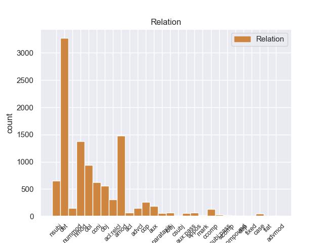
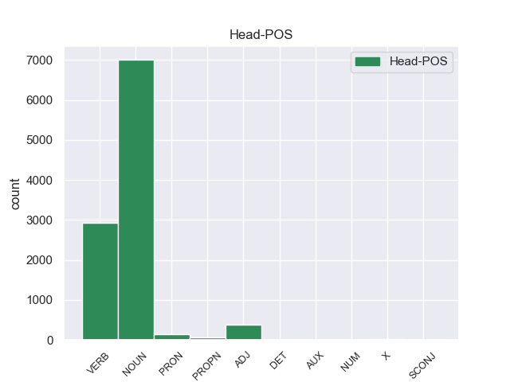
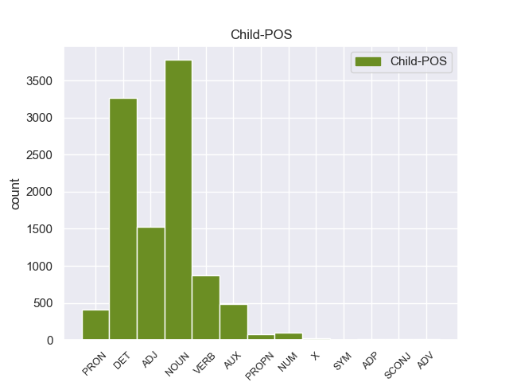

Distribution of features within this leaf



Agreement Rules sorted by frequency.
- When the dependent token is the determiner(det) of the head token, and the head token is NOUN and the dependent token is DET.
1 Μια _ _ _ _ 0 _ _ _
2 δημόσια _ _ _ _ 0 _ _ _
3 σύμβαση _ _ _ _ 0 _ _ _
4 δεν _ _ _ _ 0 _ _ _
5 μπορεί _ _ _ _ 0 _ _ _
6 να _ _ _ _ 0 _ _ _
7 περιλαμβάνει _ _ _ _ 0 _ _ _
8 την _ _ _ _ 0 _ _ _
9 απαίτηση _ _ _ _ 0 _ _ _
10 από _ _ _ _ 0 _ _ _
11 τους _ _ _ _ 0 _ _ _
12 κατασκευαστές _ _ _ _ 0 _ _ _
13 λεωφορείων _ _ _ _ 0 _ _ _
14 να _ _ _ _ 0 _ _ _
15 κάνουν _ _ _ _ 0 _ _ _
16 περιβαλλοντική _ _ _ _ 0 _ _ _
17 εκτίμηση _ _ _ _ 0 _ _ _
18 για _ _ _ _ 0 _ _ _
19 το _ _ _ _ 0 _ _ _
20 Ελσίνκι _ _ _ _ 0 _ _ _
21 πριν _ _ _ _ 0 _ _ _
22 να _ _ _ _ 0 _ _ _
23 υποβάλλουν _ _ _ _ 0 _ _ _
24 τη eτ DET _ Definite=Def|Gender=Fem|Number=Sing|PronType=Art 25 det _ _
25 σύμβαση σύμβαση NOUN _ Gender=Fem|Number=Sing 0 _ _ _
26 . _ _ _ _ 0 _ _ _
1 Μια _ _ _ _ 0 _ _ _
2 δημόσια δημόσιo ADJ _ Gender=Fem|Number=Sing 3 amod _ _
3 σύμβαση σύμβαση NOUN _ Gender=Fem|Number=Sing 0 _ _ _
4 δεν _ _ _ _ 0 _ _ _
5 μπορεί _ _ _ _ 0 _ _ _
6 να _ _ _ _ 0 _ _ _
7 περιλαμβάνει _ _ _ _ 0 _ _ _
8 την _ _ _ _ 0 _ _ _
9 απαίτηση _ _ _ _ 0 _ _ _
10 από _ _ _ _ 0 _ _ _
11 τους _ _ _ _ 0 _ _ _
12 κατασκευαστές _ _ _ _ 0 _ _ _
13 λεωφορείων _ _ _ _ 0 _ _ _
14 να _ _ _ _ 0 _ _ _
15 κάνουν _ _ _ _ 0 _ _ _
16 περιβαλλοντική _ _ _ _ 0 _ _ _
17 εκτίμηση _ _ _ _ 0 _ _ _
18 για _ _ _ _ 0 _ _ _
19 το _ _ _ _ 0 _ _ _
20 Ελσίνκι _ _ _ _ 0 _ _ _
21 πριν _ _ _ _ 0 _ _ _
22 να _ _ _ _ 0 _ _ _
23 υποβάλλουν _ _ _ _ 0 _ _ _
24 τη _ _ _ _ 0 _ _ _
25 σύμβαση _ _ _ _ 0 _ _ _
26 . _ _ _ _ 0 _ _ _
1 Μια _ _ _ _ 0 _ _ _
2 δημόσια _ _ _ _ 0 _ _ _
3 σύμβαση _ _ _ _ 0 _ _ _
4 δεν _ _ _ _ 0 _ _ _
5 μπορεί _ _ _ _ 0 _ _ _
6 να _ _ _ _ 0 _ _ _
7 περιλαμβάνει _ _ _ _ 0 _ _ _
8 την _ _ _ _ 0 _ _ _
9 απαίτηση _ _ _ _ 0 _ _ _
10 από _ _ _ _ 0 _ _ _
11 τους _ _ _ _ 0 _ _ _
12 κατασκευαστές κατασκευαστέ NOUN _ Gender=Masc|Number=Plur 0 _ _ _
13 λεωφορείων λεωφορείω NOUN _ Gender=Masc|Number=Plur 12 nmod _ _
14 να _ _ _ _ 0 _ _ _
15 κάνουν _ _ _ _ 0 _ _ _
16 περιβαλλοντική _ _ _ _ 0 _ _ _
17 εκτίμηση _ _ _ _ 0 _ _ _
18 για _ _ _ _ 0 _ _ _
19 το _ _ _ _ 0 _ _ _
20 Ελσίνκι _ _ _ _ 0 _ _ _
21 πριν _ _ _ _ 0 _ _ _
22 να _ _ _ _ 0 _ _ _
23 υποβάλλουν _ _ _ _ 0 _ _ _
24 τη _ _ _ _ 0 _ _ _
25 σύμβαση _ _ _ _ 0 _ _ _
26 . _ _ _ _ 0 _ _ _
1 Ως _ _ _ _ 0 _ _ _
2 τέτοιο _ _ _ _ 0 _ _ _
3 είχε _ _ _ _ 0 _ _ _
4 σχεδιασθεί σχεδιασθr VERB _ Gender=Masc|Number=Sing|Tense=Past|VerbForm=Part 0 _ _ _
5 σ _ _ _ _ 0 _ _ _
6 την _ _ _ _ 0 _ _ _
7 αρχή αρχή NOUN _ Gender=Fem|Number=Sing 4 obl _ _
8 . _ _ _ _ 0 _ _ _
1 Μια _ _ _ _ 0 _ _ _
2 δημόσια _ _ _ _ 0 _ _ _
3 σύμβαση σύμβαση NOUN _ Gender=Fem|Number=Sing 7 nsubj _ _
4 δεν _ _ _ _ 0 _ _ _
5 μπορεί _ _ _ _ 0 _ _ _
6 να _ _ _ _ 0 _ _ _
7 περιλαμβάνει περιλαμβάνειr VERB _ Mood=Ind|Number=Sing|Person=3|Tense=Pres|VerbForm=Fin 0 _ _ _
8 την _ _ _ _ 0 _ _ _
9 απαίτηση _ _ _ _ 0 _ _ _
10 από _ _ _ _ 0 _ _ _
11 τους _ _ _ _ 0 _ _ _
12 κατασκευαστές _ _ _ _ 0 _ _ _
13 λεωφορείων _ _ _ _ 0 _ _ _
14 να _ _ _ _ 0 _ _ _
15 κάνουν _ _ _ _ 0 _ _ _
16 περιβαλλοντική _ _ _ _ 0 _ _ _
17 εκτίμηση _ _ _ _ 0 _ _ _
18 για _ _ _ _ 0 _ _ _
19 το _ _ _ _ 0 _ _ _
20 Ελσίνκι _ _ _ _ 0 _ _ _
21 πριν _ _ _ _ 0 _ _ _
22 να _ _ _ _ 0 _ _ _
23 υποβάλλουν _ _ _ _ 0 _ _ _
24 τη _ _ _ _ 0 _ _ _
25 σύμβαση _ _ _ _ 0 _ _ _
26 . _ _ _ _ 0 _ _ _
1 Μια _ _ _ _ 0 _ _ _
2 δημόσια _ _ _ _ 0 _ _ _
3 σύμβαση _ _ _ _ 0 _ _ _
4 δεν _ _ _ _ 0 _ _ _
5 μπορεί _ _ _ _ 0 _ _ _
6 να _ _ _ _ 0 _ _ _
7 περιλαμβάνει περιλαμβάνειr VERB _ Mood=Ind|Number=Sing|Person=3|Tense=Pres|VerbForm=Fin 0 _ _ _
8 την _ _ _ _ 0 _ _ _
9 απαίτηση απαίτηση NOUN _ Gender=Fem|Number=Sing 7 obj _ _
10 από _ _ _ _ 0 _ _ _
11 τους _ _ _ _ 0 _ _ _
12 κατασκευαστές _ _ _ _ 0 _ _ _
13 λεωφορείων _ _ _ _ 0 _ _ _
14 να _ _ _ _ 0 _ _ _
15 κάνουν _ _ _ _ 0 _ _ _
16 περιβαλλοντική _ _ _ _ 0 _ _ _
17 εκτίμηση _ _ _ _ 0 _ _ _
18 για _ _ _ _ 0 _ _ _
19 το _ _ _ _ 0 _ _ _
20 Ελσίνκι _ _ _ _ 0 _ _ _
21 πριν _ _ _ _ 0 _ _ _
22 να _ _ _ _ 0 _ _ _
23 υποβάλλουν _ _ _ _ 0 _ _ _
24 τη _ _ _ _ 0 _ _ _
25 σύμβαση _ _ _ _ 0 _ _ _
26 . _ _ _ _ 0 _ _ _
1 Η _ _ _ _ 0 _ _ _
2 εταιρεία _ _ _ _ 0 _ _ _
3 αυτή _ _ _ _ 0 _ _ _
4 σ _ _ _ _ 0 _ _ _
5 τη _ _ _ _ 0 _ _ _
6 Black _ _ _ _ 0 _ _ _
7 Country _ _ _ _ 0 _ _ _
8 σ _ _ _ _ 0 _ _ _
9 το _ _ _ _ 0 _ _ _
10 Ηνωμένο _ _ _ _ 0 _ _ _
11 Βασίλειο _ _ _ _ 0 _ _ _
12 απασχολεί _ _ _ _ 0 _ _ _
13 80 _ _ _ _ 0 _ _ _
14 άτομα άτομ NOUN _ Gender=Fem|Number=Plur 0 _ _ _
15 , _ _ _ _ 0 _ _ _
16 δηλαδή _ _ _ _ 0 _ _ _
17 80 _ _ _ _ 0 _ _ _
18 θέσεις θέσει NOUN _ Gender=Masc|Number=Plur 14 conj _ _
19 εργασίες _ _ _ _ 0 _ _ _
20 για _ _ _ _ 0 _ _ _
21 τις _ _ _ _ 0 _ _ _
22 οποίες _ _ _ _ 0 _ _ _
23 υπάρχει _ _ _ _ 0 _ _ _
24 μεγάλη _ _ _ _ 0 _ _ _
25 ανάγκη _ _ _ _ 0 _ _ _
26 , _ _ _ _ 0 _ _ _
27 και _ _ _ _ 0 _ _ _
28 συμμορφώνεται _ _ _ _ 0 _ _ _
29 με _ _ _ _ 0 _ _ _
30 όλες _ _ _ _ 0 _ _ _
31 τις _ _ _ _ 0 _ _ _
32 κοινωνικές _ _ _ _ 0 _ _ _
33 προδιαγραφές _ _ _ _ 0 _ _ _
34 της _ _ _ _ 0 _ _ _
35 νομοθεσίας _ _ _ _ 0 _ _ _
36 του _ _ _ _ 0 _ _ _
37 Ηνωμένου _ _ _ _ 0 _ _ _
38 Βασιλείου _ _ _ _ 0 _ _ _
39 . _ _ _ _ 0 _ _ _
1 Μέχρι _ _ _ _ 0 _ _ _
2 στιγμής _ _ _ _ 0 _ _ _
3 , _ _ _ _ 0 _ _ _
4 δεν _ _ _ _ 0 _ _ _
5 ακούσαμε _ _ _ _ 0 _ _ _
6 τίποτα _ _ _ _ 0 _ _ _
7 σήμερα _ _ _ _ 0 _ _ _
8 το _ _ _ _ 0 _ _ _
9 απόγευμα _ _ _ _ 0 _ _ _
10 για _ _ _ _ 0 _ _ _
11 τα _ _ _ _ 0 _ _ _
12 άτομα άτομ NOUN _ Gender=Fem|Number=Plur 0 _ _ _
13 που _ _ _ _ 0 _ _ _
14 κινούν _ _ _ _ 0 _ _ _
15 την _ _ _ _ 0 _ _ _
16 οικονομία _ _ _ _ 0 _ _ _
17 επειδή _ _ _ _ 0 _ _ _
18 αποκτούν αποκτr VERB _ Mood=Ind|Number=Plur|Person=3|Tense=Pres|VerbForm=Fin 12 acl:relcl _ _
19 ανοικτή _ _ _ _ 0 _ _ _
20 πρόσβαση _ _ _ _ 0 _ _ _
21 σε _ _ _ _ 0 _ _ _
22 διαγωνισμούς _ _ _ _ 0 _ _ _
23 , _ _ _ _ 0 _ _ _
24 με _ _ _ _ 0 _ _ _
25 φθηνό _ _ _ _ 0 _ _ _
26 και _ _ _ _ 0 _ _ _
27 ευχερή _ _ _ _ 0 _ _ _
28 τρόπο _ _ _ _ 0 _ _ _
29 μέσω _ _ _ _ 0 _ _ _
30 της _ _ _ _ 0 _ _ _
31 ηλεκτρονικής _ _ _ _ 0 _ _ _
32 οδού _ _ _ _ 0 _ _ _
33 . _ _ _ _ 0 _ _ _
1 Η _ _ _ _ 0 _ _ _
2 εταιρεία _ _ _ _ 0 _ _ _
3 αυτή _ _ _ _ 0 _ _ _
4 σ _ _ _ _ 0 _ _ _
5 τη _ _ _ _ 0 _ _ _
6 Black _ _ _ _ 0 _ _ _
7 Country _ _ _ _ 0 _ _ _
8 σ _ _ _ _ 0 _ _ _
9 το _ _ _ _ 0 _ _ _
10 Ηνωμένο _ _ _ _ 0 _ _ _
11 Βασίλειο _ _ _ _ 0 _ _ _
12 απασχολεί απασχολείr VERB _ Mood=Ind|Number=Sing|Person=3|Tense=Pres|VerbForm=Fin 0 _ _ _
13 80 _ _ _ _ 0 _ _ _
14 άτομα _ _ _ _ 0 _ _ _
15 , _ _ _ _ 0 _ _ _
16 δηλαδή _ _ _ _ 0 _ _ _
17 80 _ _ _ _ 0 _ _ _
18 θέσεις _ _ _ _ 0 _ _ _
19 εργασίες _ _ _ _ 0 _ _ _
20 για _ _ _ _ 0 _ _ _
21 τις _ _ _ _ 0 _ _ _
22 οποίες _ _ _ _ 0 _ _ _
23 υπάρχει _ _ _ _ 0 _ _ _
24 μεγάλη _ _ _ _ 0 _ _ _
25 ανάγκη _ _ _ _ 0 _ _ _
26 , _ _ _ _ 0 _ _ _
27 και _ _ _ _ 0 _ _ _
28 συμμορφώνεται συμμορφώνεταιr VERB _ Mood=Ind|Number=Sing|Person=3|Tense=Pres|VerbForm=Fin 12 conj _ _
29 με _ _ _ _ 0 _ _ _
30 όλες _ _ _ _ 0 _ _ _
31 τις _ _ _ _ 0 _ _ _
32 κοινωνικές _ _ _ _ 0 _ _ _
33 προδιαγραφές _ _ _ _ 0 _ _ _
34 της _ _ _ _ 0 _ _ _
35 νομοθεσίας _ _ _ _ 0 _ _ _
36 του _ _ _ _ 0 _ _ _
37 Ηνωμένου _ _ _ _ 0 _ _ _
38 Βασιλείου _ _ _ _ 0 _ _ _
39 . _ _ _ _ 0 _ _ _
1 Μια _ _ _ _ 0 _ _ _
2 δημόσια _ _ _ _ 0 _ _ _
3 σύμβαση _ _ _ _ 0 _ _ _
4 δεν _ _ _ _ 0 _ _ _
5 μπορεί poρείr AUX _ Mood=Ind|Number=Sing|Person=3|Tense=Pres|VerbForm=Fin 7 aux _ _
6 να _ _ _ _ 0 _ _ _
7 περιλαμβάνει περιλαμβάνειr VERB _ Mood=Ind|Number=Sing|Person=3|Tense=Pres|VerbForm=Fin 0 _ _ _
8 την _ _ _ _ 0 _ _ _
9 απαίτηση _ _ _ _ 0 _ _ _
10 από _ _ _ _ 0 _ _ _
11 τους _ _ _ _ 0 _ _ _
12 κατασκευαστές _ _ _ _ 0 _ _ _
13 λεωφορείων _ _ _ _ 0 _ _ _
14 να _ _ _ _ 0 _ _ _
15 κάνουν _ _ _ _ 0 _ _ _
16 περιβαλλοντική _ _ _ _ 0 _ _ _
17 εκτίμηση _ _ _ _ 0 _ _ _
18 για _ _ _ _ 0 _ _ _
19 το _ _ _ _ 0 _ _ _
20 Ελσίνκι _ _ _ _ 0 _ _ _
21 πριν _ _ _ _ 0 _ _ _
22 να _ _ _ _ 0 _ _ _
23 υποβάλλουν _ _ _ _ 0 _ _ _
24 τη _ _ _ _ 0 _ _ _
25 σύμβαση _ _ _ _ 0 _ _ _
26 . _ _ _ _ 0 _ _ _
1 Ένας _ _ _ _ 0 _ _ _
2 από _ _ _ _ 0 _ _ _
3 αυτούς _ _ _ _ 0 _ _ _
4 είναι _ _ _ _ 0 _ _ _
5 ο _ _ _ _ 0 _ _ _
6 αριθμός _ _ _ _ 0 _ _ _
7 των _ _ _ _ 0 _ _ _
8 βίαιων _ _ _ _ 0 _ _ _
9 επιθέσεων _ _ _ _ 0 _ _ _
10 εναντίον _ _ _ _ 0 _ _ _
11 δημοσιογράφων _ _ _ _ 0 _ _ _
12 , _ _ _ _ 0 _ _ _
13 για _ _ _ _ 0 _ _ _
14 τις _ _ _ _ 0 _ _ _
15 οποίες _ _ _ _ 0 _ _ _
16 ευθύνονται _ _ _ _ 0 _ _ _
17 κυρίως _ _ _ _ 0 _ _ _
18 οπαδοί _ _ _ _ 0 _ _ _
19 της _ _ _ _ 0 _ _ _
20 νεοναζιστικής _ _ _ _ 0 _ _ _
21 οργάνωσης _ _ _ _ 0 _ _ _
22 που _ _ _ _ 0 _ _ _
23 εκπροσωπείται _ _ _ _ 0 _ _ _
24 σ _ _ _ _ 0 _ _ _
25 την _ _ _ _ 0 _ _ _
26 ελληνική _ _ _ _ 0 _ _ _
27 Βουλή _ _ _ _ 0 _ _ _
28 και _ _ _ _ 0 _ _ _
29 ένας _ _ _ _ 0 _ _ _
30 άλλος _ _ _ _ 0 _ _ _
31 λόγος _ _ _ _ 0 _ _ _
32 είναι ίναιer AUX _ Mood=Ind|Number=Sing|Person=3|Tense=Pres|VerbForm=Fin 34 cop _ _
33 το _ _ _ _ 0 _ _ _
34 κλείσιμο κλείσιμο NOUN _ Gender=Masc|Number=Sing 0 _ _ _
35 της _ _ _ _ 0 _ _ _
36 ελληνικής _ _ _ _ 0 _ _ _
37 δημόσιας _ _ _ _ 0 _ _ _
38 τηλεόρασης _ _ _ _ 0 _ _ _
39 και _ _ _ _ 0 _ _ _
40 ο _ _ _ _ 0 _ _ _
41 τρόπος _ _ _ _ 0 _ _ _
42 με _ _ _ _ 0 _ _ _
43 τον _ _ _ _ 0 _ _ _
44 οποίο _ _ _ _ 0 _ _ _
45 έγινε _ _ _ _ 0 _ _ _
46 αυτό _ _ _ _ 0 _ _ _
47 " _ _ _ _ 0 _ _ _
48 , _ _ _ _ 0 _ _ _
49 επεσήμανε _ _ _ _ 0 _ _ _
50 η _ _ _ _ 0 _ _ _
51 κ. _ _ _ _ 0 _ _ _
52 Χολγκάντ _ _ _ _ 0 _ _ _
53 . _ _ _ _ 0 _ _ _
1 Σχετικά _ _ _ _ 0 _ _ _
2 με _ _ _ _ 0 _ _ _
3 το _ _ _ _ 0 _ _ _
4 ζήτημα _ _ _ _ 0 _ _ _
5 της _ _ _ _ 0 _ _ _
6 σύμβασης _ _ _ _ 0 _ _ _
7 για _ _ _ _ 0 _ _ _
8 τα _ _ _ _ 0 _ _ _
9 λεωφορεία _ _ _ _ 0 _ _ _
10 σ _ _ _ _ 0 _ _ _
11 το _ _ _ _ 0 _ _ _
12 Ελσίνκι _ _ _ _ 0 _ _ _
13 , _ _ _ _ 0 _ _ _
14 σίγουρα _ _ _ _ 0 _ _ _
15 οι _ _ _ _ 0 _ _ _
16 αρχές _ _ _ _ 0 _ _ _
17 του _ _ _ _ 0 _ _ _
18 Ελσίνκι _ _ _ _ 0 _ _ _
19 ήταν _ _ _ _ 0 _ _ _
20 οι _ _ _ _ 0 _ _ _
21 αρμόδιες _ _ _ _ 0 _ _ _
22 για _ _ _ _ 0 _ _ _
23 να _ _ _ _ 0 _ _ _
24 αποφασίσουν _ _ _ _ 0 _ _ _
25 , _ _ _ _ 0 _ _ _
26 πριν _ _ _ _ 0 _ _ _
27 να _ _ _ _ 0 _ _ _
28 προκηρύξουν _ _ _ _ 0 _ _ _
29 το _ _ _ _ 0 _ _ _
30 διαγωνισμό _ _ _ _ 0 _ _ _
31 για _ _ _ _ 0 _ _ _
32 την _ _ _ _ 0 _ _ _
33 ανάθεση _ _ _ _ 0 _ _ _
34 της _ _ _ _ 0 _ _ _
35 σύμβασης _ _ _ _ 0 _ _ _
36 , _ _ _ _ 0 _ _ _
37 ποιο _ _ _ _ 0 _ _ _
38 είναι ίναιer AUX _ Mood=Ind|Number=Sing|Person=3|Tense=Pres|VerbForm=Fin 40 cop _ _
39 το _ _ _ _ 0 _ _ _
40 βέλτιστο βέλτιστο ADJ _ Gender=Masc|Number=Sing 0 _ _ _
41 και _ _ _ _ 0 _ _ _
42 το _ _ _ _ 0 _ _ _
43 πιο _ _ _ _ 0 _ _ _
44 φιλικό _ _ _ _ 0 _ _ _
45 προς _ _ _ _ 0 _ _ _
46 το _ _ _ _ 0 _ _ _
47 περιβάλλον _ _ _ _ 0 _ _ _
48 λεωφορείο _ _ _ _ 0 _ _ _
49 το _ _ _ _ 0 _ _ _
50 οποίο _ _ _ _ 0 _ _ _
51 επιθυμούσαν _ _ _ _ 0 _ _ _
52 . _ _ _ _ 0 _ _ _
1 Κάθε _ _ _ _ 0 _ _ _
2 πρωί _ _ _ _ 0 _ _ _
3 , _ _ _ _ 0 _ _ _
4 συνδέεται _ _ _ _ 0 _ _ _
5 ηλεκτρονικά _ _ _ _ 0 _ _ _
6 με _ _ _ _ 0 _ _ _
7 την _ _ _ _ 0 _ _ _
8 Επίσημη _ _ _ _ 0 _ _ _
9 Εφημερίδα _ _ _ _ 0 _ _ _
10 , _ _ _ _ 0 _ _ _
11 όπου _ _ _ _ 0 _ _ _
12 καταχωρούνται _ _ _ _ 0 _ _ _
13 πέντε πέντε NUM _ Number=Plur|NumType=Card 16 nummod _ _
14 ή _ _ _ _ 0 _ _ _
15 έξι _ _ _ _ 0 _ _ _
16 προσκλήσεις προσκλήón NOUN _ Gender=Masc|Number=Plur 0 _ _ _
17 υποβολής _ _ _ _ 0 _ _ _
18 προσφορών _ _ _ _ 0 _ _ _
19 , _ _ _ _ 0 _ _ _
20 όλες _ _ _ _ 0 _ _ _
21 για _ _ _ _ 0 _ _ _
22 το _ _ _ _ 0 _ _ _
23 Ηνωμένο _ _ _ _ 0 _ _ _
24 Βασίλειο _ _ _ _ 0 _ _ _
25 . _ _ _ _ 0 _ _ _
1 Αν _ _ _ _ 0 _ _ _
2 οι _ _ _ _ 0 _ _ _
3 εταιρείες _ _ _ _ 0 _ _ _
4 συμμορφωθούν συμμορφωθο VERB _ Mood=Ind|Number=Plur|Person=3|Tense=Pres|VerbForm=Fin 10 advcl _ _
5 με _ _ _ _ 0 _ _ _
6 αυτό _ _ _ _ 0 _ _ _
7 , _ _ _ _ 0 _ _ _
8 πρέπει _ _ _ _ 0 _ _ _
9 να _ _ _ _ 0 _ _ _
10 έχουν tουr VERB _ Mood=Ind|Number=Plur|Person=3|Tense=Pres|VerbForm=Fin 0 _ _ _
11 το _ _ _ _ 0 _ _ _
12 δικαίωμα _ _ _ _ 0 _ _ _
13 να _ _ _ _ 0 _ _ _
14 υποβάλλουν _ _ _ _ 0 _ _ _
15 προσφορές _ _ _ _ 0 _ _ _
16 για _ _ _ _ 0 _ _ _
17 συμβάσεις _ _ _ _ 0 _ _ _
18 . _ _ _ _ 0 _ _ _
1 Σχετικά _ _ _ _ 0 _ _ _
2 με _ _ _ _ 0 _ _ _
3 το _ _ _ _ 0 _ _ _
4 ζήτημα _ _ _ _ 0 _ _ _
5 της _ _ _ _ 0 _ _ _
6 σύμβασης _ _ _ _ 0 _ _ _
7 για _ _ _ _ 0 _ _ _
8 τα _ _ _ _ 0 _ _ _
9 λεωφορεία _ _ _ _ 0 _ _ _
10 σ _ _ _ _ 0 _ _ _
11 το _ _ _ _ 0 _ _ _
12 Ελσίνκι _ _ _ _ 0 _ _ _
13 , _ _ _ _ 0 _ _ _
14 σίγουρα _ _ _ _ 0 _ _ _
15 οι _ _ _ _ 0 _ _ _
16 αρχές _ _ _ _ 0 _ _ _
17 του _ _ _ _ 0 _ _ _
18 Ελσίνκι _ _ _ _ 0 _ _ _
19 ήταν _ _ _ _ 0 _ _ _
20 οι _ _ _ _ 0 _ _ _
21 αρμόδιες _ _ _ _ 0 _ _ _
22 για _ _ _ _ 0 _ _ _
23 να _ _ _ _ 0 _ _ _
24 αποφασίσουν _ _ _ _ 0 _ _ _
25 , _ _ _ _ 0 _ _ _
26 πριν _ _ _ _ 0 _ _ _
27 να _ _ _ _ 0 _ _ _
28 προκηρύξουν _ _ _ _ 0 _ _ _
29 το _ _ _ _ 0 _ _ _
30 διαγωνισμό _ _ _ _ 0 _ _ _
31 για _ _ _ _ 0 _ _ _
32 την _ _ _ _ 0 _ _ _
33 ανάθεση _ _ _ _ 0 _ _ _
34 της _ _ _ _ 0 _ _ _
35 σύμβασης _ _ _ _ 0 _ _ _
36 , _ _ _ _ 0 _ _ _
37 ποιο _ _ _ _ 0 _ _ _
38 είναι _ _ _ _ 0 _ _ _
39 το _ _ _ _ 0 _ _ _
40 βέλτιστο _ _ _ _ 0 _ _ _
41 και _ _ _ _ 0 _ _ _
42 το _ _ _ _ 0 _ _ _
43 πιο _ _ _ _ 0 _ _ _
44 φιλικό _ _ _ _ 0 _ _ _
45 προς _ _ _ _ 0 _ _ _
46 το _ _ _ _ 0 _ _ _
47 περιβάλλον _ _ _ _ 0 _ _ _
48 λεωφορείο _ _ _ _ 0 _ _ _
49 το το DET _ Definite=Def|Gender=Masc|Number=Sing|PronType=Art 50 det _ _
50 οποίο οποίο PRON _ Number=Sing|PronType=Int,Rel 0 _ _ _
51 επιθυμούσαν _ _ _ _ 0 _ _ _
52 . _ _ _ _ 0 _ _ _
1 Θέλω _ _ _ _ 0 _ _ _
2 να _ _ _ _ 0 _ _ _
3 σχολιάσω _ _ _ _ 0 _ _ _
4 τις _ _ _ _ 0 _ _ _
5 παρατηρήσεις _ _ _ _ 0 _ _ _
6 του _ _ _ _ 0 _ _ _
7 κ. _ _ _ _ 0 _ _ _
8 MacCormick _ _ _ _ 0 _ _ _
9 διότι _ _ _ _ 0 _ _ _
10 μου _ _ _ _ 0 _ _ _
11 φαίνεται φαίνεταιr VERB _ Mood=Ind|Number=Sing|Person=3|Tense=Pres|VerbForm=Fin 0 _ _ _
12 ότι _ _ _ _ 0 _ _ _
13 διαμαρτυρείται διαμαρτυρείταιr VERB _ Mood=Ind|Number=Sing|Person=3|Tense=Pres|VerbForm=Fin 11 ccomp _ _
14 υπερβολικά _ _ _ _ 0 _ _ _
15 . _ _ _ _ 0 _ _ _
1 Σχετικά _ _ _ _ 0 _ _ _
2 με _ _ _ _ 0 _ _ _
3 το _ _ _ _ 0 _ _ _
4 ζήτημα _ _ _ _ 0 _ _ _
5 της _ _ _ _ 0 _ _ _
6 σύμβασης _ _ _ _ 0 _ _ _
7 για _ _ _ _ 0 _ _ _
8 τα _ _ _ _ 0 _ _ _
9 λεωφορεία _ _ _ _ 0 _ _ _
10 σ _ _ _ _ 0 _ _ _
11 το _ _ _ _ 0 _ _ _
12 Ελσίνκι _ _ _ _ 0 _ _ _
13 , _ _ _ _ 0 _ _ _
14 σίγουρα _ _ _ _ 0 _ _ _
15 οι _ _ _ _ 0 _ _ _
16 αρχές αρχέ NOUN _ Gender=Masc|Number=Plur 21 nsubj _ _
17 του _ _ _ _ 0 _ _ _
18 Ελσίνκι _ _ _ _ 0 _ _ _
19 ήταν _ _ _ _ 0 _ _ _
20 οι _ _ _ _ 0 _ _ _
21 αρμόδιες αρμόδιε ADJ _ Number=Plur 0 _ _ _
22 για _ _ _ _ 0 _ _ _
23 να _ _ _ _ 0 _ _ _
24 αποφασίσουν _ _ _ _ 0 _ _ _
25 , _ _ _ _ 0 _ _ _
26 πριν _ _ _ _ 0 _ _ _
27 να _ _ _ _ 0 _ _ _
28 προκηρύξουν _ _ _ _ 0 _ _ _
29 το _ _ _ _ 0 _ _ _
30 διαγωνισμό _ _ _ _ 0 _ _ _
31 για _ _ _ _ 0 _ _ _
32 την _ _ _ _ 0 _ _ _
33 ανάθεση _ _ _ _ 0 _ _ _
34 της _ _ _ _ 0 _ _ _
35 σύμβασης _ _ _ _ 0 _ _ _
36 , _ _ _ _ 0 _ _ _
37 ποιο _ _ _ _ 0 _ _ _
38 είναι _ _ _ _ 0 _ _ _
39 το _ _ _ _ 0 _ _ _
40 βέλτιστο _ _ _ _ 0 _ _ _
41 και _ _ _ _ 0 _ _ _
42 το _ _ _ _ 0 _ _ _
43 πιο _ _ _ _ 0 _ _ _
44 φιλικό _ _ _ _ 0 _ _ _
45 προς _ _ _ _ 0 _ _ _
46 το _ _ _ _ 0 _ _ _
47 περιβάλλον _ _ _ _ 0 _ _ _
48 λεωφορείο _ _ _ _ 0 _ _ _
49 το _ _ _ _ 0 _ _ _
50 οποίο _ _ _ _ 0 _ _ _
51 επιθυμούσαν _ _ _ _ 0 _ _ _
52 . _ _ _ _ 0 _ _ _
1 Πιστεύουμε _ _ _ _ 0 _ _ _
2 ότι _ _ _ _ 0 _ _ _
3 είναι _ _ _ _ 0 _ _ _
4 απαραίτητη _ _ _ _ 0 _ _ _
5 μία _ _ _ _ 0 _ _ _
6 αποφασιστική _ _ _ _ 0 _ _ _
7 απάντηση απάντηση NOUN _ Gender=Fem|Number=Sing 0 _ _ _
8 καθοδηγημένη καθοδηγημένo VERB _ Gender=Fem|Number=Sing|VerbForm=Part 7 acl _ _
9 από _ _ _ _ 0 _ _ _
10 την _ _ _ _ 0 _ _ _
11 Επιτροπή _ _ _ _ 0 _ _ _
12 . _ _ _ _ 0 _ _ _
1 Για _ _ _ _ 0 _ _ _
2 το _ _ _ _ 0 _ _ _
3 ζήτημα ζήτημα NOUN _ Gender=Masc|Number=Sing 0 _ _ _
4 αυτό αυτό PRON _ Gender=Masc|Number=Sing|PronType=Dem 3 amod _ _
5 έχει _ _ _ _ 0 _ _ _
6 ξεκινήσει _ _ _ _ 0 _ _ _
7 και _ _ _ _ 0 _ _ _
8 μία _ _ _ _ 0 _ _ _
9 νομική _ _ _ _ 0 _ _ _
10 εξέταση _ _ _ _ 0 _ _ _
11 και _ _ _ _ 0 _ _ _
12 ο _ _ _ _ 0 _ _ _
13 Γενικός _ _ _ _ 0 _ _ _
14 Εισαγγελέας _ _ _ _ 0 _ _ _
15 αποφάνθηκε _ _ _ _ 0 _ _ _
16 με _ _ _ _ 0 _ _ _
17 σαφήνεια _ _ _ _ 0 _ _ _
18 ότι _ _ _ _ 0 _ _ _
19 είναι _ _ _ _ 0 _ _ _
20 σωστή _ _ _ _ 0 _ _ _
21 η _ _ _ _ 0 _ _ _
22 δική _ _ _ _ 0 _ _ _
23 μου _ _ _ _ 0 _ _ _
24 άποψη _ _ _ _ 0 _ _ _
25 , _ _ _ _ 0 _ _ _
26 και _ _ _ _ 0 _ _ _
27 άποψη _ _ _ _ 0 _ _ _
28 της _ _ _ _ 0 _ _ _
29 Επιτροπής _ _ _ _ 0 _ _ _
30 Περιβάλλοντος _ _ _ _ 0 _ _ _
31 , _ _ _ _ 0 _ _ _
32 και _ _ _ _ 0 _ _ _
33 όχι _ _ _ _ 0 _ _ _
34 αυτή _ _ _ _ 0 _ _ _
35 της _ _ _ _ 0 _ _ _
36 Επιτροπής _ _ _ _ 0 _ _ _
37 . _ _ _ _ 0 _ _ _
1 Αυτό αυτό PRON _ Case=Acc,Nom|Gender=Masc|Number=Sing|Person=3|PronType=Prs 2 nsubj _ _
2 ισχύει ισχύir VERB _ Mood=Ind|Number=Sing|Person=3|Tense=Pres|VerbForm=Fin 0 _ _ _
3 για _ _ _ _ 0 _ _ _
4 τις _ _ _ _ 0 _ _ _
5 επιχειρήσεις _ _ _ _ 0 _ _ _
6 , _ _ _ _ 0 _ _ _
7 τους _ _ _ _ 0 _ _ _
8 οργανισμούς _ _ _ _ 0 _ _ _
9 , _ _ _ _ 0 _ _ _
10 τους _ _ _ _ 0 _ _ _
11 φορείς _ _ _ _ 0 _ _ _
12 παροχής _ _ _ _ 0 _ _ _
13 υπηρεσιών _ _ _ _ 0 _ _ _
14 , _ _ _ _ 0 _ _ _
15 τους _ _ _ _ 0 _ _ _
16 κατασκευαστές _ _ _ _ 0 _ _ _
17 , _ _ _ _ 0 _ _ _
18 τους _ _ _ _ 0 _ _ _
19 αναδόχους _ _ _ _ 0 _ _ _
20 έργων _ _ _ _ 0 _ _ _
21 σε _ _ _ _ 0 _ _ _
22 ολόκληρη _ _ _ _ 0 _ _ _
23 την _ _ _ _ 0 _ _ _
24 Ευρωπαϊκή _ _ _ _ 0 _ _ _
25 Ένωση _ _ _ _ 0 _ _ _
26 . _ _ _ _ 0 _ _ _
1 Σε _ _ _ _ 0 _ _ _
2 ορισμένα _ _ _ _ 0 _ _ _
3 όμως _ _ _ _ 0 _ _ _
4 σημεία _ _ _ _ 0 _ _ _
5 η _ _ _ _ 0 _ _ _
6 αρμόδια _ _ _ _ 0 _ _ _
7 επιτροπή _ _ _ _ 0 _ _ _
8 κατέληξε _ _ _ _ 0 _ _ _
9 σε _ _ _ _ 0 _ _ _
10 περίεργα _ _ _ _ 0 _ _ _
11 αποτελέσματα _ _ _ _ 0 _ _ _
12 , _ _ _ _ 0 _ _ _
13 κυρίως _ _ _ _ 0 _ _ _
14 όσον _ _ _ _ 0 _ _ _
15 αφορά _ _ _ _ 0 _ _ _
16 την _ _ _ _ 0 _ _ _
17 πρόταση _ _ _ _ 0 _ _ _
18 οδηγίας _ _ _ _ 0 _ _ _
19 για _ _ _ _ 0 _ _ _
20 τις _ _ _ _ 0 _ _ _
21 δημόσιες _ _ _ _ 0 _ _ _
22 συμβάσεις _ _ _ _ 0 _ _ _
23 για _ _ _ _ 0 _ _ _
24 αγαθά _ _ _ _ 0 _ _ _
25 , _ _ _ _ 0 _ _ _
26 υπηρεσίες _ _ _ _ 0 _ _ _
27 και _ _ _ _ 0 _ _ _
28 για _ _ _ _ 0 _ _ _
29 την _ _ _ _ 0 _ _ _
30 ανάθεση _ _ _ _ 0 _ _ _
31 κατασκευαστικών _ _ _ _ 0 _ _ _
32 συμβάσεων _ _ _ _ 0 _ _ _
33 , _ _ _ _ 0 _ _ _
34 το _ _ _ _ 0 _ _ _
35 άρθρο _ _ _ _ 0 _ _ _
36 53 _ _ _ _ 0 _ _ _
37 της _ _ _ _ 0 _ _ _
38 οποίας _ _ _ _ 0 _ _ _
39 θα _ _ _ _ 0 _ _ _
40 πρέπει _ _ _ _ 0 _ _ _
41 να _ _ _ _ 0 _ _ _
42 τροποποιηθεί _ _ _ _ 0 _ _ _
43 , _ _ _ _ 0 _ _ _
44 έτσι _ _ _ _ 0 _ _ _
45 ώστε _ _ _ _ 0 _ _ _
46 να _ _ _ _ 0 _ _ _
47 καταστεί _ _ _ _ 0 _ _ _
48 σημαντικά _ _ _ _ 0 _ _ _
49 ευκολότερο _ _ _ _ 0 _ _ _
50 να _ _ _ _ 0 _ _ _
51 λαμβάνεται _ _ _ _ 0 _ _ _
52 υπόψη _ _ _ _ 0 _ _ _
53 το _ _ _ _ 0 _ _ _
54 περιβάλλον _ _ _ _ 0 _ _ _
55 σ _ _ _ _ 0 _ _ _
56 το _ _ _ _ 0 _ _ _
57 πλαίσιο _ _ _ _ 0 _ _ _
58 των _ _ _ _ 0 _ _ _
59 δημοσίων _ _ _ _ 0 _ _ _
60 συμβάσεων _ _ _ _ 0 _ _ _
61 , _ _ _ _ 0 _ _ _
62 ενώ _ _ _ _ 0 _ _ _
63 σ _ _ _ _ 0 _ _ _
64 τη _ _ _ _ 0 _ _ _
65 δεύτερη _ _ _ _ 0 _ _ _
66 οδηγία _ _ _ _ 0 _ _ _
67 , _ _ _ _ 0 _ _ _
68 δηλαδή _ _ _ _ 0 _ _ _
69 σ _ _ _ _ 0 _ _ _
70 την _ _ _ _ 0 _ _ _
71 πρόταση _ _ _ _ 0 _ _ _
72 οδηγίας _ _ _ _ 0 _ _ _
73 για _ _ _ _ 0 _ _ _
74 τις _ _ _ _ 0 _ _ _
75 δημόσιες _ _ _ _ 0 _ _ _
76 συμβάσεις _ _ _ _ 0 _ _ _
77 σ _ _ _ _ 0 _ _ _
78 τον _ _ _ _ 0 _ _ _
79 τομέα _ _ _ _ 0 _ _ _
80 των _ _ _ _ 0 _ _ _
81 υδάτων _ _ _ _ 0 _ _ _
82 , _ _ _ _ 0 _ _ _
83 της _ _ _ _ 0 _ _ _
84 ενέργειας _ _ _ _ 0 _ _ _
85 και _ _ _ _ 0 _ _ _
86 των _ _ _ _ 0 _ _ _
87 μεταφορών _ _ _ _ 0 _ _ _
88 , _ _ _ _ 0 _ _ _
89 δεν _ _ _ _ 0 _ _ _
90 πραγματοποιείται _ _ _ _ 0 _ _ _
91 η _ _ _ _ 0 _ _ _
92 ίδια _ _ _ _ 0 _ _ _
93 τροποποίηση _ _ _ _ 0 _ _ _
94 του _ _ _ _ 0 _ _ _
95 άρθρου _ _ _ _ 0 _ _ _
96 54 _ _ _ _ 0 _ _ _
97 , _ _ _ _ 0 _ _ _
98 το _ _ _ _ 0 _ _ _
99 οποίο _ _ _ _ 0 _ _ _
100 είναι _ _ _ _ 0 _ _ _
101 ταυτόσημο _ _ _ _ 0 _ _ _
102 με _ _ _ _ 0 _ _ _
103 το _ _ _ _ 0 _ _ _
104 άρθρο _ _ _ _ 0 _ _ _
105 53 _ _ _ _ 0 _ _ _
106 της _ _ _ _ 0 _ _ _
107 πρώτης πρώτηo ADJ _ Gender=Fem|Number=Sing|NumType=Ord 108 nummod _ _
108 οδηγίας οδηγίας NOUN _ Gender=Fem|Number=Sing 0 _ _ _
109 . _ _ _ _ 0 _ _ _
1 Η _ _ _ _ 0 _ _ _
2 εταιρεία _ _ _ _ 0 _ _ _
3 αυτή _ _ _ _ 0 _ _ _
4 σ _ _ _ _ 0 _ _ _
5 τη _ _ _ _ 0 _ _ _
6 Black _ _ _ _ 0 _ _ _
7 Country _ _ _ _ 0 _ _ _
8 σ _ _ _ _ 0 _ _ _
9 το _ _ _ _ 0 _ _ _
10 Ηνωμένο _ _ _ _ 0 _ _ _
11 Βασίλειο _ _ _ _ 0 _ _ _
12 απασχολεί _ _ _ _ 0 _ _ _
13 80 _ _ _ _ 0 _ _ _
14 άτομα _ _ _ _ 0 _ _ _
15 , _ _ _ _ 0 _ _ _
16 δηλαδή _ _ _ _ 0 _ _ _
17 80 _ _ _ _ 0 _ _ _
18 θέσεις θέσει NOUN _ Gender=Masc|Number=Plur 0 _ _ _
19 εργασίες εργασίε NOUN _ Number=Plur 18 amod _ _
20 για _ _ _ _ 0 _ _ _
21 τις _ _ _ _ 0 _ _ _
22 οποίες _ _ _ _ 0 _ _ _
23 υπάρχει _ _ _ _ 0 _ _ _
24 μεγάλη _ _ _ _ 0 _ _ _
25 ανάγκη _ _ _ _ 0 _ _ _
26 , _ _ _ _ 0 _ _ _
27 και _ _ _ _ 0 _ _ _
28 συμμορφώνεται _ _ _ _ 0 _ _ _
29 με _ _ _ _ 0 _ _ _
30 όλες _ _ _ _ 0 _ _ _
31 τις _ _ _ _ 0 _ _ _
32 κοινωνικές _ _ _ _ 0 _ _ _
33 προδιαγραφές _ _ _ _ 0 _ _ _
34 της _ _ _ _ 0 _ _ _
35 νομοθεσίας _ _ _ _ 0 _ _ _
36 του _ _ _ _ 0 _ _ _
37 Ηνωμένου _ _ _ _ 0 _ _ _
38 Βασιλείου _ _ _ _ 0 _ _ _
39 . _ _ _ _ 0 _ _ _
1 Su _ _ _ _ 0 _ _ _
2 inauguración _ _ _ _ 0 _ _ _
3 está estar AUX _ Mood=Ind|Number=Sing|Person=3|Tense=Pres|VerbForm=Fin 4 aux:pass _ _
4 prevista previsto VERB _ Gender=Fem|Number=Sing|VerbForm=Part 0 _ _ _
5 durante _ _ _ _ 0 _ _ _
6 el _ _ _ _ 0 _ _ _
7 año _ _ _ _ 0 _ _ _
8 2011 _ _ _ _ 0 _ _ _
9 . _ _ _ _ 0 _ _ _
1 Σε _ _ _ _ 0 _ _ _
2 ορισμένα _ _ _ _ 0 _ _ _
3 όμως _ _ _ _ 0 _ _ _
4 σημεία _ _ _ _ 0 _ _ _
5 η _ _ _ _ 0 _ _ _
6 αρμόδια _ _ _ _ 0 _ _ _
7 επιτροπή _ _ _ _ 0 _ _ _
8 κατέληξε _ _ _ _ 0 _ _ _
9 σε _ _ _ _ 0 _ _ _
10 περίεργα _ _ _ _ 0 _ _ _
11 αποτελέσματα _ _ _ _ 0 _ _ _
12 , _ _ _ _ 0 _ _ _
13 κυρίως _ _ _ _ 0 _ _ _
14 όσον _ _ _ _ 0 _ _ _
15 αφορά _ _ _ _ 0 _ _ _
16 την _ _ _ _ 0 _ _ _
17 πρόταση _ _ _ _ 0 _ _ _
18 οδηγίας _ _ _ _ 0 _ _ _
19 για _ _ _ _ 0 _ _ _
20 τις _ _ _ _ 0 _ _ _
21 δημόσιες _ _ _ _ 0 _ _ _
22 συμβάσεις _ _ _ _ 0 _ _ _
23 για _ _ _ _ 0 _ _ _
24 αγαθά _ _ _ _ 0 _ _ _
25 , _ _ _ _ 0 _ _ _
26 υπηρεσίες _ _ _ _ 0 _ _ _
27 και _ _ _ _ 0 _ _ _
28 για _ _ _ _ 0 _ _ _
29 την _ _ _ _ 0 _ _ _
30 ανάθεση _ _ _ _ 0 _ _ _
31 κατασκευαστικών _ _ _ _ 0 _ _ _
32 συμβάσεων _ _ _ _ 0 _ _ _
33 , _ _ _ _ 0 _ _ _
34 το _ _ _ _ 0 _ _ _
35 άρθρο _ _ _ _ 0 _ _ _
36 53 _ _ _ _ 0 _ _ _
37 της _ _ _ _ 0 _ _ _
38 οποίας _ _ _ _ 0 _ _ _
39 θα _ _ _ _ 0 _ _ _
40 πρέπει _ _ _ _ 0 _ _ _
41 να _ _ _ _ 0 _ _ _
42 τροποποιηθεί _ _ _ _ 0 _ _ _
43 , _ _ _ _ 0 _ _ _
44 έτσι _ _ _ _ 0 _ _ _
45 ώστε _ _ _ _ 0 _ _ _
46 να _ _ _ _ 0 _ _ _
47 καταστεί _ _ _ _ 0 _ _ _
48 σημαντικά _ _ _ _ 0 _ _ _
49 ευκολότερο _ _ _ _ 0 _ _ _
50 να _ _ _ _ 0 _ _ _
51 λαμβάνεται _ _ _ _ 0 _ _ _
52 υπόψη _ _ _ _ 0 _ _ _
53 το _ _ _ _ 0 _ _ _
54 περιβάλλον _ _ _ _ 0 _ _ _
55 σ _ _ _ _ 0 _ _ _
56 το _ _ _ _ 0 _ _ _
57 πλαίσιο _ _ _ _ 0 _ _ _
58 των _ _ _ _ 0 _ _ _
59 δημοσίων _ _ _ _ 0 _ _ _
60 συμβάσεων _ _ _ _ 0 _ _ _
61 , _ _ _ _ 0 _ _ _
62 ενώ _ _ _ _ 0 _ _ _
63 σ _ _ _ _ 0 _ _ _
64 τη _ _ _ _ 0 _ _ _
65 δεύτερη _ _ _ _ 0 _ _ _
66 οδηγία _ _ _ _ 0 _ _ _
67 , _ _ _ _ 0 _ _ _
68 δηλαδή _ _ _ _ 0 _ _ _
69 σ _ _ _ _ 0 _ _ _
70 την _ _ _ _ 0 _ _ _
71 πρόταση πρόταση NOUN _ Gender=Fem|Number=Sing 0 _ _ _
72 οδηγίας οδηγίας NOUN _ Gender=Fem|Number=Sing 71 appos _ _
73 για _ _ _ _ 0 _ _ _
74 τις _ _ _ _ 0 _ _ _
75 δημόσιες _ _ _ _ 0 _ _ _
76 συμβάσεις _ _ _ _ 0 _ _ _
77 σ _ _ _ _ 0 _ _ _
78 τον _ _ _ _ 0 _ _ _
79 τομέα _ _ _ _ 0 _ _ _
80 των _ _ _ _ 0 _ _ _
81 υδάτων _ _ _ _ 0 _ _ _
82 , _ _ _ _ 0 _ _ _
83 της _ _ _ _ 0 _ _ _
84 ενέργειας _ _ _ _ 0 _ _ _
85 και _ _ _ _ 0 _ _ _
86 των _ _ _ _ 0 _ _ _
87 μεταφορών _ _ _ _ 0 _ _ _
88 , _ _ _ _ 0 _ _ _
89 δεν _ _ _ _ 0 _ _ _
90 πραγματοποιείται _ _ _ _ 0 _ _ _
91 η _ _ _ _ 0 _ _ _
92 ίδια _ _ _ _ 0 _ _ _
93 τροποποίηση _ _ _ _ 0 _ _ _
94 του _ _ _ _ 0 _ _ _
95 άρθρου _ _ _ _ 0 _ _ _
96 54 _ _ _ _ 0 _ _ _
97 , _ _ _ _ 0 _ _ _
98 το _ _ _ _ 0 _ _ _
99 οποίο _ _ _ _ 0 _ _ _
100 είναι _ _ _ _ 0 _ _ _
101 ταυτόσημο _ _ _ _ 0 _ _ _
102 με _ _ _ _ 0 _ _ _
103 το _ _ _ _ 0 _ _ _
104 άρθρο _ _ _ _ 0 _ _ _
105 53 _ _ _ _ 0 _ _ _
106 της _ _ _ _ 0 _ _ _
107 πρώτης _ _ _ _ 0 _ _ _
108 οδηγίας _ _ _ _ 0 _ _ _
109 . _ _ _ _ 0 _ _ _
1 Σχετικά _ _ _ _ 0 _ _ _
2 με _ _ _ _ 0 _ _ _
3 το _ _ _ _ 0 _ _ _
4 ζήτημα _ _ _ _ 0 _ _ _
5 της _ _ _ _ 0 _ _ _
6 σύμβασης _ _ _ _ 0 _ _ _
7 για _ _ _ _ 0 _ _ _
8 τα _ _ _ _ 0 _ _ _
9 λεωφορεία _ _ _ _ 0 _ _ _
10 σ _ _ _ _ 0 _ _ _
11 το _ _ _ _ 0 _ _ _
12 Ελσίνκι _ _ _ _ 0 _ _ _
13 , _ _ _ _ 0 _ _ _
14 σίγουρα _ _ _ _ 0 _ _ _
15 οι _ _ _ _ 0 _ _ _
16 αρχές _ _ _ _ 0 _ _ _
17 του _ _ _ _ 0 _ _ _
18 Ελσίνκι _ _ _ _ 0 _ _ _
19 ήταν _ _ _ _ 0 _ _ _
20 οι _ _ _ _ 0 _ _ _
21 αρμόδιες _ _ _ _ 0 _ _ _
22 για _ _ _ _ 0 _ _ _
23 να _ _ _ _ 0 _ _ _
24 αποφασίσουν _ _ _ _ 0 _ _ _
25 , _ _ _ _ 0 _ _ _
26 πριν _ _ _ _ 0 _ _ _
27 να _ _ _ _ 0 _ _ _
28 προκηρύξουν _ _ _ _ 0 _ _ _
29 το _ _ _ _ 0 _ _ _
30 διαγωνισμό _ _ _ _ 0 _ _ _
31 για _ _ _ _ 0 _ _ _
32 την _ _ _ _ 0 _ _ _
33 ανάθεση _ _ _ _ 0 _ _ _
34 της _ _ _ _ 0 _ _ _
35 σύμβασης _ _ _ _ 0 _ _ _
36 , _ _ _ _ 0 _ _ _
37 ποιο _ _ _ _ 0 _ _ _
38 είναι _ _ _ _ 0 _ _ _
39 το _ _ _ _ 0 _ _ _
40 βέλτιστο βέλτιστο ADJ _ Gender=Masc|Number=Sing 0 _ _ _
41 και _ _ _ _ 0 _ _ _
42 το _ _ _ _ 0 _ _ _
43 πιο _ _ _ _ 0 _ _ _
44 φιλικό _ _ _ _ 0 _ _ _
45 προς _ _ _ _ 0 _ _ _
46 το _ _ _ _ 0 _ _ _
47 περιβάλλον _ _ _ _ 0 _ _ _
48 λεωφορείο λεωφορείο NOUN _ Gender=Masc|Number=Sing 40 nmod _ _
49 το _ _ _ _ 0 _ _ _
50 οποίο _ _ _ _ 0 _ _ _
51 επιθυμούσαν _ _ _ _ 0 _ _ _
52 . _ _ _ _ 0 _ _ _
1 Σχετικά _ _ _ _ 0 _ _ _
2 με _ _ _ _ 0 _ _ _
3 το _ _ _ _ 0 _ _ _
4 ζήτημα _ _ _ _ 0 _ _ _
5 της _ _ _ _ 0 _ _ _
6 σύμβασης _ _ _ _ 0 _ _ _
7 για _ _ _ _ 0 _ _ _
8 τα _ _ _ _ 0 _ _ _
9 λεωφορεία _ _ _ _ 0 _ _ _
10 σ _ _ _ _ 0 _ _ _
11 το _ _ _ _ 0 _ _ _
12 Ελσίνκι _ _ _ _ 0 _ _ _
13 , _ _ _ _ 0 _ _ _
14 σίγουρα _ _ _ _ 0 _ _ _
15 οι _ _ _ _ 0 _ _ _
16 αρχές _ _ _ _ 0 _ _ _
17 του _ _ _ _ 0 _ _ _
18 Ελσίνκι _ _ _ _ 0 _ _ _
19 ήταν _ _ _ _ 0 _ _ _
20 οι _ _ _ _ 0 _ _ _
21 αρμόδιες _ _ _ _ 0 _ _ _
22 για _ _ _ _ 0 _ _ _
23 να _ _ _ _ 0 _ _ _
24 αποφασίσουν _ _ _ _ 0 _ _ _
25 , _ _ _ _ 0 _ _ _
26 πριν _ _ _ _ 0 _ _ _
27 να _ _ _ _ 0 _ _ _
28 προκηρύξουν _ _ _ _ 0 _ _ _
29 το _ _ _ _ 0 _ _ _
30 διαγωνισμό _ _ _ _ 0 _ _ _
31 για _ _ _ _ 0 _ _ _
32 την _ _ _ _ 0 _ _ _
33 ανάθεση _ _ _ _ 0 _ _ _
34 της _ _ _ _ 0 _ _ _
35 σύμβασης _ _ _ _ 0 _ _ _
36 , _ _ _ _ 0 _ _ _
37 ποιο _ _ _ _ 0 _ _ _
38 είναι _ _ _ _ 0 _ _ _
39 το _ _ _ _ 0 _ _ _
40 βέλτιστο βέλτιστο ADJ _ Gender=Masc|Number=Sing 0 _ _ _
41 και _ _ _ _ 0 _ _ _
42 το _ _ _ _ 0 _ _ _
43 πιο _ _ _ _ 0 _ _ _
44 φιλικό φιλικό ADJ _ Gender=Masc|Number=Sing 40 conj _ _
45 προς _ _ _ _ 0 _ _ _
46 το _ _ _ _ 0 _ _ _
47 περιβάλλον _ _ _ _ 0 _ _ _
48 λεωφορείο _ _ _ _ 0 _ _ _
49 το _ _ _ _ 0 _ _ _
50 οποίο _ _ _ _ 0 _ _ _
51 επιθυμούσαν _ _ _ _ 0 _ _ _
52 . _ _ _ _ 0 _ _ _
1 Θέλω _ _ _ _ 0 _ _ _
2 να _ _ _ _ 0 _ _ _
3 σχολιάσω _ _ _ _ 0 _ _ _
4 τις _ _ _ _ 0 _ _ _
5 παρατηρήσεις _ _ _ _ 0 _ _ _
6 του _ _ _ _ 0 _ _ _
7 κ. _ _ _ _ 0 _ _ _
8 MacCormick _ _ _ _ 0 _ _ _
9 διότι _ _ _ _ 0 _ _ _
10 μου μου PRON _ Case=Acc,Dat|Number=Sing|Person=1|PrepCase=Npr|PronType=Prs 11 iobj _ _
11 φαίνεται φαίνεταιr VERB _ Mood=Ind|Number=Sing|Person=3|Tense=Pres|VerbForm=Fin 0 _ _ _
12 ότι _ _ _ _ 0 _ _ _
13 διαμαρτυρείται _ _ _ _ 0 _ _ _
14 υπερβολικά _ _ _ _ 0 _ _ _
15 . _ _ _ _ 0 _ _ _
1 Εξίσου _ _ _ _ 0 _ _ _
2 σημαντική _ _ _ _ 0 _ _ _
3 ήταν _ _ _ _ 0 _ _ _
4 η _ _ _ _ 0 _ _ _
5 πτώση _ _ _ _ 0 _ _ _
6 που _ _ _ _ 0 _ _ _
7 σημείωσαν _ _ _ _ 0 _ _ _
8 και _ _ _ _ 0 _ _ _
9 οι _ _ _ _ 0 _ _ _
10 ΗΠΑ _ _ _ _ 0 _ _ _
11 σ _ _ _ _ 0 _ _ _
12 την _ _ _ _ 0 _ _ _
13 ίδια _ _ _ _ 0 _ _ _
14 έκθεση _ _ _ _ 0 _ _ _
15 μετά _ _ _ _ 0 _ _ _
16 το _ _ _ _ 0 _ _ _
17 κυνήγι _ _ _ _ 0 _ _ _
18 σ _ _ _ _ 0 _ _ _
19 το _ _ _ _ 0 _ _ _
20 οποίο οποίο PRON _ Number=Sing|PronType=Int,Rel 22 obl _ _
21 έχει _ _ _ _ 0 _ _ _
22 επιδοθεί επιδοθr VERB _ Gender=Masc|Number=Sing|Tense=Past|VerbForm=Part 0 _ _ _
23 η _ _ _ _ 0 _ _ _
24 αμερικανική _ _ _ _ 0 _ _ _
25 κυβέρνηση _ _ _ _ 0 _ _ _
26 προς _ _ _ _ 0 _ _ _
27 τους _ _ _ _ 0 _ _ _
28 υπεύθυνους _ _ _ _ 0 _ _ _
29 διαρροών _ _ _ _ 0 _ _ _
30 κρατικών _ _ _ _ 0 _ _ _
31 μυστικών _ _ _ _ 0 _ _ _
32 , _ _ _ _ 0 _ _ _
33 γεγονός _ _ _ _ 0 _ _ _
34 που _ _ _ _ 0 _ _ _
35 λειτουργεί _ _ _ _ 0 _ _ _
36 ως _ _ _ _ 0 _ _ _
37 " _ _ _ _ 0 _ _ _
38 προειδοποίηση _ _ _ _ 0 _ _ _
39 για _ _ _ _ 0 _ _ _
40 οποιονδήποτε _ _ _ _ 0 _ _ _
41 επιχειρήσει _ _ _ _ 0 _ _ _
42 αντίστοιχες _ _ _ _ 0 _ _ _
43 ενέργειες _ _ _ _ 0 _ _ _
44 " _ _ _ _ 0 _ _ _
45 , _ _ _ _ 0 _ _ _
46 αναφέρεται _ _ _ _ 0 _ _ _
47 σ _ _ _ _ 0 _ _ _
48 την _ _ _ _ 0 _ _ _
49 έκθεση _ _ _ _ 0 _ _ _
50 των _ _ _ _ 0 _ _ _
51 " _ _ _ _ 0 _ _ _
52 Δημοσιογράφων _ _ _ _ 0 _ _ _
53 Χωρίς _ _ _ _ 0 _ _ _
54 Σύνορα _ _ _ _ 0 _ _ _
55 " _ _ _ _ 0 _ _ _
56 . _ _ _ _ 0 _ _ _
1 Δεν _ _ _ _ 0 _ _ _
2 είπατε _ _ _ _ 0 _ _ _
3 τι _ _ _ _ 0 _ _ _
4 πιστεύετε _ _ _ _ 0 _ _ _
5 σχετικά _ _ _ _ 0 _ _ _
6 με _ _ _ _ 0 _ _ _
7 το το DET _ Definite=Def|Gender=Masc|Number=Sing|PronType=Art 10 det _ _
8 " _ _ _ _ 0 _ _ _
9 περισσότερη _ _ _ _ 0 _ _ _
10 Ευρώπη ευρώπη PROPN _ Gender=Fem|Number=Sing 0 _ _ _
11 " _ _ _ _ 0 _ _ _
12 . _ _ _ _ 0 _ _ _
1 Ένας _ _ _ _ 0 _ _ _
2 από _ _ _ _ 0 _ _ _
3 αυτούς _ _ _ _ 0 _ _ _
4 είναι _ _ _ _ 0 _ _ _
5 ο _ _ _ _ 0 _ _ _
6 αριθμός _ _ _ _ 0 _ _ _
7 των _ _ _ _ 0 _ _ _
8 βίαιων _ _ _ _ 0 _ _ _
9 επιθέσεων _ _ _ _ 0 _ _ _
10 εναντίον _ _ _ _ 0 _ _ _
11 δημοσιογράφων _ _ _ _ 0 _ _ _
12 , _ _ _ _ 0 _ _ _
13 για _ _ _ _ 0 _ _ _
14 τις _ _ _ _ 0 _ _ _
15 οποίες _ _ _ _ 0 _ _ _
16 ευθύνονται _ _ _ _ 0 _ _ _
17 κυρίως _ _ _ _ 0 _ _ _
18 οπαδοί _ _ _ _ 0 _ _ _
19 της _ _ _ _ 0 _ _ _
20 νεοναζιστικής _ _ _ _ 0 _ _ _
21 οργάνωσης _ _ _ _ 0 _ _ _
22 που _ _ _ _ 0 _ _ _
23 εκπροσωπείται _ _ _ _ 0 _ _ _
24 σ _ _ _ _ 0 _ _ _
25 την _ _ _ _ 0 _ _ _
26 ελληνική _ _ _ _ 0 _ _ _
27 Βουλή _ _ _ _ 0 _ _ _
28 και _ _ _ _ 0 _ _ _
29 ένας _ _ _ _ 0 _ _ _
30 άλλος _ _ _ _ 0 _ _ _
31 λόγος λόγος NOUN _ Gender=Masc|Number=Sing 34 nsubj _ _
32 είναι _ _ _ _ 0 _ _ _
33 το _ _ _ _ 0 _ _ _
34 κλείσιμο κλείσιμο NOUN _ Gender=Masc|Number=Sing 0 _ _ _
35 της _ _ _ _ 0 _ _ _
36 ελληνικής _ _ _ _ 0 _ _ _
37 δημόσιας _ _ _ _ 0 _ _ _
38 τηλεόρασης _ _ _ _ 0 _ _ _
39 και _ _ _ _ 0 _ _ _
40 ο _ _ _ _ 0 _ _ _
41 τρόπος _ _ _ _ 0 _ _ _
42 με _ _ _ _ 0 _ _ _
43 τον _ _ _ _ 0 _ _ _
44 οποίο _ _ _ _ 0 _ _ _
45 έγινε _ _ _ _ 0 _ _ _
46 αυτό _ _ _ _ 0 _ _ _
47 " _ _ _ _ 0 _ _ _
48 , _ _ _ _ 0 _ _ _
49 επεσήμανε _ _ _ _ 0 _ _ _
50 η _ _ _ _ 0 _ _ _
51 κ. _ _ _ _ 0 _ _ _
52 Χολγκάντ _ _ _ _ 0 _ _ _
53 . _ _ _ _ 0 _ _ _
1 Η _ _ _ _ 0 _ _ _
2 ακατανόητη _ _ _ _ 0 _ _ _
3 επιδείνωση _ _ _ _ 0 _ _ _
4 της _ _ _ _ 0 _ _ _
5 παρούσας _ _ _ _ 0 _ _ _
6 οδηγίας _ _ _ _ 0 _ _ _
7 την _ _ _ _ 0 _ _ _
8 οποία οποία PRON _ Number=Sing|PronType=Int,Rel 9 obj _ _
9 πραγματοποιεί πραγματοποιείr VERB _ Mood=Ind|Number=Sing|Person=3|Tense=Pres|VerbForm=Fin 0 _ _ _
10 η _ _ _ _ 0 _ _ _
11 Επιτροπή _ _ _ _ 0 _ _ _
12 είναι _ _ _ _ 0 _ _ _
13 , _ _ _ _ 0 _ _ _
14 πιστεύω _ _ _ _ 0 _ _ _
15 , _ _ _ _ 0 _ _ _
16 αδικαιολόγητη _ _ _ _ 0 _ _ _
17 , _ _ _ _ 0 _ _ _
18 εφόσον _ _ _ _ 0 _ _ _
19 η _ _ _ _ 0 _ _ _
20 Επιτροπή _ _ _ _ 0 _ _ _
21 θεωρεί _ _ _ _ 0 _ _ _
22 ότι _ _ _ _ 0 _ _ _
23 δεν _ _ _ _ 0 _ _ _
24 επιτρέπεται _ _ _ _ 0 _ _ _
25 να _ _ _ _ 0 _ _ _
26 λαμβάνεται _ _ _ _ 0 _ _ _
27 υπόψη _ _ _ _ 0 _ _ _
28 ο _ _ _ _ 0 _ _ _
29 κύκλος _ _ _ _ 0 _ _ _
30 ζωής _ _ _ _ 0 _ _ _
31 των _ _ _ _ 0 _ _ _
32 προϊόντων _ _ _ _ 0 _ _ _
33 π.χ. _ _ _ _ 0 _ _ _
34 ως _ _ _ _ 0 _ _ _
35 κριτήριο _ _ _ _ 0 _ _ _
36 αξιολόγησης _ _ _ _ 0 _ _ _
37 . _ _ _ _ 0 _ _ _
1 Su _ _ _ _ 0 _ _ _
2 inauguración inauguración NOUN _ Gender=Fem|Number=Sing 4 nsubj:pass _ _
3 está _ _ _ _ 0 _ _ _
4 prevista previsto VERB _ Gender=Fem|Number=Sing|VerbForm=Part 0 _ _ _
5 durante _ _ _ _ 0 _ _ _
6 el _ _ _ _ 0 _ _ _
7 año _ _ _ _ 0 _ _ _
8 2011 _ _ _ _ 0 _ _ _
9 . _ _ _ _ 0 _ _ _
1 Επιθυμώ _ _ _ _ 0 _ _ _
2 επίσης _ _ _ _ 0 _ _ _
3 να _ _ _ _ 0 _ _ _
4 συγχαρώ _ _ _ _ 0 _ _ _
5 τον _ _ _ _ 0 _ _ _
6 εισηγητή _ _ _ _ 0 _ _ _
7 και _ _ _ _ 0 _ _ _
8 όλους _ _ _ _ 0 _ _ _
9 τους _ _ _ _ 0 _ _ _
10 συντάκτες _ _ _ _ 0 _ _ _
11 γνωμοδοτήσεων _ _ _ _ 0 _ _ _
12 για _ _ _ _ 0 _ _ _
13 την _ _ _ _ 0 _ _ _
14 εργασία _ _ _ _ 0 _ _ _
15 τους _ _ _ _ 0 _ _ _
16 σε _ _ _ _ 0 _ _ _
17 αυτό _ _ _ _ 0 _ _ _
18 που _ _ _ _ 0 _ _ _
19 εκ _ _ _ _ 0 _ _ _
20 πρώτης _ _ _ _ 0 _ _ _
21 όψεως _ _ _ _ 0 _ _ _
22 φαίνεται _ _ _ _ 0 _ _ _
23 ένα _ _ _ _ 0 _ _ _
24 πολύ _ _ _ _ 0 _ _ _
25 απλό _ _ _ _ 0 _ _ _
26 θέμα _ _ _ _ 0 _ _ _
27 , _ _ _ _ 0 _ _ _
28 αλλά _ _ _ _ 0 _ _ _
29 όταν _ _ _ _ 0 _ _ _
30 υπεισέρχεται _ _ _ _ 0 _ _ _
31 κανείς _ _ _ _ 0 _ _ _
32 σ _ _ _ _ 0 _ _ _
33 τις _ _ _ _ 0 _ _ _
34 λεπτομέρειες _ _ _ _ 0 _ _ _
35 και _ _ _ _ 0 _ _ _
36 σ _ _ _ _ 0 _ _ _
37 την _ _ _ _ 0 _ _ _
38 ανάλυσή ανάλυσή NOUN _ Gender=Fem|Number=Sing 0 _ _ _
39 του του PRON _ Case=Dat|Number=Sing|Person=3|PronType=Prs 38 nmod _ _
40 , _ _ _ _ 0 _ _ _
41 αποδεικνύεται _ _ _ _ 0 _ _ _
42 εξαιρετικά _ _ _ _ 0 _ _ _
43 δύσκολο _ _ _ _ 0 _ _ _
44 . _ _ _ _ 0 _ _ _
1 Την _ _ _ _ 0 _ _ _
2 στιγμή στιγμή NOUN _ Gender=Fem|Number=Sing 0 _ _ _
3 αυτήν αυτήe PRON _ Case=Acc,Nom|Gender=Fem|Number=Sing|Person=3|PronType=Prs 2 det _ _
4 είναι _ _ _ _ 0 _ _ _
5 δύσκολη _ _ _ _ 0 _ _ _
6 η _ _ _ _ 0 _ _ _
7 πραγματοποίηση _ _ _ _ 0 _ _ _
8 ελέγχων _ _ _ _ 0 _ _ _
9 σ _ _ _ _ 0 _ _ _
10 το _ _ _ _ 0 _ _ _
11 εξωτερικό _ _ _ _ 0 _ _ _
12 μίας _ _ _ _ 0 _ _ _
13 χώρας _ _ _ _ 0 _ _ _
14 , _ _ _ _ 0 _ _ _
15 εξαιτίας _ _ _ _ 0 _ _ _
16 των _ _ _ _ 0 _ _ _
17 διαφορετικών _ _ _ _ 0 _ _ _
18 διατάξεων _ _ _ _ 0 _ _ _
19 και _ _ _ _ 0 _ _ _
20 εγγράφων _ _ _ _ 0 _ _ _
21 που _ _ _ _ 0 _ _ _
22 ισχύουν _ _ _ _ 0 _ _ _
23 . _ _ _ _ 0 _ _ _
1 Σχετικά _ _ _ _ 0 _ _ _
2 με _ _ _ _ 0 _ _ _
3 το _ _ _ _ 0 _ _ _
4 ζήτημα _ _ _ _ 0 _ _ _
5 της _ _ _ _ 0 _ _ _
6 σύμβασης _ _ _ _ 0 _ _ _
7 για _ _ _ _ 0 _ _ _
8 τα _ _ _ _ 0 _ _ _
9 λεωφορεία _ _ _ _ 0 _ _ _
10 σ _ _ _ _ 0 _ _ _
11 το _ _ _ _ 0 _ _ _
12 Ελσίνκι _ _ _ _ 0 _ _ _
13 , _ _ _ _ 0 _ _ _
14 σίγουρα _ _ _ _ 0 _ _ _
15 οι _ _ _ _ 0 _ _ _
16 αρχές _ _ _ _ 0 _ _ _
17 του _ _ _ _ 0 _ _ _
18 Ελσίνκι _ _ _ _ 0 _ _ _
19 ήταν _ _ _ _ 0 _ _ _
20 οι _ _ _ _ 0 _ _ _
21 αρμόδιες _ _ _ _ 0 _ _ _
22 για _ _ _ _ 0 _ _ _
23 να _ _ _ _ 0 _ _ _
24 αποφασίσουν _ _ _ _ 0 _ _ _
25 , _ _ _ _ 0 _ _ _
26 πριν _ _ _ _ 0 _ _ _
27 να _ _ _ _ 0 _ _ _
28 προκηρύξουν _ _ _ _ 0 _ _ _
29 το _ _ _ _ 0 _ _ _
30 διαγωνισμό _ _ _ _ 0 _ _ _
31 για _ _ _ _ 0 _ _ _
32 την _ _ _ _ 0 _ _ _
33 ανάθεση _ _ _ _ 0 _ _ _
34 της _ _ _ _ 0 _ _ _
35 σύμβασης _ _ _ _ 0 _ _ _
36 , _ _ _ _ 0 _ _ _
37 ποιο _ _ _ _ 0 _ _ _
38 είναι _ _ _ _ 0 _ _ _
39 το _ _ _ _ 0 _ _ _
40 βέλτιστο _ _ _ _ 0 _ _ _
41 και _ _ _ _ 0 _ _ _
42 το _ _ _ _ 0 _ _ _
43 πιο _ _ _ _ 0 _ _ _
44 φιλικό _ _ _ _ 0 _ _ _
45 προς _ _ _ _ 0 _ _ _
46 το το DET _ Definite=Def|Gender=Masc|Number=Sing|PronType=Art 47 det _ _
47 περιβάλλον περιβάλλον ADJ _ Gender=Masc|Number=Sing 0 _ _ _
48 λεωφορείο _ _ _ _ 0 _ _ _
49 το _ _ _ _ 0 _ _ _
50 οποίο _ _ _ _ 0 _ _ _
51 επιθυμούσαν _ _ _ _ 0 _ _ _
52 . _ _ _ _ 0 _ _ _
1 Αυτό _ _ _ _ 0 _ _ _
2 οφείλεται οφείλεταιr VERB _ Mood=Ind|Number=Sing|Person=3|Tense=Pres|VerbForm=Fin 0 _ _ _
3 σ _ _ _ _ 0 _ _ _
4 το _ _ _ _ 0 _ _ _
5 ότι _ _ _ _ 0 _ _ _
6 το _ _ _ _ 0 _ _ _
7 όριο _ _ _ _ 0 _ _ _
8 των _ _ _ _ 0 _ _ _
9 συμβάσεων _ _ _ _ 0 _ _ _
10 είναι _ _ _ _ 0 _ _ _
11 πολύ _ _ _ _ 0 _ _ _
12 χαμηλό _ _ _ _ 0 _ _ _
13 και _ _ _ _ 0 _ _ _
14 η _ _ _ _ 0 _ _ _
15 βαθύτερη _ _ _ _ 0 _ _ _
16 οικονομική _ _ _ _ 0 _ _ _
17 πραγματικότητα _ _ _ _ 0 _ _ _
18 είναι _ _ _ _ 0 _ _ _
19 ότι _ _ _ _ 0 _ _ _
20 το _ _ _ _ 0 _ _ _
21 να _ _ _ _ 0 _ _ _
22 μετακινήσει _ _ _ _ 0 _ _ _
23 κανείς _ _ _ _ 0 _ _ _
24 την _ _ _ _ 0 _ _ _
25 επιχείρησή _ _ _ _ 0 _ _ _
26 του _ _ _ _ 0 _ _ _
27 σε _ _ _ _ 0 _ _ _
28 άλλο _ _ _ _ 0 _ _ _
29 κράτος _ _ _ _ 0 _ _ _
30 μέλος _ _ _ _ 0 _ _ _
31 απαιτεί απαιτείr VERB _ Mood=Ind|Number=Sing|Person=3|Tense=Pres|VerbForm=Fin 2 parataxis _ _
32 πρόσθετα _ _ _ _ 0 _ _ _
33 χρήματα _ _ _ _ 0 _ _ _
34 και _ _ _ _ 0 _ _ _
35 μια _ _ _ _ 0 _ _ _
36 επωφελέστερη _ _ _ _ 0 _ _ _
37 σύμβαση _ _ _ _ 0 _ _ _
38 προκειμένου _ _ _ _ 0 _ _ _
39 να _ _ _ _ 0 _ _ _
40 είναι _ _ _ _ 0 _ _ _
41 επικερδής _ _ _ _ 0 _ _ _
42 μια _ _ _ _ 0 _ _ _
43 τέτοια _ _ _ _ 0 _ _ _
44 μετακίνηση _ _ _ _ 0 _ _ _
45 . _ _ _ _ 0 _ _ _
1 Επιθυμώ _ _ _ _ 0 _ _ _
2 επίσης _ _ _ _ 0 _ _ _
3 να _ _ _ _ 0 _ _ _
4 συγχαρώ _ _ _ _ 0 _ _ _
5 τον _ _ _ _ 0 _ _ _
6 εισηγητή _ _ _ _ 0 _ _ _
7 και _ _ _ _ 0 _ _ _
8 όλους _ _ _ _ 0 _ _ _
9 τους _ _ _ _ 0 _ _ _
10 συντάκτες _ _ _ _ 0 _ _ _
11 γνωμοδοτήσεων _ _ _ _ 0 _ _ _
12 για _ _ _ _ 0 _ _ _
13 την _ _ _ _ 0 _ _ _
14 εργασία _ _ _ _ 0 _ _ _
15 τους _ _ _ _ 0 _ _ _
16 σε _ _ _ _ 0 _ _ _
17 αυτό αυτό PRON _ Gender=Masc|Number=Sing 0 _ _ _
18 που _ _ _ _ 0 _ _ _
19 εκ _ _ _ _ 0 _ _ _
20 πρώτης _ _ _ _ 0 _ _ _
21 όψεως _ _ _ _ 0 _ _ _
22 φαίνεται φαίνεταιr VERB _ Mood=Ind|Number=Sing|Person=3|Tense=Pres|VerbForm=Fin 17 acl:relcl _ _
23 ένα _ _ _ _ 0 _ _ _
24 πολύ _ _ _ _ 0 _ _ _
25 απλό _ _ _ _ 0 _ _ _
26 θέμα _ _ _ _ 0 _ _ _
27 , _ _ _ _ 0 _ _ _
28 αλλά _ _ _ _ 0 _ _ _
29 όταν _ _ _ _ 0 _ _ _
30 υπεισέρχεται _ _ _ _ 0 _ _ _
31 κανείς _ _ _ _ 0 _ _ _
32 σ _ _ _ _ 0 _ _ _
33 τις _ _ _ _ 0 _ _ _
34 λεπτομέρειες _ _ _ _ 0 _ _ _
35 και _ _ _ _ 0 _ _ _
36 σ _ _ _ _ 0 _ _ _
37 την _ _ _ _ 0 _ _ _
38 ανάλυσή _ _ _ _ 0 _ _ _
39 του _ _ _ _ 0 _ _ _
40 , _ _ _ _ 0 _ _ _
41 αποδεικνύεται _ _ _ _ 0 _ _ _
42 εξαιρετικά _ _ _ _ 0 _ _ _
43 δύσκολο _ _ _ _ 0 _ _ _
44 . _ _ _ _ 0 _ _ _
1 Η _ _ _ _ 0 _ _ _
2 εκπρόσωπος _ _ _ _ 0 _ _ _
3 του _ _ _ _ 0 _ _ _
4 διεθνούς _ _ _ _ 0 _ _ _
5 οργανισμού _ _ _ _ 0 _ _ _
6 πρόσθεσε πρόσθεσar VERB _ Mood=Ind|Number=Sing|Person=3|Tense=Past|VerbForm=Fin 0 _ _ _
7 ότι _ _ _ _ 0 _ _ _
8 " _ _ _ _ 0 _ _ _
9 η _ _ _ _ 0 _ _ _
10 άσχημη _ _ _ _ 0 _ _ _
11 κατάσταση _ _ _ _ 0 _ _ _
12 σ _ _ _ _ 0 _ _ _
13 την _ _ _ _ 0 _ _ _
14 Ελλάδα _ _ _ _ 0 _ _ _
15 είναι _ _ _ _ 0 _ _ _
16 η _ _ _ _ 0 _ _ _
17 χειρότερη χειρότερη ADJ _ Gender=Fem|Number=Sing 6 ccomp _ _
18 σ _ _ _ _ 0 _ _ _
19 την _ _ _ _ 0 _ _ _
20 Ευρώπη _ _ _ _ 0 _ _ _
21 , _ _ _ _ 0 _ _ _
22 εξαιτίας _ _ _ _ 0 _ _ _
23 της _ _ _ _ 0 _ _ _
24 οικονομικής _ _ _ _ 0 _ _ _
25 κρίσης _ _ _ _ 0 _ _ _
26 " _ _ _ _ 0 _ _ _
27 . _ _ _ _ 0 _ _ _
1 Σε _ _ _ _ 0 _ _ _
2 ορισμένα _ _ _ _ 0 _ _ _
3 όμως _ _ _ _ 0 _ _ _
4 σημεία _ _ _ _ 0 _ _ _
5 η _ _ _ _ 0 _ _ _
6 αρμόδια _ _ _ _ 0 _ _ _
7 επιτροπή _ _ _ _ 0 _ _ _
8 κατέληξε _ _ _ _ 0 _ _ _
9 σε _ _ _ _ 0 _ _ _
10 περίεργα _ _ _ _ 0 _ _ _
11 αποτελέσματα _ _ _ _ 0 _ _ _
12 , _ _ _ _ 0 _ _ _
13 κυρίως _ _ _ _ 0 _ _ _
14 όσον _ _ _ _ 0 _ _ _
15 αφορά _ _ _ _ 0 _ _ _
16 την _ _ _ _ 0 _ _ _
17 πρόταση _ _ _ _ 0 _ _ _
18 οδηγίας _ _ _ _ 0 _ _ _
19 για _ _ _ _ 0 _ _ _
20 τις _ _ _ _ 0 _ _ _
21 δημόσιες _ _ _ _ 0 _ _ _
22 συμβάσεις _ _ _ _ 0 _ _ _
23 για _ _ _ _ 0 _ _ _
24 αγαθά _ _ _ _ 0 _ _ _
25 , _ _ _ _ 0 _ _ _
26 υπηρεσίες _ _ _ _ 0 _ _ _
27 και _ _ _ _ 0 _ _ _
28 για _ _ _ _ 0 _ _ _
29 την _ _ _ _ 0 _ _ _
30 ανάθεση _ _ _ _ 0 _ _ _
31 κατασκευαστικών _ _ _ _ 0 _ _ _
32 συμβάσεων _ _ _ _ 0 _ _ _
33 , _ _ _ _ 0 _ _ _
34 το _ _ _ _ 0 _ _ _
35 άρθρο _ _ _ _ 0 _ _ _
36 53 _ _ _ _ 0 _ _ _
37 της _ _ _ _ 0 _ _ _
38 οποίας _ _ _ _ 0 _ _ _
39 θα _ _ _ _ 0 _ _ _
40 πρέπει _ _ _ _ 0 _ _ _
41 να _ _ _ _ 0 _ _ _
42 τροποποιηθεί _ _ _ _ 0 _ _ _
43 , _ _ _ _ 0 _ _ _
44 έτσι _ _ _ _ 0 _ _ _
45 ώστε _ _ _ _ 0 _ _ _
46 να _ _ _ _ 0 _ _ _
47 καταστεί _ _ _ _ 0 _ _ _
48 σημαντικά _ _ _ _ 0 _ _ _
49 ευκολότερο _ _ _ _ 0 _ _ _
50 να _ _ _ _ 0 _ _ _
51 λαμβάνεται _ _ _ _ 0 _ _ _
52 υπόψη _ _ _ _ 0 _ _ _
53 το _ _ _ _ 0 _ _ _
54 περιβάλλον _ _ _ _ 0 _ _ _
55 σ _ _ _ _ 0 _ _ _
56 το _ _ _ _ 0 _ _ _
57 πλαίσιο _ _ _ _ 0 _ _ _
58 των _ _ _ _ 0 _ _ _
59 δημοσίων _ _ _ _ 0 _ _ _
60 συμβάσεων _ _ _ _ 0 _ _ _
61 , _ _ _ _ 0 _ _ _
62 ενώ _ _ _ _ 0 _ _ _
63 σ _ _ _ _ 0 _ _ _
64 τη _ _ _ _ 0 _ _ _
65 δεύτερη _ _ _ _ 0 _ _ _
66 οδηγία _ _ _ _ 0 _ _ _
67 , _ _ _ _ 0 _ _ _
68 δηλαδή _ _ _ _ 0 _ _ _
69 σ _ _ _ _ 0 _ _ _
70 την _ _ _ _ 0 _ _ _
71 πρόταση _ _ _ _ 0 _ _ _
72 οδηγίας _ _ _ _ 0 _ _ _
73 για _ _ _ _ 0 _ _ _
74 τις _ _ _ _ 0 _ _ _
75 δημόσιες _ _ _ _ 0 _ _ _
76 συμβάσεις _ _ _ _ 0 _ _ _
77 σ _ _ _ _ 0 _ _ _
78 τον _ _ _ _ 0 _ _ _
79 τομέα _ _ _ _ 0 _ _ _
80 των eτ DET _ Definite=Def|Gender=Masc|Number=Plur|PronType=Art 81 case _ _
81 υδάτων υδάτω NOUN _ Gender=Masc|Number=Plur 0 _ _ _
82 , _ _ _ _ 0 _ _ _
83 της _ _ _ _ 0 _ _ _
84 ενέργειας _ _ _ _ 0 _ _ _
85 και _ _ _ _ 0 _ _ _
86 των _ _ _ _ 0 _ _ _
87 μεταφορών _ _ _ _ 0 _ _ _
88 , _ _ _ _ 0 _ _ _
89 δεν _ _ _ _ 0 _ _ _
90 πραγματοποιείται _ _ _ _ 0 _ _ _
91 η _ _ _ _ 0 _ _ _
92 ίδια _ _ _ _ 0 _ _ _
93 τροποποίηση _ _ _ _ 0 _ _ _
94 του _ _ _ _ 0 _ _ _
95 άρθρου _ _ _ _ 0 _ _ _
96 54 _ _ _ _ 0 _ _ _
97 , _ _ _ _ 0 _ _ _
98 το _ _ _ _ 0 _ _ _
99 οποίο _ _ _ _ 0 _ _ _
100 είναι _ _ _ _ 0 _ _ _
101 ταυτόσημο _ _ _ _ 0 _ _ _
102 με _ _ _ _ 0 _ _ _
103 το _ _ _ _ 0 _ _ _
104 άρθρο _ _ _ _ 0 _ _ _
105 53 _ _ _ _ 0 _ _ _
106 της _ _ _ _ 0 _ _ _
107 πρώτης _ _ _ _ 0 _ _ _
108 οδηγίας _ _ _ _ 0 _ _ _
109 . _ _ _ _ 0 _ _ _
1 Υποθέτω _ _ _ _ 0 _ _ _
2 ότι _ _ _ _ 0 _ _ _
3 πρόκειται _ _ _ _ 0 _ _ _
4 για _ _ _ _ 0 _ _ _
5 παράλειψη _ _ _ _ 0 _ _ _
6 , _ _ _ _ 0 _ _ _
7 θα _ _ _ _ 0 _ _ _
8 ήθελα _ _ _ _ 0 _ _ _
9 ωστόσο _ _ _ _ 0 _ _ _
10 να _ _ _ _ 0 _ _ _
11 επιστήσω _ _ _ _ 0 _ _ _
12 την _ _ _ _ 0 _ _ _
13 προσοχή _ _ _ _ 0 _ _ _
14 σας _ _ _ _ 0 _ _ _
15 σε _ _ _ _ 0 _ _ _
16 αυτή _ _ _ _ 0 _ _ _
17 και _ _ _ _ 0 _ _ _
18 να _ _ _ _ 0 _ _ _
19 καλέσω _ _ _ _ 0 _ _ _
20 όλους _ _ _ _ 0 _ _ _
21 να _ _ _ _ 0 _ _ _
22 υπερψηφίσετε _ _ _ _ 0 _ _ _
23 την _ _ _ _ 0 _ _ _
24 τροπολογία _ _ _ _ 0 _ _ _
25 140 _ _ _ _ 0 _ _ _
26 για _ _ _ _ 0 _ _ _
27 την _ _ _ _ 0 _ _ _
28 έκθεση _ _ _ _ 0 _ _ _
29 σχετικά _ _ _ _ 0 _ _ _
30 με _ _ _ _ 0 _ _ _
31 τις _ _ _ _ 0 _ _ _
32 δημόσιες δημόσιε ADJ _ Gender=Masc|Number=Plur 0 _ _ _
33 προμήθειες _ _ _ _ 0 _ _ _
34 αγαθών _ _ _ _ 0 _ _ _
35 και _ _ _ _ 0 _ _ _
36 υπηρεσιών υπηρεσιώ NOUN _ Gender=Masc|Number=Plur 32 conj _ _
37 και _ _ _ _ 0 _ _ _
38 την _ _ _ _ 0 _ _ _
39 ανάθεση _ _ _ _ 0 _ _ _
40 κατασκευαστικών _ _ _ _ 0 _ _ _
41 συμβάσεων _ _ _ _ 0 _ _ _
42 . _ _ _ _ 0 _ _ _
1 Οι _ _ _ _ 0 _ _ _
2 τροπολογίες _ _ _ _ 0 _ _ _
3 σχετικά _ _ _ _ 0 _ _ _
4 με _ _ _ _ 0 _ _ _
5 την _ _ _ _ 0 _ _ _
6 σταδιακή _ _ _ _ 0 _ _ _
7 εφαρμογή _ _ _ _ 0 _ _ _
8 του _ _ _ _ 0 _ _ _
9 κανονισμού _ _ _ _ 0 _ _ _
10 για _ _ _ _ 0 _ _ _
11 οδηγούς _ _ _ _ 0 _ _ _
12 από _ _ _ _ 0 _ _ _
13 χώρες _ _ _ _ 0 _ _ _
14 εκτός _ _ _ _ 0 _ _ _
15 Ένωσης _ _ _ _ 0 _ _ _
16 και _ _ _ _ 0 _ _ _
17 για _ _ _ _ 0 _ _ _
18 οδηγούς _ _ _ _ 0 _ _ _
19 από _ _ _ _ 0 _ _ _
20 χώρες _ _ _ _ 0 _ _ _
21 μέλη _ _ _ _ 0 _ _ _
22 δεν _ _ _ _ 0 _ _ _
23 έγιναν έγιν VERB _ Mood=Ind|Number=Plur|Person=3|Tense=Past|VerbForm=Fin 25 cop _ _
24 άμεσα _ _ _ _ 0 _ _ _
25 δεκτές δεκτέ ADJ _ Gender=Masc|Number=Plur 0 _ _ _
26 από _ _ _ _ 0 _ _ _
27 το _ _ _ _ 0 _ _ _
28 Συμβούλιο _ _ _ _ 0 _ _ _
29 . _ _ _ _ 0 _ _ _
1 Καταρχάς _ _ _ _ 0 _ _ _
2 , _ _ _ _ 0 _ _ _
3 όσον _ _ _ _ 0 _ _ _
4 αφορά _ _ _ _ 0 _ _ _
5 την _ _ _ _ 0 _ _ _
6 αύξηση _ _ _ _ 0 _ _ _
7 των _ _ _ _ 0 _ _ _
8 ορίων _ _ _ _ 0 _ _ _
9 για _ _ _ _ 0 _ _ _
10 το _ _ _ _ 0 _ _ _
11 πότε _ _ _ _ 0 _ _ _
12 οι _ _ _ _ 0 _ _ _
13 προσφορές _ _ _ _ 0 _ _ _
14 θα _ _ _ _ 0 _ _ _
15 πρέπει _ _ _ _ 0 _ _ _
16 να _ _ _ _ 0 _ _ _
17 τεθούν _ _ _ _ 0 _ _ _
18 σε _ _ _ _ 0 _ _ _
19 διαβούλευση _ _ _ _ 0 _ _ _
20 , _ _ _ _ 0 _ _ _
21 η _ _ _ _ 0 _ _ _
22 απαίτηση _ _ _ _ 0 _ _ _
23 για _ _ _ _ 0 _ _ _
24 αύξηση _ _ _ _ 0 _ _ _
25 50% _ _ _ _ 0 _ _ _
26 είναι _ _ _ _ 0 _ _ _
27 σημαντική σημαντικo ADJ _ Number=Sing 0 _ _ _
28 διότι _ _ _ _ 0 _ _ _
29 έχει _ _ _ _ 0 _ _ _
30 ήδη _ _ _ _ 0 _ _ _
31 αποδειχθεί αποδειχθr VERB _ Gender=Masc|Number=Sing|Tense=Past|VerbForm=Part 27 advcl _ _
32 ότι _ _ _ _ 0 _ _ _
33 τα _ _ _ _ 0 _ _ _
34 υφιστάμενα _ _ _ _ 0 _ _ _
35 όρια _ _ _ _ 0 _ _ _
36 δεν _ _ _ _ 0 _ _ _
37 επιτρέπουν _ _ _ _ 0 _ _ _
38 την _ _ _ _ 0 _ _ _
39 αύξηση _ _ _ _ 0 _ _ _
40 των _ _ _ _ 0 _ _ _
41 διασυνοριακών _ _ _ _ 0 _ _ _
42 ανταλλαγών _ _ _ _ 0 _ _ _
43 μεταξύ _ _ _ _ 0 _ _ _
44 εταιρειών _ _ _ _ 0 _ _ _
45 και _ _ _ _ 0 _ _ _
46 μεταξύ _ _ _ _ 0 _ _ _
47 εταιρειών _ _ _ _ 0 _ _ _
48 και _ _ _ _ 0 _ _ _
49 οργανισμών _ _ _ _ 0 _ _ _
50 . _ _ _ _ 0 _ _ _
1 Ένας ένας PRON _ Gender=Masc|Number=Sing|PronType=Ind 6 nsubj _ _
2 από _ _ _ _ 0 _ _ _
3 αυτούς _ _ _ _ 0 _ _ _
4 είναι _ _ _ _ 0 _ _ _
5 ο _ _ _ _ 0 _ _ _
6 αριθμός αριθμός NOUN _ Gender=Masc|Number=Sing 0 _ _ _
7 των _ _ _ _ 0 _ _ _
8 βίαιων _ _ _ _ 0 _ _ _
9 επιθέσεων _ _ _ _ 0 _ _ _
10 εναντίον _ _ _ _ 0 _ _ _
11 δημοσιογράφων _ _ _ _ 0 _ _ _
12 , _ _ _ _ 0 _ _ _
13 για _ _ _ _ 0 _ _ _
14 τις _ _ _ _ 0 _ _ _
15 οποίες _ _ _ _ 0 _ _ _
16 ευθύνονται _ _ _ _ 0 _ _ _
17 κυρίως _ _ _ _ 0 _ _ _
18 οπαδοί _ _ _ _ 0 _ _ _
19 της _ _ _ _ 0 _ _ _
20 νεοναζιστικής _ _ _ _ 0 _ _ _
21 οργάνωσης _ _ _ _ 0 _ _ _
22 που _ _ _ _ 0 _ _ _
23 εκπροσωπείται _ _ _ _ 0 _ _ _
24 σ _ _ _ _ 0 _ _ _
25 την _ _ _ _ 0 _ _ _
26 ελληνική _ _ _ _ 0 _ _ _
27 Βουλή _ _ _ _ 0 _ _ _
28 και _ _ _ _ 0 _ _ _
29 ένας _ _ _ _ 0 _ _ _
30 άλλος _ _ _ _ 0 _ _ _
31 λόγος _ _ _ _ 0 _ _ _
32 είναι _ _ _ _ 0 _ _ _
33 το _ _ _ _ 0 _ _ _
34 κλείσιμο _ _ _ _ 0 _ _ _
35 της _ _ _ _ 0 _ _ _
36 ελληνικής _ _ _ _ 0 _ _ _
37 δημόσιας _ _ _ _ 0 _ _ _
38 τηλεόρασης _ _ _ _ 0 _ _ _
39 και _ _ _ _ 0 _ _ _
40 ο _ _ _ _ 0 _ _ _
41 τρόπος _ _ _ _ 0 _ _ _
42 με _ _ _ _ 0 _ _ _
43 τον _ _ _ _ 0 _ _ _
44 οποίο _ _ _ _ 0 _ _ _
45 έγινε _ _ _ _ 0 _ _ _
46 αυτό _ _ _ _ 0 _ _ _
47 " _ _ _ _ 0 _ _ _
48 , _ _ _ _ 0 _ _ _
49 επεσήμανε _ _ _ _ 0 _ _ _
50 η _ _ _ _ 0 _ _ _
51 κ. _ _ _ _ 0 _ _ _
52 Χολγκάντ _ _ _ _ 0 _ _ _
53 . _ _ _ _ 0 _ _ _
1 Από _ _ _ _ 0 _ _ _
2 αυτή _ _ _ _ 0 _ _ _
3 την _ _ _ _ 0 _ _ _
4 άποψη _ _ _ _ 0 _ _ _
5 , _ _ _ _ 0 _ _ _
6 θέλω _ _ _ _ 0 _ _ _
7 να _ _ _ _ 0 _ _ _
8 εξετάσω _ _ _ _ 0 _ _ _
9 την _ _ _ _ 0 _ _ _
10 ισορροπία _ _ _ _ 0 _ _ _
11 μεταξύ _ _ _ _ 0 _ _ _
12 των _ _ _ _ 0 _ _ _
13 οικονομικών οικονομικώ NOUN _ Gender=Masc|Number=Plur 0 _ _ _
14 , _ _ _ _ 0 _ _ _
15 των _ _ _ _ 0 _ _ _
16 περιβαλλοντικών _ _ _ _ 0 _ _ _
17 και _ _ _ _ 0 _ _ _
18 των _ _ _ _ 0 _ _ _
19 κοινωνικών κοινωνικώ ADJ _ Number=Plur 13 conj _ _
20 ζητημάτων _ _ _ _ 0 _ _ _
21 . _ _ _ _ 0 _ _ _
1 Οι _ _ _ _ 0 _ _ _
2 ΗΠΑ ηπ PROPN _ Gender=Masc|Number=Plur 3 nsubj _ _
3 βοηθούν βοηθούr VERB _ Mood=Ind|Number=Plur|Person=3|Tense=Pres|VerbForm=Fin 0 _ _ _
4 τη _ _ _ _ 0 _ _ _
5 Γαλλία _ _ _ _ 0 _ _ _
6 σ _ _ _ _ 0 _ _ _
7 το _ _ _ _ 0 _ _ _
8 Μάλι _ _ _ _ 0 _ _ _
9 . _ _ _ _ 0 _ _ _
1 Ως _ _ _ _ 0 _ _ _
2 γνωστόν _ _ _ _ 0 _ _ _
3 υπάρχουν υπάρχουber VERB _ Mood=Ind|Number=Plur|Person=3|Tense=Pres|VerbForm=Fin 0 _ _ _
4 και _ _ _ _ 0 _ _ _
5 διμερείς _ _ _ _ 0 _ _ _
6 και _ _ _ _ 0 _ _ _
7 διεθνείς _ _ _ _ 0 _ _ _
8 άδειες _ _ _ _ 0 _ _ _
9 , _ _ _ _ 0 _ _ _
10 καθώς _ _ _ _ 0 _ _ _
11 και _ _ _ _ 0 _ _ _
12 άδειες άδειε NOUN _ Gender=Masc|Number=Plur 3 conj _ _
13 της _ _ _ _ 0 _ _ _
14 CEMT _ _ _ _ 0 _ _ _
15 ( _ _ _ _ 0 _ _ _
16 Επιτροπής _ _ _ _ 0 _ _ _
17 Απασχόλησης _ _ _ _ 0 _ _ _
18 και _ _ _ _ 0 _ _ _
19 Αγοράς _ _ _ _ 0 _ _ _
20 Εργασίας _ _ _ _ 0 _ _ _
21 ) _ _ _ _ 0 _ _ _
22 , _ _ _ _ 0 _ _ _
23 με _ _ _ _ 0 _ _ _
24 τις _ _ _ _ 0 _ _ _
25 οποίες _ _ _ _ 0 _ _ _
26 μπορούν _ _ _ _ 0 _ _ _
27 να _ _ _ _ 0 _ _ _
28 εργαστούν _ _ _ _ 0 _ _ _
29 νομίμως _ _ _ _ 0 _ _ _
30 εντός _ _ _ _ 0 _ _ _
31 της _ _ _ _ 0 _ _ _
32 Ένωσης _ _ _ _ 0 _ _ _
33 με _ _ _ _ 0 _ _ _
34 συγκεκριμένο _ _ _ _ 0 _ _ _
35 τρόπο _ _ _ _ 0 _ _ _
36 οδηγοί _ _ _ _ 0 _ _ _
37 από _ _ _ _ 0 _ _ _
38 τρίτες _ _ _ _ 0 _ _ _
39 χώρες _ _ _ _ 0 _ _ _
40 . _ _ _ _ 0 _ _ _
1 La _ _ _ _ 0 _ _ _
2 apariencia _ _ _ _ 0 _ _ _
3 que _ _ _ _ 0 _ _ _
4 se _ _ _ _ 0 _ _ _
5 observa _ _ _ _ 0 _ _ _
6 desde _ _ _ _ 0 _ _ _
7 el _ _ _ _ 0 _ _ _
8 exterior _ _ _ _ 0 _ _ _
9 es _ _ _ _ 0 _ _ _
10 prácticamente _ _ _ _ 0 _ _ _
11 la _ _ _ _ 0 _ _ _
12 misma mismo NOUN _ Gender=Fem|Number=Sing 0 _ _ _
13 hoy _ _ _ _ 0 _ _ _
14 en _ _ _ _ 0 _ _ _
15 día _ _ _ _ 0 _ _ _
16 que _ _ _ _ 0 _ _ _
17 cuando _ _ _ _ 0 _ _ _
18 se _ _ _ _ 0 _ _ _
19 completó completar VERB _ Mood=Sub|Number=Sing|Person=3|Tense=Imp|VerbForm=Fin 12 advcl _ SpaceAfter=No
20 . _ _ _ _ 0 _ _ _
1 Μια _ _ _ _ 0 _ _ _
2 δημόσια _ _ _ _ 0 _ _ _
3 σύμβαση _ _ _ _ 0 _ _ _
4 δεν _ _ _ _ 0 _ _ _
5 μπορεί _ _ _ _ 0 _ _ _
6 να _ _ _ _ 0 _ _ _
7 περιλαμβάνει _ _ _ _ 0 _ _ _
8 την _ _ _ _ 0 _ _ _
9 απαίτηση _ _ _ _ 0 _ _ _
10 από _ _ _ _ 0 _ _ _
11 τους _ _ _ _ 0 _ _ _
12 κατασκευαστές _ _ _ _ 0 _ _ _
13 λεωφορείων _ _ _ _ 0 _ _ _
14 να _ _ _ _ 0 _ _ _
15 κάνουν _ _ _ _ 0 _ _ _
16 περιβαλλοντική περιβαλλοντικo ADJ _ Definite=Ind|Gender=Fem|Number=Sing|PronType=Art 17 det _ _
17 εκτίμηση εκτίμηση NOUN _ Gender=Fem|Number=Sing 0 _ _ _
18 για _ _ _ _ 0 _ _ _
19 το _ _ _ _ 0 _ _ _
20 Ελσίνκι _ _ _ _ 0 _ _ _
21 πριν _ _ _ _ 0 _ _ _
22 να _ _ _ _ 0 _ _ _
23 υποβάλλουν _ _ _ _ 0 _ _ _
24 τη _ _ _ _ 0 _ _ _
25 σύμβαση _ _ _ _ 0 _ _ _
26 . _ _ _ _ 0 _ _ _
1 Η _ _ _ _ 0 _ _ _
2 Βεατρίκη _ _ _ _ 0 _ _ _
3 ανήλθε _ _ _ _ 0 _ _ _
4 σ _ _ _ _ 0 _ _ _
5 το _ _ _ _ 0 _ _ _
6 θρόνο _ _ _ _ 0 _ _ _
7 της _ _ _ _ 0 _ _ _
8 Ολλανδίας _ _ _ _ 0 _ _ _
9 σ _ _ _ _ 0 _ _ _
10 τις _ _ _ _ 0 _ _ _
11 30 _ _ _ _ 0 _ _ _
12 Απριλίου _ _ _ _ 0 _ _ _
13 1980 _ _ _ _ 0 _ _ _
14 και _ _ _ _ 0 _ _ _
15 οι _ _ _ _ 0 _ _ _
16 Ολλανδοί _ _ _ _ 0 _ _ _
17 δηλώνουν _ _ _ _ 0 _ _ _
18 πως _ _ _ _ 0 _ _ _
19 " _ _ _ _ 0 _ _ _
20 είναι _ _ _ _ 0 _ _ _
21 εργατική εργατικo ADJ _ Gender=Fem|Number=Sing 0 _ _ _
22 και _ _ _ _ 0 _ _ _
23 κατάφερε κατάφερar VERB _ Mood=Ind|Number=Sing|Person=3|Tense=Past|VerbForm=Fin 21 conj _ _
24 να _ _ _ _ 0 _ _ _
25 επαναφέρει _ _ _ _ 0 _ _ _
26 τη _ _ _ _ 0 _ _ _
27 δημοτικότητα _ _ _ _ 0 _ _ _
28 της _ _ _ _ 0 _ _ _
29 βασιλικής _ _ _ _ 0 _ _ _
30 οικογένειας _ _ _ _ 0 _ _ _
31 μετά _ _ _ _ 0 _ _ _
32 από _ _ _ _ 0 _ _ _
33 μια _ _ _ _ 0 _ _ _
34 σειρά _ _ _ _ 0 _ _ _
35 σκανδάλων _ _ _ _ 0 _ _ _
36 " _ _ _ _ 0 _ _ _
37 . _ _ _ _ 0 _ _ _
1 Η _ _ _ _ 0 _ _ _
2 εκπρόσωπος _ _ _ _ 0 _ _ _
3 του του ADP _ Gender=Masc|Number=Sing|PronType=Dem 5 case _ _
4 διεθνούς _ _ _ _ 0 _ _ _
5 οργανισμού οργανισμού NOUN _ Gender=Masc|Number=Sing 0 _ _ _
6 πρόσθεσε _ _ _ _ 0 _ _ _
7 ότι _ _ _ _ 0 _ _ _
8 " _ _ _ _ 0 _ _ _
9 η _ _ _ _ 0 _ _ _
10 άσχημη _ _ _ _ 0 _ _ _
11 κατάσταση _ _ _ _ 0 _ _ _
12 σ _ _ _ _ 0 _ _ _
13 την _ _ _ _ 0 _ _ _
14 Ελλάδα _ _ _ _ 0 _ _ _
15 είναι _ _ _ _ 0 _ _ _
16 η _ _ _ _ 0 _ _ _
17 χειρότερη _ _ _ _ 0 _ _ _
18 σ _ _ _ _ 0 _ _ _
19 την _ _ _ _ 0 _ _ _
20 Ευρώπη _ _ _ _ 0 _ _ _
21 , _ _ _ _ 0 _ _ _
22 εξαιτίας _ _ _ _ 0 _ _ _
23 της _ _ _ _ 0 _ _ _
24 οικονομικής _ _ _ _ 0 _ _ _
25 κρίσης _ _ _ _ 0 _ _ _
26 " _ _ _ _ 0 _ _ _
27 . _ _ _ _ 0 _ _ _
1 Σύμφωνα _ _ _ _ 0 _ _ _
2 με _ _ _ _ 0 _ _ _
3 πληροφορίες _ _ _ _ 0 _ _ _
4 , _ _ _ _ 0 _ _ _
5 μονάχα _ _ _ _ 0 _ _ _
6 την _ _ _ _ 0 _ _ _
7 Παρασκευή _ _ _ _ 0 _ _ _
8 σκοτώθηκαν _ _ _ _ 0 _ _ _
9 31 _ _ _ _ 0 _ _ _
10 άτομα _ _ _ _ 0 _ _ _
11 ( _ _ _ _ 0 _ _ _
12 ενώ _ _ _ _ 0 _ _ _
13 συνολικά _ _ _ _ 0 _ _ _
14 φαίνεται _ _ _ _ 0 _ _ _
15 πως _ _ _ _ 0 _ _ _
16 σκοτώθηκαν _ _ _ _ 0 _ _ _
17 37-40 _ _ _ _ 0 _ _ _
18 άτομα _ _ _ _ 0 _ _ _
19 ) _ _ _ _ 0 _ _ _
20 κατά _ _ _ _ 0 _ _ _
21 τη _ _ _ _ 0 _ _ _
22 διάρκεια _ _ _ _ 0 _ _ _
23 80 _ _ _ _ 0 _ _ _
24 ανεμοστρόβιλων _ _ _ _ 0 _ _ _
25 , _ _ _ _ 0 _ _ _
26 οι _ _ _ _ 0 _ _ _
27 οποίοι οποί SCONJ _ Number=Plur 28 mark _ _
28 έπληξαν έπληξ VERB _ Mood=Ind|Number=Plur|Person=3|Tense=Past|VerbForm=Fin 0 _ _ _
29 τις _ _ _ _ 0 _ _ _
30 κεντρικές _ _ _ _ 0 _ _ _
31 πολιτείες _ _ _ _ 0 _ _ _
32 των _ _ _ _ 0 _ _ _
33 ΗΠΑ _ _ _ _ 0 _ _ _
34 την _ _ _ _ 0 _ _ _
35 Παρασκευή _ _ _ _ 0 _ _ _
36 . _ _ _ _ 0 _ _ _
1 El _ _ _ _ 0 _ _ _
2 Programa _ _ _ _ 0 _ _ _
3 de _ _ _ _ 0 _ _ _
4 Itinerarios itinerarios PROPN _ Gender=Masc|Number=Plur 0 _ _ _
5 Culturales culturales PROPN _ Number=Plur 4 amod _ _
6 fue _ _ _ _ 0 _ _ _
7 creado _ _ _ _ 0 _ _ _
8 por _ _ _ _ 0 _ _ _
9 el _ _ _ _ 0 _ _ _
10 Consejo _ _ _ _ 0 _ _ _
11 de _ _ _ _ 0 _ _ _
12 Europa _ _ _ _ 0 _ _ _
13 en _ _ _ _ 0 _ _ _
14 1987 _ _ _ _ 0 _ _ _
15 . _ _ _ _ 0 _ _ _
1 Δεν _ _ _ _ 0 _ _ _
2 είπατε _ _ _ _ 0 _ _ _
3 τι _ _ _ _ 0 _ _ _
4 πιστεύετε πιστεύετε VERB _ Mood=Ind|Number=Sing|Person=3|Tense=Imp|VerbForm=Fin 0 _ _ _
5 σχετικά _ _ _ _ 0 _ _ _
6 με _ _ _ _ 0 _ _ _
7 το _ _ _ _ 0 _ _ _
8 " _ _ _ _ 0 _ _ _
9 περισσότερη _ _ _ _ 0 _ _ _
10 Ευρώπη ευρώπη PROPN _ Gender=Fem|Number=Sing 4 obl _ _
11 " _ _ _ _ 0 _ _ _
12 . _ _ _ _ 0 _ _ _
1 Σύμφωνα _ _ _ _ 0 _ _ _
2 με _ _ _ _ 0 _ _ _
3 την _ _ _ _ 0 _ _ _
4 έκθεση _ _ _ _ 0 _ _ _
5 , _ _ _ _ 0 _ _ _
6 οι _ _ _ _ 0 _ _ _
7 επιπτώσεις _ _ _ _ 0 _ _ _
8 της _ _ _ _ 0 _ _ _
9 οικονομικής _ _ _ _ 0 _ _ _
10 κρίσης _ _ _ _ 0 _ _ _
11 και _ _ _ _ 0 _ _ _
12 η _ _ _ _ 0 _ _ _
13 έξαρση _ _ _ _ 0 _ _ _
14 του _ _ _ _ 0 _ _ _
15 λαϊκισμού _ _ _ _ 0 _ _ _
16 αποτελούν αποτελούr VERB _ Mood=Ind|Number=Plur|Person=3|Tense=Pres|VerbForm=Fin 19 cop _ _
17 τα _ _ _ _ 0 _ _ _
18 κύρια _ _ _ _ 0 _ _ _
19 αίτια αίτ NOUN _ Gender=Fem|Number=Plur 0 _ _ _
20 της _ _ _ _ 0 _ _ _
21 φθοράς _ _ _ _ 0 _ _ _
22 που _ _ _ _ 0 _ _ _
23 υπέστη _ _ _ _ 0 _ _ _
24 η _ _ _ _ 0 _ _ _
25 ελευθερία _ _ _ _ 0 _ _ _
26 του _ _ _ _ 0 _ _ _
27 τύπου _ _ _ _ 0 _ _ _
28 σ _ _ _ _ 0 _ _ _
29 την _ _ _ _ 0 _ _ _
30 Ελλάδα _ _ _ _ 0 _ _ _
31 . _ _ _ _ 0 _ _ _
1 Δεν _ _ _ _ 0 _ _ _
2 είπατε _ _ _ _ 0 _ _ _
3 τι _ _ _ _ 0 _ _ _
4 πιστεύετε _ _ _ _ 0 _ _ _
5 σχετικά _ _ _ _ 0 _ _ _
6 με _ _ _ _ 0 _ _ _
7 το _ _ _ _ 0 _ _ _
8 " _ _ _ _ 0 _ _ _
9 περισσότερη περισσότερo ADJ _ Gender=Fem|Number=Sing 10 amod _ _
10 Ευρώπη ευρώπη PROPN _ Gender=Fem|Number=Sing 0 _ _ _
11 " _ _ _ _ 0 _ _ _
12 . _ _ _ _ 0 _ _ _
1 In in PROPN _ Gender=Masc|Number=Sing 11 nsubj _ _
2 This _ _ _ _ 0 _ _ _
3 Light _ _ _ _ 0 _ _ _
4 and _ _ _ _ 0 _ _ _
5 on _ _ _ _ 0 _ _ _
6 This _ _ _ _ 0 _ _ _
7 Evening _ _ _ _ 0 _ _ _
8 es _ _ _ _ 0 _ _ _
9 el _ _ _ _ 0 _ _ _
10 tercer _ _ _ _ 0 _ _ _
11 álbum álbum NOUN _ Gender=Masc|Number=Sing 0 _ _ _
12 de _ _ _ _ 0 _ _ _
13 el _ _ _ _ 0 _ _ _
14 estudio _ _ _ _ 0 _ _ _
15 de _ _ _ _ 0 _ _ _
16 la _ _ _ _ 0 _ _ _
17 banda _ _ _ _ 0 _ _ _
18 británica _ _ _ _ 0 _ _ _
19 Editors _ _ _ _ 0 _ _ _
20 . _ _ _ _ 0 _ _ _
1 Επίσης _ _ _ _ 0 _ _ _
2 η _ _ _ _ 0 _ _ _
3 Δυτικοαφρικανική _ _ _ _ 0 _ _ _
4 Ένωση _ _ _ _ 0 _ _ _
5 στέλνει _ _ _ _ 0 _ _ _
6 άλλους _ _ _ _ 0 _ _ _
7 δύο _ _ _ _ 0 _ _ _
8 χιλιάδες χιλιάδες NOUN _ Gender=Masc|Number=Plur 9 nummod _ _
9 στρατιώτες στρατιώτε NOUN _ Gender=Masc|Number=Plur 0 _ _ _
10 , _ _ _ _ 0 _ _ _
11 σ _ _ _ _ 0 _ _ _
12 το _ _ _ _ 0 _ _ _
13 πλαίσιο _ _ _ _ 0 _ _ _
14 δύναμης _ _ _ _ 0 _ _ _
15 που _ _ _ _ 0 _ _ _
16 έχει _ _ _ _ 0 _ _ _
17 εξουσιοδοτηθεί _ _ _ _ 0 _ _ _
18 από _ _ _ _ 0 _ _ _
19 τα _ _ _ _ 0 _ _ _
20 Ηνωμένα _ _ _ _ 0 _ _ _
21 Έθνη _ _ _ _ 0 _ _ _
22 . _ _ _ _ 0 _ _ _
1 Πριν _ _ _ _ 0 _ _ _
2 λίγες _ _ _ _ 0 _ _ _
3 εβδομάδες _ _ _ _ 0 _ _ _
4 , _ _ _ _ 0 _ _ _
5 επισκέφθηκα _ _ _ _ 0 _ _ _
6 μία μίo PRON _ Gender=Fem|Number=Sing|PronType=Ind 0 _ _ _
7 από _ _ _ _ 0 _ _ _
8 αυτές _ _ _ _ 0 _ _ _
9 τις _ _ _ _ 0 _ _ _
10 εταιρείες _ _ _ _ 0 _ _ _
11 σ _ _ _ _ 0 _ _ _
12 την _ _ _ _ 0 _ _ _
13 εκλογική _ _ _ _ 0 _ _ _
14 μου _ _ _ _ 0 _ _ _
15 περιφέρεια περιφέρεια NOUN _ Gender=Fem|Number=Sing 6 nmod _ _
16 . _ _ _ _ 0 _ _ _
1 Carrington _ _ _ _ 0 _ _ _
2 ordenó _ _ _ _ 0 _ _ _
3 un _ _ _ _ 0 _ _ _
4 grupo _ _ _ _ 0 _ _ _
5 de _ _ _ _ 0 _ _ _
6 socorro _ _ _ _ 0 _ _ _
7 , _ _ _ _ 0 _ _ _
8 compuesto _ _ _ _ 0 _ _ _
9 de _ _ _ _ 0 _ _ _
10 49 _ _ _ _ 0 _ _ _
11 soldados _ _ _ _ 0 _ _ _
12 de _ _ _ _ 0 _ _ _
13 infantería _ _ _ _ 0 _ _ _
14 de _ _ _ _ 0 _ _ _
15 la _ _ _ _ 0 _ _ _
16 Infantería _ _ _ _ 0 _ _ _
17 18 _ _ _ _ 0 _ _ _
18 , _ _ _ _ 0 _ _ _
19 27 _ _ _ _ 0 _ _ _
20 soldados _ _ _ _ 0 _ _ _
21 montados _ _ _ _ 0 _ _ _
22 de _ _ _ _ 0 _ _ _
23 la _ _ _ _ 0 _ _ _
24 caballería _ _ _ _ 0 _ _ _
25 de _ _ _ _ 0 _ _ _
26 segundo _ _ _ _ 0 _ _ _
27 y _ _ _ _ 0 _ _ _
28 le _ _ _ _ 0 _ _ _
29 ordenó ordenar VERB _ Mood=Ind|Number=Sing|Person=3|Tense=Past|VerbForm=Fin 0 _ _ _
30 a _ _ _ _ 0 _ _ _
31 el _ _ _ _ 0 _ _ _
32 capitán capitán NOUN _ Gender=Masc|Number=Sing 29 iobj _ _
33 James _ _ _ _ 0 _ _ _
34 Powell _ _ _ _ 0 _ _ _
35 a _ _ _ _ 0 _ _ _
36 comandar _ _ _ _ 0 _ _ _
37 . _ _ _ _ 0 _ _ _
1 Σύμφωνα _ _ _ _ 0 _ _ _
2 με _ _ _ _ 0 _ _ _
3 πληροφορίες _ _ _ _ 0 _ _ _
4 , _ _ _ _ 0 _ _ _
5 μονάχα _ _ _ _ 0 _ _ _
6 την _ _ _ _ 0 _ _ _
7 Παρασκευή _ _ _ _ 0 _ _ _
8 σκοτώθηκαν _ _ _ _ 0 _ _ _
9 31 _ _ _ _ 0 _ _ _
10 άτομα _ _ _ _ 0 _ _ _
11 ( _ _ _ _ 0 _ _ _
12 ενώ _ _ _ _ 0 _ _ _
13 συνολικά _ _ _ _ 0 _ _ _
14 φαίνεται _ _ _ _ 0 _ _ _
15 πως _ _ _ _ 0 _ _ _
16 σκοτώθηκαν _ _ _ _ 0 _ _ _
17 37-40 _ _ _ _ 0 _ _ _
18 άτομα _ _ _ _ 0 _ _ _
19 ) _ _ _ _ 0 _ _ _
20 κατά _ _ _ _ 0 _ _ _
21 τη _ _ _ _ 0 _ _ _
22 διάρκεια _ _ _ _ 0 _ _ _
23 80 _ _ _ _ 0 _ _ _
24 ανεμοστρόβιλων _ _ _ _ 0 _ _ _
25 , _ _ _ _ 0 _ _ _
26 οι ο DET _ Definite=Def|Gender=Masc|Number=Plur|PronType=Art 27 det _ _
27 οποίοι οποί SCONJ _ Number=Plur 0 _ _ _
28 έπληξαν _ _ _ _ 0 _ _ _
29 τις _ _ _ _ 0 _ _ _
30 κεντρικές _ _ _ _ 0 _ _ _
31 πολιτείες _ _ _ _ 0 _ _ _
32 των _ _ _ _ 0 _ _ _
33 ΗΠΑ _ _ _ _ 0 _ _ _
34 την _ _ _ _ 0 _ _ _
35 Παρασκευή _ _ _ _ 0 _ _ _
36 . _ _ _ _ 0 _ _ _
1 Jang _ _ _ _ 0 _ _ _
2 sugiere _ _ _ _ 0 _ _ _
3 una _ _ _ _ 0 _ _ _
4 reunión _ _ _ _ 0 _ _ _
5 de _ _ _ _ 0 _ _ _
6 trabajo _ _ _ _ 0 _ _ _
7 de _ _ _ _ 0 _ _ _
8 las _ _ _ _ 0 _ _ _
9 autoridades _ _ _ _ 0 _ _ _
10 de _ _ _ _ 0 _ _ _
11 la _ _ _ _ 0 _ _ _
12 Cruz _ _ _ _ 0 _ _ _
13 Roja _ _ _ _ 0 _ _ _
14 " _ _ _ _ 0 _ _ _
15 lo _ _ _ _ 0 _ _ _
16 antes _ _ _ _ 0 _ _ _
17 posible _ _ _ _ 0 _ _ _
18 " _ _ _ _ 0 _ _ _
19 para _ _ _ _ 0 _ _ _
20 preparar _ _ _ _ 0 _ _ _
21 la _ _ _ _ 0 _ _ _
22 cita _ _ _ _ 0 _ _ _
23 de _ _ _ _ 0 _ _ _
24 las _ _ _ _ 0 _ _ _
25 familias _ _ _ _ 0 _ _ _
26 separadas _ _ _ _ 0 _ _ _
27 en _ _ _ _ 0 _ _ _
28 la _ _ _ _ 0 _ _ _
29 estación estación NOUN _ Gender=Fem|Number=Sing 0 _ _ _
30 turística _ _ _ _ 0 _ _ _
31 de _ _ _ _ 0 _ _ _
32 el _ _ _ _ 0 _ _ _
33 Monte monte PROPN _ Gender=Masc|Number=Sing 29 nmod _ _
34 Kumgang _ _ _ _ 0 _ _ _
35 , _ _ _ _ 0 _ _ _
36 en _ _ _ _ 0 _ _ _
37 Corea _ _ _ _ 0 _ _ _
38 de _ _ _ _ 0 _ _ _
39 el _ _ _ _ 0 _ _ _
40 Norte _ _ _ _ 0 _ _ _
41 , _ _ _ _ 0 _ _ _
42 el _ _ _ _ 0 _ _ _
43 22 _ _ _ _ 0 _ _ _
44 de _ _ _ _ 0 _ _ _
45 septiembre _ _ _ _ 0 _ _ _
46 , _ _ _ _ 0 _ _ _
47 fiesta _ _ _ _ 0 _ _ _
48 tradicional _ _ _ _ 0 _ _ _
49 de _ _ _ _ 0 _ _ _
50 el _ _ _ _ 0 _ _ _
51 plenilunio _ _ _ _ 0 _ _ _
52 , _ _ _ _ 0 _ _ _
53 celebrada _ _ _ _ 0 _ _ _
54 por _ _ _ _ 0 _ _ _
55 ambas _ _ _ _ 0 _ _ _
56 Coreas _ _ _ _ 0 _ _ _
57 . _ _ _ _ 0 _ _ _
1 Εν _ _ _ _ 0 _ _ _
2 πάση _ _ _ _ 0 _ _ _
3 περιπτώσει _ _ _ _ 0 _ _ _
4 , _ _ _ _ 0 _ _ _
5 κύριε _ _ _ _ 0 _ _ _
6 Πρόεδρε _ _ _ _ 0 _ _ _
7 , _ _ _ _ 0 _ _ _
8 προσωπικά _ _ _ _ 0 _ _ _
9 πιστεύω πιστεύωr VERB _ Mood=Ind|Number=Plur|Person=3|Tense=Pres|VerbForm=Fin 0 _ _ _
10 ότι _ _ _ _ 0 _ _ _
11 μία _ _ _ _ 0 _ _ _
12 μεγάλη _ _ _ _ 0 _ _ _
13 πλειοψηφία _ _ _ _ 0 _ _ _
14 του _ _ _ _ 0 _ _ _
15 Σώματος _ _ _ _ 0 _ _ _
16 είναι _ _ _ _ 0 _ _ _
17 υπέρ υπέρ NOUN _ Number=Plur 9 ccomp _ _
18 μιας _ _ _ _ 0 _ _ _
19 συνταγματοποίησης _ _ _ _ 0 _ _ _
20 της _ _ _ _ 0 _ _ _
21 διαδικασίας _ _ _ _ 0 _ _ _
22 , _ _ _ _ 0 _ _ _
23 υπέρ _ _ _ _ 0 _ _ _
24 μιας _ _ _ _ 0 _ _ _
25 Ομοσπονδίας _ _ _ _ 0 _ _ _
26 κρατών _ _ _ _ 0 _ _ _
27 και _ _ _ _ 0 _ _ _
28 πολιτών _ _ _ _ 0 _ _ _
29 . _ _ _ _ 0 _ _ _
1 Αυτό _ _ _ _ 0 _ _ _
2 συνιστά _ _ _ _ 0 _ _ _
3 σαφή _ _ _ _ 0 _ _ _
4 παραβίαση _ _ _ _ 0 _ _ _
5 του _ _ _ _ 0 _ _ _
6 ψηφίσματος _ _ _ _ 0 _ _ _
7 1373 _ _ _ _ 0 _ _ _
8 του _ _ _ _ 0 _ _ _
9 Συμβουλίου _ _ _ _ 0 _ _ _
10 Ασφαλείας _ _ _ _ 0 _ _ _
11 , _ _ _ _ 0 _ _ _
12 το _ _ _ _ 0 _ _ _
13 οποίο οποίο PRON _ Number=Sing|PronType=Int,Rel 14 mark _ _
14 απαγορεύει απαγορεύειr VERB _ Mood=Ind|Number=Sing|Person=3|Tense=Pres|VerbForm=Fin 0 _ _ _
15 σ _ _ _ _ 0 _ _ _
16 τα _ _ _ _ 0 _ _ _
17 κράτη _ _ _ _ 0 _ _ _
18 να _ _ _ _ 0 _ _ _
19 υποστηρίζουν _ _ _ _ 0 _ _ _
20 την _ _ _ _ 0 _ _ _
21 τρομοκρατία _ _ _ _ 0 _ _ _
22 εναντίον _ _ _ _ 0 _ _ _
23 άλλων _ _ _ _ 0 _ _ _
24 κρατών _ _ _ _ 0 _ _ _
25 . _ _ _ _ 0 _ _ _
1 Φυσικά _ _ _ _ 0 _ _ _
2 πρέπει _ _ _ _ 0 _ _ _
3 να _ _ _ _ 0 _ _ _
4 θεσπιστούν _ _ _ _ 0 _ _ _
5 προστασίες προστασίε NOUN _ Gender=Masc|Number=Plur 0 _ _ _
6 ώστε _ _ _ _ 0 _ _ _
7 να _ _ _ _ 0 _ _ _
8 διασφαλιστεί _ _ _ _ 0 _ _ _
9 ότι _ _ _ _ 0 _ _ _
10 αυτοί _ _ _ _ 0 _ _ _
11 που _ _ _ _ 0 _ _ _
12 είναι _ _ _ _ 0 _ _ _
13 ένοχοι ένοχο ADJ _ Number=Plur 5 acl:relcl _ _
14 για _ _ _ _ 0 _ _ _
15 παρανομίες _ _ _ _ 0 _ _ _
16 , _ _ _ _ 0 _ _ _
17 απάτη _ _ _ _ 0 _ _ _
18 , _ _ _ _ 0 _ _ _
19 κομπίνες _ _ _ _ 0 _ _ _
20 και _ _ _ _ 0 _ _ _
21 για _ _ _ _ 0 _ _ _
22 αδικήματα _ _ _ _ 0 _ _ _
23 εις _ _ _ _ 0 _ _ _
24 βάρος _ _ _ _ 0 _ _ _
25 της _ _ _ _ 0 _ _ _
26 περιουσίας _ _ _ _ 0 _ _ _
27 και _ _ _ _ 0 _ _ _
28 των _ _ _ _ 0 _ _ _
29 οικονομικών _ _ _ _ 0 _ _ _
30 της _ _ _ _ 0 _ _ _
31 Κοινότητας _ _ _ _ 0 _ _ _
32 πρέπει _ _ _ _ 0 _ _ _
33 να _ _ _ _ 0 _ _ _
34 αποκλείονται _ _ _ _ 0 _ _ _
35 από _ _ _ _ 0 _ _ _
36 τις _ _ _ _ 0 _ _ _
37 δημόσιες _ _ _ _ 0 _ _ _
38 συμβάσεις _ _ _ _ 0 _ _ _
39 . _ _ _ _ 0 _ _ _
1 El _ _ _ _ 0 _ _ _
2 distrito _ _ _ _ 0 _ _ _
3 de _ _ _ _ 0 _ _ _
4 El _ _ _ _ 0 _ _ _
5 Carmen _ _ _ _ 0 _ _ _
6 es ser AUX _ Mood=Ind|Number=Sing|Person=3|Tense=Pres|VerbForm=Fin 7 cop _ _
7 uno uno PRON _ Gender=Masc|Number=Sing|PronType=Ind 0 _ _ _
8 de _ _ _ _ 0 _ _ _
9 los _ _ _ _ 0 _ _ _
10 once _ _ _ _ 0 _ _ _
11 distritos _ _ _ _ 0 _ _ _
12 peruanos _ _ _ _ 0 _ _ _
13 que _ _ _ _ 0 _ _ _
14 forman _ _ _ _ 0 _ _ _
15 la _ _ _ _ 0 _ _ _
16 Provincia _ _ _ _ 0 _ _ _
17 de _ _ _ _ 0 _ _ _
18 Chincha _ _ _ _ 0 _ _ _
19 en _ _ _ _ 0 _ _ _
20 el _ _ _ _ 0 _ _ _
21 Departamento _ _ _ _ 0 _ _ _
22 de _ _ _ _ 0 _ _ _
23 Ica _ _ _ _ 0 _ _ _
24 , _ _ _ _ 0 _ _ _
25 bajo _ _ _ _ 0 _ _ _
26 la _ _ _ _ 0 _ _ _
27 administración _ _ _ _ 0 _ _ _
28 de _ _ _ _ 0 _ _ _
29 el _ _ _ _ 0 _ _ _
30 Gobierno _ _ _ _ 0 _ _ _
31 regional _ _ _ _ 0 _ _ _
32 de _ _ _ _ 0 _ _ _
33 Ica _ _ _ _ 0 _ _ _
34 . _ _ _ _ 0 _ _ _
1 El _ _ _ _ 0 _ _ _
2 interior _ _ _ _ 0 _ _ _
3 gaditano _ _ _ _ 0 _ _ _
4 quiere querer VERB _ Mood=Ind|Number=Sing|Person=3|Tense=Pres|VerbForm=Fin 0 _ _ _
5 ser _ _ _ _ 0 _ _ _
6 la _ _ _ _ 0 _ _ _
7 referencia referencia NOUN _ Gender=Fem|Number=Sing 4 xcomp _ _
8 de _ _ _ _ 0 _ _ _
9 el _ _ _ _ 0 _ _ _
10 nuevo _ _ _ _ 0 _ _ _
11 proyecto _ _ _ _ 0 _ _ _
12 junto _ _ _ _ 0 _ _ _
13 con _ _ _ _ 0 _ _ _
14 otros _ _ _ _ 0 _ _ _
15 nombres _ _ _ _ 0 _ _ _
16 como _ _ _ _ 0 _ _ _
17 el _ _ _ _ 0 _ _ _
18 de _ _ _ _ 0 _ _ _
19 José _ _ _ _ 0 _ _ _
20 Ángel _ _ _ _ 0 _ _ _
21 según _ _ _ _ 0 _ _ _
22 Sur _ _ _ _ 0 _ _ _
23 . _ _ _ _ 0 _ _ _
1 Η _ _ _ _ 0 _ _ _
2 Βεατρίκη _ _ _ _ 0 _ _ _
3 της _ _ _ _ 0 _ _ _
4 Ολλανδίας _ _ _ _ 0 _ _ _
5 ανακοίνωσε _ _ _ _ 0 _ _ _
6 πρόσφατα _ _ _ _ 0 _ _ _
7 ότι _ _ _ _ 0 _ _ _
8 θα _ _ _ _ 0 _ _ _
9 παραιτηθεί _ _ _ _ 0 _ _ _
10 από _ _ _ _ 0 _ _ _
11 το _ _ _ _ 0 _ _ _
12 θρόνο _ _ _ _ 0 _ _ _
13 της _ _ _ _ 0 _ _ _
14 χώρας _ _ _ _ 0 _ _ _
15 σ _ _ _ _ 0 _ _ _
16 τις _ _ _ _ 0 _ _ _
17 30 _ _ _ _ 0 _ _ _
18 Απριλίου _ _ _ _ 0 _ _ _
19 και _ _ _ _ 0 _ _ _
20 πως _ _ _ _ 0 _ _ _
21 διάδοχός διάδοχός NOUN _ Gender=Masc|Number=Sing 0 _ _ _
22 της _ _ _ _ 0 _ _ _
23 θα er AUX _ Mood=Cnd|Number=Sing|Person=3|VerbForm=Fin 21 aux _ _
24 είναι _ _ _ _ 0 _ _ _
25 ο _ _ _ _ 0 _ _ _
26 πρίγκηπας _ _ _ _ 0 _ _ _
27 Γουλιέλμος _ _ _ _ 0 _ _ _
28 - _ _ _ _ 0 _ _ _
29 Αλέξανδρος _ _ _ _ 0 _ _ _
30 . _ _ _ _ 0 _ _ _
1 να _ _ _ _ 0 _ _ _
2 απαιτηθεί _ _ _ _ 0 _ _ _
3 η _ _ _ _ 0 _ _ _
4 απελευθέρωση _ _ _ _ 0 _ _ _
5 όλων _ _ _ _ 0 _ _ _
6 των _ _ _ _ 0 _ _ _
7 πολιτικών _ _ _ _ 0 _ _ _
8 κρατουμένων _ _ _ _ 0 _ _ _
9 , _ _ _ _ 0 _ _ _
10 η _ _ _ _ 0 _ _ _
11 αποκατάσταση _ _ _ _ 0 _ _ _
12 της _ _ _ _ 0 _ _ _
13 ελευθερίας ελευθερίας NOUN _ Gender=Fem|Number=Sing 0 _ _ _
14 του _ _ _ _ 0 _ _ _
15 Τύπου _ _ _ _ 0 _ _ _
16 , _ _ _ _ 0 _ _ _
17 του _ _ _ _ 0 _ _ _
18 συνεταιρίζεσθαι συνεταιρίζεσθαι VERB _ Gender=Masc|Number=Sing 13 conj _ _
19 , _ _ _ _ 0 _ _ _
20 της _ _ _ _ 0 _ _ _
21 συγκρότησης _ _ _ _ 0 _ _ _
22 οργανώσεων _ _ _ _ 0 _ _ _
23 της _ _ _ _ 0 _ _ _
24 κοινωνίας _ _ _ _ 0 _ _ _
25 των _ _ _ _ 0 _ _ _
26 πολιτών _ _ _ _ 0 _ _ _
27 , _ _ _ _ 0 _ _ _
28 του _ _ _ _ 0 _ _ _
29 σχηματισμού _ _ _ _ 0 _ _ _
30 πολιτικών _ _ _ _ 0 _ _ _
31 κομμάτων _ _ _ _ 0 _ _ _
32 και _ _ _ _ 0 _ _ _
33 συνδικάτων _ _ _ _ 0 _ _ _
34 . _ _ _ _ 0 _ _ _
1 Ο _ _ _ _ 0 _ _ _
2 Πρόεδρος _ _ _ _ 0 _ _ _
3 των _ _ _ _ 0 _ _ _
4 ΗΠΑ _ _ _ _ 0 _ _ _
5 , _ _ _ _ 0 _ _ _
6 Μπαράκ _ _ _ _ 0 _ _ _
7 Ομπάμα _ _ _ _ 0 _ _ _
8 , _ _ _ _ 0 _ _ _
9 δήλωσε _ _ _ _ 0 _ _ _
10 ότι _ _ _ _ 0 _ _ _
11 « _ _ _ _ 0 _ _ _
12 η _ _ _ _ 0 _ _ _
13 Ομοσπονδιακή _ _ _ _ 0 _ _ _
14 Υπηρεσία _ _ _ _ 0 _ _ _
15 Αντιμετώπισης _ _ _ _ 0 _ _ _
16 Εκτάκτων _ _ _ _ 0 _ _ _
17 Καταστάσεων _ _ _ _ 0 _ _ _
18 θα _ _ _ _ 0 _ _ _
19 προσφέρει _ _ _ _ 0 _ _ _
20 βοήθεια _ _ _ _ 0 _ _ _
21 σε _ _ _ _ 0 _ _ _
22 κάθε _ _ _ _ 0 _ _ _
23 πολιτεία _ _ _ _ 0 _ _ _
24 εάν _ _ _ _ 0 _ _ _
25 αυτό _ _ _ _ 0 _ _ _
26 θεωρηθεί θεωρηθr VERB _ Mood=Sub|Number=Sing|Person=3|Tense=Imp|VerbForm=Fin 0 _ _ _
27 αναγκαίο αναγκαίο ADJ _ Gender=Masc|Number=Sing 26 xcomp _ _
28 » _ _ _ _ 0 _ _ _
29 . _ _ _ _ 0 _ _ _
1 Επιθυμώ _ _ _ _ 0 _ _ _
2 επίσης _ _ _ _ 0 _ _ _
3 να _ _ _ _ 0 _ _ _
4 συγχαρώ _ _ _ _ 0 _ _ _
5 τον _ _ _ _ 0 _ _ _
6 εισηγητή _ _ _ _ 0 _ _ _
7 και _ _ _ _ 0 _ _ _
8 όλους _ _ _ _ 0 _ _ _
9 τους _ _ _ _ 0 _ _ _
10 συντάκτες _ _ _ _ 0 _ _ _
11 γνωμοδοτήσεων _ _ _ _ 0 _ _ _
12 για _ _ _ _ 0 _ _ _
13 την _ _ _ _ 0 _ _ _
14 εργασία _ _ _ _ 0 _ _ _
15 τους _ _ _ _ 0 _ _ _
16 σε _ _ _ _ 0 _ _ _
17 αυτό _ _ _ _ 0 _ _ _
18 που _ _ _ _ 0 _ _ _
19 εκ _ _ _ _ 0 _ _ _
20 πρώτης _ _ _ _ 0 _ _ _
21 όψεως _ _ _ _ 0 _ _ _
22 φαίνεται _ _ _ _ 0 _ _ _
23 ένα _ _ _ _ 0 _ _ _
24 πολύ _ _ _ _ 0 _ _ _
25 απλό _ _ _ _ 0 _ _ _
26 θέμα _ _ _ _ 0 _ _ _
27 , _ _ _ _ 0 _ _ _
28 αλλά _ _ _ _ 0 _ _ _
29 όταν _ _ _ _ 0 _ _ _
30 υπεισέρχεται _ _ _ _ 0 _ _ _
31 κανείς _ _ _ _ 0 _ _ _
32 σ _ _ _ _ 0 _ _ _
33 τις _ _ _ _ 0 _ _ _
34 λεπτομέρειες _ _ _ _ 0 _ _ _
35 και _ _ _ _ 0 _ _ _
36 σ _ _ _ _ 0 _ _ _
37 την _ _ _ _ 0 _ _ _
38 ανάλυσή _ _ _ _ 0 _ _ _
39 του _ _ _ _ 0 _ _ _
40 , _ _ _ _ 0 _ _ _
41 αποδεικνύεται αποδεικνύεταιr VERB _ Mood=Ind|Number=Sing|Person=3|Tense=Pres|VerbForm=Fin 0 _ _ _
42 εξαιρετικά _ _ _ _ 0 _ _ _
43 δύσκολο δύσκολο ADJ _ Gender=Masc|Number=Sing 41 amod _ _
44 . _ _ _ _ 0 _ _ _
1 Η _ _ _ _ 0 _ _ _
2 παρούσα _ _ _ _ 0 _ _ _
3 πρόταση _ _ _ _ 0 _ _ _
4 πραγματικά πραγματικά ADV _ Mood=Ind|Number=Sing|Person=3|Tense=Pres|VerbForm=Fin 5 advmod _ _
5 συμπληρώνει συμπληρώνειr VERB _ Mood=Ind|Number=Sing|Person=3|Tense=Pres|VerbForm=Fin 0 _ _ _
6 και _ _ _ _ 0 _ _ _
7 βασίζεται _ _ _ _ 0 _ _ _
8 σ _ _ _ _ 0 _ _ _
9 τις _ _ _ _ 0 _ _ _
10 προτάσεις _ _ _ _ 0 _ _ _
11 που _ _ _ _ 0 _ _ _
12 εξετάζονται _ _ _ _ 0 _ _ _
13 αυτή _ _ _ _ 0 _ _ _
14 τη _ _ _ _ 0 _ _ _
15 στιγμή _ _ _ _ 0 _ _ _
16 σ _ _ _ _ 0 _ _ _
17 την _ _ _ _ 0 _ _ _
18 πρόταση _ _ _ _ 0 _ _ _
19 της _ _ _ _ 0 _ _ _
20 Επιτροπής _ _ _ _ 0 _ _ _
21 , _ _ _ _ 0 _ _ _
22 σχετικά _ _ _ _ 0 _ _ _
23 με _ _ _ _ 0 _ _ _
24 ένα _ _ _ _ 0 _ _ _
25 νέο _ _ _ _ 0 _ _ _
26 πρόγραμμα _ _ _ _ 0 _ _ _
27 κοινοτικής _ _ _ _ 0 _ _ _
28 δράσης _ _ _ _ 0 _ _ _
29 σ _ _ _ _ 0 _ _ _
30 τον _ _ _ _ 0 _ _ _
31 τομέα _ _ _ _ 0 _ _ _
32 της _ _ _ _ 0 _ _ _
33 δημόσιας _ _ _ _ 0 _ _ _
34 υγείας _ _ _ _ 0 _ _ _
35 . _ _ _ _ 0 _ _ _
1 El _ _ _ _ 0 _ _ _
2 ion _ _ _ _ 0 _ _ _
3 ferrosos _ _ _ _ 0 _ _ _
4 es _ _ _ _ 0 _ _ _
5 mucho _ _ _ _ 0 _ _ _
6 más _ _ _ _ 0 _ _ _
7 soluble _ _ _ _ 0 _ _ _
8 que _ _ _ _ 0 _ _ _
9 el _ _ _ _ 0 _ _ _
10 férrico _ _ _ _ 0 _ _ _
11 , _ _ _ _ 0 _ _ _
12 con _ _ _ _ 0 _ _ _
13 lo _ _ _ _ 0 _ _ _
14 cual _ _ _ _ 0 _ _ _
15 el _ _ _ _ 0 _ _ _
16 hierro _ _ _ _ 0 _ _ _
17 se _ _ _ _ 0 _ _ _
18 moviliza movilizar VERB _ Mood=Ind|Number=Sing|Person=3|Tense=Pres|VerbForm=Fin 0 _ _ _
19 , _ _ _ _ 0 _ _ _
20 siendo _ _ _ _ 0 _ _ _
21 este _ _ _ _ 0 _ _ _
22 un _ _ _ _ 0 _ _ _
23 primer _ _ _ _ 0 _ _ _
24 paso paso NOUN _ Gender=Masc|Number=Sing 18 advcl _ _
25 importante _ _ _ _ 0 _ _ _
26 en _ _ _ _ 0 _ _ _
27 la _ _ _ _ 0 _ _ _
28 formación _ _ _ _ 0 _ _ _
29 de _ _ _ _ 0 _ _ _
30 un _ _ _ _ 0 _ _ _
31 tipo _ _ _ _ 0 _ _ _
32 de _ _ _ _ 0 _ _ _
33 depósito _ _ _ _ 0 _ _ _
34 mineral _ _ _ _ 0 _ _ _
35 llamado _ _ _ _ 0 _ _ _
36 hierro _ _ _ _ 0 _ _ _
37 de _ _ _ _ 0 _ _ _
38 los _ _ _ _ 0 _ _ _
39 pantanos _ _ _ _ 0 _ _ _
40 . _ _ _ _ 0 _ _ _
1 Τόνισε _ _ _ _ 0 _ _ _
2 μάλιστα _ _ _ _ 0 _ _ _
3 , _ _ _ _ 0 _ _ _
4 όπως _ _ _ _ 0 _ _ _
5 και _ _ _ _ 0 _ _ _
6 άλλοι _ _ _ _ 0 _ _ _
7 ομιλητές _ _ _ _ 0 _ _ _
8 , _ _ _ _ 0 _ _ _
9 ότι _ _ _ _ 0 _ _ _
10 " _ _ _ _ 0 _ _ _
11 η _ _ _ _ 0 _ _ _
12 Ευρώπη _ _ _ _ 0 _ _ _
13 πρέπει _ _ _ _ 0 _ _ _
14 δραστικά _ _ _ _ 0 _ _ _
15 να _ _ _ _ 0 _ _ _
16 επανεξετάσει _ _ _ _ 0 _ _ _
17 τις _ _ _ _ 0 _ _ _
18 δικές _ _ _ _ 0 _ _ _
19 της _ _ _ _ 0 _ _ _
20 ευθύνες _ _ _ _ 0 _ _ _
21 και _ _ _ _ 0 _ _ _
22 να _ _ _ _ 0 _ _ _
23 μοιραστεί _ _ _ _ 0 _ _ _
24 το _ _ _ _ 0 _ _ _
25 ευρωπαϊκό _ _ _ _ 0 _ _ _
26 αυτό _ _ _ _ 0 _ _ _
27 πρόβλημα _ _ _ _ 0 _ _ _
28 και _ _ _ _ 0 _ _ _
29 όχι _ _ _ _ 0 _ _ _
30 να _ _ _ _ 0 _ _ _
31 διατηρεί _ _ _ _ 0 _ _ _
32 την _ _ _ _ 0 _ _ _
33 άποψη άποψη NOUN _ Gender=Fem|Number=Sing 0 _ _ _
34 ότι _ _ _ _ 0 _ _ _
35 αυτό _ _ _ _ 0 _ _ _
36 είναι _ _ _ _ 0 _ _ _
37 πρόβλημα πρόβλημα NOUN _ Gender=Masc|Number=Sing 33 acl:relcl _ _
38 λίγων _ _ _ _ 0 _ _ _
39 χωρών _ _ _ _ 0 _ _ _
40 και _ _ _ _ 0 _ _ _
41 κυρίως _ _ _ _ 0 _ _ _
42 της _ _ _ _ 0 _ _ _
43 Ελλάδας _ _ _ _ 0 _ _ _
44 " _ _ _ _ 0 _ _ _
45 . _ _ _ _ 0 _ _ _
1 La _ _ _ _ 0 _ _ _
2 hidrocefalia _ _ _ _ 0 _ _ _
3 ( _ _ _ _ 0 _ _ _
4 término _ _ _ _ 0 _ _ _
5 que _ _ _ _ 0 _ _ _
6 deriva _ _ _ _ 0 _ _ _
7 de _ _ _ _ 0 _ _ _
8 las _ _ _ _ 0 _ _ _
9 palabras _ _ _ _ 0 _ _ _
10 griegas _ _ _ _ 0 _ _ _
11 « _ _ _ _ 0 _ _ _
12 hidro hidro X _ Gender=Masc|Number=Sing 0 _ _ _
13 » _ _ _ _ 0 _ _ _
14 que _ _ _ _ 0 _ _ _
15 significa _ _ _ _ 0 _ _ _
16 agua _ _ _ _ 0 _ _ _
17 y _ _ _ _ 0 _ _ _
18 « _ _ _ _ 0 _ _ _
19 céfalo céfalo X _ Gender=Masc|Number=Sing 12 conj _ SpaceAfter=No
20 » _ _ _ _ 0 _ _ _
21 que _ _ _ _ 0 _ _ _
22 significa _ _ _ _ 0 _ _ _
23 cabeza _ _ _ _ 0 _ _ _
24 ) _ _ _ _ 0 _ _ _
25 es _ _ _ _ 0 _ _ _
26 un _ _ _ _ 0 _ _ _
27 trastorno _ _ _ _ 0 _ _ _
28 cuya _ _ _ _ 0 _ _ _
29 principal _ _ _ _ 0 _ _ _
30 característica _ _ _ _ 0 _ _ _
31 es _ _ _ _ 0 _ _ _
32 la _ _ _ _ 0 _ _ _
33 acumulación _ _ _ _ 0 _ _ _
34 excesiva _ _ _ _ 0 _ _ _
35 de _ _ _ _ 0 _ _ _
36 líquido _ _ _ _ 0 _ _ _
37 en _ _ _ _ 0 _ _ _
38 el _ _ _ _ 0 _ _ _
39 cerebro _ _ _ _ 0 _ _ _
40 . _ _ _ _ 0 _ _ _
1 Είναι _ _ _ _ 0 _ _ _
2 μία _ _ _ _ 0 _ _ _
3 πρόταση πρόταση NOUN _ Gender=Fem|Number=Sing 0 _ _ _
4 τροπολογίας τροπολογίας ADJ _ Gender=Fem|Number=Sing 3 nmod _ _
5 ; _ _ _ _ 0 _ _ _
1 Conocen conocer VERB _ Mood=Ind|Number=Plur|Person=3|Tense=Pres|VerbForm=Fin 0 _ _ _
2 a _ _ _ _ 0 _ _ _
3 Ingrid _ _ _ _ 0 _ _ _
4 desde _ _ _ _ 0 _ _ _
5 bebé _ _ _ _ 0 _ _ _
6 y _ _ _ _ 0 _ _ _
7 están _ _ _ _ 0 _ _ _
8 locos loco ADJ _ Gender=Masc|Number=Plur 1 conj _ _
9 por _ _ _ _ 0 _ _ _
10 ella _ _ _ _ 0 _ _ _
11 . _ _ _ _ 0 _ _ _
1 Για _ _ _ _ 0 _ _ _
2 τον _ _ _ _ 0 _ _ _
3 λόγο _ _ _ _ 0 _ _ _
4 αυτόν _ _ _ _ 0 _ _ _
5 είναι _ _ _ _ 0 _ _ _
6 ιδιαίτερα _ _ _ _ 0 _ _ _
7 σημαντικό _ _ _ _ 0 _ _ _
8 να _ _ _ _ 0 _ _ _
9 δεχθούμε _ _ _ _ 0 _ _ _
10 αυτές _ _ _ _ 0 _ _ _
11 τις _ _ _ _ 0 _ _ _
12 τροπολογίες _ _ _ _ 0 _ _ _
13 , _ _ _ _ 0 _ _ _
14 έτσι _ _ _ _ 0 _ _ _
15 ώστε _ _ _ _ 0 _ _ _
16 η _ _ _ _ 0 _ _ _
17 διατύπωση _ _ _ _ 0 _ _ _
18 της _ _ _ _ 0 _ _ _
19 οδηγίας _ _ _ _ 0 _ _ _
20 αυτής _ _ _ _ 0 _ _ _
21 να _ _ _ _ 0 _ _ _
22 είναι _ _ _ _ 0 _ _ _
23 ίδια ίδιo ADJ _ Gender=Fem|Number=Sing 0 _ _ _
24 με _ _ _ _ 0 _ _ _
25 αυτήν αυτήν PRON _ Case=Acc,Nom|Gender=Fem|Number=Sing|Person=3|PronType=Prs 23 nmod _ _
26 της _ _ _ _ 0 _ _ _
27 οδηγίας _ _ _ _ 0 _ _ _
28 για _ _ _ _ 0 _ _ _
29 τις _ _ _ _ 0 _ _ _
30 δημόσιες _ _ _ _ 0 _ _ _
31 προμήθειες _ _ _ _ 0 _ _ _
32 αγαθών _ _ _ _ 0 _ _ _
33 , _ _ _ _ 0 _ _ _
34 υπηρεσιών _ _ _ _ 0 _ _ _
35 και _ _ _ _ 0 _ _ _
36 την _ _ _ _ 0 _ _ _
37 ανάθεση _ _ _ _ 0 _ _ _
38 κατασκευαστικών _ _ _ _ 0 _ _ _
39 συμβάσεων _ _ _ _ 0 _ _ _
40 . _ _ _ _ 0 _ _ _
1 Σε _ _ _ _ 0 _ _ _
2 τελική _ _ _ _ 0 _ _ _
3 ανάλυση _ _ _ _ 0 _ _ _
4 , _ _ _ _ 0 _ _ _
5 σ _ _ _ _ 0 _ _ _
6 το _ _ _ _ 0 _ _ _
7 παράδειγμα _ _ _ _ 0 _ _ _
8 του _ _ _ _ 0 _ _ _
9 Λουξεμβούργου _ _ _ _ 0 _ _ _
10 είναι _ _ _ _ 0 _ _ _
11 και _ _ _ _ 0 _ _ _
12 οι _ _ _ _ 0 _ _ _
13 δύο δύο NUM _ Number=Plur 14 nsubj _ _
14 χαμένοι χαμένο VERB _ Gender=Masc|Number=Plur|VerbForm=Part 0 _ _ _
15 , _ _ _ _ 0 _ _ _
16 κάτι _ _ _ _ 0 _ _ _
17 που _ _ _ _ 0 _ _ _
18 επισημάναμε _ _ _ _ 0 _ _ _
19 ακόμα _ _ _ _ 0 _ _ _
20 μια _ _ _ _ 0 _ _ _
21 φορά _ _ _ _ 0 _ _ _
22 σ _ _ _ _ 0 _ _ _
23 την _ _ _ _ 0 _ _ _
24 Επιτροπή _ _ _ _ 0 _ _ _
25 με _ _ _ _ 0 _ _ _
26 την _ _ _ _ 0 _ _ _
27 περιβόητη _ _ _ _ 0 _ _ _
28 έκθεση _ _ _ _ 0 _ _ _
29 van _ _ _ _ 0 _ _ _
30 Dam _ _ _ _ 0 _ _ _
31 . _ _ _ _ 0 _ _ _
1 Por _ _ _ _ 0 _ _ _
2 contrario _ _ _ _ 0 _ _ _
3 , _ _ _ _ 0 _ _ _
4 imitando _ _ _ _ 0 _ _ _
5 esa _ _ _ _ 0 _ _ _
6 política _ _ _ _ 0 _ _ _
7 de _ _ _ _ 0 _ _ _
8 el _ _ _ _ 0 _ _ _
9 " _ _ _ _ 0 _ _ _
10 Winnie _ _ _ _ 0 _ _ _
11 Pooh _ _ _ _ 0 _ _ _
12 " _ _ _ _ 0 _ _ _
13 , _ _ _ _ 0 _ _ _
14 recientemente _ _ _ _ 0 _ _ _
15 nuestra _ _ _ _ 0 _ _ _
16 presidenta _ _ _ _ 0 _ _ _
17 a _ _ _ _ 0 _ _ _
18 el el DET _ Definite=Def|Gender=Masc|Number=Sing|PronType=Art 19 det _ _
19 asumir asumir VERB _ Gender=Masc|Number=Sing|VerbForm=Fin 0 _ _ _
20 el _ _ _ _ 0 _ _ _
21 mandato _ _ _ _ 0 _ _ _
22 de _ _ _ _ 0 _ _ _
23 el _ _ _ _ 0 _ _ _
24 Unasur _ _ _ _ 0 _ _ _
25 , _ _ _ _ 0 _ _ _
26 dijo _ _ _ _ 0 _ _ _
27 que _ _ _ _ 0 _ _ _
28 su _ _ _ _ 0 _ _ _
29 principal _ _ _ _ 0 _ _ _
30 objetivo _ _ _ _ 0 _ _ _
31 era _ _ _ _ 0 _ _ _
32 llegar _ _ _ _ 0 _ _ _
33 a _ _ _ _ 0 _ _ _
34 un _ _ _ _ 0 _ _ _
35 acuerdo _ _ _ _ 0 _ _ _
36 de _ _ _ _ 0 _ _ _
37 Libre _ _ _ _ 0 _ _ _
38 Comercio _ _ _ _ 0 _ _ _
39 con _ _ _ _ 0 _ _ _
40 la _ _ _ _ 0 _ _ _
41 Unión _ _ _ _ 0 _ _ _
42 Europea _ _ _ _ 0 _ _ _
43 . _ _ _ _ 0 _ _ _
1 Εάν _ _ _ _ 0 _ _ _
2 παραμείνει _ _ _ _ 0 _ _ _
3 η _ _ _ _ 0 _ _ _
4 διατύπωση _ _ _ _ 0 _ _ _
5 " _ _ _ _ 0 _ _ _
6 η _ _ _ _ 0 _ _ _
7 πλέον _ _ _ _ 0 _ _ _
8 οικονομικά οικονομικo ADJ _ Gender=Fem|Number=Sing 9 amod _ _
9 συμφέρουσα συμφέρουσo ADJ _ Gender=Fem|Number=Sing 0 _ _ _
10 για _ _ _ _ 0 _ _ _
11 την _ _ _ _ 0 _ _ _
12 αρχή _ _ _ _ 0 _ _ _
13 που _ _ _ _ 0 _ _ _
14 συνάπτει _ _ _ _ 0 _ _ _
15 τη _ _ _ _ 0 _ _ _
16 σύμβαση _ _ _ _ 0 _ _ _
17 " _ _ _ _ 0 _ _ _
18 , _ _ _ _ 0 _ _ _
19 αυτό _ _ _ _ 0 _ _ _
20 σημαίνει _ _ _ _ 0 _ _ _
21 ότι _ _ _ _ 0 _ _ _
22 η _ _ _ _ 0 _ _ _
23 αρχή _ _ _ _ 0 _ _ _
24 που _ _ _ _ 0 _ _ _
25 συνάπτει _ _ _ _ 0 _ _ _
26 μία _ _ _ _ 0 _ _ _
27 σύμβαση _ _ _ _ 0 _ _ _
28 δεν _ _ _ _ 0 _ _ _
29 θα _ _ _ _ 0 _ _ _
30 χρειάζεται _ _ _ _ 0 _ _ _
31 να _ _ _ _ 0 _ _ _
32 λαμβάνει _ _ _ _ 0 _ _ _
33 υπόψη _ _ _ _ 0 _ _ _
34 σε _ _ _ _ 0 _ _ _
35 μία _ _ _ _ 0 _ _ _
36 ευρύτερη _ _ _ _ 0 _ _ _
37 προοπτική _ _ _ _ 0 _ _ _
38 ούτε _ _ _ _ 0 _ _ _
39 τις _ _ _ _ 0 _ _ _
40 περιβαλλοντικές _ _ _ _ 0 _ _ _
41 ούτε _ _ _ _ 0 _ _ _
42 και _ _ _ _ 0 _ _ _
43 άλλες _ _ _ _ 0 _ _ _
44 πτυχές _ _ _ _ 0 _ _ _
45 , _ _ _ _ 0 _ _ _
46 όπως _ _ _ _ 0 _ _ _
47 το _ _ _ _ 0 _ _ _
48 κοινωνικό _ _ _ _ 0 _ _ _
49 συμφέρον _ _ _ _ 0 _ _ _
50 και _ _ _ _ 0 _ _ _
51 τον _ _ _ _ 0 _ _ _
52 κύκλο _ _ _ _ 0 _ _ _
53 ζωής _ _ _ _ 0 _ _ _
54 των _ _ _ _ 0 _ _ _
55 αγαθών _ _ _ _ 0 _ _ _
56 που _ _ _ _ 0 _ _ _
57 προμηθεύεται _ _ _ _ 0 _ _ _
58 . _ _ _ _ 0 _ _ _
1 Θεωρώ _ _ _ _ 0 _ _ _
2 ότι _ _ _ _ 0 _ _ _
3 θα _ _ _ _ 0 _ _ _
4 πρέπει πρέer AUX _ Mood=Ind|Number=Sing|Person=3|Tense=Pres|VerbForm=Fin 7 aux _ _
5 να _ _ _ _ 0 _ _ _
6 είναι _ _ _ _ 0 _ _ _
7 εφικτό εφικτό ADJ _ Gender=Masc|Number=Sing|Tense=Past|VerbForm=Part 0 _ _ _
8 σε _ _ _ _ 0 _ _ _
9 αυτή _ _ _ _ 0 _ _ _
10 τη _ _ _ _ 0 _ _ _
11 βάση _ _ _ _ 0 _ _ _
12 να _ _ _ _ 0 _ _ _
13 βελτιωθεί _ _ _ _ 0 _ _ _
14 τελικά _ _ _ _ 0 _ _ _
15 το _ _ _ _ 0 _ _ _
16 κείμενο _ _ _ _ 0 _ _ _
17 της _ _ _ _ 0 _ _ _
18 Επιτροπής _ _ _ _ 0 _ _ _
19 σ _ _ _ _ 0 _ _ _
20 τα _ _ _ _ 0 _ _ _
21 συγκεκριμένα _ _ _ _ 0 _ _ _
22 σημεία _ _ _ _ 0 _ _ _
23 . _ _ _ _ 0 _ _ _
1 Αποτελεί αποτελείr VERB _ Mood=Ind|Number=Sing|Person=3|Tense=Pres|VerbForm=Fin 0 _ _ _
2 πρόκληση _ _ _ _ 0 _ _ _
3 για _ _ _ _ 0 _ _ _
4 όλους _ _ _ _ 0 _ _ _
5 εμάς _ _ _ _ 0 _ _ _
6 - _ _ _ _ 0 _ _ _
7 το _ _ _ _ 0 _ _ _
8 Κοινοβούλιο _ _ _ _ 0 _ _ _
9 , _ _ _ _ 0 _ _ _
10 την _ _ _ _ 0 _ _ _
11 Επιτροπή _ _ _ _ 0 _ _ _
12 και _ _ _ _ 0 _ _ _
13 το _ _ _ _ 0 _ _ _
14 Συμβούλιο _ _ _ _ 0 _ _ _
15 - _ _ _ _ 0 _ _ _
16 να _ _ _ _ 0 _ _ _
17 θεσπίσουμε _ _ _ _ 0 _ _ _
18 αυτά _ _ _ _ 0 _ _ _
19 τα _ _ _ _ 0 _ _ _
20 εχέγγυα _ _ _ _ 0 _ _ _
21 , _ _ _ _ 0 _ _ _
22 διότι _ _ _ _ 0 _ _ _
23 είναι _ _ _ _ 0 _ _ _
24 δύσκολο δύσκολο ADJ _ Gender=Masc|Number=Sing 1 parataxis _ _
25 να _ _ _ _ 0 _ _ _
26 εξακολουθήσουμε _ _ _ _ 0 _ _ _
27 να _ _ _ _ 0 _ _ _
28 συμφωνούμε _ _ _ _ 0 _ _ _
29 ώσπου _ _ _ _ 0 _ _ _
30 να _ _ _ _ 0 _ _ _
31 τα _ _ _ _ 0 _ _ _
32 αποκτήσουμε _ _ _ _ 0 _ _ _
33 . _ _ _ _ 0 _ _ _
1 Αλλες _ _ _ _ 0 _ _ _
2 τροπολογίες _ _ _ _ 0 _ _ _
3 , _ _ _ _ 0 _ _ _
4 που _ _ _ _ 0 _ _ _
5 παρουσίασαν _ _ _ _ 0 _ _ _
6 άλλοι _ _ _ _ 0 _ _ _
7 συνάδελφοι _ _ _ _ 0 _ _ _
8 , _ _ _ _ 0 _ _ _
9 επιδιώκουν _ _ _ _ 0 _ _ _
10 από _ _ _ _ 0 _ _ _
11 την _ _ _ _ 0 _ _ _
12 καθιέρωση _ _ _ _ 0 _ _ _
13 ενός _ _ _ _ 0 _ _ _
14 ευρωπαϊκού _ _ _ _ 0 _ _ _
15 habeas habeas NOUN _ Gender=Masc|Number=Sing 0 _ _ _
16 corpus corpus PROPN _ Gender=Masc|Number=Sing 15 appos _ _
17 μέχρι _ _ _ _ 0 _ _ _
18 άλλους _ _ _ _ 0 _ _ _
19 στόχους _ _ _ _ 0 _ _ _
20 με _ _ _ _ 0 _ _ _
21 τους _ _ _ _ 0 _ _ _
22 οποίους _ _ _ _ 0 _ _ _
23 επίσης _ _ _ _ 0 _ _ _
24 συμφωνούμε _ _ _ _ 0 _ _ _
25 , _ _ _ _ 0 _ _ _
26 αλλά _ _ _ _ 0 _ _ _
27 δεν _ _ _ _ 0 _ _ _
28 πιστεύουμε _ _ _ _ 0 _ _ _
29 ότι _ _ _ _ 0 _ _ _
30 αυτό _ _ _ _ 0 _ _ _
31 είναι _ _ _ _ 0 _ _ _
32 το _ _ _ _ 0 _ _ _
33 κατάλληλο _ _ _ _ 0 _ _ _
34 νομικό _ _ _ _ 0 _ _ _
35 μέσο _ _ _ _ 0 _ _ _
36 για _ _ _ _ 0 _ _ _
37 τη _ _ _ _ 0 _ _ _
38 δρομολόγησή _ _ _ _ 0 _ _ _
39 τους _ _ _ _ 0 _ _ _
40 . _ _ _ _ 0 _ _ _
1 Lenchantin _ _ _ _ 0 _ _ _
2 abandonó _ _ _ _ 0 _ _ _
3 para _ _ _ _ 0 _ _ _
4 unir _ _ _ _ 0 _ _ _
5 se _ _ _ _ 0 _ _ _
6 a _ _ _ _ 0 _ _ _
7 la _ _ _ _ 0 _ _ _
8 nueva _ _ _ _ 0 _ _ _
9 banda _ _ _ _ 0 _ _ _
10 de _ _ _ _ 0 _ _ _
11 Billy _ _ _ _ 0 _ _ _
12 Corgan _ _ _ _ 0 _ _ _
13 Zwan _ _ _ _ 0 _ _ _
14 en _ _ _ _ 0 _ _ _
15 abril _ _ _ _ 0 _ _ _
16 de _ _ _ _ 0 _ _ _
17 2002 _ _ _ _ 0 _ _ _
18 , _ _ _ _ 0 _ _ _
19 mientras _ _ _ _ 0 _ _ _
20 que _ _ _ _ 0 _ _ _
21 Van _ _ _ _ 0 _ _ _
22 Leeuwen _ _ _ _ 0 _ _ _
23 se _ _ _ _ 0 _ _ _
24 marchó _ _ _ _ 0 _ _ _
25 para _ _ _ _ 0 _ _ _
26 tocar _ _ _ _ 0 _ _ _
27 como _ _ _ _ 0 _ _ _
28 guitarrista _ _ _ _ 0 _ _ _
29 en _ _ _ _ 0 _ _ _
30 la _ _ _ _ 0 _ _ _
31 gira _ _ _ _ 0 _ _ _
32 de _ _ _ _ 0 _ _ _
33 Queens _ _ _ _ 0 _ _ _
34 of of X _ Gender=Masc|Number=Sing 35 compound _ _
35 the the X _ Gender=Masc|Number=Sing 0 _ _ _
36 Stone _ _ _ _ 0 _ _ _
37 Age _ _ _ _ 0 _ _ _
38 . _ _ _ _ 0 _ _ _
1 Un _ _ _ _ 0 _ _ _
2 detalle detalle NOUN _ Gender=Masc|Number=Sing 0 _ _ _
3 es _ _ _ _ 0 _ _ _
4 que _ _ _ _ 0 _ _ _
5 la _ _ _ _ 0 _ _ _
6 placa _ _ _ _ 0 _ _ _
7 muestra mostrar VERB _ Mood=Ind|Number=Sing|Person=3|Tense=Pres|VerbForm=Fin 2 csubj _ _
8 incorrectamente _ _ _ _ 0 _ _ _
9 " _ _ _ _ 0 _ _ _
10 Rick _ _ _ _ 0 _ _ _
11 Flair _ _ _ _ 0 _ _ _
12 " _ _ _ _ 0 _ _ _
13 aunque _ _ _ _ 0 _ _ _
14 este _ _ _ _ 0 _ _ _
15 error _ _ _ _ 0 _ _ _
16 fue _ _ _ _ 0 _ _ _
17 corregido _ _ _ _ 0 _ _ _
18 a _ _ _ _ 0 _ _ _
19 la _ _ _ _ 0 _ _ _
20 brevedad _ _ _ _ 0 _ _ _
21 . _ _ _ _ 0 _ _ _
1 También _ _ _ _ 0 _ _ _
2 se _ _ _ _ 0 _ _ _
3 le _ _ _ _ 0 _ _ _
4 conoce _ _ _ _ 0 _ _ _
5 como _ _ _ _ 0 _ _ _
6 el _ _ _ _ 0 _ _ _
7 antiguo _ _ _ _ 0 _ _ _
8 Liceo _ _ _ _ 0 _ _ _
9 Antioqueño _ _ _ _ 0 _ _ _
10 el _ _ _ _ 0 _ _ _
11 cual _ _ _ _ 0 _ _ _
12 estaba _ _ _ _ 0 _ _ _
13 adscrito _ _ _ _ 0 _ _ _
14 a _ _ _ _ 0 _ _ _
15 la _ _ _ _ 0 _ _ _
16 Universidad _ _ _ _ 0 _ _ _
17 y _ _ _ _ 0 _ _ _
18 prestaba _ _ _ _ 0 _ _ _
19 los _ _ _ _ 0 _ _ _
20 servicios _ _ _ _ 0 _ _ _
21 educativos _ _ _ _ 0 _ _ _
22 de _ _ _ _ 0 _ _ _
23 bachillerato _ _ _ _ 0 _ _ _
24 , _ _ _ _ 0 _ _ _
25 una _ _ _ _ 0 _ _ _
26 vez vez NOUN _ Gender=Fem|Number=Sing 29 mark _ _
27 éste _ _ _ _ 0 _ _ _
28 es _ _ _ _ 0 _ _ _
29 cerrado cerrado VERB _ Gender=Masc|Number=Sing|VerbForm=Part 0 _ _ _
30 en _ _ _ _ 0 _ _ _
31 1988 _ _ _ _ 0 _ _ _
32 , _ _ _ _ 0 _ _ _
33 pasa _ _ _ _ 0 _ _ _
34 a _ _ _ _ 0 _ _ _
35 ser _ _ _ _ 0 _ _ _
36 ocupado _ _ _ _ 0 _ _ _
37 directamente _ _ _ _ 0 _ _ _
38 por _ _ _ _ 0 _ _ _
39 la _ _ _ _ 0 _ _ _
40 Universidad _ _ _ _ 0 _ _ _
41 . _ _ _ _ 0 _ _ _
1 Parece parecer VERB _ Mood=Ind|Number=Sing|Person=3|Tense=Pres|VerbForm=Fin 0 _ _ _
2 q _ _ _ _ 0 _ _ _
3 vuelve volver VERB _ Mood=Ind|Number=Sing|Person=3|Tense=Pres|VerbForm=Fin 1 csubj _ _
4 a _ _ _ _ 0 _ _ _
5 ir _ _ _ _ 0 _ _ _
6 gente _ _ _ _ 0 _ _ _
7 . _ _ _ _ 0 _ _ _
1 Για _ _ _ _ 0 _ _ _
2 τον _ _ _ _ 0 _ _ _
3 λόγο _ _ _ _ 0 _ _ _
4 αυτόν _ _ _ _ 0 _ _ _
5 είναι _ _ _ _ 0 _ _ _
6 ιδιαίτερα _ _ _ _ 0 _ _ _
7 σημαντικό σημαντικό ADJ _ Number=Sing 0 _ _ _
8 να _ _ _ _ 0 _ _ _
9 δεχθούμε _ _ _ _ 0 _ _ _
10 αυτές _ _ _ _ 0 _ _ _
11 τις _ _ _ _ 0 _ _ _
12 τροπολογίες _ _ _ _ 0 _ _ _
13 , _ _ _ _ 0 _ _ _
14 έτσι _ _ _ _ 0 _ _ _
15 ώστε _ _ _ _ 0 _ _ _
16 η _ _ _ _ 0 _ _ _
17 διατύπωση _ _ _ _ 0 _ _ _
18 της _ _ _ _ 0 _ _ _
19 οδηγίας _ _ _ _ 0 _ _ _
20 αυτής _ _ _ _ 0 _ _ _
21 να _ _ _ _ 0 _ _ _
22 είναι _ _ _ _ 0 _ _ _
23 ίδια ίδιo ADJ _ Gender=Fem|Number=Sing 7 parataxis _ _
24 με _ _ _ _ 0 _ _ _
25 αυτήν _ _ _ _ 0 _ _ _
26 της _ _ _ _ 0 _ _ _
27 οδηγίας _ _ _ _ 0 _ _ _
28 για _ _ _ _ 0 _ _ _
29 τις _ _ _ _ 0 _ _ _
30 δημόσιες _ _ _ _ 0 _ _ _
31 προμήθειες _ _ _ _ 0 _ _ _
32 αγαθών _ _ _ _ 0 _ _ _
33 , _ _ _ _ 0 _ _ _
34 υπηρεσιών _ _ _ _ 0 _ _ _
35 και _ _ _ _ 0 _ _ _
36 την _ _ _ _ 0 _ _ _
37 ανάθεση _ _ _ _ 0 _ _ _
38 κατασκευαστικών _ _ _ _ 0 _ _ _
39 συμβάσεων _ _ _ _ 0 _ _ _
40 . _ _ _ _ 0 _ _ _
1 Erciş _ _ _ _ 0 _ _ _
2 , _ _ _ _ 0 _ _ _
3 una _ _ _ _ 0 _ _ _
4 pequeña _ _ _ _ 0 _ _ _
5 ciudad _ _ _ _ 0 _ _ _
6 cercana _ _ _ _ 0 _ _ _
7 a _ _ _ _ 0 _ _ _
8 Van _ _ _ _ 0 _ _ _
9 , _ _ _ _ 0 _ _ _
10 fue _ _ _ _ 0 _ _ _
11 la _ _ _ _ 0 _ _ _
12 más _ _ _ _ 0 _ _ _
13 afectada _ _ _ _ 0 _ _ _
14 por _ _ _ _ 0 _ _ _
15 el _ _ _ _ 0 _ _ _
16 violento _ _ _ _ 0 _ _ _
17 movimiento _ _ _ _ 0 _ _ _
18 , _ _ _ _ 0 _ _ _
19 por _ _ _ _ 0 _ _ _
20 lo _ _ _ _ 0 _ _ _
21 menos _ _ _ _ 0 _ _ _
22 25 _ _ _ _ 0 _ _ _
23 edificios _ _ _ _ 0 _ _ _
24 fuieron fuer VERB _ Mood=Ind|Number=Plur|Person=3|Tense=Past|VerbForm=Fin 0 _ _ _
25 destruidos destruido VERB _ Gender=Masc|Number=Plur|VerbForm=Part 24 xcomp _ SpaceAfter=No
26 , _ _ _ _ 0 _ _ _
27 las _ _ _ _ 0 _ _ _
28 muertes _ _ _ _ 0 _ _ _
29 alcanzaron _ _ _ _ 0 _ _ _
30 los _ _ _ _ 0 _ _ _
31 45 _ _ _ _ 0 _ _ _
32 y _ _ _ _ 0 _ _ _
33 156 _ _ _ _ 0 _ _ _
34 heridos _ _ _ _ 0 _ _ _
35 . _ _ _ _ 0 _ _ _
1 Philip philip PROPN _ Gender=Masc|Number=Sing 0 _ _ _
2 Pirrip _ _ _ _ 0 _ _ _
3 , _ _ _ _ 0 _ _ _
4 mejor _ _ _ _ 0 _ _ _
5 conocido conocido VERB _ Gender=Masc|Number=Sing|VerbForm=Part 1 acl _ _
6 como _ _ _ _ 0 _ _ _
7 " _ _ _ _ 0 _ _ _
8 Pip _ _ _ _ 0 _ _ _
9 " _ _ _ _ 0 _ _ _
10 , _ _ _ _ 0 _ _ _
11 un _ _ _ _ 0 _ _ _
12 niño _ _ _ _ 0 _ _ _
13 que _ _ _ _ 0 _ _ _
14 vive _ _ _ _ 0 _ _ _
15 con _ _ _ _ 0 _ _ _
16 su _ _ _ _ 0 _ _ _
17 hermana _ _ _ _ 0 _ _ _
18 y _ _ _ _ 0 _ _ _
19 su _ _ _ _ 0 _ _ _
20 cuñado _ _ _ _ 0 _ _ _
21 después _ _ _ _ 0 _ _ _
22 de _ _ _ _ 0 _ _ _
23 la _ _ _ _ 0 _ _ _
24 muerte _ _ _ _ 0 _ _ _
25 de _ _ _ _ 0 _ _ _
26 sus _ _ _ _ 0 _ _ _
27 padres _ _ _ _ 0 _ _ _
28 , _ _ _ _ 0 _ _ _
29 conoce _ _ _ _ 0 _ _ _
30 a _ _ _ _ 0 _ _ _
31 un _ _ _ _ 0 _ _ _
32 viejo _ _ _ _ 0 _ _ _
33 convicto _ _ _ _ 0 _ _ _
34 que _ _ _ _ 0 _ _ _
35 había _ _ _ _ 0 _ _ _
36 escapado _ _ _ _ 0 _ _ _
37 de _ _ _ _ 0 _ _ _
38 un _ _ _ _ 0 _ _ _
39 barco _ _ _ _ 0 _ _ _
40 - _ _ _ _ 0 _ _ _
41 prisión _ _ _ _ 0 _ _ _
42 mientras _ _ _ _ 0 _ _ _
43 visitaba _ _ _ _ 0 _ _ _
44 la _ _ _ _ 0 _ _ _
45 tumba _ _ _ _ 0 _ _ _
46 de _ _ _ _ 0 _ _ _
47 sus _ _ _ _ 0 _ _ _
48 progenitores _ _ _ _ 0 _ _ _
49 . _ _ _ _ 0 _ _ _
1 Por _ _ _ _ 0 _ _ _
2 ello _ _ _ _ 0 _ _ _
3 dividió _ _ _ _ 0 _ _ _
4 sus _ _ _ _ 0 _ _ _
5 tropas _ _ _ _ 0 _ _ _
6 , _ _ _ _ 0 _ _ _
7 dando _ _ _ _ 0 _ _ _
8 a _ _ _ _ 0 _ _ _
9 el _ _ _ _ 0 _ _ _
10 ejército _ _ _ _ 0 _ _ _
11 irlandés _ _ _ _ 0 _ _ _
12 200 _ _ _ _ 0 _ _ _
13 infantes _ _ _ _ 0 _ _ _
14 de _ _ _ _ 0 _ _ _
15 apoyo _ _ _ _ 0 _ _ _
16 , _ _ _ _ 0 _ _ _
17 mientras _ _ _ _ 0 _ _ _
18 él él PRON _ Case=Acc,Nom|Gender=Masc|Number=Sing|Person=3|PronType=Prs 0 _ _ _
19 y _ _ _ _ 0 _ _ _
20 el _ _ _ _ 0 _ _ _
21 resto resto NOUN _ Gender=Masc|Number=Sing 18 conj _ _
22 de _ _ _ _ 0 _ _ _
23 hombres _ _ _ _ 0 _ _ _
24 aseguraban _ _ _ _ 0 _ _ _
25 las _ _ _ _ 0 _ _ _
26 posiciones _ _ _ _ 0 _ _ _
27 . _ _ _ _ 0 _ _ _
1 En _ _ _ _ 0 _ _ _
2 el _ _ _ _ 0 _ _ _
3 año _ _ _ _ 0 _ _ _
4 1993 _ _ _ _ 0 _ _ _
5 Collins _ _ _ _ 0 _ _ _
6 aceptó _ _ _ _ 0 _ _ _
7 una _ _ _ _ 0 _ _ _
8 invitación _ _ _ _ 0 _ _ _
9 para _ _ _ _ 0 _ _ _
10 suceder _ _ _ _ 0 _ _ _
11 a _ _ _ _ 0 _ _ _
12 James _ _ _ _ 0 _ _ _
13 D. _ _ _ _ 0 _ _ _
14 Watson _ _ _ _ 0 _ _ _
15 como _ _ _ _ 0 _ _ _
16 director _ _ _ _ 0 _ _ _
17 de _ _ _ _ 0 _ _ _
18 el _ _ _ _ 0 _ _ _
19 Centro centro PROPN _ Gender=Masc|Number=Sing 0 _ _ _
20 Nacional _ _ _ _ 0 _ _ _
21 para _ _ _ _ 0 _ _ _
22 la _ _ _ _ 0 _ _ _
23 Investigación _ _ _ _ 0 _ _ _
24 de _ _ _ _ 0 _ _ _
25 el _ _ _ _ 0 _ _ _
26 Genoma _ _ _ _ 0 _ _ _
27 Humano _ _ _ _ 0 _ _ _
28 , _ _ _ _ 0 _ _ _
29 que _ _ _ _ 0 _ _ _
30 se _ _ _ _ 0 _ _ _
31 convertiría _ _ _ _ 0 _ _ _
32 en _ _ _ _ 0 _ _ _
33 1997 _ _ _ _ 0 _ _ _
34 en _ _ _ _ 0 _ _ _
35 el _ _ _ _ 0 _ _ _
36 National _ _ _ _ 0 _ _ _
37 Human _ _ _ _ 0 _ _ _
38 Genome _ _ _ _ 0 _ _ _
39 Research _ _ _ _ 0 _ _ _
40 Institute _ _ _ _ 0 _ _ _
41 ( _ _ _ _ 0 _ _ _
42 NHGRI _ _ _ _ 0 _ _ _
43 ) _ _ _ _ 0 _ _ _
44 , _ _ _ _ 0 _ _ _
45 una _ _ _ _ 0 _ _ _
46 división división NOUN _ Gender=Fem|Number=Sing 19 appos _ _
47 de _ _ _ _ 0 _ _ _
48 los _ _ _ _ 0 _ _ _
49 Institutos _ _ _ _ 0 _ _ _
50 Nacionales _ _ _ _ 0 _ _ _
51 de _ _ _ _ 0 _ _ _
52 Salud _ _ _ _ 0 _ _ _
53 ( _ _ _ _ 0 _ _ _
54 NIH _ _ _ _ 0 _ _ _
55 ) _ _ _ _ 0 _ _ _
56 , _ _ _ _ 0 _ _ _
57 de _ _ _ _ 0 _ _ _
58 los _ _ _ _ 0 _ _ _
59 que _ _ _ _ 0 _ _ _
60 precisamente _ _ _ _ 0 _ _ _
61 en _ _ _ _ 0 _ _ _
62 la _ _ _ _ 0 _ _ _
63 actualidad _ _ _ _ 0 _ _ _
64 Francis _ _ _ _ 0 _ _ _
65 Collins _ _ _ _ 0 _ _ _
66 es _ _ _ _ 0 _ _ _
67 director _ _ _ _ 0 _ _ _
68 . _ _ _ _ 0 _ _ _
1 Επομένως _ _ _ _ 0 _ _ _
2 , _ _ _ _ 0 _ _ _
3 πρόκειται _ _ _ _ 0 _ _ _
4 να _ _ _ _ 0 _ _ _
5 υπερψηφίσουμε _ _ _ _ 0 _ _ _
6 μία _ _ _ _ 0 _ _ _
7 έκθεση _ _ _ _ 0 _ _ _
8 Watson _ _ _ _ 0 _ _ _
9 , _ _ _ _ 0 _ _ _
10 η _ _ _ _ 0 _ _ _
11 οποία _ _ _ _ 0 _ _ _
12 δεν _ _ _ _ 0 _ _ _
13 περιλαμβάνει _ _ _ _ 0 _ _ _
14 τροπολογίες _ _ _ _ 0 _ _ _
15 σ _ _ _ _ 0 _ _ _
16 το _ _ _ _ 0 _ _ _
17 κείμενο _ _ _ _ 0 _ _ _
18 το _ _ _ _ 0 _ _ _
19 οποίο οποίο PRON _ Number=Sing|PronType=Int,Rel 21 nsubj:pass _ _
20 θεωρούμε _ _ _ _ 0 _ _ _
21 παγιωμένο παγιωμένο VERB _ Gender=Masc|Number=Sing|Tense=Past|VerbForm=Part 0 _ _ _
22 από _ _ _ _ 0 _ _ _
23 την _ _ _ _ 0 _ _ _
24 τελευταία _ _ _ _ 0 _ _ _
25 Σύνοδο _ _ _ _ 0 _ _ _
26 Κορυφής _ _ _ _ 0 _ _ _
27 . _ _ _ _ 0 _ _ _
1 La _ _ _ _ 0 _ _ _
2 construcción _ _ _ _ 0 _ _ _
3 , _ _ _ _ 0 _ _ _
4 de _ _ _ _ 0 _ _ _
5 tres _ _ _ _ 0 _ _ _
6 naves _ _ _ _ 0 _ _ _
7 , _ _ _ _ 0 _ _ _
8 se _ _ _ _ 0 _ _ _
9 levanta _ _ _ _ 0 _ _ _
10 sobre _ _ _ _ 0 _ _ _
11 una _ _ _ _ 0 _ _ _
12 planta _ _ _ _ 0 _ _ _
13 de _ _ _ _ 0 _ _ _
14 tipo tipo NOUN _ Gender=Masc|Number=Sing 0 _ _ _
15 salón salón NOUN _ Gender=Masc|Number=Sing 14 compound _ SpaceAfter=No
16 . _ _ _ _ 0 _ _ _
1 Y _ _ _ _ 0 _ _ _
2 el el DET _ Definite=Def|Gender=Masc|Number=Sing|PronType=Art 3 det _ _
3 parking parking X _ Gender=Masc|Number=Sing 0 _ _ _
4 es _ _ _ _ 0 _ _ _
5 HORRIBLE _ _ _ _ 0 _ _ _
6 . _ _ _ _ 0 _ _ _
1 Σε _ _ _ _ 0 _ _ _
2 ομιλία _ _ _ _ 0 _ _ _
3 του _ _ _ _ 0 _ _ _
4 σ _ _ _ _ 0 _ _ _
5 το _ _ _ _ 0 _ _ _
6 Λευκό _ _ _ _ 0 _ _ _
7 Οίκο _ _ _ _ 0 _ _ _
8 , _ _ _ _ 0 _ _ _
9 ο _ _ _ _ 0 _ _ _
10 πρόεδρος _ _ _ _ 0 _ _ _
11 Ομπάμα _ _ _ _ 0 _ _ _
12 δήλωσε _ _ _ _ 0 _ _ _
13 ότι _ _ _ _ 0 _ _ _
14 ο _ _ _ _ 0 _ _ _
15 εγκέφαλος _ _ _ _ 0 _ _ _
16 παραμένει _ _ _ _ 0 _ _ _
17 επιστημονικό _ _ _ _ 0 _ _ _
18 μυστήριο _ _ _ _ 0 _ _ _
19 , _ _ _ _ 0 _ _ _
20 παρά _ _ _ _ 0 _ _ _
21 το _ _ _ _ 0 _ _ _
22 γεγονός _ _ _ _ 0 _ _ _
23 ότι _ _ _ _ 0 _ _ _
24 ο _ _ _ _ 0 _ _ _
25 ίδιος ίδιος ADJ _ Gender=Masc|Number=Sing 29 nsubj _ _
26 ο _ _ _ _ 0 _ _ _
27 άνθρωπος _ _ _ _ 0 _ _ _
28 έχει _ _ _ _ 0 _ _ _
29 κατορθώσει κατορθώσr VERB _ Gender=Masc|Number=Sing|Tense=Past|VerbForm=Part 0 _ _ _
30 να _ _ _ _ 0 _ _ _
31 λύσει _ _ _ _ 0 _ _ _
32 τα _ _ _ _ 0 _ _ _
33 μυστήρια _ _ _ _ 0 _ _ _
34 του _ _ _ _ 0 _ _ _
35 σύμπαντος _ _ _ _ 0 _ _ _
36 . _ _ _ _ 0 _ _ _
1 Σε _ _ _ _ 0 _ _ _
2 ορισμένα _ _ _ _ 0 _ _ _
3 όμως _ _ _ _ 0 _ _ _
4 σημεία _ _ _ _ 0 _ _ _
5 η _ _ _ _ 0 _ _ _
6 αρμόδια _ _ _ _ 0 _ _ _
7 επιτροπή _ _ _ _ 0 _ _ _
8 κατέληξε _ _ _ _ 0 _ _ _
9 σε _ _ _ _ 0 _ _ _
10 περίεργα _ _ _ _ 0 _ _ _
11 αποτελέσματα _ _ _ _ 0 _ _ _
12 , _ _ _ _ 0 _ _ _
13 κυρίως _ _ _ _ 0 _ _ _
14 όσον _ _ _ _ 0 _ _ _
15 αφορά _ _ _ _ 0 _ _ _
16 την _ _ _ _ 0 _ _ _
17 πρόταση _ _ _ _ 0 _ _ _
18 οδηγίας _ _ _ _ 0 _ _ _
19 για _ _ _ _ 0 _ _ _
20 τις _ _ _ _ 0 _ _ _
21 δημόσιες _ _ _ _ 0 _ _ _
22 συμβάσεις _ _ _ _ 0 _ _ _
23 για _ _ _ _ 0 _ _ _
24 αγαθά _ _ _ _ 0 _ _ _
25 , _ _ _ _ 0 _ _ _
26 υπηρεσίες _ _ _ _ 0 _ _ _
27 και _ _ _ _ 0 _ _ _
28 για _ _ _ _ 0 _ _ _
29 την _ _ _ _ 0 _ _ _
30 ανάθεση _ _ _ _ 0 _ _ _
31 κατασκευαστικών _ _ _ _ 0 _ _ _
32 συμβάσεων _ _ _ _ 0 _ _ _
33 , _ _ _ _ 0 _ _ _
34 το _ _ _ _ 0 _ _ _
35 άρθρο _ _ _ _ 0 _ _ _
36 53 _ _ _ _ 0 _ _ _
37 της _ _ _ _ 0 _ _ _
38 οποίας _ _ _ _ 0 _ _ _
39 θα _ _ _ _ 0 _ _ _
40 πρέπει _ _ _ _ 0 _ _ _
41 να _ _ _ _ 0 _ _ _
42 τροποποιηθεί _ _ _ _ 0 _ _ _
43 , _ _ _ _ 0 _ _ _
44 έτσι _ _ _ _ 0 _ _ _
45 ώστε _ _ _ _ 0 _ _ _
46 να _ _ _ _ 0 _ _ _
47 καταστεί _ _ _ _ 0 _ _ _
48 σημαντικά _ _ _ _ 0 _ _ _
49 ευκολότερο _ _ _ _ 0 _ _ _
50 να _ _ _ _ 0 _ _ _
51 λαμβάνεται _ _ _ _ 0 _ _ _
52 υπόψη _ _ _ _ 0 _ _ _
53 το _ _ _ _ 0 _ _ _
54 περιβάλλον _ _ _ _ 0 _ _ _
55 σ _ _ _ _ 0 _ _ _
56 το _ _ _ _ 0 _ _ _
57 πλαίσιο _ _ _ _ 0 _ _ _
58 των _ _ _ _ 0 _ _ _
59 δημοσίων _ _ _ _ 0 _ _ _
60 συμβάσεων _ _ _ _ 0 _ _ _
61 , _ _ _ _ 0 _ _ _
62 ενώ _ _ _ _ 0 _ _ _
63 σ _ _ _ _ 0 _ _ _
64 τη _ _ _ _ 0 _ _ _
65 δεύτερη _ _ _ _ 0 _ _ _
66 οδηγία _ _ _ _ 0 _ _ _
67 , _ _ _ _ 0 _ _ _
68 δηλαδή _ _ _ _ 0 _ _ _
69 σ _ _ _ _ 0 _ _ _
70 την _ _ _ _ 0 _ _ _
71 πρόταση _ _ _ _ 0 _ _ _
72 οδηγίας _ _ _ _ 0 _ _ _
73 για _ _ _ _ 0 _ _ _
74 τις _ _ _ _ 0 _ _ _
75 δημόσιες _ _ _ _ 0 _ _ _
76 συμβάσεις _ _ _ _ 0 _ _ _
77 σ _ _ _ _ 0 _ _ _
78 τον _ _ _ _ 0 _ _ _
79 τομέα _ _ _ _ 0 _ _ _
80 των _ _ _ _ 0 _ _ _
81 υδάτων _ _ _ _ 0 _ _ _
82 , _ _ _ _ 0 _ _ _
83 της _ _ _ _ 0 _ _ _
84 ενέργειας _ _ _ _ 0 _ _ _
85 και _ _ _ _ 0 _ _ _
86 των _ _ _ _ 0 _ _ _
87 μεταφορών _ _ _ _ 0 _ _ _
88 , _ _ _ _ 0 _ _ _
89 δεν _ _ _ _ 0 _ _ _
90 πραγματοποιείται _ _ _ _ 0 _ _ _
91 η _ _ _ _ 0 _ _ _
92 ίδια _ _ _ _ 0 _ _ _
93 τροποποίηση _ _ _ _ 0 _ _ _
94 του _ _ _ _ 0 _ _ _
95 άρθρου _ _ _ _ 0 _ _ _
96 54 _ _ _ _ 0 _ _ _
97 , _ _ _ _ 0 _ _ _
98 το _ _ _ _ 0 _ _ _
99 οποίο _ _ _ _ 0 _ _ _
100 είναι ίναιer AUX _ Mood=Ind|Number=Sing|Person=3|Tense=Pres|VerbForm=Fin 101 cop _ _
101 ταυτόσημο ταυτόσημο VERB _ Gender=Masc|Number=Sing|VerbForm=Part 0 _ _ _
102 με _ _ _ _ 0 _ _ _
103 το _ _ _ _ 0 _ _ _
104 άρθρο _ _ _ _ 0 _ _ _
105 53 _ _ _ _ 0 _ _ _
106 της _ _ _ _ 0 _ _ _
107 πρώτης _ _ _ _ 0 _ _ _
108 οδηγίας _ _ _ _ 0 _ _ _
109 . _ _ _ _ 0 _ _ _
1 Υπάρχει _ _ _ _ 0 _ _ _
2 μια _ _ _ _ 0 _ _ _
3 χρυσή _ _ _ _ 0 _ _ _
4 τομή _ _ _ _ 0 _ _ _
5 και _ _ _ _ 0 _ _ _
6 μια _ _ _ _ 0 _ _ _
7 ισορροπία _ _ _ _ 0 _ _ _
8 μεταξύ _ _ _ _ 0 _ _ _
9 των eτ DET _ Definite=Def|Gender=Masc|Number=Plur|PronType=Art 10 det _ _
10 δύο δύο NUM _ Number=Plur 0 _ _ _
11 , _ _ _ _ 0 _ _ _
12 η _ _ _ _ 0 _ _ _
13 οποία _ _ _ _ 0 _ _ _
14 πρέπει _ _ _ _ 0 _ _ _
15 να _ _ _ _ 0 _ _ _
16 διατηρηθεί _ _ _ _ 0 _ _ _
17 . _ _ _ _ 0 _ _ _
1 Εξίσου _ _ _ _ 0 _ _ _
2 σημαντική σημαντικo ADJ _ Number=Sing 0 _ _ _
3 ήταν _ _ _ _ 0 _ _ _
4 η _ _ _ _ 0 _ _ _
5 πτώση _ _ _ _ 0 _ _ _
6 που _ _ _ _ 0 _ _ _
7 σημείωσαν _ _ _ _ 0 _ _ _
8 και _ _ _ _ 0 _ _ _
9 οι _ _ _ _ 0 _ _ _
10 ΗΠΑ _ _ _ _ 0 _ _ _
11 σ _ _ _ _ 0 _ _ _
12 την _ _ _ _ 0 _ _ _
13 ίδια _ _ _ _ 0 _ _ _
14 έκθεση _ _ _ _ 0 _ _ _
15 μετά _ _ _ _ 0 _ _ _
16 το _ _ _ _ 0 _ _ _
17 κυνήγι _ _ _ _ 0 _ _ _
18 σ _ _ _ _ 0 _ _ _
19 το _ _ _ _ 0 _ _ _
20 οποίο _ _ _ _ 0 _ _ _
21 έχει _ _ _ _ 0 _ _ _
22 επιδοθεί _ _ _ _ 0 _ _ _
23 η _ _ _ _ 0 _ _ _
24 αμερικανική _ _ _ _ 0 _ _ _
25 κυβέρνηση _ _ _ _ 0 _ _ _
26 προς _ _ _ _ 0 _ _ _
27 τους _ _ _ _ 0 _ _ _
28 υπεύθυνους _ _ _ _ 0 _ _ _
29 διαρροών _ _ _ _ 0 _ _ _
30 κρατικών _ _ _ _ 0 _ _ _
31 μυστικών _ _ _ _ 0 _ _ _
32 , _ _ _ _ 0 _ _ _
33 γεγονός _ _ _ _ 0 _ _ _
34 που _ _ _ _ 0 _ _ _
35 λειτουργεί _ _ _ _ 0 _ _ _
36 ως _ _ _ _ 0 _ _ _
37 " _ _ _ _ 0 _ _ _
38 προειδοποίηση _ _ _ _ 0 _ _ _
39 για _ _ _ _ 0 _ _ _
40 οποιονδήποτε _ _ _ _ 0 _ _ _
41 επιχειρήσει _ _ _ _ 0 _ _ _
42 αντίστοιχες _ _ _ _ 0 _ _ _
43 ενέργειες _ _ _ _ 0 _ _ _
44 " _ _ _ _ 0 _ _ _
45 , _ _ _ _ 0 _ _ _
46 αναφέρεται αναφέρεταιr VERB _ Mood=Ind|Number=Sing|Person=3|Tense=Pres|VerbForm=Fin 2 parataxis _ _
47 σ _ _ _ _ 0 _ _ _
48 την _ _ _ _ 0 _ _ _
49 έκθεση _ _ _ _ 0 _ _ _
50 των _ _ _ _ 0 _ _ _
51 " _ _ _ _ 0 _ _ _
52 Δημοσιογράφων _ _ _ _ 0 _ _ _
53 Χωρίς _ _ _ _ 0 _ _ _
54 Σύνορα _ _ _ _ 0 _ _ _
55 " _ _ _ _ 0 _ _ _
56 . _ _ _ _ 0 _ _ _
1 Ο _ _ _ _ 0 _ _ _
2 ύποπτος _ _ _ _ 0 _ _ _
3 είναι _ _ _ _ 0 _ _ _
4 ο _ _ _ _ 0 _ _ _
5 24χρονος _ _ _ _ 0 _ _ _
6 Μοχάμεντ _ _ _ _ 0 _ _ _
7 Μεράχ _ _ _ _ 0 _ _ _
8 , _ _ _ _ 0 _ _ _
9 Γάλλος _ _ _ _ 0 _ _ _
10 υπήκοος _ _ _ _ 0 _ _ _
11 αλγερινής _ _ _ _ 0 _ _ _
12 καταγωγής _ _ _ _ 0 _ _ _
13 , _ _ _ _ 0 _ _ _
14 που _ _ _ _ 0 _ _ _
15 φέρεται φέρεταιr VERB _ Mood=Ind|Number=Sing|Person=3|Tense=Pres|VerbForm=Fin 17 aux _ _
16 να _ _ _ _ 0 _ _ _
17 έχει tειr VERB _ Mood=Ind|Number=Sing|Person=3|Tense=Pres|VerbForm=Fin 0 _ _ _
18 δεσμούς _ _ _ _ 0 _ _ _
19 με _ _ _ _ 0 _ _ _
20 την _ _ _ _ 0 _ _ _
21 Αλ _ _ _ _ 0 _ _ _
22 Κάιντα _ _ _ _ 0 _ _ _
23 . _ _ _ _ 0 _ _ _
1 καταργήθηκε _ _ _ _ 0 _ _ _
2 η _ _ _ _ 0 _ _ _
3 ανεξαρτησία _ _ _ _ 0 _ _ _
4 του _ _ _ _ 0 _ _ _
5 Τύπου _ _ _ _ 0 _ _ _
6 και _ _ _ _ 0 _ _ _
7 συνελήφθησαν _ _ _ _ 0 _ _ _
8 πολλοί πολλο ADV _ Number=Plur 9 det _ _
9 δημοσιογράφοι δημοσιογράφο NOUN _ Gender=Masc|Number=Plur 0 _ _ _
10 , _ _ _ _ 0 _ _ _
11 πολιτικές _ _ _ _ 0 _ _ _
12 προσωπικότητες _ _ _ _ 0 _ _ _
13 και _ _ _ _ 0 _ _ _
14 πολιτικοί _ _ _ _ 0 _ _ _
15 αντίπαλοι _ _ _ _ 0 _ _ _
16 , _ _ _ _ 0 _ _ _
17 μεταξύ _ _ _ _ 0 _ _ _
18 των _ _ _ _ 0 _ _ _
19 οποίων _ _ _ _ 0 _ _ _
20 πρώην _ _ _ _ 0 _ _ _
21 υπουργοί _ _ _ _ 0 _ _ _
22 της _ _ _ _ 0 _ _ _
23 κυβέρνησης _ _ _ _ 0 _ _ _
24 , _ _ _ _ 0 _ _ _
25 οι _ _ _ _ 0 _ _ _
26 οποίοι _ _ _ _ 0 _ _ _
27 κατηγορήθηκαν _ _ _ _ 0 _ _ _
28 από _ _ _ _ 0 _ _ _
29 την _ _ _ _ 0 _ _ _
30 Εθνική _ _ _ _ 0 _ _ _
31 Συνέλευση _ _ _ _ 0 _ _ _
32 για _ _ _ _ 0 _ _ _
33 προδοσία _ _ _ _ 0 _ _ _
34 · _ _ _ _ 0 _ _ _
1 Sin _ _ _ _ 0 _ _ _
2 entrar _ _ _ _ 0 _ _ _
3 a _ _ _ _ 0 _ _ _
4 valorar _ _ _ _ 0 _ _ _
5 las _ _ _ _ 0 _ _ _
6 razones _ _ _ _ 0 _ _ _
7 de _ _ _ _ 0 _ _ _
8 esos _ _ _ _ 0 _ _ _
9 hechos _ _ _ _ 0 _ _ _
10 , _ _ _ _ 0 _ _ _
11 uno _ _ _ _ 0 _ _ _
12 de _ _ _ _ 0 _ _ _
13 los _ _ _ _ 0 _ _ _
14 vídeos _ _ _ _ 0 _ _ _
15 que _ _ _ _ 0 _ _ _
16 más _ _ _ _ 0 _ _ _
17 ha _ _ _ _ 0 _ _ _
18 circulado _ _ _ _ 0 _ _ _
19 por _ _ _ _ 0 _ _ _
20 la _ _ _ _ 0 _ _ _
21 red _ _ _ _ 0 _ _ _
22 y _ _ _ _ 0 _ _ _
23 por _ _ _ _ 0 _ _ _
24 los _ _ _ _ 0 _ _ _
25 medios _ _ _ _ 0 _ _ _
26 informativos _ _ _ _ 0 _ _ _
27 es ser AUX _ Mood=Ind|Number=Sing|Person=3|Tense=Pres|VerbForm=Fin 28 cop _ _
28 el el DET _ Definite=Def|Gender=Masc|Number=Sing|PronType=Art 0 _ _ _
29 de _ _ _ _ 0 _ _ _
30 un _ _ _ _ 0 _ _ _
31 chaval _ _ _ _ 0 _ _ _
32 , _ _ _ _ 0 _ _ _
33 un _ _ _ _ 0 _ _ _
34 joven _ _ _ _ 0 _ _ _
35 estudiante _ _ _ _ 0 _ _ _
36 de _ _ _ _ 0 _ _ _
37 20 _ _ _ _ 0 _ _ _
38 años _ _ _ _ 0 _ _ _
39 de _ _ _ _ 0 _ _ _
40 origen _ _ _ _ 0 _ _ _
41 malayo _ _ _ _ 0 _ _ _
42 que _ _ _ _ 0 _ _ _
43 está _ _ _ _ 0 _ _ _
44 tirado _ _ _ _ 0 _ _ _
45 herido _ _ _ _ 0 _ _ _
46 en _ _ _ _ 0 _ _ _
47 el _ _ _ _ 0 _ _ _
48 suelo _ _ _ _ 0 _ _ _
49 , _ _ _ _ 0 _ _ _
50 sangrando _ _ _ _ 0 _ _ _
51 . _ _ _ _ 0 _ _ _
1 Η _ _ _ _ 0 _ _ _
2 κάμερα _ _ _ _ 0 _ _ _
3 της _ _ _ _ 0 _ _ _
4 εκπομπής _ _ _ _ 0 _ _ _
5 ταξιδεύει _ _ _ _ 0 _ _ _
6 σ _ _ _ _ 0 _ _ _
7 τη _ _ _ _ 0 _ _ _
8 Λίνδο _ _ _ _ 0 _ _ _
9 , _ _ _ _ 0 _ _ _
10 ένα _ _ _ _ 0 _ _ _
11 από _ _ _ _ 0 _ _ _
12 τα _ _ _ _ 0 _ _ _
13 πιο _ _ _ _ 0 _ _ _
14 όμορφα _ _ _ _ 0 _ _ _
15 χωριά _ _ _ _ 0 _ _ _
16 της _ _ _ _ 0 _ _ _
17 Ρόδου _ _ _ _ 0 _ _ _
18 , _ _ _ _ 0 _ _ _
19 σε _ _ _ _ 0 _ _ _
20 απόσταση _ _ _ _ 0 _ _ _
21 46 _ _ _ _ 0 _ _ _
22 χλμ. _ _ _ _ 0 _ _ _
23 από _ _ _ _ 0 _ _ _
24 την _ _ _ _ 0 _ _ _
25 πρωτεύουσα _ _ _ _ 0 _ _ _
26 , _ _ _ _ 0 _ _ _
27 χτισμένο _ _ _ _ 0 _ _ _
28 πλάι _ _ _ _ 0 _ _ _
29 σ _ _ _ _ 0 _ _ _
30 τη _ _ _ _ 0 _ _ _
31 θάλασσα _ _ _ _ 0 _ _ _
32 και _ _ _ _ 0 _ _ _
33 κάτω _ _ _ _ 0 _ _ _
34 από _ _ _ _ 0 _ _ _
35 τον _ _ _ _ 0 _ _ _
36 επιβλητικό _ _ _ _ 0 _ _ _
37 βράχο βράχο NOUN _ Gender=Masc|Number=Sing 0 _ _ _
38 της _ _ _ _ 0 _ _ _
39 ακρόπολης _ _ _ _ 0 _ _ _
40 της _ _ _ _ 0 _ _ _
41 μεσαιωνικής _ _ _ _ 0 _ _ _
42 πόλης _ _ _ _ 0 _ _ _
43 της _ _ _ _ 0 _ _ _
44 Λίνδου _ _ _ _ 0 _ _ _
45 , _ _ _ _ 0 _ _ _
46 ένα ένα PRON _ Gender=Masc|Number=Sing|PronType=Ind 37 appos _ _
47 από _ _ _ _ 0 _ _ _
48 τα _ _ _ _ 0 _ _ _
49 πιο _ _ _ _ 0 _ _ _
50 γοητευτικά _ _ _ _ 0 _ _ _
51 θέρετρα _ _ _ _ 0 _ _ _
52 της _ _ _ _ 0 _ _ _
53 Ρόδου _ _ _ _ 0 _ _ _
54 , _ _ _ _ 0 _ _ _
55 που _ _ _ _ 0 _ _ _
56 συνδυάζει _ _ _ _ 0 _ _ _
57 την _ _ _ _ 0 _ _ _
58 ομορφιά _ _ _ _ 0 _ _ _
59 της _ _ _ _ 0 _ _ _
60 φύσης _ _ _ _ 0 _ _ _
61 με _ _ _ _ 0 _ _ _
62 την _ _ _ _ 0 _ _ _
63 πλούσια _ _ _ _ 0 _ _ _
64 πολιτιστική _ _ _ _ 0 _ _ _
65 κληρονομιά _ _ _ _ 0 _ _ _
66 . _ _ _ _ 0 _ _ _
1 En _ _ _ _ 0 _ _ _
2 la _ _ _ _ 0 _ _ _
3 demo _ _ _ _ 0 _ _ _
4 se _ _ _ _ 0 _ _ _
5 confirma _ _ _ _ 0 _ _ _
6 la _ _ _ _ 0 _ _ _
7 existencia _ _ _ _ 0 _ _ _
8 de _ _ _ _ 0 _ _ _
9 otros _ _ _ _ 0 _ _ _
10 animales _ _ _ _ 0 _ _ _
11 , _ _ _ _ 0 _ _ _
12 como _ _ _ _ 0 _ _ _
13 la _ _ _ _ 0 _ _ _
14 rana _ _ _ _ 0 _ _ _
15 gigante _ _ _ _ 0 _ _ _
16 , _ _ _ _ 0 _ _ _
17 lo _ _ _ _ 0 _ _ _
18 obtienes _ _ _ _ 0 _ _ _
19 a _ _ _ _ 0 _ _ _
20 el _ _ _ _ 0 _ _ _
21 tener _ _ _ _ 0 _ _ _
22 una _ _ _ _ 0 _ _ _
23 calificación _ _ _ _ 0 _ _ _
24 menor _ _ _ _ 0 _ _ _
25 a _ _ _ _ 0 _ _ _
26 50 _ _ _ _ 0 _ _ _
27 en _ _ _ _ 0 _ _ _
28 el _ _ _ _ 0 _ _ _
29 minijuego _ _ _ _ 0 _ _ _
30 de _ _ _ _ 0 _ _ _
31 reconstrucción _ _ _ _ 0 _ _ _
32 de _ _ _ _ 0 _ _ _
33 animales animal NOUN _ Gender=Masc|Number=Plur 0 _ _ _
34 , _ _ _ _ 0 _ _ _
35 así _ _ _ _ 0 _ _ _
36 como _ _ _ _ 0 _ _ _
37 una _ _ _ _ 0 _ _ _
38 mariposa _ _ _ _ 0 _ _ _
39 monarca _ _ _ _ 0 _ _ _
40 gigante _ _ _ _ 0 _ _ _
41 , _ _ _ _ 0 _ _ _
42 una _ _ _ _ 0 _ _ _
43 ardilla _ _ _ _ 0 _ _ _
44 gigante _ _ _ _ 0 _ _ _
45 , _ _ _ _ 0 _ _ _
46 y _ _ _ _ 0 _ _ _
47 una _ _ _ _ 0 _ _ _
48 liebre _ _ _ _ 0 _ _ _
49 de _ _ _ _ 0 _ _ _
50 el _ _ _ _ 0 _ _ _
51 cabo _ _ _ _ 0 _ _ _
52 gigante _ _ _ _ 0 _ _ _
53 , _ _ _ _ 0 _ _ _
54 ficticios ficticio ADJ _ Gender=Masc|Number=Plur 33 appos _ _
55 y _ _ _ _ 0 _ _ _
56 son _ _ _ _ 0 _ _ _
57 una _ _ _ _ 0 _ _ _
58 versión _ _ _ _ 0 _ _ _
59 agrandada _ _ _ _ 0 _ _ _
60 de _ _ _ _ 0 _ _ _
61 el _ _ _ _ 0 _ _ _
62 mismo _ _ _ _ 0 _ _ _
63 pingüino _ _ _ _ 0 _ _ _
64 asesino _ _ _ _ 0 _ _ _
65 , _ _ _ _ 0 _ _ _
66 este _ _ _ _ 0 _ _ _
67 último _ _ _ _ 0 _ _ _
68 aparece _ _ _ _ 0 _ _ _
69 en _ _ _ _ 0 _ _ _
70 el _ _ _ _ 0 _ _ _
71 juego _ _ _ _ 0 _ _ _
72 como _ _ _ _ 0 _ _ _
73 un _ _ _ _ 0 _ _ _
74 fallo _ _ _ _ 0 _ _ _
75 de _ _ _ _ 0 _ _ _
76 el _ _ _ _ 0 _ _ _
77 Laboratorio _ _ _ _ 0 _ _ _
78 de _ _ _ _ 0 _ _ _
79 Investigación _ _ _ _ 0 _ _ _
80 Genética _ _ _ _ 0 _ _ _
81 , _ _ _ _ 0 _ _ _
82 ficticio _ _ _ _ 0 _ _ _
83 y _ _ _ _ 0 _ _ _
84 es _ _ _ _ 0 _ _ _
85 una _ _ _ _ 0 _ _ _
86 referencia _ _ _ _ 0 _ _ _
87 a _ _ _ _ 0 _ _ _
88 Zoo _ _ _ _ 0 _ _ _
89 Tycoon _ _ _ _ 0 _ _ _
90 , _ _ _ _ 0 _ _ _
91 los _ _ _ _ 0 _ _ _
92 pingüinos _ _ _ _ 0 _ _ _
93 de _ _ _ _ 0 _ _ _
94 este _ _ _ _ 0 _ _ _
95 juego _ _ _ _ 0 _ _ _
96 podían _ _ _ _ 0 _ _ _
97 matar _ _ _ _ 0 _ _ _
98 a _ _ _ _ 0 _ _ _
99 cualquier _ _ _ _ 0 _ _ _
100 herbívoro _ _ _ _ 0 _ _ _
101 , _ _ _ _ 0 _ _ _
102 pero _ _ _ _ 0 _ _ _
103 este _ _ _ _ 0 _ _ _
104 pingüino _ _ _ _ 0 _ _ _
105 puede _ _ _ _ 0 _ _ _
106 matar _ _ _ _ 0 _ _ _
107 a _ _ _ _ 0 _ _ _
108 cualquier _ _ _ _ 0 _ _ _
109 animal _ _ _ _ 0 _ _ _
110 . _ _ _ _ 0 _ _ _
1 Cuando _ _ _ _ 0 _ _ _
2 vuelve _ _ _ _ 0 _ _ _
3 a _ _ _ _ 0 _ _ _
4 abrir _ _ _ _ 0 _ _ _
5 los _ _ _ _ 0 _ _ _
6 ojos _ _ _ _ 0 _ _ _
7 , _ _ _ _ 0 _ _ _
8 descubre _ _ _ _ 0 _ _ _
9 que _ _ _ _ 0 _ _ _
10 tiene _ _ _ _ 0 _ _ _
11 puesto _ _ _ _ 0 _ _ _
12 el _ _ _ _ 0 _ _ _
13 nanotraje _ _ _ _ 0 _ _ _
14 , _ _ _ _ 0 _ _ _
15 pero _ _ _ _ 0 _ _ _
16 con _ _ _ _ 0 _ _ _
17 un _ _ _ _ 0 _ _ _
18 cadáver _ _ _ _ 0 _ _ _
19 y _ _ _ _ 0 _ _ _
20 una _ _ _ _ 0 _ _ _
21 pistola _ _ _ _ 0 _ _ _
22 en _ _ _ _ 0 _ _ _
23 la _ _ _ _ 0 _ _ _
24 cercanía _ _ _ _ 0 _ _ _
25 , _ _ _ _ 0 _ _ _
26 a _ _ _ _ 0 _ _ _
27 el _ _ _ _ 0 _ _ _
28 recoger _ _ _ _ 0 _ _ _
29 la _ _ _ _ 0 _ _ _
30 pistola _ _ _ _ 0 _ _ _
31 , _ _ _ _ 0 _ _ _
32 Alcatraz _ _ _ _ 0 _ _ _
33 sufre _ _ _ _ 0 _ _ _
34 un _ _ _ _ 0 _ _ _
35 Flash _ _ _ _ 0 _ _ _
36 Back _ _ _ _ 0 _ _ _
37 y _ _ _ _ 0 _ _ _
38 recuerda _ _ _ _ 0 _ _ _
39 qué qué PRON _ Number=Sing|PronType=Int,Rel 41 nsubj _ _
40 es _ _ _ _ 0 _ _ _
41 lo él PRON _ Case=Acc|Gender=Masc|Number=Sing|Person=3|PrepCase=Npr|PronType=Prs 0 _ _ _
42 que _ _ _ _ 0 _ _ _
43 sucedió _ _ _ _ 0 _ _ _
44 . _ _ _ _ 0 _ _ _
1 Κάθε _ _ _ _ 0 _ _ _
2 πρωί _ _ _ _ 0 _ _ _
3 , _ _ _ _ 0 _ _ _
4 συνδέεται _ _ _ _ 0 _ _ _
5 ηλεκτρονικά _ _ _ _ 0 _ _ _
6 με _ _ _ _ 0 _ _ _
7 την _ _ _ _ 0 _ _ _
8 Επίσημη _ _ _ _ 0 _ _ _
9 Εφημερίδα _ _ _ _ 0 _ _ _
10 , _ _ _ _ 0 _ _ _
11 όπου _ _ _ _ 0 _ _ _
12 καταχωρούνται _ _ _ _ 0 _ _ _
13 πέντε πέντε NUM _ Number=Plur|NumType=Card 0 _ _ _
14 ή _ _ _ _ 0 _ _ _
15 έξι έξι NUM _ Number=Plur|NumType=Card 13 conj _ _
16 προσκλήσεις _ _ _ _ 0 _ _ _
17 υποβολής _ _ _ _ 0 _ _ _
18 προσφορών _ _ _ _ 0 _ _ _
19 , _ _ _ _ 0 _ _ _
20 όλες _ _ _ _ 0 _ _ _
21 για _ _ _ _ 0 _ _ _
22 το _ _ _ _ 0 _ _ _
23 Ηνωμένο _ _ _ _ 0 _ _ _
24 Βασίλειο _ _ _ _ 0 _ _ _
25 . _ _ _ _ 0 _ _ _
1 Este _ _ _ _ 0 _ _ _
2 tipo _ _ _ _ 0 _ _ _
3 de _ _ _ _ 0 _ _ _
4 ligandos _ _ _ _ 0 _ _ _
5 podría _ _ _ _ 0 _ _ _
6 considerar _ _ _ _ 0 _ _ _
7 se _ _ _ _ 0 _ _ _
8 un _ _ _ _ 0 _ _ _
9 caso _ _ _ _ 0 _ _ _
10 especial _ _ _ _ 0 _ _ _
11 de _ _ _ _ 0 _ _ _
12 los _ _ _ _ 0 _ _ _
13 ligandos _ _ _ _ 0 _ _ _
14 polidentados _ _ _ _ 0 _ _ _
15 , _ _ _ _ 0 _ _ _
16 porque _ _ _ _ 0 _ _ _
17 poseen _ _ _ _ 0 _ _ _
18 más _ _ _ _ 0 _ _ _
19 de _ _ _ _ 0 _ _ _
20 un _ _ _ _ 0 _ _ _
21 átomo _ _ _ _ 0 _ _ _
22 capaz _ _ _ _ 0 _ _ _
23 de _ _ _ _ 0 _ _ _
24 donar _ _ _ _ 0 _ _ _
25 pares _ _ _ _ 0 _ _ _
26 de _ _ _ _ 0 _ _ _
27 electrones _ _ _ _ 0 _ _ _
28 no _ _ _ _ 0 _ _ _
29 compartidos _ _ _ _ 0 _ _ _
30 , _ _ _ _ 0 _ _ _
31 sin _ _ _ _ 0 _ _ _
32 embargo _ _ _ _ 0 _ _ _
33 poseen poseer VERB _ Mood=Ind|Number=Plur|Person=3|Tense=Pres|VerbForm=Fin 0 _ _ _
34 un _ _ _ _ 0 _ _ _
35 tamaño _ _ _ _ 0 _ _ _
36 demasiado _ _ _ _ 0 _ _ _
37 pequeño _ _ _ _ 0 _ _ _
38 como _ _ _ _ 0 _ _ _
39 para _ _ _ _ 0 _ _ _
40 ser _ _ _ _ 0 _ _ _
41 capaces capaz ADJ _ Number=Plur 33 advcl _ _
42 de _ _ _ _ 0 _ _ _
43 donar _ _ _ _ 0 _ _ _
44 electrones _ _ _ _ 0 _ _ _
45 con _ _ _ _ 0 _ _ _
46 ambos _ _ _ _ 0 _ _ _
47 átomos _ _ _ _ 0 _ _ _
48 a _ _ _ _ 0 _ _ _
49 la _ _ _ _ 0 _ _ _
50 vez _ _ _ _ 0 _ _ _
51 , _ _ _ _ 0 _ _ _
52 y _ _ _ _ 0 _ _ _
53 en _ _ _ _ 0 _ _ _
54 lugar _ _ _ _ 0 _ _ _
55 de _ _ _ _ 0 _ _ _
56 ello _ _ _ _ 0 _ _ _
57 se _ _ _ _ 0 _ _ _
58 enlazan _ _ _ _ 0 _ _ _
59 de _ _ _ _ 0 _ _ _
60 una _ _ _ _ 0 _ _ _
61 manera _ _ _ _ 0 _ _ _
62 ú _ _ _ _ 0 _ _ _
63 otra _ _ _ _ 0 _ _ _
64 dependiendo _ _ _ _ 0 _ _ _
65 de _ _ _ _ 0 _ _ _
66 las _ _ _ _ 0 _ _ _
67 circunstancias _ _ _ _ 0 _ _ _
68 . _ _ _ _ 0 _ _ _
1 Dos _ _ _ _ 0 _ _ _
2 de _ _ _ _ 0 _ _ _
3 los _ _ _ _ 0 _ _ _
4 puntos _ _ _ _ 0 _ _ _
5 de _ _ _ _ 0 _ _ _
6 Lagrange _ _ _ _ 0 _ _ _
7 ( _ _ _ _ 0 _ _ _
8 L4 _ _ _ _ 0 _ _ _
9 y _ _ _ _ 0 _ _ _
10 L5 _ _ _ _ 0 _ _ _
11 ) _ _ _ _ 0 _ _ _
12 , _ _ _ _ 0 _ _ _
13 situados _ _ _ _ 0 _ _ _
14 a _ _ _ _ 0 _ _ _
15 150 _ _ _ _ 0 _ _ _
16 millones _ _ _ _ 0 _ _ _
17 de _ _ _ _ 0 _ _ _
18 kilómetros _ _ _ _ 0 _ _ _
19 de _ _ _ _ 0 _ _ _
20 la _ _ _ _ 0 _ _ _
21 Tierra _ _ _ _ 0 _ _ _
22 , _ _ _ _ 0 _ _ _
23 son ser AUX _ Mood=Ind|Number=Plur|Person=3|Tense=Pres|VerbForm=Fin 25 aux:pass _ _
24 considerados _ _ _ _ 0 _ _ _
25 estables estable ADJ _ Number=Plur 0 _ _ _
26 y _ _ _ _ 0 _ _ _
27 por _ _ _ _ 0 _ _ _
28 tanto _ _ _ _ 0 _ _ _
29 son _ _ _ _ 0 _ _ _
30 zonas _ _ _ _ 0 _ _ _
31 con _ _ _ _ 0 _ _ _
32 potencial _ _ _ _ 0 _ _ _
33 para _ _ _ _ 0 _ _ _
34 permitir _ _ _ _ 0 _ _ _
35 la _ _ _ _ 0 _ _ _
36 acreción _ _ _ _ 0 _ _ _
37 planetaria _ _ _ _ 0 _ _ _
38 en _ _ _ _ 0 _ _ _
39 competición _ _ _ _ 0 _ _ _
40 con _ _ _ _ 0 _ _ _
41 la _ _ _ _ 0 _ _ _
42 Tierra _ _ _ _ 0 _ _ _
43 . _ _ _ _ 0 _ _ _
1 Cuando _ _ _ _ 0 _ _ _
2 vuelve _ _ _ _ 0 _ _ _
3 a _ _ _ _ 0 _ _ _
4 abrir _ _ _ _ 0 _ _ _
5 los _ _ _ _ 0 _ _ _
6 ojos _ _ _ _ 0 _ _ _
7 , _ _ _ _ 0 _ _ _
8 descubre _ _ _ _ 0 _ _ _
9 que _ _ _ _ 0 _ _ _
10 tiene _ _ _ _ 0 _ _ _
11 puesto _ _ _ _ 0 _ _ _
12 el _ _ _ _ 0 _ _ _
13 nanotraje _ _ _ _ 0 _ _ _
14 , _ _ _ _ 0 _ _ _
15 pero _ _ _ _ 0 _ _ _
16 con _ _ _ _ 0 _ _ _
17 un _ _ _ _ 0 _ _ _
18 cadáver _ _ _ _ 0 _ _ _
19 y _ _ _ _ 0 _ _ _
20 una _ _ _ _ 0 _ _ _
21 pistola _ _ _ _ 0 _ _ _
22 en _ _ _ _ 0 _ _ _
23 la _ _ _ _ 0 _ _ _
24 cercanía _ _ _ _ 0 _ _ _
25 , _ _ _ _ 0 _ _ _
26 a _ _ _ _ 0 _ _ _
27 el _ _ _ _ 0 _ _ _
28 recoger _ _ _ _ 0 _ _ _
29 la _ _ _ _ 0 _ _ _
30 pistola _ _ _ _ 0 _ _ _
31 , _ _ _ _ 0 _ _ _
32 Alcatraz _ _ _ _ 0 _ _ _
33 sufre sufrir VERB _ Mood=Ind|Number=Sing|Person=3|Tense=Pres|VerbForm=Fin 0 _ _ _
34 un _ _ _ _ 0 _ _ _
35 Flash flash PROPN _ Gender=Masc|Number=Sing 33 obj _ _
36 Back _ _ _ _ 0 _ _ _
37 y _ _ _ _ 0 _ _ _
38 recuerda _ _ _ _ 0 _ _ _
39 qué _ _ _ _ 0 _ _ _
40 es _ _ _ _ 0 _ _ _
41 lo _ _ _ _ 0 _ _ _
42 que _ _ _ _ 0 _ _ _
43 sucedió _ _ _ _ 0 _ _ _
44 . _ _ _ _ 0 _ _ _
1 Λίγο _ _ _ _ 0 _ _ _
2 πριν _ _ _ _ 0 _ _ _
3 την _ _ _ _ 0 _ _ _
4 έκθεση _ _ _ _ 0 _ _ _
5 έγινε sινεr VERB _ Mood=Ind|Number=Sing|Person=3|Tense=Past|VerbForm=Fin 6 cop _ _
6 γνωστό γνωστό VERB _ Gender=Masc|Number=Sing|VerbForm=Part 0 _ _ _
7 ότι _ _ _ _ 0 _ _ _
8 οι _ _ _ _ 0 _ _ _
9 κρατήσεις _ _ _ _ 0 _ _ _
10 από _ _ _ _ 0 _ _ _
11 τη _ _ _ _ 0 _ _ _
12 Γερμανία _ _ _ _ 0 _ _ _
13 σ _ _ _ _ 0 _ _ _
14 την _ _ _ _ 0 _ _ _
15 Ελλάδα _ _ _ _ 0 _ _ _
16 μειώθηκαν _ _ _ _ 0 _ _ _
17 κατά _ _ _ _ 0 _ _ _
18 30% _ _ _ _ 0 _ _ _
19 , _ _ _ _ 0 _ _ _
20 ενώ _ _ _ _ 0 _ _ _
21 επίσημα _ _ _ _ 0 _ _ _
22 στοχεία _ _ _ _ 0 _ _ _
23 αναφέρουν _ _ _ _ 0 _ _ _
24 ότι _ _ _ _ 0 _ _ _
25 την _ _ _ _ 0 _ _ _
26 Ελλάδα _ _ _ _ 0 _ _ _
27 , _ _ _ _ 0 _ _ _
28 κατά _ _ _ _ 0 _ _ _
29 το _ _ _ _ 0 _ _ _
30 2011 _ _ _ _ 0 _ _ _
31 , _ _ _ _ 0 _ _ _
32 επισκέπτηκαν _ _ _ _ 0 _ _ _
33 2.240.000 _ _ _ _ 0 _ _ _
34 Γερμανοί _ _ _ _ 0 _ _ _
35 , _ _ _ _ 0 _ _ _
36 έχοντας _ _ _ _ 0 _ _ _
37 δαπανήσει _ _ _ _ 0 _ _ _
38 1.8 _ _ _ _ 0 _ _ _
39 δισεκατομμύρια _ _ _ _ 0 _ _ _
40 ευρώ _ _ _ _ 0 _ _ _
41 . _ _ _ _ 0 _ _ _
1 Bajo _ _ _ _ 0 _ _ _
2 el _ _ _ _ 0 _ _ _
3 seudónimo _ _ _ _ 0 _ _ _
4 de _ _ _ _ 0 _ _ _
5 Claude _ _ _ _ 0 _ _ _
6 Anet _ _ _ _ 0 _ _ _
7 , _ _ _ _ 0 _ _ _
8 Schopfer _ _ _ _ 0 _ _ _
9 publicó _ _ _ _ 0 _ _ _
10 cantidad _ _ _ _ 0 _ _ _
11 de _ _ _ _ 0 _ _ _
12 libros _ _ _ _ 0 _ _ _
13 , _ _ _ _ 0 _ _ _
14 entre _ _ _ _ 0 _ _ _
15 ellos _ _ _ _ 0 _ _ _
16 La _ _ _ _ 0 _ _ _
17 Révolution _ _ _ _ 0 _ _ _
18 Russe _ _ _ _ 0 _ _ _
19 , _ _ _ _ 0 _ _ _
20 escrito _ _ _ _ 0 _ _ _
21 después _ _ _ _ 0 _ _ _
22 de _ _ _ _ 0 _ _ _
23 viajar _ _ _ _ 0 _ _ _
24 a _ _ _ _ 0 _ _ _
25 Rusia _ _ _ _ 0 _ _ _
26 durante _ _ _ _ 0 _ _ _
27 la _ _ _ _ 0 _ _ _
28 Primera primero PROPN _ Gender=Fem|Number=Sing 29 nummod _ _
29 Guerra guerra PROPN _ Gender=Fem|Number=Sing 0 _ _ _
30 Mundial _ _ _ _ 0 _ _ _
31 , _ _ _ _ 0 _ _ _
32 Mayerling _ _ _ _ 0 _ _ _
33 , _ _ _ _ 0 _ _ _
34 que _ _ _ _ 0 _ _ _
35 trata _ _ _ _ 0 _ _ _
36 sobre _ _ _ _ 0 _ _ _
37 el _ _ _ _ 0 _ _ _
38 Suceso _ _ _ _ 0 _ _ _
39 de _ _ _ _ 0 _ _ _
40 Mayerling _ _ _ _ 0 _ _ _
41 , _ _ _ _ 0 _ _ _
42 o _ _ _ _ 0 _ _ _
43 Simon _ _ _ _ 0 _ _ _
44 Kra _ _ _ _ 0 _ _ _
45 , _ _ _ _ 0 _ _ _
46 una _ _ _ _ 0 _ _ _
47 biografía _ _ _ _ 0 _ _ _
48 de _ _ _ _ 0 _ _ _
49 la _ _ _ _ 0 _ _ _
50 tenista _ _ _ _ 0 _ _ _
51 Suzanne _ _ _ _ 0 _ _ _
52 Lenglen _ _ _ _ 0 _ _ _
53 . _ _ _ _ 0 _ _ _
1 La _ _ _ _ 0 _ _ _
2 hidrocefalia _ _ _ _ 0 _ _ _
3 ( _ _ _ _ 0 _ _ _
4 término _ _ _ _ 0 _ _ _
5 que _ _ _ _ 0 _ _ _
6 deriva _ _ _ _ 0 _ _ _
7 de _ _ _ _ 0 _ _ _
8 las _ _ _ _ 0 _ _ _
9 palabras _ _ _ _ 0 _ _ _
10 griegas _ _ _ _ 0 _ _ _
11 « _ _ _ _ 0 _ _ _
12 hidro _ _ _ _ 0 _ _ _
13 » _ _ _ _ 0 _ _ _
14 que _ _ _ _ 0 _ _ _
15 significa _ _ _ _ 0 _ _ _
16 agua _ _ _ _ 0 _ _ _
17 y _ _ _ _ 0 _ _ _
18 « _ _ _ _ 0 _ _ _
19 céfalo céfalo X _ Gender=Masc|Number=Sing 0 _ _ _
20 » _ _ _ _ 0 _ _ _
21 que _ _ _ _ 0 _ _ _
22 significa significar VERB _ Mood=Ind|Number=Sing|Person=3|Tense=Pres|VerbForm=Fin 19 acl:relcl _ _
23 cabeza _ _ _ _ 0 _ _ _
24 ) _ _ _ _ 0 _ _ _
25 es _ _ _ _ 0 _ _ _
26 un _ _ _ _ 0 _ _ _
27 trastorno _ _ _ _ 0 _ _ _
28 cuya _ _ _ _ 0 _ _ _
29 principal _ _ _ _ 0 _ _ _
30 característica _ _ _ _ 0 _ _ _
31 es _ _ _ _ 0 _ _ _
32 la _ _ _ _ 0 _ _ _
33 acumulación _ _ _ _ 0 _ _ _
34 excesiva _ _ _ _ 0 _ _ _
35 de _ _ _ _ 0 _ _ _
36 líquido _ _ _ _ 0 _ _ _
37 en _ _ _ _ 0 _ _ _
38 el _ _ _ _ 0 _ _ _
39 cerebro _ _ _ _ 0 _ _ _
40 . _ _ _ _ 0 _ _ _
1 Με _ _ _ _ 0 _ _ _
2 εντολή _ _ _ _ 0 _ _ _
3 του _ _ _ _ 0 _ _ _
4 ΕΦΕΤ _ _ _ _ 0 _ _ _
5 , _ _ _ _ 0 _ _ _
6 η _ _ _ _ 0 _ _ _
7 σάλτσα σάλτσα NOUN _ Gender=Fem|Number=Sing 0 _ _ _
8 γούστερ γούστερ X _ Gender=Masc|Number=Sing 7 appos _ _
9 σος _ _ _ _ 0 _ _ _
10 που _ _ _ _ 0 _ _ _
11 εισάγεται _ _ _ _ 0 _ _ _
12 από _ _ _ _ 0 _ _ _
13 την _ _ _ _ 0 _ _ _
14 Αγγλία _ _ _ _ 0 _ _ _
15 αποσύρεται _ _ _ _ 0 _ _ _
16 από _ _ _ _ 0 _ _ _
17 την _ _ _ _ 0 _ _ _
18 ελληνική _ _ _ _ 0 _ _ _
19 αγορά _ _ _ _ 0 _ _ _
20 , _ _ _ _ 0 _ _ _
21 ενώ _ _ _ _ 0 _ _ _
22 θα _ _ _ _ 0 _ _ _
23 διεξαχθούν _ _ _ _ 0 _ _ _
24 περαιτέρω _ _ _ _ 0 _ _ _
25 έλεγχοι _ _ _ _ 0 _ _ _
26 για _ _ _ _ 0 _ _ _
27 τον _ _ _ _ 0 _ _ _
28 εντοπισμό _ _ _ _ 0 _ _ _
29 άλλων _ _ _ _ 0 _ _ _
30 προϊόντων _ _ _ _ 0 _ _ _
31 που _ _ _ _ 0 _ _ _
32 πιθανόν _ _ _ _ 0 _ _ _
33 περιέχουν _ _ _ _ 0 _ _ _
34 την _ _ _ _ 0 _ _ _
35 ύποπτη _ _ _ _ 0 _ _ _
36 ουσία _ _ _ _ 0 _ _ _
37 . _ _ _ _ 0 _ _ _
1 Αλλά _ _ _ _ 0 _ _ _
2 , _ _ _ _ 0 _ _ _
3 το _ _ _ _ 0 _ _ _
4 σημαντικότερο σημαντικότερο ADJ _ Gender=Masc|Number=Sing 5 amod _ _
5 όλων όλων PRON _ Gender=Masc|Number=Sing|PronType=Ind 0 _ _ _
6 είναι _ _ _ _ 0 _ _ _
7 ότι _ _ _ _ 0 _ _ _
8 πρέπει _ _ _ _ 0 _ _ _
9 να _ _ _ _ 0 _ _ _
10 θεωρηθεί _ _ _ _ 0 _ _ _
11 ως _ _ _ _ 0 _ _ _
12 μια _ _ _ _ 0 _ _ _
13 κίνηση _ _ _ _ 0 _ _ _
14 προς _ _ _ _ 0 _ _ _
15 τη _ _ _ _ 0 _ _ _
16 διασφάλιση _ _ _ _ 0 _ _ _
17 καλύτερων _ _ _ _ 0 _ _ _
18 δημόσιων _ _ _ _ 0 _ _ _
19 υπηρεσιών _ _ _ _ 0 _ _ _
20 για _ _ _ _ 0 _ _ _
21 όλους _ _ _ _ 0 _ _ _
22 τους _ _ _ _ 0 _ _ _
23 ανθρώπους _ _ _ _ 0 _ _ _
24 . _ _ _ _ 0 _ _ _
1 El _ _ _ _ 0 _ _ _
2 ion _ _ _ _ 0 _ _ _
3 ferrosos _ _ _ _ 0 _ _ _
4 es _ _ _ _ 0 _ _ _
5 mucho _ _ _ _ 0 _ _ _
6 más _ _ _ _ 0 _ _ _
7 soluble _ _ _ _ 0 _ _ _
8 que _ _ _ _ 0 _ _ _
9 el _ _ _ _ 0 _ _ _
10 férrico _ _ _ _ 0 _ _ _
11 , _ _ _ _ 0 _ _ _
12 con _ _ _ _ 0 _ _ _
13 lo él PRON _ Case=Acc|Gender=Masc|Number=Sing|Person=3|PrepCase=Npr|PronType=Prs 14 det _ _
14 cual cual PRON _ Number=Sing|PronType=Int,Rel 0 _ _ _
15 el _ _ _ _ 0 _ _ _
16 hierro _ _ _ _ 0 _ _ _
17 se _ _ _ _ 0 _ _ _
18 moviliza _ _ _ _ 0 _ _ _
19 , _ _ _ _ 0 _ _ _
20 siendo _ _ _ _ 0 _ _ _
21 este _ _ _ _ 0 _ _ _
22 un _ _ _ _ 0 _ _ _
23 primer _ _ _ _ 0 _ _ _
24 paso _ _ _ _ 0 _ _ _
25 importante _ _ _ _ 0 _ _ _
26 en _ _ _ _ 0 _ _ _
27 la _ _ _ _ 0 _ _ _
28 formación _ _ _ _ 0 _ _ _
29 de _ _ _ _ 0 _ _ _
30 un _ _ _ _ 0 _ _ _
31 tipo _ _ _ _ 0 _ _ _
32 de _ _ _ _ 0 _ _ _
33 depósito _ _ _ _ 0 _ _ _
34 mineral _ _ _ _ 0 _ _ _
35 llamado _ _ _ _ 0 _ _ _
36 hierro _ _ _ _ 0 _ _ _
37 de _ _ _ _ 0 _ _ _
38 los _ _ _ _ 0 _ _ _
39 pantanos _ _ _ _ 0 _ _ _
40 . _ _ _ _ 0 _ _ _
1 El _ _ _ _ 0 _ _ _
2 ion _ _ _ _ 0 _ _ _
3 ferrosos _ _ _ _ 0 _ _ _
4 es _ _ _ _ 0 _ _ _
5 mucho _ _ _ _ 0 _ _ _
6 más _ _ _ _ 0 _ _ _
7 soluble _ _ _ _ 0 _ _ _
8 que _ _ _ _ 0 _ _ _
9 el _ _ _ _ 0 _ _ _
10 férrico _ _ _ _ 0 _ _ _
11 , _ _ _ _ 0 _ _ _
12 con _ _ _ _ 0 _ _ _
13 lo _ _ _ _ 0 _ _ _
14 cual _ _ _ _ 0 _ _ _
15 el _ _ _ _ 0 _ _ _
16 hierro _ _ _ _ 0 _ _ _
17 se _ _ _ _ 0 _ _ _
18 moviliza _ _ _ _ 0 _ _ _
19 , _ _ _ _ 0 _ _ _
20 siendo _ _ _ _ 0 _ _ _
21 este _ _ _ _ 0 _ _ _
22 un _ _ _ _ 0 _ _ _
23 primer _ _ _ _ 0 _ _ _
24 paso _ _ _ _ 0 _ _ _
25 importante _ _ _ _ 0 _ _ _
26 en _ _ _ _ 0 _ _ _
27 la _ _ _ _ 0 _ _ _
28 formación _ _ _ _ 0 _ _ _
29 de _ _ _ _ 0 _ _ _
30 un _ _ _ _ 0 _ _ _
31 tipo _ _ _ _ 0 _ _ _
32 de _ _ _ _ 0 _ _ _
33 depósito depósito NOUN _ Gender=Masc|Number=Sing 0 _ _ _
34 mineral _ _ _ _ 0 _ _ _
35 llamado _ _ _ _ 0 _ _ _
36 hierro hierro NOUN _ Gender=Masc|Number=Sing 33 acl _ _
37 de _ _ _ _ 0 _ _ _
38 los _ _ _ _ 0 _ _ _
39 pantanos _ _ _ _ 0 _ _ _
40 . _ _ _ _ 0 _ _ _
1 Al _ _ _ _ 0 _ _ _
2 final _ _ _ _ 0 _ _ _
3 de _ _ _ _ 0 _ _ _
4 la _ _ _ _ 0 _ _ _
5 segunda _ _ _ _ 0 _ _ _
6 progresión _ _ _ _ 0 _ _ _
7 armónica _ _ _ _ 0 _ _ _
8 , _ _ _ _ 0 _ _ _
9 el _ _ _ _ 0 _ _ _
10 fondo _ _ _ _ 0 _ _ _
11 principal _ _ _ _ 0 _ _ _
12 de _ _ _ _ 0 _ _ _
13 la _ _ _ _ 0 _ _ _
14 canción _ _ _ _ 0 _ _ _
15 se _ _ _ _ 0 _ _ _
16 retoma _ _ _ _ 0 _ _ _
17 , _ _ _ _ 0 _ _ _
18 con _ _ _ _ 0 _ _ _
19 Francis _ _ _ _ 0 _ _ _
20 chillando _ _ _ _ 0 _ _ _
21 " _ _ _ _ 0 _ _ _
22 Then then PROPN _ Number=Plur 0 _ _ _
23 God _ _ _ _ 0 _ _ _
24 is _ _ _ _ 0 _ _ _
25 seven sver PROPN _ Number=Plur 22 flat _ SpaceAfter=No
26 " _ _ _ _ 0 _ _ _
27 mientras _ _ _ _ 0 _ _ _
28 se _ _ _ _ 0 _ _ _
29 acerca _ _ _ _ 0 _ _ _
30 nuevamente _ _ _ _ 0 _ _ _
31 el _ _ _ _ 0 _ _ _
32 coro _ _ _ _ 0 _ _ _
33 . _ _ _ _ 0 _ _ _
1 Θεωρώ _ _ _ _ 0 _ _ _
2 ότι _ _ _ _ 0 _ _ _
3 μετά _ _ _ _ 0 _ _ _
4 από _ _ _ _ 0 _ _ _
5 τις _ _ _ _ 0 _ _ _
6 εντατικές _ _ _ _ 0 _ _ _
7 διαβουλεύσεις _ _ _ _ 0 _ _ _
8 και _ _ _ _ 0 _ _ _
9 την _ _ _ _ 0 _ _ _
10 εξαιρετικά _ _ _ _ 0 _ _ _
11 μακρόχρονη _ _ _ _ 0 _ _ _
12 ψηφοφορία _ _ _ _ 0 _ _ _
13 σ _ _ _ _ 0 _ _ _
14 την _ _ _ _ 0 _ _ _
15 Επιτροπή _ _ _ _ 0 _ _ _
16 Νομικών _ _ _ _ 0 _ _ _
17 Θεμάτων _ _ _ _ 0 _ _ _
18 και _ _ _ _ 0 _ _ _
19 Εσωτερικής _ _ _ _ 0 _ _ _
20 Αγοράς _ _ _ _ 0 _ _ _
21 είναι _ _ _ _ 0 _ _ _
22 πια _ _ _ _ 0 _ _ _
23 καιρός _ _ _ _ 0 _ _ _
24 να _ _ _ _ 0 _ _ _
25 τελειώσουμε _ _ _ _ 0 _ _ _
26 αύριο _ _ _ _ 0 _ _ _
27 την _ _ _ _ 0 _ _ _
28 πρώτη _ _ _ _ 0 _ _ _
29 ανάγνωση _ _ _ _ 0 _ _ _
30 με _ _ _ _ 0 _ _ _
31 την _ _ _ _ 0 _ _ _
32 ψηφοφορία _ _ _ _ 0 _ _ _
33 σ _ _ _ _ 0 _ _ _
34 την _ _ _ _ 0 _ _ _
35 Ολομέλεια _ _ _ _ 0 _ _ _
36 , _ _ _ _ 0 _ _ _
37 που _ _ _ _ 0 _ _ _
38 ελπίζω _ _ _ _ 0 _ _ _
39 ότι _ _ _ _ 0 _ _ _
40 θα _ _ _ _ 0 _ _ _
41 καταστεί _ _ _ _ 0 _ _ _
42 δυνατή _ _ _ _ 0 _ _ _
43 η _ _ _ _ 0 _ _ _
44 διεξαγωγή διεξαγωγή NOUN _ Gender=Fem|Number=Sing 0 _ _ _
45 της é PRON _ Case=Acc,Nom|Gender=Fem|Number=Sing|Person=3|PronType=Prs 44 obj _ _
46 . _ _ _ _ 0 _ _ _
1 Ως _ _ _ _ 0 _ _ _
2 εκ εκ NOUN _ Gender=Masc|Number=Sing 3 case _ _
3 τούτου τούτου NOUN _ Gender=Masc|Number=Sing 0 _ _ _
4 , _ _ _ _ 0 _ _ _
5 κατά _ _ _ _ 0 _ _ _
6 τη _ _ _ _ 0 _ _ _
7 διάρκεια _ _ _ _ 0 _ _ _
8 της _ _ _ _ 0 _ _ _
9 επίσκεψής _ _ _ _ 0 _ _ _
10 μου _ _ _ _ 0 _ _ _
11 πρότινος _ _ _ _ 0 _ _ _
12 σ _ _ _ _ 0 _ _ _
13 την _ _ _ _ 0 _ _ _
14 Τουρκία _ _ _ _ 0 _ _ _
15 υπογράμμισα _ _ _ _ 0 _ _ _
16 ότι _ _ _ _ 0 _ _ _
17 αναμένουμε _ _ _ _ 0 _ _ _
18 τη _ _ _ _ 0 _ _ _
19 λήψη _ _ _ _ 0 _ _ _
20 ευρύτερων _ _ _ _ 0 _ _ _
21 μέτρων _ _ _ _ 0 _ _ _
22 όσον _ _ _ _ 0 _ _ _
23 αφορά _ _ _ _ 0 _ _ _
24 την _ _ _ _ 0 _ _ _
25 ελευθερία _ _ _ _ 0 _ _ _
26 του _ _ _ _ 0 _ _ _
27 συνασπίζεσθαι _ _ _ _ 0 _ _ _
28 , _ _ _ _ 0 _ _ _
29 τη _ _ _ _ 0 _ _ _
30 χρήση _ _ _ _ 0 _ _ _
31 γλωσσών _ _ _ _ 0 _ _ _
32 σ _ _ _ _ 0 _ _ _
33 τη _ _ _ _ 0 _ _ _
34 ραδιοφωνία _ _ _ _ 0 _ _ _
35 , _ _ _ _ 0 _ _ _
36 την _ _ _ _ 0 _ _ _
37 τηλεόραση _ _ _ _ 0 _ _ _
38 και _ _ _ _ 0 _ _ _
39 την _ _ _ _ 0 _ _ _
40 εκπαίδευση _ _ _ _ 0 _ _ _
41 , _ _ _ _ 0 _ _ _
42 την _ _ _ _ 0 _ _ _
43 κατάργηση _ _ _ _ 0 _ _ _
44 της _ _ _ _ 0 _ _ _
45 θανατικής _ _ _ _ 0 _ _ _
46 ποινής _ _ _ _ 0 _ _ _
47 καθώς _ _ _ _ 0 _ _ _
48 και _ _ _ _ 0 _ _ _
49 την _ _ _ _ 0 _ _ _
50 υιοθέτηση _ _ _ _ 0 _ _ _
51 των _ _ _ _ 0 _ _ _
52 αρχών _ _ _ _ 0 _ _ _
53 της _ _ _ _ 0 _ _ _
54 νομικής _ _ _ _ 0 _ _ _
55 προστασίας _ _ _ _ 0 _ _ _
56 αντίστοιχα _ _ _ _ 0 _ _ _
57 με _ _ _ _ 0 _ _ _
58 τη _ _ _ _ 0 _ _ _
59 νομολογία _ _ _ _ 0 _ _ _
60 του _ _ _ _ 0 _ _ _
61 Ευρωπαϊκού _ _ _ _ 0 _ _ _
62 Δικαστηρίου _ _ _ _ 0 _ _ _
63 για _ _ _ _ 0 _ _ _
64 τα _ _ _ _ 0 _ _ _
65 Ανθρώπινα _ _ _ _ 0 _ _ _
66 Δικαιώματα _ _ _ _ 0 _ _ _
67 . _ _ _ _ 0 _ _ _
1 Παρόλο _ _ _ _ 0 _ _ _
2 που _ _ _ _ 0 _ _ _
3 η _ _ _ _ 0 _ _ _
4 συγκεκριμένη _ _ _ _ 0 _ _ _
5 μεθοδολογία μεθοδολογία NOUN _ Gender=Fem|Number=Sing 0 _ _ _
6 , _ _ _ _ 0 _ _ _
7 όπως _ _ _ _ 0 _ _ _
8 και _ _ _ _ 0 _ _ _
9 κάθε _ _ _ _ 0 _ _ _
10 άλλη άλλo PRON _ Gender=Fem|Number=Sing|PronType=Ind 5 conj _ _
11 , _ _ _ _ 0 _ _ _
12 εξακολουθεί _ _ _ _ 0 _ _ _
13 να _ _ _ _ 0 _ _ _
14 εξελίσσεται _ _ _ _ 0 _ _ _
15 , _ _ _ _ 0 _ _ _
16 υπάρχει _ _ _ _ 0 _ _ _
17 ήδη _ _ _ _ 0 _ _ _
18 υπεραρκετή _ _ _ _ 0 _ _ _
19 γνώση _ _ _ _ 0 _ _ _
20 ώστε _ _ _ _ 0 _ _ _
21 να _ _ _ _ 0 _ _ _
22 ξεκινήσει _ _ _ _ 0 _ _ _
23 η _ _ _ _ 0 _ _ _
24 εφαρμογή _ _ _ _ 0 _ _ _
25 της _ _ _ _ 0 _ _ _
26 τώρα _ _ _ _ 0 _ _ _
27 . _ _ _ _ 0 _ _ _
1 Πολλοί πολλοί DET _ Number=Plur 4 nsubj _ _
2 από _ _ _ _ 0 _ _ _
3 αυτούς _ _ _ _ 0 _ _ _
4 κινδυνεύουν κινδυνεύο VERB _ Mood=Ind|Number=Plur|Person=3|Tense=Imp|VerbForm=Fin 0 _ _ _
5 να _ _ _ _ 0 _ _ _
6 μείνουν _ _ _ _ 0 _ _ _
7 άστεγοι _ _ _ _ 0 _ _ _
8 " _ _ _ _ 0 _ _ _
9 . _ _ _ _ 0 _ _ _
1 Ανεμοστρόβιλοι ανεμοστρόβιλο ADV _ Number=Plur 2 nsubj _ _
2 χτυπούν χτυποir VERB _ Mood=Ind|Number=Plur|Person=3|Tense=Pres|VerbForm=Fin 0 _ _ _
3 τις _ _ _ _ 0 _ _ _
4 νοτιοανατολικές _ _ _ _ 0 _ _ _
5 πολιτείες _ _ _ _ 0 _ _ _
6 των _ _ _ _ 0 _ _ _
7 ΗΠΑ _ _ _ _ 0 _ _ _
8 , _ _ _ _ 0 _ _ _
9 ενώ _ _ _ _ 0 _ _ _
10 ο _ _ _ _ 0 _ _ _
11 κίνδυνος _ _ _ _ 0 _ _ _
12 πιο _ _ _ _ 0 _ _ _
13 δυνατής _ _ _ _ 0 _ _ _
14 κακοκαιρίας _ _ _ _ 0 _ _ _
15 αυξάνεται _ _ _ _ 0 _ _ _
16 μέρα _ _ _ _ 0 _ _ _
17 με _ _ _ _ 0 _ _ _
18 τη _ _ _ _ 0 _ _ _
19 μέρα _ _ _ _ 0 _ _ _
20 . _ _ _ _ 0 _ _ _
1 Κύριε _ _ _ _ 0 _ _ _
2 Πρόεδρε _ _ _ _ 0 _ _ _
3 , _ _ _ _ 0 _ _ _
4 αγαπητοί _ _ _ _ 0 _ _ _
5 συνάδελφοι _ _ _ _ 0 _ _ _
6 , _ _ _ _ 0 _ _ _
7 ομόφωνα _ _ _ _ 0 _ _ _
8 οι _ _ _ _ 0 _ _ _
9 κυβερνήσεις _ _ _ _ 0 _ _ _
10 των _ _ _ _ 0 _ _ _
11 χωρών _ _ _ _ 0 _ _ _
12 που _ _ _ _ 0 _ _ _
13 συμμετέχουν _ _ _ _ 0 _ _ _
14 σ _ _ _ _ 0 _ _ _
15 τη _ _ _ _ 0 _ _ _
16 ζώνη _ _ _ _ 0 _ _ _
17 του του ADP _ Definite=Def|Gender=Masc|Number=Sing|PronType=Art 18 det _ _
18 ευρώ ευρώ NOUN _ Gender=Masc|Number=Sing 0 _ _ _
19 , _ _ _ _ 0 _ _ _
20 όπως _ _ _ _ 0 _ _ _
21 και _ _ _ _ 0 _ _ _
22 η _ _ _ _ 0 _ _ _
23 Κεντρική _ _ _ _ 0 _ _ _
24 Τράπεζα _ _ _ _ 0 _ _ _
25 , _ _ _ _ 0 _ _ _
26 δήλωναν _ _ _ _ 0 _ _ _
27 και _ _ _ _ 0 _ _ _
28 διακήρυσσαν _ _ _ _ 0 _ _ _
29 : _ _ _ _ 0 _ _ _
30 οι _ _ _ _ 0 _ _ _
31 Ευρωπαίοι _ _ _ _ 0 _ _ _
32 θα _ _ _ _ 0 _ _ _
33 υποδεχθούν _ _ _ _ 0 _ _ _
34 με _ _ _ _ 0 _ _ _
35 ενθουσιασμό _ _ _ _ 0 _ _ _
36 , _ _ _ _ 0 _ _ _
37 ίσως _ _ _ _ 0 _ _ _
38 και _ _ _ _ 0 _ _ _
39 με _ _ _ _ 0 _ _ _
40 χαρά _ _ _ _ 0 _ _ _
41 , _ _ _ _ 0 _ _ _
42 το _ _ _ _ 0 _ _ _
43 ευρώ _ _ _ _ 0 _ _ _
44 , _ _ _ _ 0 _ _ _
45 το _ _ _ _ 0 _ _ _
46 νόμισμα _ _ _ _ 0 _ _ _
47 της _ _ _ _ 0 _ _ _
48 νέας _ _ _ _ 0 _ _ _
49 αυτοκρατορίας _ _ _ _ 0 _ _ _
50 , _ _ _ _ 0 _ _ _
51 το _ _ _ _ 0 _ _ _
52 νέο _ _ _ _ 0 _ _ _
53 ράιχσμαρκ _ _ _ _ 0 _ _ _
54 . _ _ _ _ 0 _ _ _
1 Η _ _ _ _ 0 _ _ _
2 Επιτροπή _ _ _ _ 0 _ _ _
3 προσφέρει _ _ _ _ 0 _ _ _
4 σ _ _ _ _ 0 _ _ _
5 την _ _ _ _ 0 _ _ _
6 Τουρκία _ _ _ _ 0 _ _ _
7 μια _ _ _ _ 0 _ _ _
8 σειρά _ _ _ _ 0 _ _ _
9 σχετικών _ _ _ _ 0 _ _ _
10 προγραμμάτων _ _ _ _ 0 _ _ _
11 επιμόρφωσης _ _ _ _ 0 _ _ _
12 , _ _ _ _ 0 _ _ _
13 των eτ DET _ Definite=Def|Gender=Masc|Number=Plur|PronType=Art 14 case _ _
14 οποίων éπο PRON _ Number=Plur 0 _ _ _
15 γίνεται _ _ _ _ 0 _ _ _
16 ευχαρίστως _ _ _ _ 0 _ _ _
17 χρήση _ _ _ _ 0 _ _ _
18 από _ _ _ _ 0 _ _ _
19 την _ _ _ _ 0 _ _ _
20 πλευρά _ _ _ _ 0 _ _ _
21 της _ _ _ _ 0 _ _ _
22 Τουρκίας _ _ _ _ 0 _ _ _
23 . _ _ _ _ 0 _ _ _
1 Γνωρίζω _ _ _ _ 0 _ _ _
2 ότι _ _ _ _ 0 _ _ _
3 πολλά _ _ _ _ 0 _ _ _
4 κράτη _ _ _ _ 0 _ _ _
5 μέλη _ _ _ _ 0 _ _ _
6 έχουν _ _ _ _ 0 _ _ _
7 εντάξει _ _ _ _ 0 _ _ _
8 την _ _ _ _ 0 _ _ _
9 εκπαίδευση _ _ _ _ 0 _ _ _
10 των _ _ _ _ 0 _ _ _
11 οδηγών _ _ _ _ 0 _ _ _
12 σ _ _ _ _ 0 _ _ _
13 το _ _ _ _ 0 _ _ _
14 σύστημα _ _ _ _ 0 _ _ _
15 βασικής _ _ _ _ 0 _ _ _
16 εκπαίδευσης _ _ _ _ 0 _ _ _
17 , _ _ _ _ 0 _ _ _
18 αλλά _ _ _ _ 0 _ _ _
19 για _ _ _ _ 0 _ _ _
20 τις _ _ _ _ 0 _ _ _
21 χώρες χώρε NOUN _ Gender=Masc|Number=Plur 0 _ _ _
22 εκείνες εκείνε ADV _ Number=Plur 21 amod _ _
23 σ _ _ _ _ 0 _ _ _
24 τις _ _ _ _ 0 _ _ _
25 οποίες _ _ _ _ 0 _ _ _
26 δεν _ _ _ _ 0 _ _ _
27 ισχύει _ _ _ _ 0 _ _ _
28 αυτό _ _ _ _ 0 _ _ _
29 , _ _ _ _ 0 _ _ _
30 η _ _ _ _ 0 _ _ _
31 οδηγία _ _ _ _ 0 _ _ _
32 θα _ _ _ _ 0 _ _ _
33 δώσει _ _ _ _ 0 _ _ _
34 τη _ _ _ _ 0 _ _ _
35 δυνατότητα _ _ _ _ 0 _ _ _
36 σωστής _ _ _ _ 0 _ _ _
37 κατάρτισης _ _ _ _ 0 _ _ _
38 όλων _ _ _ _ 0 _ _ _
39 των _ _ _ _ 0 _ _ _
40 οδηγών _ _ _ _ 0 _ _ _
41 . _ _ _ _ 0 _ _ _
1 Αναλυτικά _ _ _ _ 0 _ _ _
2 , _ _ _ _ 0 _ _ _
3 το _ _ _ _ 0 _ _ _
4 54% _ _ _ _ 0 _ _ _
5 των eτ SYM _ Definite=Def|Gender=Masc|Number=Plur|PronType=Art 6 case _ _
6 αμερικανών αμερικανώ NOUN _ Number=Plur 0 _ _ _
7 επιθυμεί _ _ _ _ 0 _ _ _
8 την _ _ _ _ 0 _ _ _
9 απόσυρση _ _ _ _ 0 _ _ _
10 των _ _ _ _ 0 _ _ _
11 αμερικανικών _ _ _ _ 0 _ _ _
12 στρατευμάτων _ _ _ _ 0 _ _ _
13 από _ _ _ _ 0 _ _ _
14 το _ _ _ _ 0 _ _ _
15 Αφγανιστάν _ _ _ _ 0 _ _ _
16 , _ _ _ _ 0 _ _ _
17 ακόμα _ _ _ _ 0 _ _ _
18 και _ _ _ _ 0 _ _ _
19 εάν _ _ _ _ 0 _ _ _
20 ο _ _ _ _ 0 _ _ _
21 αφγανικός _ _ _ _ 0 _ _ _
22 στρατός _ _ _ _ 0 _ _ _
23 δεν _ _ _ _ 0 _ _ _
24 είναι _ _ _ _ 0 _ _ _
25 έτοιμος _ _ _ _ 0 _ _ _
26 να _ _ _ _ 0 _ _ _
27 αναλάβει _ _ _ _ 0 _ _ _
28 τις _ _ _ _ 0 _ _ _
29 ευθύνες _ _ _ _ 0 _ _ _
30 του _ _ _ _ 0 _ _ _
31 . _ _ _ _ 0 _ _ _
1 Αυτό _ _ _ _ 0 _ _ _
2 συνιστά _ _ _ _ 0 _ _ _
3 σαφή _ _ _ _ 0 _ _ _
4 παραβίαση _ _ _ _ 0 _ _ _
5 του _ _ _ _ 0 _ _ _
6 ψηφίσματος _ _ _ _ 0 _ _ _
7 1373 _ _ _ _ 0 _ _ _
8 του _ _ _ _ 0 _ _ _
9 Συμβουλίου _ _ _ _ 0 _ _ _
10 Ασφαλείας _ _ _ _ 0 _ _ _
11 , _ _ _ _ 0 _ _ _
12 το _ _ _ _ 0 _ _ _
13 οποίο _ _ _ _ 0 _ _ _
14 απαγορεύει _ _ _ _ 0 _ _ _
15 σ _ _ _ _ 0 _ _ _
16 τα _ _ _ _ 0 _ _ _
17 κράτη _ _ _ _ 0 _ _ _
18 να _ _ _ _ 0 _ _ _
19 υποστηρίζουν _ _ _ _ 0 _ _ _
20 την _ _ _ _ 0 _ _ _
21 τρομοκρατία _ _ _ _ 0 _ _ _
22 εναντίον _ _ _ _ 0 _ _ _
23 άλλων άλλω DET _ Gender=Masc|Number=Plur|PronType=Ind 24 amod _ _
24 κρατών κρατώ NOUN _ Gender=Masc|Number=Plur 0 _ _ _
25 . _ _ _ _ 0 _ _ _
1 Δεν _ _ _ _ 0 _ _ _
2 πρέπει _ _ _ _ 0 _ _ _
3 να _ _ _ _ 0 _ _ _
4 υποτιμούμε _ _ _ _ 0 _ _ _
5 τους _ _ _ _ 0 _ _ _
6 κινδύνους _ _ _ _ 0 _ _ _
7 που _ _ _ _ 0 _ _ _
8 δημιούργησε _ _ _ _ 0 _ _ _
9 η _ _ _ _ 0 _ _ _
10 συγκεκριμένη _ _ _ _ 0 _ _ _
11 ενέργεια _ _ _ _ 0 _ _ _
12 , _ _ _ _ 0 _ _ _
13 καθώς _ _ _ _ 0 _ _ _
14 , _ _ _ _ 0 _ _ _
15 εάν _ _ _ _ 0 _ _ _
16 είχε _ _ _ _ 0 _ _ _
17 επιτύχει _ _ _ _ 0 _ _ _
18 τον _ _ _ _ 0 _ _ _
19 στόχο _ _ _ _ 0 _ _ _
20 της _ _ _ _ 0 _ _ _
21 δολοφονίας _ _ _ _ 0 _ _ _
22 των _ _ _ _ 0 _ _ _
23 υπουργών _ _ _ _ 0 _ _ _
24 της _ _ _ _ 0 _ _ _
25 κυβέρνησης _ _ _ _ 0 _ _ _
26 και _ _ _ _ 0 _ _ _
27 των _ _ _ _ 0 _ _ _
28 ηγετών _ _ _ _ 0 _ _ _
29 της _ _ _ _ 0 _ _ _
30 αντιπολίτευσης _ _ _ _ 0 _ _ _
31 που _ _ _ _ 0 _ _ _
32 ήταν _ _ _ _ 0 _ _ _
33 παρόντες _ _ _ _ 0 _ _ _
34 σ _ _ _ _ 0 _ _ _
35 τον _ _ _ _ 0 _ _ _
36 χώρο _ _ _ _ 0 _ _ _
37 , _ _ _ _ 0 _ _ _
38 θα _ _ _ _ 0 _ _ _
39 είχε _ _ _ _ 0 _ _ _
40 σημάνει _ _ _ _ 0 _ _ _
41 την _ _ _ _ 0 _ _ _
42 έναρξη _ _ _ _ 0 _ _ _
43 πολέμου _ _ _ _ 0 _ _ _
44 μεταξύ _ _ _ _ 0 _ _ _
45 της _ _ _ _ 0 _ _ _
46 Ινδίας _ _ _ _ 0 _ _ _
47 και _ _ _ _ 0 _ _ _
48 του _ _ _ _ 0 _ _ _
49 Πακιστάν _ _ _ _ 0 _ _ _
50 , _ _ _ _ 0 _ _ _
51 χωρών _ _ _ _ 0 _ _ _
52 που _ _ _ _ 0 _ _ _
53 είναι είνar AUX _ Mood=Ind|Number=Plur|Person=3|Tense=Pres|VerbForm=Fin 0 _ _ _
54 και _ _ _ _ 0 _ _ _
55 οι _ _ _ _ 0 _ _ _
56 δυο _ _ _ _ 0 _ _ _
57 πυρηνικές _ _ _ _ 0 _ _ _
58 δυνάμεις δυνάμει NOUN _ Gender=Masc|Number=Plur 53 nsubj _ _
59 και _ _ _ _ 0 _ _ _
60 διαθέτουν _ _ _ _ 0 _ _ _
61 , _ _ _ _ 0 _ _ _
62 επίσης _ _ _ _ 0 _ _ _
63 , _ _ _ _ 0 _ _ _
64 τεράστιες _ _ _ _ 0 _ _ _
65 συμβατικές _ _ _ _ 0 _ _ _
66 χερσαίες _ _ _ _ 0 _ _ _
67 δυνάμεις _ _ _ _ 0 _ _ _
68 - _ _ _ _ 0 _ _ _
69 αν _ _ _ _ 0 _ _ _
70 και _ _ _ _ 0 _ _ _
71 η _ _ _ _ 0 _ _ _
72 Ινδία _ _ _ _ 0 _ _ _
73 έχει _ _ _ _ 0 _ _ _
74 τουλάχιστον _ _ _ _ 0 _ _ _
75 διακηρύξει _ _ _ _ 0 _ _ _
76 πολιτική _ _ _ _ 0 _ _ _
77 μη _ _ _ _ 0 _ _ _
78 πρώτης _ _ _ _ 0 _ _ _
79 χρήσης _ _ _ _ 0 _ _ _
80 του _ _ _ _ 0 _ _ _
81 πυρηνικού _ _ _ _ 0 _ _ _
82 της _ _ _ _ 0 _ _ _
83 οπλοστασίου _ _ _ _ 0 _ _ _
84 , _ _ _ _ 0 _ _ _
85 αντίθετα _ _ _ _ 0 _ _ _
86 από _ _ _ _ 0 _ _ _
87 το _ _ _ _ 0 _ _ _
88 Πακιστάν _ _ _ _ 0 _ _ _
89 . _ _ _ _ 0 _ _ _
1 Σ _ _ _ _ 0 _ _ _
2 το _ _ _ _ 0 _ _ _
3 επίκεντρο _ _ _ _ 0 _ _ _
4 του _ _ _ _ 0 _ _ _
5 σεισμού _ _ _ _ 0 _ _ _
6 των _ _ _ _ 0 _ _ _
7 5,8 _ _ _ _ 0 _ _ _
8 βαθμών _ _ _ _ 0 _ _ _
9 της _ _ _ _ 0 _ _ _
10 κλίμακας _ _ _ _ 0 _ _ _
11 Ρίχτερ _ _ _ _ 0 _ _ _
12 βρέθηκε _ _ _ _ 0 _ _ _
13 σ _ _ _ _ 0 _ _ _
14 τις _ _ _ _ 0 _ _ _
15 3.32 _ _ _ _ 0 _ _ _
16 τα _ _ _ _ 0 _ _ _
17 ξημερώματα _ _ _ _ 0 _ _ _
18 της _ _ _ _ 0 _ _ _
19 Δευτέρας _ _ _ _ 0 _ _ _
20 , _ _ _ _ 0 _ _ _
21 η _ _ _ _ 0 _ _ _
22 μεσαιωνική _ _ _ _ 0 _ _ _
23 πόλη _ _ _ _ 0 _ _ _
24 Λ'Άκουιλα _ _ _ _ 0 _ _ _
25 , _ _ _ _ 0 _ _ _
26 κέντρο _ _ _ _ 0 _ _ _
27 φοιτητικό _ _ _ _ 0 _ _ _
28 , _ _ _ _ 0 _ _ _
29 αλλά _ _ _ _ 0 _ _ _
30 και _ _ _ _ 0 _ _ _
31 η _ _ _ _ 0 _ _ _
32 γύρω _ _ _ _ 0 _ _ _
33 ορεινή _ _ _ _ 0 _ _ _
34 περιοχή _ _ _ _ 0 _ _ _
35 , _ _ _ _ 0 _ _ _
36 η _ _ _ _ 0 _ _ _
37 οποία _ _ _ _ 0 _ _ _
38 κατά _ _ _ _ 0 _ _ _
39 το _ _ _ _ 0 _ _ _
40 μεγαλύτερο _ _ _ _ 0 _ _ _
41 μέρος _ _ _ _ 0 _ _ _
42 της _ _ _ _ 0 _ _ _
43 έχει έer AUX _ Mood=Ind|Number=Sing|Person=3|Tense=Pres|VerbForm=Fin 0 _ _ _
44 , _ _ _ _ 0 _ _ _
45 σ _ _ _ _ 0 _ _ _
46 την _ _ _ _ 0 _ _ _
47 κυριολεξία κυριολεξία NOUN _ Gender=Fem|Number=Sing 43 obl _ _
48 , _ _ _ _ 0 _ _ _
49 σβηστεί _ _ _ _ 0 _ _ _
50 από _ _ _ _ 0 _ _ _
51 το _ _ _ _ 0 _ _ _
52 χάρτη _ _ _ _ 0 _ _ _
53 . _ _ _ _ 0 _ _ _
1 Φυσικά _ _ _ _ 0 _ _ _
2 πρέπει _ _ _ _ 0 _ _ _
3 να _ _ _ _ 0 _ _ _
4 θεσπιστούν _ _ _ _ 0 _ _ _
5 προστασίες _ _ _ _ 0 _ _ _
6 ώστε _ _ _ _ 0 _ _ _
7 να _ _ _ _ 0 _ _ _
8 διασφαλιστεί _ _ _ _ 0 _ _ _
9 ότι _ _ _ _ 0 _ _ _
10 αυτοί αυτο PRON _ Number=Plur 13 nsubj _ _
11 που _ _ _ _ 0 _ _ _
12 είναι _ _ _ _ 0 _ _ _
13 ένοχοι ένοχο ADJ _ Number=Plur 0 _ _ _
14 για _ _ _ _ 0 _ _ _
15 παρανομίες _ _ _ _ 0 _ _ _
16 , _ _ _ _ 0 _ _ _
17 απάτη _ _ _ _ 0 _ _ _
18 , _ _ _ _ 0 _ _ _
19 κομπίνες _ _ _ _ 0 _ _ _
20 και _ _ _ _ 0 _ _ _
21 για _ _ _ _ 0 _ _ _
22 αδικήματα _ _ _ _ 0 _ _ _
23 εις _ _ _ _ 0 _ _ _
24 βάρος _ _ _ _ 0 _ _ _
25 της _ _ _ _ 0 _ _ _
26 περιουσίας _ _ _ _ 0 _ _ _
27 και _ _ _ _ 0 _ _ _
28 των _ _ _ _ 0 _ _ _
29 οικονομικών _ _ _ _ 0 _ _ _
30 της _ _ _ _ 0 _ _ _
31 Κοινότητας _ _ _ _ 0 _ _ _
32 πρέπει _ _ _ _ 0 _ _ _
33 να _ _ _ _ 0 _ _ _
34 αποκλείονται _ _ _ _ 0 _ _ _
35 από _ _ _ _ 0 _ _ _
36 τις _ _ _ _ 0 _ _ _
37 δημόσιες _ _ _ _ 0 _ _ _
38 συμβάσεις _ _ _ _ 0 _ _ _
39 . _ _ _ _ 0 _ _ _
1 Esta _ _ _ _ 0 _ _ _
2 vez _ _ _ _ 0 _ _ _
3 , _ _ _ _ 0 _ _ _
4 sorprende _ _ _ _ 0 _ _ _
5 con _ _ _ _ 0 _ _ _
6 un _ _ _ _ 0 _ _ _
7 lujoso _ _ _ _ 0 _ _ _
8 hotel _ _ _ _ 0 _ _ _
9 de _ _ _ _ 0 _ _ _
10 213 _ _ _ _ 0 _ _ _
11 habitaciones _ _ _ _ 0 _ _ _
12 y _ _ _ _ 0 _ _ _
13 suites _ _ _ _ 0 _ _ _
14 en _ _ _ _ 0 _ _ _
15 el _ _ _ _ 0 _ _ _
16 paseo _ _ _ _ 0 _ _ _
17 marítimo _ _ _ _ 0 _ _ _
18 de _ _ _ _ 0 _ _ _
19 Macao _ _ _ _ 0 _ _ _
20 , _ _ _ _ 0 _ _ _
21 marcando _ _ _ _ 0 _ _ _
22 lo él PRON _ Case=Acc|Gender=Masc|Number=Sing|Person=3|PrepCase=Npr|PronType=Prs 0 _ _ _
23 que _ _ _ _ 0 _ _ _
24 será _ _ _ _ 0 _ _ _
25 una _ _ _ _ 0 _ _ _
26 nueva _ _ _ _ 0 _ _ _
27 era ser NOUN _ Gender=Fem|Number=Sing 22 acl:relcl _ _
28 en _ _ _ _ 0 _ _ _
29 elegancia _ _ _ _ 0 _ _ _
30 y _ _ _ _ 0 _ _ _
31 sofisticación _ _ _ _ 0 _ _ _
32 hotelera _ _ _ _ 0 _ _ _
33 . _ _ _ _ 0 _ _ _
1 Cual _ _ _ _ 0 _ _ _
2 fue _ _ _ _ 0 _ _ _
3 mi _ _ _ _ 0 _ _ _
4 sorpresa _ _ _ _ 0 _ _ _
5 cuando _ _ _ _ 0 _ _ _
6 me _ _ _ _ 0 _ _ _
7 enseño _ _ _ _ 0 _ _ _
8 el _ _ _ _ 0 _ _ _
9 nervio _ _ _ _ 0 _ _ _
10 y _ _ _ _ 0 _ _ _
11 no _ _ _ _ 0 _ _ _
12 sentí _ _ _ _ 0 _ _ _
13 nada nada PRON _ Number=Sing|PronType=Neg 0 _ _ _
14 , _ _ _ _ 0 _ _ _
15 ni _ _ _ _ 0 _ _ _
16 siquiera _ _ _ _ 0 _ _ _
17 el _ _ _ _ 0 _ _ _
18 pinchazo pinchazo NOUN _ Gender=Masc|Number=Sing 13 appos _ _
19 de _ _ _ _ 0 _ _ _
20 la _ _ _ _ 0 _ _ _
21 anestesia _ _ _ _ 0 _ _ _
22 . _ _ _ _ 0 _ _ _
1 Este _ _ _ _ 0 _ _ _
2 último _ _ _ _ 0 _ _ _
3 trabajo _ _ _ _ 0 _ _ _
4 fue _ _ _ _ 0 _ _ _
5 después _ _ _ _ 0 _ _ _
6 decisivo _ _ _ _ 0 _ _ _
7 en _ _ _ _ 0 _ _ _
8 el _ _ _ _ 0 _ _ _
9 desarrollo _ _ _ _ 0 _ _ _
10 de _ _ _ _ 0 _ _ _
11 la _ _ _ _ 0 _ _ _
12 mecánica _ _ _ _ 0 _ _ _
13 cuántica _ _ _ _ 0 _ _ _
14 , _ _ _ _ 0 _ _ _
15 donde _ _ _ _ 0 _ _ _
16 un _ _ _ _ 0 _ _ _
17 concepto concepto NOUN _ Gender=Masc|Number=Sing 0 _ _ _
18 fundamental _ _ _ _ 0 _ _ _
19 llamado _ _ _ _ 0 _ _ _
20 hamiltoniano hamiltoniano ADJ _ Gender=Masc|Number=Sing 17 acl _ _
21 lleva _ _ _ _ 0 _ _ _
22 su _ _ _ _ 0 _ _ _
23 nombre _ _ _ _ 0 _ _ _
1 El _ _ _ _ 0 _ _ _
2 Getafe _ _ _ _ 0 _ _ _
3 quiere querer VERB _ Mood=Ind|Number=Sing|Person=3|Tense=Pres|VerbForm=Fin 0 _ _ _
4 fichar _ _ _ _ 0 _ _ _
5 a _ _ _ _ 0 _ _ _
6 un _ _ _ _ 0 _ _ _
7 crack _ _ _ _ 0 _ _ _
8 en _ _ _ _ 0 _ _ _
9 la _ _ _ _ 0 _ _ _
10 delantera _ _ _ _ 0 _ _ _
11 y _ _ _ _ 0 _ _ _
12 si _ _ _ _ 0 _ _ _
13 aparecían _ _ _ _ 0 _ _ _
14 no _ _ _ _ 0 _ _ _
15 hace _ _ _ _ 0 _ _ _
16 muchos _ _ _ _ 0 _ _ _
17 los _ _ _ _ 0 _ _ _
18 nombres _ _ _ _ 0 _ _ _
19 de _ _ _ _ 0 _ _ _
20 Morata _ _ _ _ 0 _ _ _
21 y _ _ _ _ 0 _ _ _
22 Dani _ _ _ _ 0 _ _ _
23 Güiza _ _ _ _ 0 _ _ _
24 ( _ _ _ _ 0 _ _ _
25 ver _ _ _ _ 0 _ _ _
26 artículo _ _ _ _ 0 _ _ _
27 ) _ _ _ _ 0 _ _ _
28 el el DET _ Definite=Def|Gender=Masc|Number=Sing|PronType=Art 3 conj _ _
29 que _ _ _ _ 0 _ _ _
30 ahora _ _ _ _ 0 _ _ _
31 colocan _ _ _ _ 0 _ _ _
32 es _ _ _ _ 0 _ _ _
33 el _ _ _ _ 0 _ _ _
34 fichaje _ _ _ _ 0 _ _ _
35 de _ _ _ _ 0 _ _ _
36 Caicedo _ _ _ _ 0 _ _ _
37 . _ _ _ _ 0 _ _ _
1 El _ _ _ _ 0 _ _ _
2 Getafe _ _ _ _ 0 _ _ _
3 quiere _ _ _ _ 0 _ _ _
4 fichar _ _ _ _ 0 _ _ _
5 a _ _ _ _ 0 _ _ _
6 un _ _ _ _ 0 _ _ _
7 crack _ _ _ _ 0 _ _ _
8 en _ _ _ _ 0 _ _ _
9 la _ _ _ _ 0 _ _ _
10 delantera _ _ _ _ 0 _ _ _
11 y _ _ _ _ 0 _ _ _
12 si _ _ _ _ 0 _ _ _
13 aparecían _ _ _ _ 0 _ _ _
14 no _ _ _ _ 0 _ _ _
15 hace _ _ _ _ 0 _ _ _
16 muchos _ _ _ _ 0 _ _ _
17 los _ _ _ _ 0 _ _ _
18 nombres _ _ _ _ 0 _ _ _
19 de _ _ _ _ 0 _ _ _
20 Morata _ _ _ _ 0 _ _ _
21 y _ _ _ _ 0 _ _ _
22 Dani _ _ _ _ 0 _ _ _
23 Güiza _ _ _ _ 0 _ _ _
24 ( _ _ _ _ 0 _ _ _
25 ver _ _ _ _ 0 _ _ _
26 artículo _ _ _ _ 0 _ _ _
27 ) _ _ _ _ 0 _ _ _
28 el el DET _ Definite=Def|Gender=Masc|Number=Sing|PronType=Art 0 _ _ _
29 que _ _ _ _ 0 _ _ _
30 ahora _ _ _ _ 0 _ _ _
31 colocan _ _ _ _ 0 _ _ _
32 es _ _ _ _ 0 _ _ _
33 el _ _ _ _ 0 _ _ _
34 fichaje fichaje NOUN _ Gender=Masc|Number=Sing 28 nsubj _ _
35 de _ _ _ _ 0 _ _ _
36 Caicedo _ _ _ _ 0 _ _ _
37 . _ _ _ _ 0 _ _ _
1 Pensamos _ _ _ _ 0 _ _ _
2 en _ _ _ _ 0 _ _ _
3 pequeño _ _ _ _ 0 _ _ _
4 , _ _ _ _ 0 _ _ _
5 en _ _ _ _ 0 _ _ _
6 cositas _ _ _ _ 0 _ _ _
7 , _ _ _ _ 0 _ _ _
8 en _ _ _ _ 0 _ _ _
9 solucionar _ _ _ _ 0 _ _ _
10 lo _ _ _ _ 0 _ _ _
11 inmediato _ _ _ _ 0 _ _ _
12 y _ _ _ _ 0 _ _ _
13 en _ _ _ _ 0 _ _ _
14 resistir _ _ _ _ 0 _ _ _
15 se _ _ _ _ 0 _ _ _
16 a _ _ _ _ 0 _ _ _
17 abordar _ _ _ _ 0 _ _ _
18 lo _ _ _ _ 0 _ _ _
19 mediato _ _ _ _ 0 _ _ _
20 , _ _ _ _ 0 _ _ _
21 lo él PRON _ Case=Acc|Gender=Masc|Number=Sing|Person=3|PrepCase=Npr|PronType=Prs 0 _ _ _
22 que _ _ _ _ 0 _ _ _
23 va ir VERB _ Mood=Ind|Number=Sing|Person=3|Tense=Pres|VerbForm=Fin 21 conj _ _
24 más _ _ _ _ 0 _ _ _
25 allá _ _ _ _ 0 _ _ _
26 de _ _ _ _ 0 _ _ _
27 lo _ _ _ _ 0 _ _ _
28 próximo _ _ _ _ 0 _ _ _
29 , _ _ _ _ 0 _ _ _
30 para _ _ _ _ 0 _ _ _
31 evitar _ _ _ _ 0 _ _ _
32 las _ _ _ _ 0 _ _ _
33 consecuencias _ _ _ _ 0 _ _ _
34 de _ _ _ _ 0 _ _ _
35 la _ _ _ _ 0 _ _ _
36 improvisación _ _ _ _ 0 _ _ _
37 y _ _ _ _ 0 _ _ _
38 para _ _ _ _ 0 _ _ _
39 advertir _ _ _ _ 0 _ _ _
40 y _ _ _ _ 0 _ _ _
41 asumir _ _ _ _ 0 _ _ _
42 con _ _ _ _ 0 _ _ _
43 propiedad _ _ _ _ 0 _ _ _
44 las _ _ _ _ 0 _ _ _
45 dimensiones _ _ _ _ 0 _ _ _
46 de _ _ _ _ 0 _ _ _
47 el _ _ _ _ 0 _ _ _
48 crecimiento _ _ _ _ 0 _ _ _
49 y _ _ _ _ 0 _ _ _
50 los _ _ _ _ 0 _ _ _
51 requerimientos _ _ _ _ 0 _ _ _
52 de _ _ _ _ 0 _ _ _
53 los _ _ _ _ 0 _ _ _
54 nuevos _ _ _ _ 0 _ _ _
55 tiempos _ _ _ _ 0 _ _ _
56 . _ _ _ _ 0 _ _ _
1 La _ _ _ _ 0 _ _ _
2 FAI _ _ _ _ 0 _ _ _
3 inicialmente _ _ _ _ 0 _ _ _
4 no _ _ _ _ 0 _ _ _
5 reconoció reconocer VERB _ Mood=Ind|Number=Sing|Person=3|Tense=Past|VerbForm=Fin 0 _ _ _
6 el _ _ _ _ 0 _ _ _
7 logro _ _ _ _ 0 _ _ _
8 porque _ _ _ _ 0 _ _ _
9 no _ _ _ _ 0 _ _ _
10 fue ser VERB _ Mood=Ind|Number=Sing|Person=3|Tense=Past|VerbForm=Fin 5 mark _ _
11 en _ _ _ _ 0 _ _ _
12 la _ _ _ _ 0 _ _ _
13 Tierra _ _ _ _ 0 _ _ _
14 , _ _ _ _ 0 _ _ _
15 pero _ _ _ _ 0 _ _ _
16 más _ _ _ _ 0 _ _ _
17 tarde _ _ _ _ 0 _ _ _
18 reconoció _ _ _ _ 0 _ _ _
19 que _ _ _ _ 0 _ _ _
20 Gagarin _ _ _ _ 0 _ _ _
21 fue _ _ _ _ 0 _ _ _
22 el _ _ _ _ 0 _ _ _
23 primer _ _ _ _ 0 _ _ _
24 humano _ _ _ _ 0 _ _ _
25 en _ _ _ _ 0 _ _ _
26 volar _ _ _ _ 0 _ _ _
27 a _ _ _ _ 0 _ _ _
28 el _ _ _ _ 0 _ _ _
29 espacio _ _ _ _ 0 _ _ _
30 . _ _ _ _ 0 _ _ _
1 Nobeltours _ _ _ _ 0 _ _ _
2 dispone _ _ _ _ 0 _ _ _
3 también _ _ _ _ 0 _ _ _
4 de _ _ _ _ 0 _ _ _
5 otro _ _ _ _ 0 _ _ _
6 programa _ _ _ _ 0 _ _ _
7 más _ _ _ _ 0 _ _ _
8 corto _ _ _ _ 0 _ _ _
9 , _ _ _ _ 0 _ _ _
10 de _ _ _ _ 0 _ _ _
11 5 _ _ _ _ 0 _ _ _
12 días _ _ _ _ 0 _ _ _
13 , _ _ _ _ 0 _ _ _
14 en _ _ _ _ 0 _ _ _
15 el _ _ _ _ 0 _ _ _
16 que _ _ _ _ 0 _ _ _
17 se _ _ _ _ 0 _ _ _
18 puede _ _ _ _ 0 _ _ _
19 visitar _ _ _ _ 0 _ _ _
20 solo _ _ _ _ 0 _ _ _
21 Johannesburgo _ _ _ _ 0 _ _ _
22 y _ _ _ _ 0 _ _ _
23 presenciar _ _ _ _ 0 _ _ _
24 el _ _ _ _ 0 _ _ _
25 partido partido NOUN _ Gender=Masc|Number=Sing 0 _ _ _
26 de _ _ _ _ 0 _ _ _
27 España _ _ _ _ 0 _ _ _
28 - _ _ _ _ 0 _ _ _
29 Honduras _ _ _ _ 0 _ _ _
30 o _ _ _ _ 0 _ _ _
31 el el DET _ Definite=Def|Gender=Masc|Number=Sing|PronType=Art 25 conj _ _
32 de _ _ _ _ 0 _ _ _
33 España _ _ _ _ 0 _ _ _
34 - _ _ _ _ 0 _ _ _
35 Chile _ _ _ _ 0 _ _ _
36 en _ _ _ _ 0 _ _ _
37 Pretoria _ _ _ _ 0 _ _ _
38 , _ _ _ _ 0 _ _ _
39 ciudad _ _ _ _ 0 _ _ _
40 de _ _ _ _ 0 _ _ _
41 la _ _ _ _ 0 _ _ _
42 jacarandá _ _ _ _ 0 _ _ _
43 . _ _ _ _ 0 _ _ _
1 Según _ _ _ _ 0 _ _ _
2 la _ _ _ _ 0 _ _ _
3 historia _ _ _ _ 0 _ _ _
4 de _ _ _ _ 0 _ _ _
5 la _ _ _ _ 0 _ _ _
6 versión _ _ _ _ 0 _ _ _
7 americana _ _ _ _ 0 _ _ _
8 , _ _ _ _ 0 _ _ _
9 una _ _ _ _ 0 _ _ _
10 raza _ _ _ _ 0 _ _ _
11 de _ _ _ _ 0 _ _ _
12 alienígenas _ _ _ _ 0 _ _ _
13 de _ _ _ _ 0 _ _ _
14 el _ _ _ _ 0 _ _ _
15 lejano _ _ _ _ 0 _ _ _
16 planeta _ _ _ _ 0 _ _ _
17 Attackon _ _ _ _ 0 _ _ _
18 situado _ _ _ _ 0 _ _ _
19 en _ _ _ _ 0 _ _ _
20 la _ _ _ _ 0 _ _ _
21 galaxia _ _ _ _ 0 _ _ _
22 Ergo _ _ _ _ 0 _ _ _
23 han _ _ _ _ 0 _ _ _
24 secuestrado _ _ _ _ 0 _ _ _
25 a _ _ _ _ 0 _ _ _
26 el _ _ _ _ 0 _ _ _
27 profesor _ _ _ _ 0 _ _ _
28 Einstein _ _ _ _ 0 _ _ _
29 J. _ _ _ _ 0 _ _ _
30 Cinnamon _ _ _ _ 0 _ _ _
31 , _ _ _ _ 0 _ _ _
32 un _ _ _ _ 0 _ _ _
33 brillante _ _ _ _ 0 _ _ _
34 científico _ _ _ _ 0 _ _ _
35 que _ _ _ _ 0 _ _ _
36 ha _ _ _ _ 0 _ _ _
37 inventado _ _ _ _ 0 _ _ _
38 un _ _ _ _ 0 _ _ _
39 edulcorante _ _ _ _ 0 _ _ _
40 bio bio X _ Gender=Masc|Number=Sing 42 dep _ _
41 - _ _ _ _ 0 _ _ _
42 nuclear nuclear ADJ _ Number=Sing 0 _ _ _
43 . _ _ _ _ 0 _ _ _
1 El _ _ _ _ 0 _ _ _
2 diseño diseño NOUN _ Gender=Masc|Number=Sing 0 _ _ _
3 de _ _ _ _ 0 _ _ _
4 este _ _ _ _ 0 _ _ _
5 dado dado NOUN _ Gender=Masc|Number=Sing 2 obj _ _
6 tomó _ _ _ _ 0 _ _ _
7 tres _ _ _ _ 0 _ _ _
8 años _ _ _ _ 0 _ _ _
9 y _ _ _ _ 0 _ _ _
10 su _ _ _ _ 0 _ _ _
11 lanzamiento _ _ _ _ 0 _ _ _
12 en _ _ _ _ 0 _ _ _
13 el _ _ _ _ 0 _ _ _
14 mercado _ _ _ _ 0 _ _ _
15 otros _ _ _ _ 0 _ _ _
16 tres _ _ _ _ 0 _ _ _
17 años _ _ _ _ 0 _ _ _
18 más _ _ _ _ 0 _ _ _
19 . _ _ _ _ 0 _ _ _
1 La _ _ _ _ 0 _ _ _
2 corrupción _ _ _ _ 0 _ _ _
3 política _ _ _ _ 0 _ _ _
4 es _ _ _ _ 0 _ _ _
5 el _ _ _ _ 0 _ _ _
6 uso _ _ _ _ 0 _ _ _
7 indebido _ _ _ _ 0 _ _ _
8 de _ _ _ _ 0 _ _ _
9 los _ _ _ _ 0 _ _ _
10 dineros _ _ _ _ 0 _ _ _
11 públicos _ _ _ _ 0 _ _ _
12 por _ _ _ _ 0 _ _ _
13 el _ _ _ _ 0 _ _ _
14 gobierno _ _ _ _ 0 _ _ _
15 , _ _ _ _ 0 _ _ _
16 a _ _ _ _ 0 _ _ _
17 objeto _ _ _ _ 0 _ _ _
18 de _ _ _ _ 0 _ _ _
19 alcanzar _ _ _ _ 0 _ _ _
20 una _ _ _ _ 0 _ _ _
21 ventaja _ _ _ _ 0 _ _ _
22 secreta _ _ _ _ 0 _ _ _
23 , _ _ _ _ 0 _ _ _
24 privada _ _ _ _ 0 _ _ _
25 e _ _ _ _ 0 _ _ _
26 ilegítima _ _ _ _ 0 _ _ _
27 , _ _ _ _ 0 _ _ _
28 para _ _ _ _ 0 _ _ _
29 financiar _ _ _ _ 0 _ _ _
30 proyectos _ _ _ _ 0 _ _ _
31 hegemónicos _ _ _ _ 0 _ _ _
32 sin _ _ _ _ 0 _ _ _
33 controles _ _ _ _ 0 _ _ _
34 ni _ _ _ _ 0 _ _ _
35 rendición _ _ _ _ 0 _ _ _
36 de _ _ _ _ 0 _ _ _
37 cuentas _ _ _ _ 0 _ _ _
38 , _ _ _ _ 0 _ _ _
39 mediante _ _ _ _ 0 _ _ _
40 ardides _ _ _ _ 0 _ _ _
41 pseudolegales _ _ _ _ 0 _ _ _
42 , _ _ _ _ 0 _ _ _
43 utilizando _ _ _ _ 0 _ _ _
44 presupuestos _ _ _ _ 0 _ _ _
45 paralelos _ _ _ _ 0 _ _ _
46 a _ _ _ _ 0 _ _ _
47 los él PRON _ Case=Acc|Gender=Masc|Number=Plur|Person=3|PrepCase=Npr|PronType=Prs 0 _ _ _
48 aprobados aprobado VERB _ Gender=Masc|Number=Plur|VerbForm=Part 47 acl _ _
49 por _ _ _ _ 0 _ _ _
50 la _ _ _ _ 0 _ _ _
51 autoridad _ _ _ _ 0 _ _ _
52 legislativa _ _ _ _ 0 _ _ _
53 . _ _ _ _ 0 _ _ _
1 Cuya _ _ _ _ 0 _ _ _
2 transferencia _ _ _ _ 0 _ _ _
3 fue _ _ _ _ 0 _ _ _
4 por _ _ _ _ 0 _ _ _
5 1.600.000 _ _ _ _ 0 _ _ _
6 € _ _ _ _ 0 _ _ _
7 por _ _ _ _ 0 _ _ _
8 el _ _ _ _ 0 _ _ _
9 50 _ _ _ _ 0 _ _ _
10 % _ _ _ _ 0 _ _ _
11 de _ _ _ _ 0 _ _ _
12 los _ _ _ _ 0 _ _ _
13 derechos _ _ _ _ 0 _ _ _
14 económicos _ _ _ _ 0 _ _ _
15 y _ _ _ _ 0 _ _ _
16 100 _ _ _ _ 0 _ _ _
17 % _ _ _ _ 0 _ _ _
18 de _ _ _ _ 0 _ _ _
19 los _ _ _ _ 0 _ _ _
20 derechos _ _ _ _ 0 _ _ _
21 federativos _ _ _ _ 0 _ _ _
22 quedándo _ _ _ _ 0 _ _ _
23 le _ _ _ _ 0 _ _ _
24 a _ _ _ _ 0 _ _ _
25 el _ _ _ _ 0 _ _ _
26 Club club PROPN _ Gender=Masc|Number=Sing 0 _ _ _
27 Atlético _ _ _ _ 0 _ _ _
28 Vélez vélez PROPN _ Number=Sing 26 appos _ _
29 Sarsfield _ _ _ _ 0 _ _ _
30 el _ _ _ _ 0 _ _ _
31 otro _ _ _ _ 0 _ _ _
32 50 _ _ _ _ 0 _ _ _
33 % _ _ _ _ 0 _ _ _
34 de _ _ _ _ 0 _ _ _
35 los _ _ _ _ 0 _ _ _
36 derechos _ _ _ _ 0 _ _ _
37 económicos _ _ _ _ 0 _ _ _
38 de _ _ _ _ 0 _ _ _
39 el _ _ _ _ 0 _ _ _
40 jugador _ _ _ _ 0 _ _ _
41 . _ _ _ _ 0 _ _ _
1 Kenneth _ _ _ _ 0 _ _ _
2 Carpenter _ _ _ _ 0 _ _ _
3 ( _ _ _ _ 0 _ _ _
4 nacido _ _ _ _ 0 _ _ _
5 el _ _ _ _ 0 _ _ _
6 21 _ _ _ _ 0 _ _ _
7 de _ _ _ _ 0 _ _ _
8 septiembre _ _ _ _ 0 _ _ _
9 de _ _ _ _ 0 _ _ _
10 1949 _ _ _ _ 0 _ _ _
11 en _ _ _ _ 0 _ _ _
12 Tokio _ _ _ _ 0 _ _ _
13 , _ _ _ _ 0 _ _ _
14 Japón _ _ _ _ 0 _ _ _
15 ) _ _ _ _ 0 _ _ _
16 es _ _ _ _ 0 _ _ _
17 un _ _ _ _ 0 _ _ _
18 Paleontólogo _ _ _ _ 0 _ _ _
19 en _ _ _ _ 0 _ _ _
20 el _ _ _ _ 0 _ _ _
21 Museo _ _ _ _ 0 _ _ _
22 de _ _ _ _ 0 _ _ _
23 Historia _ _ _ _ 0 _ _ _
24 Natural _ _ _ _ 0 _ _ _
25 de _ _ _ _ 0 _ _ _
26 Denver _ _ _ _ 0 _ _ _
27 y _ _ _ _ 0 _ _ _
28 autor _ _ _ _ 0 _ _ _
29 y _ _ _ _ 0 _ _ _
30 co co X _ Gender=Masc|Number=Sing 32 dep _ _
31 - _ _ _ _ 0 _ _ _
32 autor autor NOUN _ Gender=Masc|Number=Sing 0 _ _ _
33 de _ _ _ _ 0 _ _ _
34 un _ _ _ _ 0 _ _ _
35 número _ _ _ _ 0 _ _ _
36 de _ _ _ _ 0 _ _ _
37 libros _ _ _ _ 0 _ _ _
38 de _ _ _ _ 0 _ _ _
39 dinosaurios _ _ _ _ 0 _ _ _
40 y _ _ _ _ 0 _ _ _
41 la _ _ _ _ 0 _ _ _
42 vida _ _ _ _ 0 _ _ _
43 Mesozoica _ _ _ _ 0 _ _ _
44 . _ _ _ _ 0 _ _ _
1 A _ _ _ _ 0 _ _ _
2 esta _ _ _ _ 0 _ _ _
3 región _ _ _ _ 0 _ _ _
4 pertenecen _ _ _ _ 0 _ _ _
5 también _ _ _ _ 0 _ _ _
6 algunos _ _ _ _ 0 _ _ _
7 de _ _ _ _ 0 _ _ _
8 los _ _ _ _ 0 _ _ _
9 templos _ _ _ _ 0 _ _ _
10 hinduistas _ _ _ _ 0 _ _ _
11 más _ _ _ _ 0 _ _ _
12 sagrados _ _ _ _ 0 _ _ _
13 por _ _ _ _ 0 _ _ _
14 lo _ _ _ _ 0 _ _ _
15 que _ _ _ _ 0 _ _ _
16 es _ _ _ _ 0 _ _ _
17 destino _ _ _ _ 0 _ _ _
18 de _ _ _ _ 0 _ _ _
19 peregrinos _ _ _ _ 0 _ _ _
20 desde _ _ _ _ 0 _ _ _
21 hace _ _ _ _ 0 _ _ _
22 más _ _ _ _ 0 _ _ _
23 de _ _ _ _ 0 _ _ _
24 dos dos NUM _ Number=Plur|NumType=Card 25 nummod _ _
25 mil mil NUM _ Number=Plur|NumType=Card 0 _ _ _
26 años _ _ _ _ 0 _ _ _
27 . _ _ _ _ 0 _ _ _
1 El _ _ _ _ 0 _ _ _
2 municipio _ _ _ _ 0 _ _ _
3 de _ _ _ _ 0 _ _ _
4 Tequixquiac _ _ _ _ 0 _ _ _
5 está _ _ _ _ 0 _ _ _
6 considerado _ _ _ _ 0 _ _ _
7 como _ _ _ _ 0 _ _ _
8 uno _ _ _ _ 0 _ _ _
9 de _ _ _ _ 0 _ _ _
10 más _ _ _ _ 0 _ _ _
11 pobres _ _ _ _ 0 _ _ _
12 de _ _ _ _ 0 _ _ _
13 la _ _ _ _ 0 _ _ _
14 región _ _ _ _ 0 _ _ _
15 de _ _ _ _ 0 _ _ _
16 Zumpango _ _ _ _ 0 _ _ _
17 , _ _ _ _ 0 _ _ _
18 esto este PRON _ Number=Sing|PronType=Dem 20 dep _ _
19 se _ _ _ _ 0 _ _ _
20 debe deber AUX _ Mood=Ind|Number=Sing|Person=3|Tense=Pres|VerbForm=Fin 0 _ _ _
21 a _ _ _ _ 0 _ _ _
22 que _ _ _ _ 0 _ _ _
23 las _ _ _ _ 0 _ _ _
24 actividades _ _ _ _ 0 _ _ _
25 sobresalientes _ _ _ _ 0 _ _ _
26 son _ _ _ _ 0 _ _ _
27 de _ _ _ _ 0 _ _ _
28 el _ _ _ _ 0 _ _ _
29 sector _ _ _ _ 0 _ _ _
30 terciario _ _ _ _ 0 _ _ _
31 ( _ _ _ _ 0 _ _ _
32 agricultura _ _ _ _ 0 _ _ _
33 no _ _ _ _ 0 _ _ _
34 tecnificada _ _ _ _ 0 _ _ _
35 , _ _ _ _ 0 _ _ _
36 comercio _ _ _ _ 0 _ _ _
37 a _ _ _ _ 0 _ _ _
38 menor _ _ _ _ 0 _ _ _
39 escala _ _ _ _ 0 _ _ _
40 y _ _ _ _ 0 _ _ _
41 servicios _ _ _ _ 0 _ _ _
42 ) _ _ _ _ 0 _ _ _
43 . _ _ _ _ 0 _ _ _
1 El _ _ _ _ 0 _ _ _
2 municipio _ _ _ _ 0 _ _ _
3 de _ _ _ _ 0 _ _ _
4 Tequixquiac _ _ _ _ 0 _ _ _
5 está _ _ _ _ 0 _ _ _
6 considerado considerado VERB _ Gender=Masc|Number=Sing|VerbForm=Part 0 _ _ _
7 como _ _ _ _ 0 _ _ _
8 uno _ _ _ _ 0 _ _ _
9 de _ _ _ _ 0 _ _ _
10 más _ _ _ _ 0 _ _ _
11 pobres _ _ _ _ 0 _ _ _
12 de _ _ _ _ 0 _ _ _
13 la _ _ _ _ 0 _ _ _
14 región _ _ _ _ 0 _ _ _
15 de _ _ _ _ 0 _ _ _
16 Zumpango _ _ _ _ 0 _ _ _
17 , _ _ _ _ 0 _ _ _
18 esto _ _ _ _ 0 _ _ _
19 se _ _ _ _ 0 _ _ _
20 debe deber AUX _ Mood=Ind|Number=Sing|Person=3|Tense=Pres|VerbForm=Fin 6 parataxis _ _
21 a _ _ _ _ 0 _ _ _
22 que _ _ _ _ 0 _ _ _
23 las _ _ _ _ 0 _ _ _
24 actividades _ _ _ _ 0 _ _ _
25 sobresalientes _ _ _ _ 0 _ _ _
26 son _ _ _ _ 0 _ _ _
27 de _ _ _ _ 0 _ _ _
28 el _ _ _ _ 0 _ _ _
29 sector _ _ _ _ 0 _ _ _
30 terciario _ _ _ _ 0 _ _ _
31 ( _ _ _ _ 0 _ _ _
32 agricultura _ _ _ _ 0 _ _ _
33 no _ _ _ _ 0 _ _ _
34 tecnificada _ _ _ _ 0 _ _ _
35 , _ _ _ _ 0 _ _ _
36 comercio _ _ _ _ 0 _ _ _
37 a _ _ _ _ 0 _ _ _
38 menor _ _ _ _ 0 _ _ _
39 escala _ _ _ _ 0 _ _ _
40 y _ _ _ _ 0 _ _ _
41 servicios _ _ _ _ 0 _ _ _
42 ) _ _ _ _ 0 _ _ _
43 . _ _ _ _ 0 _ _ _
1 El _ _ _ _ 0 _ _ _
2 proceso _ _ _ _ 0 _ _ _
3 consiste _ _ _ _ 0 _ _ _
4 en _ _ _ _ 0 _ _ _
5 entrar _ _ _ _ 0 _ _ _
6 en _ _ _ _ 0 _ _ _
7 un _ _ _ _ 0 _ _ _
8 riel _ _ _ _ 0 _ _ _
9 tipo _ _ _ _ 0 _ _ _
10 lavado _ _ _ _ 0 _ _ _
11 de _ _ _ _ 0 _ _ _
12 autos _ _ _ _ 0 _ _ _
13 que _ _ _ _ 0 _ _ _
14 nos _ _ _ _ 0 _ _ _
15 sitúa _ _ _ _ 0 _ _ _
16 sobre _ _ _ _ 0 _ _ _
17 un _ _ _ _ 0 _ _ _
18 mecanismo _ _ _ _ 0 _ _ _
19 que _ _ _ _ 0 _ _ _
20 extrae _ _ _ _ 0 _ _ _
21 la _ _ _ _ 0 _ _ _
22 batería _ _ _ _ 0 _ _ _
23 que _ _ _ _ 0 _ _ _
24 se _ _ _ _ 0 _ _ _
25 encuentra _ _ _ _ 0 _ _ _
26 por _ _ _ _ 0 _ _ _
27 debajo _ _ _ _ 0 _ _ _
28 de _ _ _ _ 0 _ _ _
29 el _ _ _ _ 0 _ _ _
30 auto _ _ _ _ 0 _ _ _
31 y _ _ _ _ 0 _ _ _
32 posteriormente _ _ _ _ 0 _ _ _
33 monta montar VERB _ Mood=Ind|Number=Sing|Person=3|Tense=Pres|VerbForm=Fin 0 _ _ _
34 la _ _ _ _ 0 _ _ _
35 nueva nuevo ADJ _ Gender=Fem|Number=Sing 33 obj _ _
36 para _ _ _ _ 0 _ _ _
37 salir _ _ _ _ 0 _ _ _
38 finalmente _ _ _ _ 0 _ _ _
39 por _ _ _ _ 0 _ _ _
40 una _ _ _ _ 0 _ _ _
41 rampa _ _ _ _ 0 _ _ _
42 . _ _ _ _ 0 _ _ _
1 Por _ _ _ _ 0 _ _ _
2 esta _ _ _ _ 0 _ _ _
3 razón _ _ _ _ 0 _ _ _
4 el _ _ _ _ 0 _ _ _
5 Canto _ _ _ _ 0 _ _ _
6 a _ _ _ _ 0 _ _ _
7 la _ _ _ _ 0 _ _ _
8 Universidad _ _ _ _ 0 _ _ _
9 Francisco _ _ _ _ 0 _ _ _
10 de _ _ _ _ 0 _ _ _
11 Paula _ _ _ _ 0 _ _ _
12 Santander _ _ _ _ 0 _ _ _
13 es _ _ _ _ 0 _ _ _
14 propuesto _ _ _ _ 0 _ _ _
15 por _ _ _ _ 0 _ _ _
16 el _ _ _ _ 0 _ _ _
17 entonces _ _ _ _ 0 _ _ _
18 rector _ _ _ _ 0 _ _ _
19 Andres _ _ _ _ 0 _ _ _
20 Entrena _ _ _ _ 0 _ _ _
21 Parra _ _ _ _ 0 _ _ _
22 como _ _ _ _ 0 _ _ _
23 Himno _ _ _ _ 0 _ _ _
24 Oficial _ _ _ _ 0 _ _ _
25 de _ _ _ _ 0 _ _ _
26 la _ _ _ _ 0 _ _ _
27 Universidad _ _ _ _ 0 _ _ _
28 a _ _ _ _ 0 _ _ _
29 el _ _ _ _ 0 _ _ _
30 Consejo _ _ _ _ 0 _ _ _
31 Académico _ _ _ _ 0 _ _ _
32 en _ _ _ _ 0 _ _ _
33 la _ _ _ _ 0 _ _ _
34 reunión _ _ _ _ 0 _ _ _
35 de _ _ _ _ 0 _ _ _
36 el _ _ _ _ 0 _ _ _
37 4 _ _ _ _ 0 _ _ _
38 de _ _ _ _ 0 _ _ _
39 junio _ _ _ _ 0 _ _ _
40 de _ _ _ _ 0 _ _ _
41 1986 _ _ _ _ 0 _ _ _
42 , _ _ _ _ 0 _ _ _
43 siendo _ _ _ _ 0 _ _ _
44 aprobado aprobado VERB _ Gender=Masc|Number=Sing|Tense=Past|VerbForm=Part 0 _ _ _
45 por _ _ _ _ 0 _ _ _
46 esta este DET _ Gender=Fem|Number=Sing|PronType=Dem 44 fixed _ _
47 y _ _ _ _ 0 _ _ _
48 oficialmente _ _ _ _ 0 _ _ _
49 reconocida _ _ _ _ 0 _ _ _
50 el _ _ _ _ 0 _ _ _
51 10 _ _ _ _ 0 _ _ _
52 de _ _ _ _ 0 _ _ _
53 junio _ _ _ _ 0 _ _ _
54 . _ _ _ _ 0 _ _ _
1 Por _ _ _ _ 0 _ _ _
2 él _ _ _ _ 0 _ _ _
3 discurren _ _ _ _ 0 _ _ _
4 las _ _ _ _ 0 _ _ _
5 líneas _ _ _ _ 0 _ _ _
6 2 _ _ _ _ 0 _ _ _
7 que _ _ _ _ 0 _ _ _
8 comunican _ _ _ _ 0 _ _ _
9 el _ _ _ _ 0 _ _ _
10 Hospital hospital PROPN _ Gender=Masc|Number=Sing 0 _ _ _
11 Torrecardenas _ _ _ _ 0 _ _ _
12 y _ _ _ _ 0 _ _ _
13 el _ _ _ _ 0 _ _ _
14 centro centro NOUN _ Gender=Masc|Number=Sing 10 conj _ SpaceAfter=No
15 . _ _ _ _ 0 _ _ _
1 Posteriormente _ _ _ _ 0 _ _ _
2 , _ _ _ _ 0 _ _ _
3 la _ _ _ _ 0 _ _ _
4 ciudad _ _ _ _ 0 _ _ _
5 volvió _ _ _ _ 0 _ _ _
6 a _ _ _ _ 0 _ _ _
7 ser _ _ _ _ 0 _ _ _
8 habitada _ _ _ _ 0 _ _ _
9 , _ _ _ _ 0 _ _ _
10 aunque _ _ _ _ 0 _ _ _
11 más _ _ _ _ 0 _ _ _
12 tarde _ _ _ _ 0 _ _ _
13 fue _ _ _ _ 0 _ _ _
14 abandonada _ _ _ _ 0 _ _ _
15 por _ _ _ _ 0 _ _ _
16 segunda _ _ _ _ 0 _ _ _
17 vez _ _ _ _ 0 _ _ _
18 debido deber VERB _ Gender=Masc|Number=Sing|Tense=Past|VerbForm=Part 21 case _ _
19 a _ _ _ _ 0 _ _ _
20 un _ _ _ _ 0 _ _ _
21 ataque ataque NOUN _ Gender=Masc|Number=Sing 0 _ _ _
22 de _ _ _ _ 0 _ _ _
23 invasores _ _ _ _ 0 _ _ _
24 procedentes _ _ _ _ 0 _ _ _
25 de _ _ _ _ 0 _ _ _
26 Shiraz _ _ _ _ 0 _ _ _
27 . _ _ _ _ 0 _ _ _
1 Del _ _ _ _ 0 _ _ _
2 shuar _ _ _ _ 0 _ _ _
3 : _ _ _ _ 0 _ _ _
4 kumba kumba X _ Gender=Fem|Number=Sing 5 compound _ _
5 pez pez NOUN _ Gender=Fem|Number=Sing 0 _ _ _
6 y _ _ _ _ 0 _ _ _
7 atza _ _ _ _ 0 _ _ _
8 quebrada _ _ _ _ 0 _ _ _
9 , _ _ _ _ 0 _ _ _
10 que _ _ _ _ 0 _ _ _
11 significa _ _ _ _ 0 _ _ _
12 pez _ _ _ _ 0 _ _ _
13 en _ _ _ _ 0 _ _ _
14 la _ _ _ _ 0 _ _ _
15 quebrada _ _ _ _ 0 _ _ _
16 . _ _ _ _ 0 _ _ _
1 Del _ _ _ _ 0 _ _ _
2 shuar shuar NOUN _ Gender=Masc|Number=Sing 0 _ _ _
3 : _ _ _ _ 0 _ _ _
4 kumba _ _ _ _ 0 _ _ _
5 pez pez NOUN _ Gender=Fem|Number=Sing 2 dep _ _
6 y _ _ _ _ 0 _ _ _
7 atza _ _ _ _ 0 _ _ _
8 quebrada _ _ _ _ 0 _ _ _
9 , _ _ _ _ 0 _ _ _
10 que _ _ _ _ 0 _ _ _
11 significa _ _ _ _ 0 _ _ _
12 pez _ _ _ _ 0 _ _ _
13 en _ _ _ _ 0 _ _ _
14 la _ _ _ _ 0 _ _ _
15 quebrada _ _ _ _ 0 _ _ _
16 . _ _ _ _ 0 _ _ _
1 Del _ _ _ _ 0 _ _ _
2 shuar _ _ _ _ 0 _ _ _
3 : _ _ _ _ 0 _ _ _
4 kumba _ _ _ _ 0 _ _ _
5 pez pez NOUN _ Gender=Fem|Number=Sing 0 _ _ _
6 y _ _ _ _ 0 _ _ _
7 atza atza X _ Gender=Fem|Number=Sing 5 conj _ _
8 quebrada _ _ _ _ 0 _ _ _
9 , _ _ _ _ 0 _ _ _
10 que _ _ _ _ 0 _ _ _
11 significa _ _ _ _ 0 _ _ _
12 pez _ _ _ _ 0 _ _ _
13 en _ _ _ _ 0 _ _ _
14 la _ _ _ _ 0 _ _ _
15 quebrada _ _ _ _ 0 _ _ _
16 . _ _ _ _ 0 _ _ _
1 Del _ _ _ _ 0 _ _ _
2 shuar _ _ _ _ 0 _ _ _
3 : _ _ _ _ 0 _ _ _
4 kumba _ _ _ _ 0 _ _ _
5 pez _ _ _ _ 0 _ _ _
6 y _ _ _ _ 0 _ _ _
7 atza atza X _ Gender=Fem|Number=Sing 0 _ _ _
8 quebrada quebrado ADJ _ Gender=Fem|Number=Sing|VerbForm=Part 7 amod _ SpaceAfter=No
9 , _ _ _ _ 0 _ _ _
10 que _ _ _ _ 0 _ _ _
11 significa _ _ _ _ 0 _ _ _
12 pez _ _ _ _ 0 _ _ _
13 en _ _ _ _ 0 _ _ _
14 la _ _ _ _ 0 _ _ _
15 quebrada _ _ _ _ 0 _ _ _
16 . _ _ _ _ 0 _ _ _
1 Madonna _ _ _ _ 0 _ _ _
2 colocó _ _ _ _ 0 _ _ _
3 estos _ _ _ _ 0 _ _ _
4 sencillos _ _ _ _ 0 _ _ _
5 dentro _ _ _ _ 0 _ _ _
6 de _ _ _ _ 0 _ _ _
7 Billboard _ _ _ _ 0 _ _ _
8 Hot _ _ _ _ 0 _ _ _
9 Dance _ _ _ _ 0 _ _ _
10 / _ _ _ _ 0 _ _ _
11 Music _ _ _ _ 0 _ _ _
12 Play _ _ _ _ 0 _ _ _
13 en _ _ _ _ 0 _ _ _
14 donde _ _ _ _ 0 _ _ _
15 tres tres NUM _ Number=Plur|NumType=Card 0 _ _ _
16 de _ _ _ _ 0 _ _ _
17 ellos él PRON _ Case=Acc,Nom|Gender=Masc|Number=Plur|Person=3|PronType=Prs 15 nmod _ _
18 ocuparon _ _ _ _ 0 _ _ _
19 el _ _ _ _ 0 _ _ _
20 primer _ _ _ _ 0 _ _ _
21 lugar _ _ _ _ 0 _ _ _
22 . _ _ _ _ 0 _ _ _
1 ( _ _ _ _ 0 _ _ _
2 Un _ _ _ _ 0 _ _ _
3 ejemplo _ _ _ _ 0 _ _ _
4 es _ _ _ _ 0 _ _ _
5 el _ _ _ _ 0 _ _ _
6 Pakki _ _ _ _ 0 _ _ _
7 una _ _ _ _ 0 _ _ _
8 variedad _ _ _ _ 0 _ _ _
9 de _ _ _ _ 0 _ _ _
10 Hyderabadi _ _ _ _ 0 _ _ _
11 biryani _ _ _ _ 0 _ _ _
12 ) _ _ _ _ 0 _ _ _
13 se _ _ _ _ 0 _ _ _
14 emplea _ _ _ _ 0 _ _ _
15 el _ _ _ _ 0 _ _ _
16 azafrán _ _ _ _ 0 _ _ _
17 en _ _ _ _ 0 _ _ _
18 la _ _ _ _ 0 _ _ _
19 India _ _ _ _ 0 _ _ _
20 en _ _ _ _ 0 _ _ _
21 los _ _ _ _ 0 _ _ _
22 dulces _ _ _ _ 0 _ _ _
23 y _ _ _ _ 0 _ _ _
24 postres _ _ _ _ 0 _ _ _
25 cuya _ _ _ _ 0 _ _ _
26 base _ _ _ _ 0 _ _ _
27 es _ _ _ _ 0 _ _ _
28 la _ _ _ _ 0 _ _ _
29 leche _ _ _ _ 0 _ _ _
30 tales _ _ _ _ 0 _ _ _
31 como _ _ _ _ 0 _ _ _
32 el _ _ _ _ 0 _ _ _
33 gulab _ _ _ _ 0 _ _ _
34 jamun _ _ _ _ 0 _ _ _
35 , _ _ _ _ 0 _ _ _
36 kulfi _ _ _ _ 0 _ _ _
37 , _ _ _ _ 0 _ _ _
38 double _ _ _ _ 0 _ _ _
39 ka _ _ _ _ 0 _ _ _
40 meetha _ _ _ _ 0 _ _ _
41 , _ _ _ _ 0 _ _ _
42 y _ _ _ _ 0 _ _ _
43 el _ _ _ _ 0 _ _ _
44 " _ _ _ _ 0 _ _ _
45 lassi lassi X _ Gender=Masc|Number=Sing 0 _ _ _
46 a _ _ _ _ 0 _ _ _
47 el _ _ _ _ 0 _ _ _
48 azafrán azafrán NOUN _ Gender=Masc|Number=Sing 45 nmod _ SpaceAfter=No
49 " _ _ _ _ 0 _ _ _
50 , _ _ _ _ 0 _ _ _
51 que _ _ _ _ 0 _ _ _
52 es _ _ _ _ 0 _ _ _
53 una _ _ _ _ 0 _ _ _
54 mezcla _ _ _ _ 0 _ _ _
55 de _ _ _ _ 0 _ _ _
56 Jodhpuri _ _ _ _ 0 _ _ _
57 yogurt _ _ _ _ 0 _ _ _
58 para _ _ _ _ 0 _ _ _
59 beber _ _ _ _ 0 _ _ _
60 . _ _ _ _ 0 _ _ _
1 ( _ _ _ _ 0 _ _ _
2 Un _ _ _ _ 0 _ _ _
3 ejemplo _ _ _ _ 0 _ _ _
4 es _ _ _ _ 0 _ _ _
5 el _ _ _ _ 0 _ _ _
6 Pakki _ _ _ _ 0 _ _ _
7 una _ _ _ _ 0 _ _ _
8 variedad _ _ _ _ 0 _ _ _
9 de _ _ _ _ 0 _ _ _
10 Hyderabadi _ _ _ _ 0 _ _ _
11 biryani _ _ _ _ 0 _ _ _
12 ) _ _ _ _ 0 _ _ _
13 se _ _ _ _ 0 _ _ _
14 emplea _ _ _ _ 0 _ _ _
15 el _ _ _ _ 0 _ _ _
16 azafrán _ _ _ _ 0 _ _ _
17 en _ _ _ _ 0 _ _ _
18 la _ _ _ _ 0 _ _ _
19 India _ _ _ _ 0 _ _ _
20 en _ _ _ _ 0 _ _ _
21 los _ _ _ _ 0 _ _ _
22 dulces _ _ _ _ 0 _ _ _
23 y _ _ _ _ 0 _ _ _
24 postres _ _ _ _ 0 _ _ _
25 cuya _ _ _ _ 0 _ _ _
26 base _ _ _ _ 0 _ _ _
27 es _ _ _ _ 0 _ _ _
28 la _ _ _ _ 0 _ _ _
29 leche _ _ _ _ 0 _ _ _
30 tales _ _ _ _ 0 _ _ _
31 como _ _ _ _ 0 _ _ _
32 el _ _ _ _ 0 _ _ _
33 gulab _ _ _ _ 0 _ _ _
34 jamun _ _ _ _ 0 _ _ _
35 , _ _ _ _ 0 _ _ _
36 kulfi _ _ _ _ 0 _ _ _
37 , _ _ _ _ 0 _ _ _
38 double _ _ _ _ 0 _ _ _
39 ka _ _ _ _ 0 _ _ _
40 meetha _ _ _ _ 0 _ _ _
41 , _ _ _ _ 0 _ _ _
42 y _ _ _ _ 0 _ _ _
43 el _ _ _ _ 0 _ _ _
44 " _ _ _ _ 0 _ _ _
45 lassi lassi X _ Gender=Masc|Number=Sing 0 _ _ _
46 a _ _ _ _ 0 _ _ _
47 el _ _ _ _ 0 _ _ _
48 azafrán _ _ _ _ 0 _ _ _
49 " _ _ _ _ 0 _ _ _
50 , _ _ _ _ 0 _ _ _
51 que _ _ _ _ 0 _ _ _
52 es _ _ _ _ 0 _ _ _
53 una _ _ _ _ 0 _ _ _
54 mezcla mezcla NOUN _ Gender=Fem|Number=Sing 45 acl:relcl _ _
55 de _ _ _ _ 0 _ _ _
56 Jodhpuri _ _ _ _ 0 _ _ _
57 yogurt _ _ _ _ 0 _ _ _
58 para _ _ _ _ 0 _ _ _
59 beber _ _ _ _ 0 _ _ _
60 . _ _ _ _ 0 _ _ _
1 El _ _ _ _ 0 _ _ _
2 25 _ _ _ _ 0 _ _ _
3 de _ _ _ _ 0 _ _ _
4 julio _ _ _ _ 0 _ _ _
5 , _ _ _ _ 0 _ _ _
6 en _ _ _ _ 0 _ _ _
7 Carolina _ _ _ _ 0 _ _ _
8 de _ _ _ _ 0 _ _ _
9 el _ _ _ _ 0 _ _ _
10 Sur _ _ _ _ 0 _ _ _
11 , _ _ _ _ 0 _ _ _
12 sucedió _ _ _ _ 0 _ _ _
13 algo algo PRON _ Number=Sing|PronType=Ind 14 cop _ _
14 similar similar ADJ _ Number=Sing 0 _ _ _
15 , _ _ _ _ 0 _ _ _
16 lo _ _ _ _ 0 _ _ _
17 que _ _ _ _ 0 _ _ _
18 terminó _ _ _ _ 0 _ _ _
19 con _ _ _ _ 0 _ _ _
20 una _ _ _ _ 0 _ _ _
21 pelea _ _ _ _ 0 _ _ _
22 espectacular _ _ _ _ 0 _ _ _
23 y _ _ _ _ 0 _ _ _
24 el _ _ _ _ 0 _ _ _
25 resultado _ _ _ _ 0 _ _ _
26 de _ _ _ _ 0 _ _ _
27 60 _ _ _ _ 0 _ _ _
28 heridos _ _ _ _ 0 _ _ _
29 . _ _ _ _ 0 _ _ _
1 Satoru _ _ _ _ 0 _ _ _
2 Iwata _ _ _ _ 0 _ _ _
3 concedió _ _ _ _ 0 _ _ _
4 recientemente _ _ _ _ 0 _ _ _
5 una _ _ _ _ 0 _ _ _
6 entrevista _ _ _ _ 0 _ _ _
7 a _ _ _ _ 0 _ _ _
8 la _ _ _ _ 0 _ _ _
9 publicación _ _ _ _ 0 _ _ _
10 japonesa _ _ _ _ 0 _ _ _
11 Diamond _ _ _ _ 0 _ _ _
12 Online _ _ _ _ 0 _ _ _
13 para _ _ _ _ 0 _ _ _
14 hablar _ _ _ _ 0 _ _ _
15 de _ _ _ _ 0 _ _ _
16 su _ _ _ _ 0 _ _ _
17 nueva _ _ _ _ 0 _ _ _
18 máquina _ _ _ _ 0 _ _ _
19 , _ _ _ _ 0 _ _ _
20 y _ _ _ _ 0 _ _ _
21 naturalmente _ _ _ _ 0 _ _ _
22 , _ _ _ _ 0 _ _ _
23 no _ _ _ _ 0 _ _ _
24 podía _ _ _ _ 0 _ _ _
25 escapar _ _ _ _ 0 _ _ _
26 se _ _ _ _ 0 _ _ _
27 sin _ _ _ _ 0 _ _ _
28 explicar _ _ _ _ 0 _ _ _
29 claramente _ _ _ _ 0 _ _ _
30 si _ _ _ _ 0 _ _ _
31 la _ _ _ _ 0 _ _ _
32 Wii _ _ _ _ 0 _ _ _
33 U _ _ _ _ 0 _ _ _
34 soportaba soportar VERB _ Mood=Ind|Number=Sing|Person=3|Tense=Imp|VerbForm=Fin 0 _ _ _
35 más _ _ _ _ 0 _ _ _
36 de _ _ _ _ 0 _ _ _
37 un _ _ _ _ 0 _ _ _
38 mando _ _ _ _ 0 _ _ _
39 o _ _ _ _ 0 _ _ _
40 no _ _ _ _ 0 _ _ _
41 , _ _ _ _ 0 _ _ _
42 extremo extremo NOUN _ Gender=Masc|Number=Sing 34 appos _ _
43 puesto _ _ _ _ 0 _ _ _
44 en _ _ _ _ 0 _ _ _
45 duda _ _ _ _ 0 _ _ _
46 a _ _ _ _ 0 _ _ _
47 juzgar _ _ _ _ 0 _ _ _
48 por _ _ _ _ 0 _ _ _
49 las _ _ _ _ 0 _ _ _
50 evasivas _ _ _ _ 0 _ _ _
51 dadas _ _ _ _ 0 _ _ _
52 por _ _ _ _ 0 _ _ _
53 la _ _ _ _ 0 _ _ _
54 compañía _ _ _ _ 0 _ _ _
55 durante _ _ _ _ 0 _ _ _
56 el _ _ _ _ 0 _ _ _
57 E3 _ _ _ _ 0 _ _ _
58 . _ _ _ _ 0 _ _ _
1 Asimismo _ _ _ _ 0 _ _ _
2 , _ _ _ _ 0 _ _ _
3 agrega _ _ _ _ 0 _ _ _
4 que _ _ _ _ 0 _ _ _
5 , _ _ _ _ 0 _ _ _
6 con _ _ _ _ 0 _ _ _
7 esta _ _ _ _ 0 _ _ _
8 omisión _ _ _ _ 0 _ _ _
9 diagnóstica _ _ _ _ 0 _ _ _
10 , _ _ _ _ 0 _ _ _
11 ' _ _ _ _ 0 _ _ _
12 se _ _ _ _ 0 _ _ _
13 privó _ _ _ _ 0 _ _ _
14 a _ _ _ _ 0 _ _ _
15 la _ _ _ _ 0 _ _ _
16 paciente _ _ _ _ 0 _ _ _
17 de _ _ _ _ 0 _ _ _
18 una _ _ _ _ 0 _ _ _
19 alternativa _ _ _ _ 0 _ _ _
20 a _ _ _ _ 0 _ _ _
21 el _ _ _ _ 0 _ _ _
22 tratamiento _ _ _ _ 0 _ _ _
23 ' _ _ _ _ 0 _ _ _
24 , _ _ _ _ 0 _ _ _
25 de _ _ _ _ 0 _ _ _
26 forma forma NOUN _ Gender=Fem|Number=Sing 0 _ _ _
27 que _ _ _ _ 0 _ _ _
28 los _ _ _ _ 0 _ _ _
29 servicios _ _ _ _ 0 _ _ _
30 médicos _ _ _ _ 0 _ _ _
31 que _ _ _ _ 0 _ _ _
32 finalmente _ _ _ _ 0 _ _ _
33 la _ _ _ _ 0 _ _ _
34 atendieron _ _ _ _ 0 _ _ _
35 en _ _ _ _ 0 _ _ _
36 el _ _ _ _ 0 _ _ _
37 Hospital _ _ _ _ 0 _ _ _
38 Clínico _ _ _ _ 0 _ _ _
39 de _ _ _ _ 0 _ _ _
40 Santiago _ _ _ _ 0 _ _ _
41 podrían _ _ _ _ 0 _ _ _
42 haber _ _ _ _ 0 _ _ _
43 seguido seguir VERB _ Gender=Masc|Number=Sing|Tense=Past|VerbForm=Part 26 ccomp _ _
44 otros _ _ _ _ 0 _ _ _
45 parámetros _ _ _ _ 0 _ _ _
46 de _ _ _ _ 0 _ _ _
47 actuación _ _ _ _ 0 _ _ _
48 que _ _ _ _ 0 _ _ _
49 ayudasen _ _ _ _ 0 _ _ _
50 de _ _ _ _ 0 _ _ _
51 forma _ _ _ _ 0 _ _ _
52 más _ _ _ _ 0 _ _ _
53 efectiva _ _ _ _ 0 _ _ _
54 a _ _ _ _ 0 _ _ _
55 la _ _ _ _ 0 _ _ _
56 joven _ _ _ _ 0 _ _ _
57 . _ _ _ _ 0 _ _ _
1 El _ _ _ _ 0 _ _ _
2 1 _ _ _ _ 0 _ _ _
3 de _ _ _ _ 0 _ _ _
4 abril _ _ _ _ 0 _ _ _
5 de _ _ _ _ 0 _ _ _
6 1767 _ _ _ _ 0 _ _ _
7 se _ _ _ _ 0 _ _ _
8 expulsa _ _ _ _ 0 _ _ _
9 a _ _ _ _ 0 _ _ _
10 los _ _ _ _ 0 _ _ _
11 jesuitas _ _ _ _ 0 _ _ _
12 y _ _ _ _ 0 _ _ _
13 el _ _ _ _ 0 _ _ _
14 24 _ _ _ _ 0 _ _ _
15 de _ _ _ _ 0 _ _ _
16 agosto _ _ _ _ 0 _ _ _
17 de _ _ _ _ 0 _ _ _
18 1779 _ _ _ _ 0 _ _ _
19 se _ _ _ _ 0 _ _ _
20 funda _ _ _ _ 0 _ _ _
21 la _ _ _ _ 0 _ _ _
22 primera primero ADJ _ Gender=Fem|Number=Sing|NumType=Ord 23 nummod _ _
23 Sociedad sociedad PROPN _ Gender=Fem|Number=Sing 0 _ _ _
24 Económica _ _ _ _ 0 _ _ _
25 de _ _ _ _ 0 _ _ _
26 Amigos _ _ _ _ 0 _ _ _
27 de _ _ _ _ 0 _ _ _
28 el _ _ _ _ 0 _ _ _
29 País _ _ _ _ 0 _ _ _
30 . _ _ _ _ 0 _ _ _
1 Meses _ _ _ _ 0 _ _ _
2 más _ _ _ _ 0 _ _ _
3 tarde _ _ _ _ 0 _ _ _
4 , _ _ _ _ 0 _ _ _
5 en _ _ _ _ 0 _ _ _
6 un _ _ _ _ 0 _ _ _
7 momento _ _ _ _ 0 _ _ _
8 en _ _ _ _ 0 _ _ _
9 que _ _ _ _ 0 _ _ _
10 Éxodus _ _ _ _ 0 _ _ _
11 fue _ _ _ _ 0 _ _ _
12 encarcelado _ _ _ _ 0 _ _ _
13 brevemente _ _ _ _ 0 _ _ _
14 , _ _ _ _ 0 _ _ _
15 los _ _ _ _ 0 _ _ _
16 Acólitos _ _ _ _ 0 _ _ _
17 se _ _ _ _ 0 _ _ _
18 dividieron _ _ _ _ 0 _ _ _
19 en _ _ _ _ 0 _ _ _
20 dos _ _ _ _ 0 _ _ _
21 grupos _ _ _ _ 0 _ _ _
22 , _ _ _ _ 0 _ _ _
23 cada _ _ _ _ 0 _ _ _
24 uno uno PRON _ Gender=Masc|Number=Sing|PronType=Ind 0 _ _ _
25 la _ _ _ _ 0 _ _ _
26 búsqueda búsqueda NOUN _ Gender=Fem|Number=Sing 24 dep _ _
27 de _ _ _ _ 0 _ _ _
28 Magneto _ _ _ _ 0 _ _ _
29 . _ _ _ _ 0 _ _ _
1 Su _ _ _ _ 0 _ _ _
2 primer _ _ _ _ 0 _ _ _
3 papel _ _ _ _ 0 _ _ _
4 fue _ _ _ _ 0 _ _ _
5 en _ _ _ _ 0 _ _ _
6 la _ _ _ _ 0 _ _ _
7 película _ _ _ _ 0 _ _ _
8 " _ _ _ _ 0 _ _ _
9 Carne _ _ _ _ 0 _ _ _
10 viva _ _ _ _ 0 _ _ _
11 " _ _ _ _ 0 _ _ _
12 ( _ _ _ _ 0 _ _ _
13 1972 _ _ _ _ 0 _ _ _
14 ) _ _ _ _ 0 _ _ _
15 , _ _ _ _ 0 _ _ _
16 en _ _ _ _ 0 _ _ _
17 la _ _ _ _ 0 _ _ _
18 cual _ _ _ _ 0 _ _ _
19 interpretaba _ _ _ _ 0 _ _ _
20 el _ _ _ _ 0 _ _ _
21 papel _ _ _ _ 0 _ _ _
22 de _ _ _ _ 0 _ _ _
23 una _ _ _ _ 0 _ _ _
24 mujer _ _ _ _ 0 _ _ _
25 vendida vendido VERB _ Gender=Fem|Number=Sing|VerbForm=Part 0 _ _ _
26 en _ _ _ _ 0 _ _ _
27 la _ _ _ _ 0 _ _ _
28 trata trata VERB _ Gender=Fem|Number=Sing|VerbForm=Fin 25 obl _ _
29 de _ _ _ _ 0 _ _ _
30 blancas _ _ _ _ 0 _ _ _
31 . _ _ _ _ 0 _ _ _
1 La _ _ _ _ 0 _ _ _
2 ciudad _ _ _ _ 0 _ _ _
3 prosperó _ _ _ _ 0 _ _ _
4 de _ _ _ _ 0 _ _ _
5 forma _ _ _ _ 0 _ _ _
6 importante _ _ _ _ 0 _ _ _
7 desde _ _ _ _ 0 _ _ _
8 el _ _ _ _ 0 _ _ _
9 siglo _ _ _ _ 0 _ _ _
10 XIX _ _ _ _ 0 _ _ _
11 volviéndo _ _ _ _ 0 _ _ _
12 se _ _ _ _ 0 _ _ _
13 a _ _ _ _ 0 _ _ _
14 convertir _ _ _ _ 0 _ _ _
15 en _ _ _ _ 0 _ _ _
16 un _ _ _ _ 0 _ _ _
17 centro _ _ _ _ 0 _ _ _
18 de _ _ _ _ 0 _ _ _
19 la _ _ _ _ 0 _ _ _
20 vida _ _ _ _ 0 _ _ _
21 espiritual _ _ _ _ 0 _ _ _
22 de _ _ _ _ 0 _ _ _
23 los _ _ _ _ 0 _ _ _
24 chiitas _ _ _ _ 0 _ _ _
25 , _ _ _ _ 0 _ _ _
26 gracias gracia NOUN _ Gender=Fem|Number=Plur 29 case _ _
27 a _ _ _ _ 0 _ _ _
28 los _ _ _ _ 0 _ _ _
29 shas sha PROPN _ Number=Plur 0 _ _ _
30 persas _ _ _ _ 0 _ _ _
31 safávidas _ _ _ _ 0 _ _ _
32 y _ _ _ _ 0 _ _ _
33 qa _ _ _ _ 0 _ _ _
34 yaríes _ _ _ _ 0 _ _ _
35 , _ _ _ _ 0 _ _ _
36 que _ _ _ _ 0 _ _ _
37 escogieron _ _ _ _ 0 _ _ _
38 Qom _ _ _ _ 0 _ _ _
39 como _ _ _ _ 0 _ _ _
40 cementerio _ _ _ _ 0 _ _ _
41 privilegiado _ _ _ _ 0 _ _ _
42 . _ _ _ _ 0 _ _ _
1 La _ _ _ _ 0 _ _ _
2 ciudad _ _ _ _ 0 _ _ _
3 prosperó _ _ _ _ 0 _ _ _
4 de _ _ _ _ 0 _ _ _
5 forma _ _ _ _ 0 _ _ _
6 importante _ _ _ _ 0 _ _ _
7 desde _ _ _ _ 0 _ _ _
8 el _ _ _ _ 0 _ _ _
9 siglo _ _ _ _ 0 _ _ _
10 XIX _ _ _ _ 0 _ _ _
11 volviéndo _ _ _ _ 0 _ _ _
12 se _ _ _ _ 0 _ _ _
13 a _ _ _ _ 0 _ _ _
14 convertir _ _ _ _ 0 _ _ _
15 en _ _ _ _ 0 _ _ _
16 un _ _ _ _ 0 _ _ _
17 centro _ _ _ _ 0 _ _ _
18 de _ _ _ _ 0 _ _ _
19 la _ _ _ _ 0 _ _ _
20 vida _ _ _ _ 0 _ _ _
21 espiritual _ _ _ _ 0 _ _ _
22 de _ _ _ _ 0 _ _ _
23 los _ _ _ _ 0 _ _ _
24 chiitas _ _ _ _ 0 _ _ _
25 , _ _ _ _ 0 _ _ _
26 gracias _ _ _ _ 0 _ _ _
27 a _ _ _ _ 0 _ _ _
28 los _ _ _ _ 0 _ _ _
29 shas sha PROPN _ Number=Plur 0 _ _ _
30 persas _ _ _ _ 0 _ _ _
31 safávidas safávido NOUN _ Gender=Fem|Number=Plur|VerbForm=Part 29 amod _ _
32 y _ _ _ _ 0 _ _ _
33 qa _ _ _ _ 0 _ _ _
34 yaríes _ _ _ _ 0 _ _ _
35 , _ _ _ _ 0 _ _ _
36 que _ _ _ _ 0 _ _ _
37 escogieron _ _ _ _ 0 _ _ _
38 Qom _ _ _ _ 0 _ _ _
39 como _ _ _ _ 0 _ _ _
40 cementerio _ _ _ _ 0 _ _ _
41 privilegiado _ _ _ _ 0 _ _ _
42 . _ _ _ _ 0 _ _ _
1 Dos dos NUM _ Number=Plur|NumType=Card 25 nsubj:pass _ _
2 de _ _ _ _ 0 _ _ _
3 los _ _ _ _ 0 _ _ _
4 puntos _ _ _ _ 0 _ _ _
5 de _ _ _ _ 0 _ _ _
6 Lagrange _ _ _ _ 0 _ _ _
7 ( _ _ _ _ 0 _ _ _
8 L4 _ _ _ _ 0 _ _ _
9 y _ _ _ _ 0 _ _ _
10 L5 _ _ _ _ 0 _ _ _
11 ) _ _ _ _ 0 _ _ _
12 , _ _ _ _ 0 _ _ _
13 situados _ _ _ _ 0 _ _ _
14 a _ _ _ _ 0 _ _ _
15 150 _ _ _ _ 0 _ _ _
16 millones _ _ _ _ 0 _ _ _
17 de _ _ _ _ 0 _ _ _
18 kilómetros _ _ _ _ 0 _ _ _
19 de _ _ _ _ 0 _ _ _
20 la _ _ _ _ 0 _ _ _
21 Tierra _ _ _ _ 0 _ _ _
22 , _ _ _ _ 0 _ _ _
23 son _ _ _ _ 0 _ _ _
24 considerados _ _ _ _ 0 _ _ _
25 estables estable ADJ _ Number=Plur 0 _ _ _
26 y _ _ _ _ 0 _ _ _
27 por _ _ _ _ 0 _ _ _
28 tanto _ _ _ _ 0 _ _ _
29 son _ _ _ _ 0 _ _ _
30 zonas _ _ _ _ 0 _ _ _
31 con _ _ _ _ 0 _ _ _
32 potencial _ _ _ _ 0 _ _ _
33 para _ _ _ _ 0 _ _ _
34 permitir _ _ _ _ 0 _ _ _
35 la _ _ _ _ 0 _ _ _
36 acreción _ _ _ _ 0 _ _ _
37 planetaria _ _ _ _ 0 _ _ _
38 en _ _ _ _ 0 _ _ _
39 competición _ _ _ _ 0 _ _ _
40 con _ _ _ _ 0 _ _ _
41 la _ _ _ _ 0 _ _ _
42 Tierra _ _ _ _ 0 _ _ _
43 . _ _ _ _ 0 _ _ _
1 Dos dos NUM _ Number=Plur|NumType=Card 0 _ _ _
2 de _ _ _ _ 0 _ _ _
3 los _ _ _ _ 0 _ _ _
4 puntos punto NOUN _ Gender=Masc|Number=Plur 1 nmod _ _
5 de _ _ _ _ 0 _ _ _
6 Lagrange _ _ _ _ 0 _ _ _
7 ( _ _ _ _ 0 _ _ _
8 L4 _ _ _ _ 0 _ _ _
9 y _ _ _ _ 0 _ _ _
10 L5 _ _ _ _ 0 _ _ _
11 ) _ _ _ _ 0 _ _ _
12 , _ _ _ _ 0 _ _ _
13 situados _ _ _ _ 0 _ _ _
14 a _ _ _ _ 0 _ _ _
15 150 _ _ _ _ 0 _ _ _
16 millones _ _ _ _ 0 _ _ _
17 de _ _ _ _ 0 _ _ _
18 kilómetros _ _ _ _ 0 _ _ _
19 de _ _ _ _ 0 _ _ _
20 la _ _ _ _ 0 _ _ _
21 Tierra _ _ _ _ 0 _ _ _
22 , _ _ _ _ 0 _ _ _
23 son _ _ _ _ 0 _ _ _
24 considerados _ _ _ _ 0 _ _ _
25 estables _ _ _ _ 0 _ _ _
26 y _ _ _ _ 0 _ _ _
27 por _ _ _ _ 0 _ _ _
28 tanto _ _ _ _ 0 _ _ _
29 son _ _ _ _ 0 _ _ _
30 zonas _ _ _ _ 0 _ _ _
31 con _ _ _ _ 0 _ _ _
32 potencial _ _ _ _ 0 _ _ _
33 para _ _ _ _ 0 _ _ _
34 permitir _ _ _ _ 0 _ _ _
35 la _ _ _ _ 0 _ _ _
36 acreción _ _ _ _ 0 _ _ _
37 planetaria _ _ _ _ 0 _ _ _
38 en _ _ _ _ 0 _ _ _
39 competición _ _ _ _ 0 _ _ _
40 con _ _ _ _ 0 _ _ _
41 la _ _ _ _ 0 _ _ _
42 Tierra _ _ _ _ 0 _ _ _
43 . _ _ _ _ 0 _ _ _
1 Cuando _ _ _ _ 0 _ _ _
2 vuelve _ _ _ _ 0 _ _ _
3 a _ _ _ _ 0 _ _ _
4 abrir _ _ _ _ 0 _ _ _
5 los _ _ _ _ 0 _ _ _
6 ojos _ _ _ _ 0 _ _ _
7 , _ _ _ _ 0 _ _ _
8 descubre _ _ _ _ 0 _ _ _
9 que _ _ _ _ 0 _ _ _
10 tiene _ _ _ _ 0 _ _ _
11 puesto _ _ _ _ 0 _ _ _
12 el _ _ _ _ 0 _ _ _
13 nanotraje _ _ _ _ 0 _ _ _
14 , _ _ _ _ 0 _ _ _
15 pero _ _ _ _ 0 _ _ _
16 con _ _ _ _ 0 _ _ _
17 un _ _ _ _ 0 _ _ _
18 cadáver _ _ _ _ 0 _ _ _
19 y _ _ _ _ 0 _ _ _
20 una _ _ _ _ 0 _ _ _
21 pistola _ _ _ _ 0 _ _ _
22 en _ _ _ _ 0 _ _ _
23 la _ _ _ _ 0 _ _ _
24 cercanía _ _ _ _ 0 _ _ _
25 , _ _ _ _ 0 _ _ _
26 a _ _ _ _ 0 _ _ _
27 el _ _ _ _ 0 _ _ _
28 recoger _ _ _ _ 0 _ _ _
29 la _ _ _ _ 0 _ _ _
30 pistola _ _ _ _ 0 _ _ _
31 , _ _ _ _ 0 _ _ _
32 Alcatraz _ _ _ _ 0 _ _ _
33 sufre _ _ _ _ 0 _ _ _
34 un _ _ _ _ 0 _ _ _
35 Flash _ _ _ _ 0 _ _ _
36 Back _ _ _ _ 0 _ _ _
37 y _ _ _ _ 0 _ _ _
38 recuerda recordar VERB _ Mood=Imp|Number=Sing|Person=3|VerbForm=Fin 0 _ _ _
39 qué _ _ _ _ 0 _ _ _
40 es _ _ _ _ 0 _ _ _
41 lo él PRON _ Case=Acc|Gender=Masc|Number=Sing|Person=3|PrepCase=Npr|PronType=Prs 38 ccomp _ _
42 que _ _ _ _ 0 _ _ _
43 sucedió _ _ _ _ 0 _ _ _
44 . _ _ _ _ 0 _ _ _
1 Es _ _ _ _ 0 _ _ _
2 muy _ _ _ _ 0 _ _ _
3 raro raro ADJ _ Gender=Masc|Number=Sing 0 _ _ _
4 que _ _ _ _ 0 _ _ _
5 a _ _ _ _ 0 _ _ _
6 alguien _ _ _ _ 0 _ _ _
7 no _ _ _ _ 0 _ _ _
8 le _ _ _ _ 0 _ _ _
9 guste gustar VERB _ Mood=Sub|Number=Sing|Person=3|Tense=Pres|VerbForm=Fin 3 csubj _ _
10 nada _ _ _ _ 0 _ _ _
11 de _ _ _ _ 0 _ _ _
12 comer _ _ _ _ 0 _ _ _
13 y _ _ _ _ 0 _ _ _
14 puedes _ _ _ _ 0 _ _ _
15 estar _ _ _ _ 0 _ _ _
16 horas _ _ _ _ 0 _ _ _
17 y _ _ _ _ 0 _ _ _
18 horas _ _ _ _ 0 _ _ _
19 hablando _ _ _ _ 0 _ _ _
20 . _ _ _ _ 0 _ _ _
1 Se _ _ _ _ 0 _ _ _
2 halla _ _ _ _ 0 _ _ _
3 a _ _ _ _ 0 _ _ _
4 una _ _ _ _ 0 _ _ _
5 distancia _ _ _ _ 0 _ _ _
6 aproximada _ _ _ _ 0 _ _ _
7 de _ _ _ _ 0 _ _ _
8 entre _ _ _ _ 0 _ _ _
9 1,5 _ _ _ _ 0 _ _ _
10 y _ _ _ _ 0 _ _ _
11 2,0 _ _ _ _ 0 _ _ _
12 kiloparsecs _ _ _ _ 0 _ _ _
13 de _ _ _ _ 0 _ _ _
14 el _ _ _ _ 0 _ _ _
15 Sol _ _ _ _ 0 _ _ _
16 según _ _ _ _ 0 _ _ _
17 diversos _ _ _ _ 0 _ _ _
18 científicos _ _ _ _ 0 _ _ _
19 , _ _ _ _ 0 _ _ _
20 lo _ _ _ _ 0 _ _ _
21 cual _ _ _ _ 0 _ _ _
22 junto junto ADJ _ Gender=Masc|Number=Sing 25 case _ _
23 con _ _ _ _ 0 _ _ _
24 su _ _ _ _ 0 _ _ _
25 posición posición NOUN _ Gender=Fem|Number=Sing 0 _ _ _
26 en _ _ _ _ 0 _ _ _
27 el _ _ _ _ 0 _ _ _
28 cielo _ _ _ _ 0 _ _ _
29 indica _ _ _ _ 0 _ _ _
30 que _ _ _ _ 0 _ _ _
31 pertenece _ _ _ _ 0 _ _ _
32 posiblemente _ _ _ _ 0 _ _ _
33 a _ _ _ _ 0 _ _ _
34 la _ _ _ _ 0 _ _ _
35 asociación _ _ _ _ 0 _ _ _
36 estelar _ _ _ _ 0 _ _ _
37 Sagittarius _ _ _ _ 0 _ _ _
38 OB1 _ _ _ _ 0 _ _ _
39 , _ _ _ _ 0 _ _ _
40 la _ _ _ _ 0 _ _ _
41 misma _ _ _ _ 0 _ _ _
42 a _ _ _ _ 0 _ _ _
43 la _ _ _ _ 0 _ _ _
44 que _ _ _ _ 0 _ _ _
45 pertenece _ _ _ _ 0 _ _ _
46 por _ _ _ _ 0 _ _ _
47 ejemplo _ _ _ _ 0 _ _ _
48 la _ _ _ _ 0 _ _ _
49 Nebulosa _ _ _ _ 0 _ _ _
50 de _ _ _ _ 0 _ _ _
51 la _ _ _ _ 0 _ _ _
52 Laguna _ _ _ _ 0 _ _ _
53 , _ _ _ _ 0 _ _ _
54 y _ _ _ _ 0 _ _ _
55 su _ _ _ _ 0 _ _ _
56 luminosidad _ _ _ _ 0 _ _ _
57 de _ _ _ _ 0 _ _ _
58 acuerdo _ _ _ _ 0 _ _ _
59 con _ _ _ _ 0 _ _ _
60 diversos _ _ _ _ 0 _ _ _
61 estudios _ _ _ _ 0 _ _ _
62 ha _ _ _ _ 0 _ _ _
63 sido _ _ _ _ 0 _ _ _
64 estimada _ _ _ _ 0 _ _ _
65 entre _ _ _ _ 0 _ _ _
66 200.000 _ _ _ _ 0 _ _ _
67 y _ _ _ _ 0 _ _ _
68 300.000 _ _ _ _ 0 _ _ _
69 veces _ _ _ _ 0 _ _ _
70 la _ _ _ _ 0 _ _ _
71 de _ _ _ _ 0 _ _ _
72 el _ _ _ _ 0 _ _ _
73 Sol _ _ _ _ 0 _ _ _
74 , _ _ _ _ 0 _ _ _
75 lo _ _ _ _ 0 _ _ _
76 que _ _ _ _ 0 _ _ _
77 la _ _ _ _ 0 _ _ _
78 sitúa _ _ _ _ 0 _ _ _
79 entre _ _ _ _ 0 _ _ _
80 las _ _ _ _ 0 _ _ _
81 estrellas _ _ _ _ 0 _ _ _
82 más _ _ _ _ 0 _ _ _
83 luminosas _ _ _ _ 0 _ _ _
84 conocidas _ _ _ _ 0 _ _ _
85 . _ _ _ _ 0 _ _ _
1 El _ _ _ _ 0 _ _ _
2 distrito distrito NOUN _ Gender=Masc|Number=Sing 7 nsubj _ _
3 de _ _ _ _ 0 _ _ _
4 El _ _ _ _ 0 _ _ _
5 Carmen _ _ _ _ 0 _ _ _
6 es _ _ _ _ 0 _ _ _
7 uno uno PRON _ Gender=Masc|Number=Sing|PronType=Ind 0 _ _ _
8 de _ _ _ _ 0 _ _ _
9 los _ _ _ _ 0 _ _ _
10 once _ _ _ _ 0 _ _ _
11 distritos _ _ _ _ 0 _ _ _
12 peruanos _ _ _ _ 0 _ _ _
13 que _ _ _ _ 0 _ _ _
14 forman _ _ _ _ 0 _ _ _
15 la _ _ _ _ 0 _ _ _
16 Provincia _ _ _ _ 0 _ _ _
17 de _ _ _ _ 0 _ _ _
18 Chincha _ _ _ _ 0 _ _ _
19 en _ _ _ _ 0 _ _ _
20 el _ _ _ _ 0 _ _ _
21 Departamento _ _ _ _ 0 _ _ _
22 de _ _ _ _ 0 _ _ _
23 Ica _ _ _ _ 0 _ _ _
24 , _ _ _ _ 0 _ _ _
25 bajo _ _ _ _ 0 _ _ _
26 la _ _ _ _ 0 _ _ _
27 administración _ _ _ _ 0 _ _ _
28 de _ _ _ _ 0 _ _ _
29 el _ _ _ _ 0 _ _ _
30 Gobierno _ _ _ _ 0 _ _ _
31 regional _ _ _ _ 0 _ _ _
32 de _ _ _ _ 0 _ _ _
33 Ica _ _ _ _ 0 _ _ _
34 . _ _ _ _ 0 _ _ _
1 No _ _ _ _ 0 _ _ _
2 vivo vivo VERB _ Gender=Masc|Number=Sing|VerbForm=Fin 0 _ _ _
3 de _ _ _ _ 0 _ _ _
4 la _ _ _ _ 0 _ _ _
5 victoria _ _ _ _ 0 _ _ _
6 , _ _ _ _ 0 _ _ _
7 pero _ _ _ _ 0 _ _ _
8 sí _ _ _ _ 0 _ _ _
9 de _ _ _ _ 0 _ _ _
10 lo él PRON _ Case=Acc|Gender=Masc|Number=Sing|Person=3|PrepCase=Npr|PronType=Prs 2 conj _ _
11 que _ _ _ _ 0 _ _ _
12 hago _ _ _ _ 0 _ _ _
13 " _ _ _ _ 0 _ _ _
14 . _ _ _ _ 0 _ _ _
1 El _ _ _ _ 0 _ _ _
2 ángel _ _ _ _ 0 _ _ _
3 fue _ _ _ _ 0 _ _ _
4 capaz _ _ _ _ 0 _ _ _
5 de _ _ _ _ 0 _ _ _
6 hacer _ _ _ _ 0 _ _ _
7 se _ _ _ _ 0 _ _ _
8 con _ _ _ _ 0 _ _ _
9 la _ _ _ _ 0 _ _ _
10 pantalla _ _ _ _ 0 _ _ _
11 y _ _ _ _ 0 _ _ _
12 atravesar _ _ _ _ 0 _ _ _
13 la _ _ _ _ 0 _ _ _
14 en _ _ _ _ 0 _ _ _
15 un _ _ _ _ 0 _ _ _
16 intento _ _ _ _ 0 _ _ _
17 de _ _ _ _ 0 _ _ _
18 matar _ _ _ _ 0 _ _ _
19 a _ _ _ _ 0 _ _ _
20 Amy _ _ _ _ 0 _ _ _
21 porque _ _ _ _ 0 _ _ _
22 " _ _ _ _ 0 _ _ _
23 cualquier _ _ _ _ 0 _ _ _
24 cosa _ _ _ _ 0 _ _ _
25 que _ _ _ _ 0 _ _ _
26 tenga _ _ _ _ 0 _ _ _
27 la _ _ _ _ 0 _ _ _
28 imagen _ _ _ _ 0 _ _ _
29 de _ _ _ _ 0 _ _ _
30 un _ _ _ _ 0 _ _ _
31 ángel _ _ _ _ 0 _ _ _
32 se _ _ _ _ 0 _ _ _
33 convierte _ _ _ _ 0 _ _ _
34 ella él PRON _ Case=Acc,Nom|Gender=Fem|Number=Sing|Person=3|PronType=Prs 0 _ _ _
35 misma mismo NOUN _ Gender=Fem|Number=Sing 34 amod _ _
36 en _ _ _ _ 0 _ _ _
37 un _ _ _ _ 0 _ _ _
38 ángel _ _ _ _ 0 _ _ _
39 " _ _ _ _ 0 _ _ _
40 , _ _ _ _ 0 _ _ _
41 algo _ _ _ _ 0 _ _ _
42 que _ _ _ _ 0 _ _ _
43 leen _ _ _ _ 0 _ _ _
44 en _ _ _ _ 0 _ _ _
45 un _ _ _ _ 0 _ _ _
46 libro _ _ _ _ 0 _ _ _
47 antiguo _ _ _ _ 0 _ _ _
48 sobre _ _ _ _ 0 _ _ _
49 los _ _ _ _ 0 _ _ _
50 ángeles _ _ _ _ 0 _ _ _
51 que _ _ _ _ 0 _ _ _
52 encontró _ _ _ _ 0 _ _ _
53 River _ _ _ _ 0 _ _ _
54 Song _ _ _ _ 0 _ _ _
55 . _ _ _ _ 0 _ _ _
1 El _ _ _ _ 0 _ _ _
2 ángel _ _ _ _ 0 _ _ _
3 fue _ _ _ _ 0 _ _ _
4 capaz capaz ADJ _ Number=Sing 0 _ _ _
5 de _ _ _ _ 0 _ _ _
6 hacer _ _ _ _ 0 _ _ _
7 se _ _ _ _ 0 _ _ _
8 con _ _ _ _ 0 _ _ _
9 la _ _ _ _ 0 _ _ _
10 pantalla _ _ _ _ 0 _ _ _
11 y _ _ _ _ 0 _ _ _
12 atravesar _ _ _ _ 0 _ _ _
13 la _ _ _ _ 0 _ _ _
14 en _ _ _ _ 0 _ _ _
15 un _ _ _ _ 0 _ _ _
16 intento _ _ _ _ 0 _ _ _
17 de _ _ _ _ 0 _ _ _
18 matar _ _ _ _ 0 _ _ _
19 a _ _ _ _ 0 _ _ _
20 Amy _ _ _ _ 0 _ _ _
21 porque _ _ _ _ 0 _ _ _
22 " _ _ _ _ 0 _ _ _
23 cualquier _ _ _ _ 0 _ _ _
24 cosa _ _ _ _ 0 _ _ _
25 que _ _ _ _ 0 _ _ _
26 tenga _ _ _ _ 0 _ _ _
27 la _ _ _ _ 0 _ _ _
28 imagen _ _ _ _ 0 _ _ _
29 de _ _ _ _ 0 _ _ _
30 un _ _ _ _ 0 _ _ _
31 ángel _ _ _ _ 0 _ _ _
32 se _ _ _ _ 0 _ _ _
33 convierte _ _ _ _ 0 _ _ _
34 ella _ _ _ _ 0 _ _ _
35 misma _ _ _ _ 0 _ _ _
36 en _ _ _ _ 0 _ _ _
37 un _ _ _ _ 0 _ _ _
38 ángel _ _ _ _ 0 _ _ _
39 " _ _ _ _ 0 _ _ _
40 , _ _ _ _ 0 _ _ _
41 algo algo PRON _ Number=Sing|PronType=Ind 4 parataxis _ _
42 que _ _ _ _ 0 _ _ _
43 leen _ _ _ _ 0 _ _ _
44 en _ _ _ _ 0 _ _ _
45 un _ _ _ _ 0 _ _ _
46 libro _ _ _ _ 0 _ _ _
47 antiguo _ _ _ _ 0 _ _ _
48 sobre _ _ _ _ 0 _ _ _
49 los _ _ _ _ 0 _ _ _
50 ángeles _ _ _ _ 0 _ _ _
51 que _ _ _ _ 0 _ _ _
52 encontró _ _ _ _ 0 _ _ _
53 River _ _ _ _ 0 _ _ _
54 Song _ _ _ _ 0 _ _ _
55 . _ _ _ _ 0 _ _ _
1 Sin _ _ _ _ 0 _ _ _
2 entrar _ _ _ _ 0 _ _ _
3 a _ _ _ _ 0 _ _ _
4 valorar _ _ _ _ 0 _ _ _
5 las _ _ _ _ 0 _ _ _
6 razones _ _ _ _ 0 _ _ _
7 de _ _ _ _ 0 _ _ _
8 esos _ _ _ _ 0 _ _ _
9 hechos _ _ _ _ 0 _ _ _
10 , _ _ _ _ 0 _ _ _
11 uno uno PRON _ Gender=Masc|Number=Sing|PronType=Ind 28 nsubj _ _
12 de _ _ _ _ 0 _ _ _
13 los _ _ _ _ 0 _ _ _
14 vídeos _ _ _ _ 0 _ _ _
15 que _ _ _ _ 0 _ _ _
16 más _ _ _ _ 0 _ _ _
17 ha _ _ _ _ 0 _ _ _
18 circulado _ _ _ _ 0 _ _ _
19 por _ _ _ _ 0 _ _ _
20 la _ _ _ _ 0 _ _ _
21 red _ _ _ _ 0 _ _ _
22 y _ _ _ _ 0 _ _ _
23 por _ _ _ _ 0 _ _ _
24 los _ _ _ _ 0 _ _ _
25 medios _ _ _ _ 0 _ _ _
26 informativos _ _ _ _ 0 _ _ _
27 es _ _ _ _ 0 _ _ _
28 el el DET _ Definite=Def|Gender=Masc|Number=Sing|PronType=Art 0 _ _ _
29 de _ _ _ _ 0 _ _ _
30 un _ _ _ _ 0 _ _ _
31 chaval _ _ _ _ 0 _ _ _
32 , _ _ _ _ 0 _ _ _
33 un _ _ _ _ 0 _ _ _
34 joven _ _ _ _ 0 _ _ _
35 estudiante _ _ _ _ 0 _ _ _
36 de _ _ _ _ 0 _ _ _
37 20 _ _ _ _ 0 _ _ _
38 años _ _ _ _ 0 _ _ _
39 de _ _ _ _ 0 _ _ _
40 origen _ _ _ _ 0 _ _ _
41 malayo _ _ _ _ 0 _ _ _
42 que _ _ _ _ 0 _ _ _
43 está _ _ _ _ 0 _ _ _
44 tirado _ _ _ _ 0 _ _ _
45 herido _ _ _ _ 0 _ _ _
46 en _ _ _ _ 0 _ _ _
47 el _ _ _ _ 0 _ _ _
48 suelo _ _ _ _ 0 _ _ _
49 , _ _ _ _ 0 _ _ _
50 sangrando _ _ _ _ 0 _ _ _
51 . _ _ _ _ 0 _ _ _
1 Sin _ _ _ _ 0 _ _ _
2 entrar _ _ _ _ 0 _ _ _
3 a _ _ _ _ 0 _ _ _
4 valorar _ _ _ _ 0 _ _ _
5 las _ _ _ _ 0 _ _ _
6 razones _ _ _ _ 0 _ _ _
7 de _ _ _ _ 0 _ _ _
8 esos _ _ _ _ 0 _ _ _
9 hechos _ _ _ _ 0 _ _ _
10 , _ _ _ _ 0 _ _ _
11 uno _ _ _ _ 0 _ _ _
12 de _ _ _ _ 0 _ _ _
13 los _ _ _ _ 0 _ _ _
14 vídeos _ _ _ _ 0 _ _ _
15 que _ _ _ _ 0 _ _ _
16 más _ _ _ _ 0 _ _ _
17 ha _ _ _ _ 0 _ _ _
18 circulado _ _ _ _ 0 _ _ _
19 por _ _ _ _ 0 _ _ _
20 la _ _ _ _ 0 _ _ _
21 red _ _ _ _ 0 _ _ _
22 y _ _ _ _ 0 _ _ _
23 por _ _ _ _ 0 _ _ _
24 los _ _ _ _ 0 _ _ _
25 medios _ _ _ _ 0 _ _ _
26 informativos _ _ _ _ 0 _ _ _
27 es _ _ _ _ 0 _ _ _
28 el el DET _ Definite=Def|Gender=Masc|Number=Sing|PronType=Art 0 _ _ _
29 de _ _ _ _ 0 _ _ _
30 un _ _ _ _ 0 _ _ _
31 chaval chaval NOUN _ Gender=Masc|Number=Sing 28 nmod _ SpaceAfter=No
32 , _ _ _ _ 0 _ _ _
33 un _ _ _ _ 0 _ _ _
34 joven _ _ _ _ 0 _ _ _
35 estudiante _ _ _ _ 0 _ _ _
36 de _ _ _ _ 0 _ _ _
37 20 _ _ _ _ 0 _ _ _
38 años _ _ _ _ 0 _ _ _
39 de _ _ _ _ 0 _ _ _
40 origen _ _ _ _ 0 _ _ _
41 malayo _ _ _ _ 0 _ _ _
42 que _ _ _ _ 0 _ _ _
43 está _ _ _ _ 0 _ _ _
44 tirado _ _ _ _ 0 _ _ _
45 herido _ _ _ _ 0 _ _ _
46 en _ _ _ _ 0 _ _ _
47 el _ _ _ _ 0 _ _ _
48 suelo _ _ _ _ 0 _ _ _
49 , _ _ _ _ 0 _ _ _
50 sangrando _ _ _ _ 0 _ _ _
51 . _ _ _ _ 0 _ _ _
1 Sin _ _ _ _ 0 _ _ _
2 entrar _ _ _ _ 0 _ _ _
3 a _ _ _ _ 0 _ _ _
4 valorar _ _ _ _ 0 _ _ _
5 las _ _ _ _ 0 _ _ _
6 razones _ _ _ _ 0 _ _ _
7 de _ _ _ _ 0 _ _ _
8 esos _ _ _ _ 0 _ _ _
9 hechos _ _ _ _ 0 _ _ _
10 , _ _ _ _ 0 _ _ _
11 uno _ _ _ _ 0 _ _ _
12 de _ _ _ _ 0 _ _ _
13 los _ _ _ _ 0 _ _ _
14 vídeos _ _ _ _ 0 _ _ _
15 que _ _ _ _ 0 _ _ _
16 más _ _ _ _ 0 _ _ _
17 ha _ _ _ _ 0 _ _ _
18 circulado _ _ _ _ 0 _ _ _
19 por _ _ _ _ 0 _ _ _
20 la _ _ _ _ 0 _ _ _
21 red _ _ _ _ 0 _ _ _
22 y _ _ _ _ 0 _ _ _
23 por _ _ _ _ 0 _ _ _
24 los _ _ _ _ 0 _ _ _
25 medios _ _ _ _ 0 _ _ _
26 informativos _ _ _ _ 0 _ _ _
27 es _ _ _ _ 0 _ _ _
28 el _ _ _ _ 0 _ _ _
29 de _ _ _ _ 0 _ _ _
30 un _ _ _ _ 0 _ _ _
31 chaval _ _ _ _ 0 _ _ _
32 , _ _ _ _ 0 _ _ _
33 un _ _ _ _ 0 _ _ _
34 joven _ _ _ _ 0 _ _ _
35 estudiante _ _ _ _ 0 _ _ _
36 de _ _ _ _ 0 _ _ _
37 20 _ _ _ _ 0 _ _ _
38 años _ _ _ _ 0 _ _ _
39 de _ _ _ _ 0 _ _ _
40 origen _ _ _ _ 0 _ _ _
41 malayo _ _ _ _ 0 _ _ _
42 que _ _ _ _ 0 _ _ _
43 está _ _ _ _ 0 _ _ _
44 tirado tirado ADJ _ Gender=Masc|Number=Sing|VerbForm=Part 0 _ _ _
45 herido herido ADJ _ Gender=Masc|Number=Sing|VerbForm=Part 44 xcomp _ _
46 en _ _ _ _ 0 _ _ _
47 el _ _ _ _ 0 _ _ _
48 suelo _ _ _ _ 0 _ _ _
49 , _ _ _ _ 0 _ _ _
50 sangrando _ _ _ _ 0 _ _ _
51 . _ _ _ _ 0 _ _ _
1 Unas uno DET _ Definite=Ind|Gender=Fem|Number=Plur|PronType=Art 3 advmod _ _
2 641.000 _ _ _ _ 0 _ _ _
3 personas persona NOUN _ Gender=Fem|Number=Plur 0 _ _ _
4 fueron _ _ _ _ 0 _ _ _
5 transportadas _ _ _ _ 0 _ _ _
6 en _ _ _ _ 0 _ _ _
7 este _ _ _ _ 0 _ _ _
8 tranvía _ _ _ _ 0 _ _ _
9 nostálgico _ _ _ _ 0 _ _ _
10 durante _ _ _ _ 0 _ _ _
11 2003 _ _ _ _ 0 _ _ _
12 . _ _ _ _ 0 _ _ _
1 Debido _ _ _ _ 0 _ _ _
2 a _ _ _ _ 0 _ _ _
3 este _ _ _ _ 0 _ _ _
4 incidente _ _ _ _ 0 _ _ _
5 , _ _ _ _ 0 _ _ _
6 Oda oda PROPN _ Number=Sing 8 nsubj:pass _ _
7 fue _ _ _ _ 0 _ _ _
8 retirado retirar VERB _ Gender=Masc|Number=Sing|Tense=Past|VerbForm=Part 0 _ _ _
9 rápidamente _ _ _ _ 0 _ _ _
10 de _ _ _ _ 0 _ _ _
11 el _ _ _ _ 0 _ _ _
12 elenco _ _ _ _ 0 _ _ _
13 de _ _ _ _ 0 _ _ _
14 un _ _ _ _ 0 _ _ _
15 programa _ _ _ _ 0 _ _ _
16 de _ _ _ _ 0 _ _ _
17 patinaje _ _ _ _ 0 _ _ _
18 en _ _ _ _ 0 _ _ _
19 Japón _ _ _ _ 0 _ _ _
20 que _ _ _ _ 0 _ _ _
21 se _ _ _ _ 0 _ _ _
22 celebraría _ _ _ _ 0 _ _ _
23 en _ _ _ _ 0 _ _ _
24 fechas _ _ _ _ 0 _ _ _
25 cercanas _ _ _ _ 0 _ _ _
26 . _ _ _ _ 0 _ _ _
1 Nota nota NOUN _ Gender=Fem|Number=Sing 0 _ _ _
2 : _ _ _ _ 0 _ _ _
3 El _ _ _ _ 0 _ _ _
4 episodio _ _ _ _ 0 _ _ _
5 20 _ _ _ _ 0 _ _ _
6 no _ _ _ _ 0 _ _ _
7 contiene contener VERB _ Mood=Ind|Number=Sing|Person=3|Tense=Pres|VerbForm=Fin 1 dep _ _
8 opening _ _ _ _ 0 _ _ _
9 . _ _ _ _ 0 _ _ _
1 Es _ _ _ _ 0 _ _ _
2 un _ _ _ _ 0 _ _ _
3 hábitat _ _ _ _ 0 _ _ _
4 seco _ _ _ _ 0 _ _ _
5 y _ _ _ _ 0 _ _ _
6 caluroso _ _ _ _ 0 _ _ _
7 , _ _ _ _ 0 _ _ _
8 condición _ _ _ _ 0 _ _ _
9 que _ _ _ _ 0 _ _ _
10 se _ _ _ _ 0 _ _ _
11 ve _ _ _ _ 0 _ _ _
12 agravada _ _ _ _ 0 _ _ _
13 por.l. por.l. X _ Number=Sing|Person=3 15 case _ _
14 la _ _ _ _ 0 _ _ _
15 escasez escasez NOUN _ Gender=Fem|Number=Sing 0 _ _ _
16 de _ _ _ _ 0 _ _ _
17 árboles _ _ _ _ 0 _ _ _
18 . _ _ _ _ 0 _ _ _
1 También _ _ _ _ 0 _ _ _
2 se _ _ _ _ 0 _ _ _
3 le _ _ _ _ 0 _ _ _
4 conoce _ _ _ _ 0 _ _ _
5 como _ _ _ _ 0 _ _ _
6 el _ _ _ _ 0 _ _ _
7 antiguo _ _ _ _ 0 _ _ _
8 Liceo liceo PROPN _ Gender=Masc|Number=Sing 0 _ _ _
9 Antioqueño _ _ _ _ 0 _ _ _
10 el _ _ _ _ 0 _ _ _
11 cual _ _ _ _ 0 _ _ _
12 estaba _ _ _ _ 0 _ _ _
13 adscrito adscrito VERB _ Gender=Masc|Number=Sing|VerbForm=Part 8 acl:relcl _ _
14 a _ _ _ _ 0 _ _ _
15 la _ _ _ _ 0 _ _ _
16 Universidad _ _ _ _ 0 _ _ _
17 y _ _ _ _ 0 _ _ _
18 prestaba _ _ _ _ 0 _ _ _
19 los _ _ _ _ 0 _ _ _
20 servicios _ _ _ _ 0 _ _ _
21 educativos _ _ _ _ 0 _ _ _
22 de _ _ _ _ 0 _ _ _
23 bachillerato _ _ _ _ 0 _ _ _
24 , _ _ _ _ 0 _ _ _
25 una _ _ _ _ 0 _ _ _
26 vez _ _ _ _ 0 _ _ _
27 éste _ _ _ _ 0 _ _ _
28 es _ _ _ _ 0 _ _ _
29 cerrado _ _ _ _ 0 _ _ _
30 en _ _ _ _ 0 _ _ _
31 1988 _ _ _ _ 0 _ _ _
32 , _ _ _ _ 0 _ _ _
33 pasa _ _ _ _ 0 _ _ _
34 a _ _ _ _ 0 _ _ _
35 ser _ _ _ _ 0 _ _ _
36 ocupado _ _ _ _ 0 _ _ _
37 directamente _ _ _ _ 0 _ _ _
38 por _ _ _ _ 0 _ _ _
39 la _ _ _ _ 0 _ _ _
40 Universidad _ _ _ _ 0 _ _ _
41 . _ _ _ _ 0 _ _ _
1 JG jg PROPN _ Gender=Masc|Number=Sing 0 _ _ _
2 & & SYM _ Gender=Masc|Number=Sing 1 conj _ _
3 Asociados _ _ _ _ 0 _ _ _
4 se _ _ _ _ 0 _ _ _
5 crea _ _ _ _ 0 _ _ _
6 en _ _ _ _ 0 _ _ _
7 1996 _ _ _ _ 0 _ _ _
8 , _ _ _ _ 0 _ _ _
9 gracias _ _ _ _ 0 _ _ _
10 a _ _ _ _ 0 _ _ _
11 la _ _ _ _ 0 _ _ _
12 unión _ _ _ _ 0 _ _ _
13 de _ _ _ _ 0 _ _ _
14 un _ _ _ _ 0 _ _ _
15 grupo _ _ _ _ 0 _ _ _
16 de _ _ _ _ 0 _ _ _
17 accionistas _ _ _ _ 0 _ _ _
18 de _ _ _ _ 0 _ _ _
19 larga _ _ _ _ 0 _ _ _
20 trayectoria _ _ _ _ 0 _ _ _
21 empresarial _ _ _ _ 0 _ _ _
22 y _ _ _ _ 0 _ _ _
23 Javier _ _ _ _ 0 _ _ _
24 García _ _ _ _ 0 _ _ _
25 , _ _ _ _ 0 _ _ _
26 como _ _ _ _ 0 _ _ _
27 persona _ _ _ _ 0 _ _ _
28 responsable _ _ _ _ 0 _ _ _
29 de _ _ _ _ 0 _ _ _
30 creatividad _ _ _ _ 0 _ _ _
31 , _ _ _ _ 0 _ _ _
32 gestión _ _ _ _ 0 _ _ _
33 y _ _ _ _ 0 _ _ _
34 dirección _ _ _ _ 0 _ _ _
35 de _ _ _ _ 0 _ _ _
36 dicha _ _ _ _ 0 _ _ _
37 agencia _ _ _ _ 0 _ _ _
38 . _ _ _ _ 0 _ _ _
1 Ωστόσο _ _ _ _ 0 _ _ _
2 , _ _ _ _ 0 _ _ _
3 πολλοί _ _ _ _ 0 _ _ _
4 από _ _ _ _ 0 _ _ _
5 εμάς _ _ _ _ 0 _ _ _
6 σε _ _ _ _ 0 _ _ _
7 αυτό _ _ _ _ 0 _ _ _
8 το _ _ _ _ 0 _ _ _
9 Κοινοβούλιο _ _ _ _ 0 _ _ _
10 μεριμνούμε _ _ _ _ 0 _ _ _
11 ώστε _ _ _ _ 0 _ _ _
12 η _ _ _ _ 0 _ _ _
13 αρχή _ _ _ _ 0 _ _ _
14 της _ _ _ _ 0 _ _ _
15 αμοιβαίας _ _ _ _ 0 _ _ _
16 αναγνώρισης _ _ _ _ 0 _ _ _
17 να _ _ _ _ 0 _ _ _
18 μην μην AUX _ Mood=Cnd|Number=Sing|Person=3|VerbForm=Fin 19 advmod _ _
19 υπονομεύσει υπονομεύσr VERB _ Mood=Ind|Number=Sing|Person=3|Tense=Imp|VerbForm=Fin 0 _ _ _
20 τα _ _ _ _ 0 _ _ _
21 ατομικά _ _ _ _ 0 _ _ _
22 δικαιώματα _ _ _ _ 0 _ _ _
23 των _ _ _ _ 0 _ _ _
24 πολιτών _ _ _ _ 0 _ _ _
25 , _ _ _ _ 0 _ _ _
26 και _ _ _ _ 0 _ _ _
27 σε _ _ _ _ 0 _ _ _
28 αυτό _ _ _ _ 0 _ _ _
29 το _ _ _ _ 0 _ _ _
30 πεδίο _ _ _ _ 0 _ _ _
31 γενικά _ _ _ _ 0 _ _ _
32 είναι _ _ _ _ 0 _ _ _
33 πρωταρχικής _ _ _ _ 0 _ _ _
34 σημασίας _ _ _ _ 0 _ _ _
35 να _ _ _ _ 0 _ _ _
36 τηρούνται _ _ _ _ 0 _ _ _
37 τα _ _ _ _ 0 _ _ _
38 νομικά _ _ _ _ 0 _ _ _
39 εχέγγυα _ _ _ _ 0 _ _ _
40 που _ _ _ _ 0 _ _ _
41 περιλαμβάνονται _ _ _ _ 0 _ _ _
42 , _ _ _ _ 0 _ _ _
43 όχι _ _ _ _ 0 _ _ _
44 μόνο _ _ _ _ 0 _ _ _
45 σ _ _ _ _ 0 _ _ _
46 την _ _ _ _ 0 _ _ _
47 Ευρωπαϊκή _ _ _ _ 0 _ _ _
48 Σύμβαση _ _ _ _ 0 _ _ _
49 για _ _ _ _ 0 _ _ _
50 την _ _ _ _ 0 _ _ _
51 προάσπιση _ _ _ _ 0 _ _ _
52 των _ _ _ _ 0 _ _ _
53 δικαιωμάτων _ _ _ _ 0 _ _ _
54 του _ _ _ _ 0 _ _ _
55 ανθρώπου _ _ _ _ 0 _ _ _
56 , _ _ _ _ 0 _ _ _
57 αλλά _ _ _ _ 0 _ _ _
58 επίσης _ _ _ _ 0 _ _ _
59 , _ _ _ _ 0 _ _ _
60 θα _ _ _ _ 0 _ _ _
61 έλεγα _ _ _ _ 0 _ _ _
62 σ _ _ _ _ 0 _ _ _
63 τον _ _ _ _ 0 _ _ _
64 κ. _ _ _ _ 0 _ _ _
65 Blockland _ _ _ _ 0 _ _ _
66 , _ _ _ _ 0 _ _ _
67 σ _ _ _ _ 0 _ _ _
68 τον _ _ _ _ 0 _ _ _
69 Χάρτη _ _ _ _ 0 _ _ _
70 των _ _ _ _ 0 _ _ _
71 Θεμελιωδών _ _ _ _ 0 _ _ _
72 Δικαιωμάτων _ _ _ _ 0 _ _ _
73 της _ _ _ _ 0 _ _ _
74 ΕΕ _ _ _ _ 0 _ _ _
1 Ωστόσο _ _ _ _ 0 _ _ _
2 , _ _ _ _ 0 _ _ _
3 η _ _ _ _ 0 _ _ _
4 Ομάδα _ _ _ _ 0 _ _ _
5 μου _ _ _ _ 0 _ _ _
6 πιστεύει _ _ _ _ 0 _ _ _
7 πως _ _ _ _ 0 _ _ _
8 , _ _ _ _ 0 _ _ _
9 παρόλο _ _ _ _ 0 _ _ _
10 που _ _ _ _ 0 _ _ _
11 οι _ _ _ _ 0 _ _ _
12 ευρωσκεπτικιστές _ _ _ _ 0 _ _ _
13 της _ _ _ _ 0 _ _ _
14 δεξιάς _ _ _ _ 0 _ _ _
15 ενίστανται _ _ _ _ 0 _ _ _
16 σε _ _ _ _ 0 _ _ _
17 οποιαδήποτε _ _ _ _ 0 _ _ _
18 συνεργασία _ _ _ _ 0 _ _ _
19 σε _ _ _ _ 0 _ _ _
20 αυτόν _ _ _ _ 0 _ _ _
21 τον _ _ _ _ 0 _ _ _
22 τομέα _ _ _ _ 0 _ _ _
23 , _ _ _ _ 0 _ _ _
24 όσοι όσοι PRON _ Number=Plur 0 _ _ _
25 από _ _ _ _ 0 _ _ _
26 εμάς é PRON _ Number=Plur 24 nmod _ _
27 δεν _ _ _ _ 0 _ _ _
28 ανήκουμε _ _ _ _ 0 _ _ _
29 σ _ _ _ _ 0 _ _ _
30 την _ _ _ _ 0 _ _ _
31 δεξιά _ _ _ _ 0 _ _ _
32 και _ _ _ _ 0 _ _ _
33 ενδιαφερόμαστε _ _ _ _ 0 _ _ _
34 για _ _ _ _ 0 _ _ _
35 τις _ _ _ _ 0 _ _ _
36 ατομικές _ _ _ _ 0 _ _ _
37 ελευθερίες _ _ _ _ 0 _ _ _
38 , _ _ _ _ 0 _ _ _
39 θα _ _ _ _ 0 _ _ _
40 πρέπει _ _ _ _ 0 _ _ _
41 μεν _ _ _ _ 0 _ _ _
42 να _ _ _ _ 0 _ _ _
43 συμφωνήσουμε _ _ _ _ 0 _ _ _
44 σε _ _ _ _ 0 _ _ _
45 αυτά _ _ _ _ 0 _ _ _
46 τα _ _ _ _ 0 _ _ _
47 μέτρα _ _ _ _ 0 _ _ _
48 , _ _ _ _ 0 _ _ _
49 αλλά _ _ _ _ 0 _ _ _
50 σ _ _ _ _ 0 _ _ _
51 τη _ _ _ _ 0 _ _ _
52 συνέχεια _ _ _ _ 0 _ _ _
53 θα _ _ _ _ 0 _ _ _
54 πρέπει _ _ _ _ 0 _ _ _
55 να _ _ _ _ 0 _ _ _
56 ασκήσουμε _ _ _ _ 0 _ _ _
57 πίεση _ _ _ _ 0 _ _ _
58 σ _ _ _ _ 0 _ _ _
59 την _ _ _ _ 0 _ _ _
60 Επιτροπή _ _ _ _ 0 _ _ _
61 και _ _ _ _ 0 _ _ _
62 σ _ _ _ _ 0 _ _ _
63 το _ _ _ _ 0 _ _ _
64 Συμβούλιο _ _ _ _ 0 _ _ _
65 ώστε _ _ _ _ 0 _ _ _
66 να _ _ _ _ 0 _ _ _
67 επιτύχουμε _ _ _ _ 0 _ _ _
68 τη _ _ _ _ 0 _ _ _
69 θέσπιση _ _ _ _ 0 _ _ _
70 αυτών _ _ _ _ 0 _ _ _
71 των _ _ _ _ 0 _ _ _
72 εχεγγύων _ _ _ _ 0 _ _ _
73 των _ _ _ _ 0 _ _ _
74 πολιτών _ _ _ _ 0 _ _ _
75 . _ _ _ _ 0 _ _ _
1 Κατά _ _ _ _ 0 _ _ _
2 την _ _ _ _ 0 _ _ _
3 άποψή _ _ _ _ 0 _ _ _
4 μας _ _ _ _ 0 _ _ _
5 , _ _ _ _ 0 _ _ _
6 ο _ _ _ _ 0 _ _ _
7 σκοπός _ _ _ _ 0 _ _ _
8 δεν _ _ _ _ 0 _ _ _
9 είναι _ _ _ _ 0 _ _ _
10 να _ _ _ _ 0 _ _ _
11 υπάρχουν _ _ _ _ 0 _ _ _
12 διαρκώς _ _ _ _ 0 _ _ _
13 όλο _ _ _ _ 0 _ _ _
14 και _ _ _ _ 0 _ _ _
15 περισσότερες _ _ _ _ 0 _ _ _
16 οδηγίες _ _ _ _ 0 _ _ _
17 , _ _ _ _ 0 _ _ _
18 όλο _ _ _ _ 0 _ _ _
19 και _ _ _ _ 0 _ _ _
20 περισσότερες _ _ _ _ 0 _ _ _
21 λεπτομέρειες _ _ _ _ 0 _ _ _
22 , _ _ _ _ 0 _ _ _
23 αλλά _ _ _ _ 0 _ _ _
24 σκοπός _ _ _ _ 0 _ _ _
25 μας _ _ _ _ 0 _ _ _
26 είναι _ _ _ _ 0 _ _ _
27 οι _ _ _ _ 0 _ _ _
28 χώρες _ _ _ _ 0 _ _ _
29 να _ _ _ _ 0 _ _ _
30 είναι _ _ _ _ 0 _ _ _
31 πρόθυμες πρόθυμε ADJ _ Number=Plur 0 _ _ _
32 να _ _ _ _ 0 _ _ _
33 δραστηριοποιηθούν _ _ _ _ 0 _ _ _
34 από _ _ _ _ 0 _ _ _
35 κοινού _ _ _ _ 0 _ _ _
36 , _ _ _ _ 0 _ _ _
37 ούτως _ _ _ _ 0 _ _ _
38 ώστε _ _ _ _ 0 _ _ _
39 και _ _ _ _ 0 _ _ _
40 οι _ _ _ _ 0 _ _ _
41 εργοδότες _ _ _ _ 0 _ _ _
42 να _ _ _ _ 0 _ _ _
43 είναι _ _ _ _ 0 _ _ _
44 σε _ _ _ _ 0 _ _ _
45 θέση _ _ _ _ 0 _ _ _
46 να _ _ _ _ 0 _ _ _
47 προσφέρουν _ _ _ _ 0 _ _ _
48 σωστές _ _ _ _ 0 _ _ _
49 τιμές _ _ _ _ 0 _ _ _
50 και _ _ _ _ 0 _ _ _
51 να _ _ _ _ 0 _ _ _
52 μην _ _ _ _ 0 _ _ _
53 υποφέρουν _ _ _ _ 0 _ _ _
54 από _ _ _ _ 0 _ _ _
55 τις _ _ _ _ 0 _ _ _
56 συνέπειες _ _ _ _ 0 _ _ _
57 του _ _ _ _ 0 _ _ _
58 ντάμπιγκ _ _ _ _ 0 _ _ _
59 , _ _ _ _ 0 _ _ _
60 που _ _ _ _ 0 _ _ _
61 αναπτύσσεται _ _ _ _ 0 _ _ _
62 σ _ _ _ _ 0 _ _ _
63 τον _ _ _ _ 0 _ _ _
64 τομέα _ _ _ _ 0 _ _ _
65 αυτό _ _ _ _ 0 _ _ _
66 , _ _ _ _ 0 _ _ _
67 και _ _ _ _ 0 _ _ _
68 φυσικά _ _ _ _ 0 _ _ _
69 και _ _ _ _ 0 _ _ _
70 οι _ _ _ _ 0 _ _ _
71 εργαζόμενοι _ _ _ _ 0 _ _ _
72 να _ _ _ _ 0 _ _ _
73 μπορούν poρούr AUX _ Mood=Ind|Number=Plur|Person=3|Tense=Pres|VerbForm=Fin 31 conj _ _
74 να _ _ _ _ 0 _ _ _
75 εργασθούν _ _ _ _ 0 _ _ _
76 σε _ _ _ _ 0 _ _ _
77 σωστές _ _ _ _ 0 _ _ _
78 συνθήκες _ _ _ _ 0 _ _ _
79 . _ _ _ _ 0 _ _ _
1 Οι _ _ _ _ 0 _ _ _
2 ασκήσεις _ _ _ _ 0 _ _ _
3 τέτοιου _ _ _ _ 0 _ _ _
4 τύπου _ _ _ _ 0 _ _ _
5 δεν _ _ _ _ 0 _ _ _
6 είναι _ _ _ _ 0 _ _ _
7 ασυνήθιστες _ _ _ _ 0 _ _ _
8 , _ _ _ _ 0 _ _ _
9 αλλά _ _ _ _ 0 _ _ _
10 συνήθως _ _ _ _ 0 _ _ _
11 επιβαρύνουν _ _ _ _ 0 _ _ _
12 ακόμα _ _ _ _ 0 _ _ _
13 περισσότερο _ _ _ _ 0 _ _ _
14 τις _ _ _ _ 0 _ _ _
15 σχέσεις _ _ _ _ 0 _ _ _
16 μεταξύ _ _ _ _ 0 _ _ _
17 των _ _ _ _ 0 _ _ _
18 δύο _ _ _ _ 0 _ _ _
19 χωρών _ _ _ _ 0 _ _ _
20 , _ _ _ _ 0 _ _ _
21 οι _ _ _ _ 0 _ _ _
22 οποίες _ _ _ _ 0 _ _ _
23 εξακολουθούν εξακολουθο VERB _ Mood=Ind|Number=Plur|Person=3|Tense=Past|VerbForm=Fin 0 _ _ _
24 να _ _ _ _ 0 _ _ _
25 είναι είνar AUX _ Mood=Ind|Number=Plur|Person=3|Tense=Pres|VerbForm=Fin 23 xcomp _ _
26 τεχνικά _ _ _ _ 0 _ _ _
27 σε _ _ _ _ 0 _ _ _
28 εμπόλεμη _ _ _ _ 0 _ _ _
29 κατάσταση _ _ _ _ 0 _ _ _
30 . _ _ _ _ 0 _ _ _
1 Ως _ _ _ _ 0 _ _ _
2 εκ _ _ _ _ 0 _ _ _
3 τούτου _ _ _ _ 0 _ _ _
4 , _ _ _ _ 0 _ _ _
5 κατά _ _ _ _ 0 _ _ _
6 τη _ _ _ _ 0 _ _ _
7 διάρκεια _ _ _ _ 0 _ _ _
8 της _ _ _ _ 0 _ _ _
9 επίσκεψής _ _ _ _ 0 _ _ _
10 μου μου PRON _ Case=Acc,Dat|Number=Sing|Person=1|PrepCase=Npr|PronType=Prs 11 amod _ _
11 πρότινος πρότινος ADJ _ Gender=Masc|Number=Sing 0 _ _ _
12 σ _ _ _ _ 0 _ _ _
13 την _ _ _ _ 0 _ _ _
14 Τουρκία _ _ _ _ 0 _ _ _
15 υπογράμμισα _ _ _ _ 0 _ _ _
16 ότι _ _ _ _ 0 _ _ _
17 αναμένουμε _ _ _ _ 0 _ _ _
18 τη _ _ _ _ 0 _ _ _
19 λήψη _ _ _ _ 0 _ _ _
20 ευρύτερων _ _ _ _ 0 _ _ _
21 μέτρων _ _ _ _ 0 _ _ _
22 όσον _ _ _ _ 0 _ _ _
23 αφορά _ _ _ _ 0 _ _ _
24 την _ _ _ _ 0 _ _ _
25 ελευθερία _ _ _ _ 0 _ _ _
26 του _ _ _ _ 0 _ _ _
27 συνασπίζεσθαι _ _ _ _ 0 _ _ _
28 , _ _ _ _ 0 _ _ _
29 τη _ _ _ _ 0 _ _ _
30 χρήση _ _ _ _ 0 _ _ _
31 γλωσσών _ _ _ _ 0 _ _ _
32 σ _ _ _ _ 0 _ _ _
33 τη _ _ _ _ 0 _ _ _
34 ραδιοφωνία _ _ _ _ 0 _ _ _
35 , _ _ _ _ 0 _ _ _
36 την _ _ _ _ 0 _ _ _
37 τηλεόραση _ _ _ _ 0 _ _ _
38 και _ _ _ _ 0 _ _ _
39 την _ _ _ _ 0 _ _ _
40 εκπαίδευση _ _ _ _ 0 _ _ _
41 , _ _ _ _ 0 _ _ _
42 την _ _ _ _ 0 _ _ _
43 κατάργηση _ _ _ _ 0 _ _ _
44 της _ _ _ _ 0 _ _ _
45 θανατικής _ _ _ _ 0 _ _ _
46 ποινής _ _ _ _ 0 _ _ _
47 καθώς _ _ _ _ 0 _ _ _
48 και _ _ _ _ 0 _ _ _
49 την _ _ _ _ 0 _ _ _
50 υιοθέτηση _ _ _ _ 0 _ _ _
51 των _ _ _ _ 0 _ _ _
52 αρχών _ _ _ _ 0 _ _ _
53 της _ _ _ _ 0 _ _ _
54 νομικής _ _ _ _ 0 _ _ _
55 προστασίας _ _ _ _ 0 _ _ _
56 αντίστοιχα _ _ _ _ 0 _ _ _
57 με _ _ _ _ 0 _ _ _
58 τη _ _ _ _ 0 _ _ _
59 νομολογία _ _ _ _ 0 _ _ _
60 του _ _ _ _ 0 _ _ _
61 Ευρωπαϊκού _ _ _ _ 0 _ _ _
62 Δικαστηρίου _ _ _ _ 0 _ _ _
63 για _ _ _ _ 0 _ _ _
64 τα _ _ _ _ 0 _ _ _
65 Ανθρώπινα _ _ _ _ 0 _ _ _
66 Δικαιώματα _ _ _ _ 0 _ _ _
67 . _ _ _ _ 0 _ _ _
1 Ο _ _ _ _ 0 _ _ _
2 Υπουργός _ _ _ _ 0 _ _ _
3 Άμυνας _ _ _ _ 0 _ _ _
4 της _ _ _ _ 0 _ _ _
5 Γαλλίας _ _ _ _ 0 _ _ _
6 , _ _ _ _ 0 _ _ _
7 Ζαν _ _ _ _ 0 _ _ _
8 Υβ _ _ _ _ 0 _ _ _
9 Λε _ _ _ _ 0 _ _ _
10 Ντριαν _ _ _ _ 0 _ _ _
11 , _ _ _ _ 0 _ _ _
12 δήλωσε _ _ _ _ 0 _ _ _
13 ότι _ _ _ _ 0 _ _ _
14 " _ _ _ _ 0 _ _ _
15 1400 _ _ _ _ 0 _ _ _
16 στρατιώτες _ _ _ _ 0 _ _ _
17 από _ _ _ _ 0 _ _ _
18 τη _ _ _ _ 0 _ _ _
19 Γαλλία _ _ _ _ 0 _ _ _
20 βρίσκονται _ _ _ _ 0 _ _ _
21 σ _ _ _ _ 0 _ _ _
22 το _ _ _ _ 0 _ _ _
23 Μάλι _ _ _ _ 0 _ _ _
24 " _ _ _ _ 0 _ _ _
25 και _ _ _ _ 0 _ _ _
26 πρόσθεσε _ _ _ _ 0 _ _ _
27 ότι _ _ _ _ 0 _ _ _
28 " _ _ _ _ 0 _ _ _
29 η _ _ _ _ 0 _ _ _
30 Γαλλία _ _ _ _ 0 _ _ _
31 σκοπεύει _ _ _ _ 0 _ _ _
32 να _ _ _ _ 0 _ _ _
33 στείλει _ _ _ _ 0 _ _ _
34 μέχρι _ _ _ _ 0 _ _ _
35 και _ _ _ _ 0 _ _ _
36 2500 _ _ _ _ 0 _ _ _
37 στρατιώτες _ _ _ _ 0 _ _ _
38 , _ _ _ _ 0 _ _ _
39 οι _ _ _ _ 0 _ _ _
40 οποίοι _ _ _ _ 0 _ _ _
41 θα _ _ _ _ 0 _ _ _
42 παραμείνουν _ _ _ _ 0 _ _ _
43 εκεί _ _ _ _ 0 _ _ _
44 έως _ _ _ _ 0 _ _ _
45 ότου ότου ADV _ Case=Acc|Gender=Masc|Number=Sing|Person=3|PrepCase=Npr|PronType=Prs 46 obl _ _
46 σταθεροποιηθεί σταθεροποιηθir VERB _ Mood=Ind|Number=Sing|Person=3|Tense=Imp|VerbForm=Fin 0 _ _ _
47 η _ _ _ _ 0 _ _ _
48 κατάσταση _ _ _ _ 0 _ _ _
49 " _ _ _ _ 0 _ _ _
50 . _ _ _ _ 0 _ _ _
1 Εργαζόμενοι εργαζόμενο VERB _ Gender=Masc|Number=Plur|VerbForm=Part 5 nsubj _ _
2 σε _ _ _ _ 0 _ _ _
3 ανθρωπιστικές _ _ _ _ 0 _ _ _
4 αποστολές _ _ _ _ 0 _ _ _
5 περιμένουν περιμένο VERB _ Mood=Ind|Number=Plur|Person=3|Tense=Imp|VerbForm=Fin 0 _ _ _
6 από _ _ _ _ 0 _ _ _
7 την _ _ _ _ 0 _ _ _
8 Παρασκευή _ _ _ _ 0 _ _ _
9 να _ _ _ _ 0 _ _ _
10 στείλουν _ _ _ _ 0 _ _ _
11 προμήθειες _ _ _ _ 0 _ _ _
12 σ _ _ _ _ 0 _ _ _
13 τη _ _ _ _ 0 _ _ _
14 Μπάμπα _ _ _ _ 0 _ _ _
15 Αμρ _ _ _ _ 0 _ _ _
16 , _ _ _ _ 0 _ _ _
17 αλλά _ _ _ _ 0 _ _ _
18 οι _ _ _ _ 0 _ _ _
19 Συριακές _ _ _ _ 0 _ _ _
20 Αρχές _ _ _ _ 0 _ _ _
21 δεν _ _ _ _ 0 _ _ _
22 τους _ _ _ _ 0 _ _ _
23 επιτρέπουν _ _ _ _ 0 _ _ _
24 την _ _ _ _ 0 _ _ _
25 είσοδο _ _ _ _ 0 _ _ _
26 σ _ _ _ _ 0 _ _ _
27 την _ _ _ _ 0 _ _ _
28 πόλη _ _ _ _ 0 _ _ _
29 , _ _ _ _ 0 _ _ _
30 επικαλούμενες _ _ _ _ 0 _ _ _
31 προβλήματα _ _ _ _ 0 _ _ _
32 ασφάλειας _ _ _ _ 0 _ _ _
33 . _ _ _ _ 0 _ _ _
1 Πριν _ _ _ _ 0 _ _ _
2 από _ _ _ _ 0 _ _ _
3 έναν ένανo DET _ Definite=Ind|Gender=Masc|Number=Sing|PronType=Art 4 nummod _ _
4 χρόνο χρόνο NOUN _ Gender=Masc|Number=Sing 0 _ _ _
5 έγινε _ _ _ _ 0 _ _ _
6 δημόσια _ _ _ _ 0 _ _ _
7 ακρόαση _ _ _ _ 0 _ _ _
8 για _ _ _ _ 0 _ _ _
9 το _ _ _ _ 0 _ _ _
10 συγκεκριμένο _ _ _ _ 0 _ _ _
11 θέμα _ _ _ _ 0 _ _ _
12 . _ _ _ _ 0 _ _ _
1 Ο _ _ _ _ 0 _ _ _
2 μεγάλος _ _ _ _ 0 _ _ _
3 αριθμός _ _ _ _ 0 _ _ _
4 τροπολογιών _ _ _ _ 0 _ _ _
5 , _ _ _ _ 0 _ _ _
6 με _ _ _ _ 0 _ _ _
7 τις _ _ _ _ 0 _ _ _
8 οποίες _ _ _ _ 0 _ _ _
9 ασχοληθήκαμε _ _ _ _ 0 _ _ _
10 ήδη _ _ _ _ 0 _ _ _
11 σ _ _ _ _ 0 _ _ _
12 την _ _ _ _ 0 _ _ _
13 επιτροπή _ _ _ _ 0 _ _ _
14 και _ _ _ _ 0 _ _ _
15 μέρος _ _ _ _ 0 _ _ _
16 των των ADP _ Definite=Def|Gender=Masc|Number=Plur|PronType=Art 17 case _ _
17 οποίων οποίων PRON _ Number=Plur 0 _ _ _
18 θα _ _ _ _ 0 _ _ _
19 πρέπει _ _ _ _ 0 _ _ _
20 να _ _ _ _ 0 _ _ _
21 επεξεργασθούμε _ _ _ _ 0 _ _ _
22 και _ _ _ _ 0 _ _ _
23 αύριο _ _ _ _ 0 _ _ _
24 σ _ _ _ _ 0 _ _ _
25 την _ _ _ _ 0 _ _ _
26 Ολομέλεια _ _ _ _ 0 _ _ _
27 , _ _ _ _ 0 _ _ _
28 δεν _ _ _ _ 0 _ _ _
29 σημαίνουν _ _ _ _ 0 _ _ _
30 ότι _ _ _ _ 0 _ _ _
31 δεν _ _ _ _ 0 _ _ _
32 συμφωνούμε _ _ _ _ 0 _ _ _
33 με _ _ _ _ 0 _ _ _
34 τις _ _ _ _ 0 _ _ _
35 βασικές _ _ _ _ 0 _ _ _
36 προτάσεις _ _ _ _ 0 _ _ _
37 της _ _ _ _ 0 _ _ _
38 Επιτροπής _ _ _ _ 0 _ _ _
39 . _ _ _ _ 0 _ _ _
1 Το _ _ _ _ 0 _ _ _
2 κόστος _ _ _ _ 0 _ _ _
3 για _ _ _ _ 0 _ _ _
4 το _ _ _ _ 0 _ _ _
5 νέο _ _ _ _ 0 _ _ _
6 επιστημονικό _ _ _ _ 0 _ _ _
7 πρόγραμμα _ _ _ _ 0 _ _ _
8 , _ _ _ _ 0 _ _ _
9 για _ _ _ _ 0 _ _ _
10 την _ _ _ _ 0 _ _ _
11 επίλυση _ _ _ _ 0 _ _ _
12 του _ _ _ _ 0 _ _ _
13 μυστηρίου _ _ _ _ 0 _ _ _
14 του _ _ _ _ 0 _ _ _
15 εγκεφάλου _ _ _ _ 0 _ _ _
16 , _ _ _ _ 0 _ _ _
17 με _ _ _ _ 0 _ _ _
18 την _ _ _ _ 0 _ _ _
19 ονομασία _ _ _ _ 0 _ _ _
20 " _ _ _ _ 0 _ _ _
21 BRAIN _ _ _ _ 0 _ _ _
22 " _ _ _ _ 0 _ _ _
23 ανέρχεται _ _ _ _ 0 _ _ _
24 σ _ _ _ _ 0 _ _ _
25 τα _ _ _ _ 0 _ _ _
26 100 _ _ _ _ 0 _ _ _
27 εκατομμύρια εκατομμón SYM _ Number=Plur 28 nummod _ _
28 δολάρια δολάρι NOUN _ Gender=Masc|Number=Plur 0 _ _ _
29 . _ _ _ _ 0 _ _ _
1 Το _ _ _ _ 0 _ _ _
2 Κοινοβούλιο _ _ _ _ 0 _ _ _
3 της _ _ _ _ 0 _ _ _
4 Ερυθραίας _ _ _ _ 0 _ _ _
5 , _ _ _ _ 0 _ _ _
6 το _ _ _ _ 0 _ _ _
7 οποίο _ _ _ _ 0 _ _ _
8 απαρτίζεται _ _ _ _ 0 _ _ _
9 από _ _ _ _ 0 _ _ _
10 εκλεγέντα _ _ _ _ 0 _ _ _
11 μέλη _ _ _ _ 0 _ _ _
12 που _ _ _ _ 0 _ _ _
13 ανήκουν ανήκο VERB _ Mood=Ind|Number=Plur|Person=3|Tense=Pres|VerbForm=Fin 0 _ _ _
14 όλα όo PRON _ Gender=Fem|Number=Plur|PronType=Tot 13 advmod _ _
15 σ _ _ _ _ 0 _ _ _
16 το _ _ _ _ 0 _ _ _
17 Λαϊκό _ _ _ _ 0 _ _ _
18 Μέτωπο _ _ _ _ 0 _ _ _
19 για _ _ _ _ 0 _ _ _
20 τη _ _ _ _ 0 _ _ _
21 Δημοκρατία _ _ _ _ 0 _ _ _
22 και _ _ _ _ 0 _ _ _
23 τη _ _ _ _ 0 _ _ _
24 Δικαιοσύνη _ _ _ _ 0 _ _ _
25 , _ _ _ _ 0 _ _ _
26 αποφάσισε _ _ _ _ 0 _ _ _
27 να _ _ _ _ 0 _ _ _
28 απαγορεύσει _ _ _ _ 0 _ _ _
29 τον _ _ _ _ 0 _ _ _
30 σχηματισμό _ _ _ _ 0 _ _ _
31 πολιτικών _ _ _ _ 0 _ _ _
32 κομμάτων _ _ _ _ 0 _ _ _
33 · _ _ _ _ 0 _ _ _
1 αυξάνονται _ _ _ _ 0 _ _ _
2 οι _ _ _ _ 0 _ _ _
3 δράσεις _ _ _ _ 0 _ _ _
4 καταστολής _ _ _ _ 0 _ _ _
5 έναντι _ _ _ _ 0 _ _ _
6 των _ _ _ _ 0 _ _ _
7 πολιτών _ _ _ _ 0 _ _ _
8 και _ _ _ _ 0 _ _ _
9 προπαντός _ _ _ _ 0 _ _ _
10 των _ _ _ _ 0 _ _ _
11 φοιτητών _ _ _ _ 0 _ _ _
12 , _ _ _ _ 0 _ _ _
13 δύο δύο NUM _ Number=Plur|NumType=Card 18 nsubj:pass _ _
14 εκ _ _ _ _ 0 _ _ _
15 των _ _ _ _ 0 _ _ _
16 οποίων _ _ _ _ 0 _ _ _
17 πέθαναν _ _ _ _ 0 _ _ _
18 φυλακισμένοι φυλακισμένο VERB _ Gender=Masc|Number=Plur|VerbForm=Part 0 _ _ _
19 σ _ _ _ _ 0 _ _ _
20 την _ _ _ _ 0 _ _ _
21 έρημο _ _ _ _ 0 _ _ _
22 · _ _ _ _ 0 _ _ _
1 αυξάνονται _ _ _ _ 0 _ _ _
2 οι _ _ _ _ 0 _ _ _
3 δράσεις _ _ _ _ 0 _ _ _
4 καταστολής _ _ _ _ 0 _ _ _
5 έναντι _ _ _ _ 0 _ _ _
6 των _ _ _ _ 0 _ _ _
7 πολιτών _ _ _ _ 0 _ _ _
8 και _ _ _ _ 0 _ _ _
9 προπαντός _ _ _ _ 0 _ _ _
10 των _ _ _ _ 0 _ _ _
11 φοιτητών _ _ _ _ 0 _ _ _
12 , _ _ _ _ 0 _ _ _
13 δύο _ _ _ _ 0 _ _ _
14 εκ _ _ _ _ 0 _ _ _
15 των _ _ _ _ 0 _ _ _
16 οποίων _ _ _ _ 0 _ _ _
17 πέθαναν πέθαν VERB _ Mood=Ind|Number=Plur|Person=3|Tense=Past|VerbForm=Fin 18 aux:pass _ _
18 φυλακισμένοι φυλακισμένο VERB _ Gender=Masc|Number=Plur|VerbForm=Part 0 _ _ _
19 σ _ _ _ _ 0 _ _ _
20 την _ _ _ _ 0 _ _ _
21 έρημο _ _ _ _ 0 _ _ _
22 · _ _ _ _ 0 _ _ _
1 Απ' απ' ADV _ Number=Plur 4 advmod _ _
2 αυτούς _ _ _ _ 0 _ _ _
3 40 _ _ _ _ 0 _ _ _
4 νεκροί νεκρο NOUN _ Gender=Masc|Number=Plur 0 _ _ _
5 δεν _ _ _ _ 0 _ _ _
6 έχουν _ _ _ _ 0 _ _ _
7 ακόμα _ _ _ _ 0 _ _ _
8 αναγνωριστεί _ _ _ _ 0 _ _ _
9 , _ _ _ _ 0 _ _ _
10 σύμφωνα _ _ _ _ 0 _ _ _
11 με _ _ _ _ 0 _ _ _
12 αξιωματούχους _ _ _ _ 0 _ _ _
13 του _ _ _ _ 0 _ _ _
14 κέντρου _ _ _ _ 0 _ _ _
15 , _ _ _ _ 0 _ _ _
16 όπως _ _ _ _ 0 _ _ _
17 μετέδωσε _ _ _ _ 0 _ _ _
18 το _ _ _ _ 0 _ _ _
19 πρακτορείο _ _ _ _ 0 _ _ _
20 Ansa _ _ _ _ 0 _ _ _
21 , _ _ _ _ 0 _ _ _
22 το _ _ _ _ 0 _ _ _
23 οποίο _ _ _ _ 0 _ _ _
24 εκτιμά _ _ _ _ 0 _ _ _
25 πως _ _ _ _ 0 _ _ _
26 οι _ _ _ _ 0 _ _ _
27 τραυματίες _ _ _ _ 0 _ _ _
28 είναι _ _ _ _ 0 _ _ _
29 περίπου _ _ _ _ 0 _ _ _
30 1.500 _ _ _ _ 0 _ _ _
31 . _ _ _ _ 0 _ _ _
1 Σ _ _ _ _ 0 _ _ _
2 το _ _ _ _ 0 _ _ _
3 επίκεντρο _ _ _ _ 0 _ _ _
4 του _ _ _ _ 0 _ _ _
5 σεισμού _ _ _ _ 0 _ _ _
6 των _ _ _ _ 0 _ _ _
7 5,8 _ _ _ _ 0 _ _ _
8 βαθμών _ _ _ _ 0 _ _ _
9 της _ _ _ _ 0 _ _ _
10 κλίμακας _ _ _ _ 0 _ _ _
11 Ρίχτερ _ _ _ _ 0 _ _ _
12 βρέθηκε _ _ _ _ 0 _ _ _
13 σ _ _ _ _ 0 _ _ _
14 τις _ _ _ _ 0 _ _ _
15 3.32 _ _ _ _ 0 _ _ _
16 τα _ _ _ _ 0 _ _ _
17 ξημερώματα _ _ _ _ 0 _ _ _
18 της _ _ _ _ 0 _ _ _
19 Δευτέρας _ _ _ _ 0 _ _ _
20 , _ _ _ _ 0 _ _ _
21 η _ _ _ _ 0 _ _ _
22 μεσαιωνική _ _ _ _ 0 _ _ _
23 πόλη _ _ _ _ 0 _ _ _
24 Λ'Άκουιλα _ _ _ _ 0 _ _ _
25 , _ _ _ _ 0 _ _ _
26 κέντρο _ _ _ _ 0 _ _ _
27 φοιτητικό _ _ _ _ 0 _ _ _
28 , _ _ _ _ 0 _ _ _
29 αλλά _ _ _ _ 0 _ _ _
30 και _ _ _ _ 0 _ _ _
31 η _ _ _ _ 0 _ _ _
32 γύρω _ _ _ _ 0 _ _ _
33 ορεινή _ _ _ _ 0 _ _ _
34 περιοχή _ _ _ _ 0 _ _ _
35 , _ _ _ _ 0 _ _ _
36 η _ _ _ _ 0 _ _ _
37 οποία οποίo PRON _ Number=Sing|PronType=Int,Rel 43 nsubj _ _
38 κατά _ _ _ _ 0 _ _ _
39 το _ _ _ _ 0 _ _ _
40 μεγαλύτερο _ _ _ _ 0 _ _ _
41 μέρος _ _ _ _ 0 _ _ _
42 της _ _ _ _ 0 _ _ _
43 έχει έer AUX _ Mood=Ind|Number=Sing|Person=3|Tense=Pres|VerbForm=Fin 0 _ _ _
44 , _ _ _ _ 0 _ _ _
45 σ _ _ _ _ 0 _ _ _
46 την _ _ _ _ 0 _ _ _
47 κυριολεξία _ _ _ _ 0 _ _ _
48 , _ _ _ _ 0 _ _ _
49 σβηστεί _ _ _ _ 0 _ _ _
50 από _ _ _ _ 0 _ _ _
51 το _ _ _ _ 0 _ _ _
52 χάρτη _ _ _ _ 0 _ _ _
53 . _ _ _ _ 0 _ _ _
1 Ο _ _ _ _ 0 _ _ _
2 χειρότερος _ _ _ _ 0 _ _ _
3 σεισμός _ _ _ _ 0 _ _ _
4 των _ _ _ _ 0 _ _ _
5 τελευταίων _ _ _ _ 0 _ _ _
6 30 _ _ _ _ 0 _ _ _
7 ετών _ _ _ _ 0 _ _ _
8 σ _ _ _ _ 0 _ _ _
9 την _ _ _ _ 0 _ _ _
10 Ιταλία _ _ _ _ 0 _ _ _
11 αφήνει _ _ _ _ 0 _ _ _
12 σεισμόπληκτους _ _ _ _ 0 _ _ _
13 σε _ _ _ _ 0 _ _ _
14 26 _ _ _ _ 0 _ _ _
15 πόλεις _ _ _ _ 0 _ _ _
16 και _ _ _ _ 0 _ _ _
17 χωριά _ _ _ _ 0 _ _ _
18 , _ _ _ _ 0 _ _ _
19 εκατοντάδες εκατοντάδες ADV _ Number=Plur 20 nummod _ _
20 τραυματίες τραυματίε NOUN _ Gender=Masc|Number=Plur 0 _ _ _
21 σ _ _ _ _ 0 _ _ _
22 το _ _ _ _ 0 _ _ _
23 νοσοκομείο _ _ _ _ 0 _ _ _
24 της _ _ _ _ 0 _ _ _
25 πόλης _ _ _ _ 0 _ _ _
26 , _ _ _ _ 0 _ _ _
27 που _ _ _ _ 0 _ _ _
28 και _ _ _ _ 0 _ _ _
29 αυτό _ _ _ _ 0 _ _ _
30 έχει _ _ _ _ 0 _ _ _
31 υποστεί _ _ _ _ 0 _ _ _
32 ζημιές _ _ _ _ 0 _ _ _
33 και _ _ _ _ 0 _ _ _
34 κάπου _ _ _ _ 0 _ _ _
35 15.000 _ _ _ _ 0 _ _ _
36 « _ _ _ _ 0 _ _ _
37 κόκκινα _ _ _ _ 0 _ _ _
38 » _ _ _ _ 0 _ _ _
39 κτίρια _ _ _ _ 0 _ _ _
40 . _ _ _ _ 0 _ _ _
1 Το _ _ _ _ 0 _ _ _
2 θέμα _ _ _ _ 0 _ _ _
3 της _ _ _ _ 0 _ _ _
4 επικουρικότητας _ _ _ _ 0 _ _ _
5 τέθηκε _ _ _ _ 0 _ _ _
6 σ _ _ _ _ 0 _ _ _
7 το _ _ _ _ 0 _ _ _
8 πλαίσιο _ _ _ _ 0 _ _ _
9 της _ _ _ _ 0 _ _ _
10 επιτροπής _ _ _ _ 0 _ _ _
11 και _ _ _ _ 0 _ _ _
12 τίθεται τίθεταιr VERB _ Mood=Ind|Number=Sing|Person=3|Tense=Fut|VerbForm=Fin 0 _ _ _
13 σήμερα _ _ _ _ 0 _ _ _
14 εκ _ _ _ _ 0 _ _ _
15 νέου νέου ADJ _ Gender=Masc|Number=Sing 12 obl _ _
16 σ _ _ _ _ 0 _ _ _
17 την _ _ _ _ 0 _ _ _
18 Ολομέλεια _ _ _ _ 0 _ _ _
19 μέσα _ _ _ _ 0 _ _ _
20 από _ _ _ _ 0 _ _ _
21 ορισμένες _ _ _ _ 0 _ _ _
22 τροπολογίες _ _ _ _ 0 _ _ _
23 . _ _ _ _ 0 _ _ _
1 Εργαστήκαμε _ _ _ _ 0 _ _ _
2 πολύ _ _ _ _ 0 _ _ _
3 σκληρά _ _ _ _ 0 _ _ _
4 πάνω _ _ _ _ 0 _ _ _
5 σ _ _ _ _ 0 _ _ _
6 τις _ _ _ _ 0 _ _ _
7 προτάσεις _ _ _ _ 0 _ _ _
8 της _ _ _ _ 0 _ _ _
9 Επιτροπής _ _ _ _ 0 _ _ _
10 και _ _ _ _ 0 _ _ _
11 τώρα _ _ _ _ 0 _ _ _
12 θα er ADV _ Mood=Ind|Number=Plur|Person=3|Tense=Imp|VerbForm=Fin 13 aux _ _
13 είχαμε είχr VERB _ Mood=Ind|Number=Plur|Person=3|Tense=Past|VerbForm=Fin 0 _ _ _
14 ήδη _ _ _ _ 0 _ _ _
15 αυτή _ _ _ _ 0 _ _ _
16 την _ _ _ _ 0 _ _ _
17 πολιτική _ _ _ _ 0 _ _ _
18 , _ _ _ _ 0 _ _ _
19 αν _ _ _ _ 0 _ _ _
20 δεν _ _ _ _ 0 _ _ _
21 υπήρχε _ _ _ _ 0 _ _ _
22 η _ _ _ _ 0 _ _ _
23 αναποτελεσματικότητα _ _ _ _ 0 _ _ _
24 του _ _ _ _ 0 _ _ _
25 Συμβουλίου _ _ _ _ 0 _ _ _
26 , _ _ _ _ 0 _ _ _
27 που _ _ _ _ 0 _ _ _
28 ανέβαλε _ _ _ _ 0 _ _ _
29 τις _ _ _ _ 0 _ _ _
30 διαβουλεύσεις _ _ _ _ 0 _ _ _
31 μας _ _ _ _ 0 _ _ _
32 για _ _ _ _ 0 _ _ _
33 τον _ _ _ _ 0 _ _ _
34 Δεκέμβριο _ _ _ _ 0 _ _ _
35 . _ _ _ _ 0 _ _ _
1 Εάν _ _ _ _ 0 _ _ _
2 αυτό _ _ _ _ 0 _ _ _
3 ισχύει _ _ _ _ 0 _ _ _
4 , _ _ _ _ 0 _ _ _
5 τότε _ _ _ _ 0 _ _ _
6 η _ _ _ _ 0 _ _ _
7 εμπιστοσύνη _ _ _ _ 0 _ _ _
8 ήταν _ _ _ _ 0 _ _ _
9 , _ _ _ _ 0 _ _ _
10 δυστυχώς _ _ _ _ 0 _ _ _
11 , _ _ _ _ 0 _ _ _
12 σε _ _ _ _ 0 _ _ _
13 έλλειψη _ _ _ _ 0 _ _ _
14 όταν _ _ _ _ 0 _ _ _
15 οι _ _ _ _ 0 _ _ _
16 Υπουργοί _ _ _ _ 0 _ _ _
17 Οικονομικών _ _ _ _ 0 _ _ _
18 εξέδωσαν εξέδωσ VERB _ Mood=Ind|Number=Plur|Person=3|Tense=Past|VerbForm=Fin 0 _ _ _
19 , _ _ _ _ 0 _ _ _
20 μόλις _ _ _ _ 0 _ _ _
21 πρόσφατα πρόσφατα ADJ _ Number=Plur 18 advmod _ _
22 , _ _ _ _ 0 _ _ _
23 απόφαση _ _ _ _ 0 _ _ _
24 έγκαιρης _ _ _ _ 0 _ _ _
25 προειδοποίησης _ _ _ _ 0 _ _ _
26 κατά _ _ _ _ 0 _ _ _
27 της _ _ _ _ 0 _ _ _
28 Γερμανίας _ _ _ _ 0 _ _ _
29 και _ _ _ _ 0 _ _ _
30 της _ _ _ _ 0 _ _ _
31 Πορτογαλίας _ _ _ _ 0 _ _ _
32 . _ _ _ _ 0 _ _ _
1 Πρέπει _ _ _ _ 0 _ _ _
2 να _ _ _ _ 0 _ _ _
3 χρησιμοποιούμε _ _ _ _ 0 _ _ _
4 σωστά _ _ _ _ 0 _ _ _
5 το _ _ _ _ 0 _ _ _
6 χρήμα _ _ _ _ 0 _ _ _
7 - _ _ _ _ 0 _ _ _
8 φυσικά _ _ _ _ 0 _ _ _
9 για _ _ _ _ 0 _ _ _
10 την _ _ _ _ 0 _ _ _
11 αύξηση _ _ _ _ 0 _ _ _
12 των _ _ _ _ 0 _ _ _
13 υποδομών _ _ _ _ 0 _ _ _
14 , _ _ _ _ 0 _ _ _
15 για _ _ _ _ 0 _ _ _
16 την _ _ _ _ 0 _ _ _
17 παροχή _ _ _ _ 0 _ _ _
18 καλύτερων _ _ _ _ 0 _ _ _
19 υπηρεσιών _ _ _ _ 0 _ _ _
20 και _ _ _ _ 0 _ _ _
21 για _ _ _ _ 0 _ _ _
22 τη _ _ _ _ 0 _ _ _
23 μεγαλύτερη _ _ _ _ 0 _ _ _
24 δυνατή _ _ _ _ 0 _ _ _
25 αύξηση _ _ _ _ 0 _ _ _
26 της _ _ _ _ 0 _ _ _
27 τοπικής _ _ _ _ 0 _ _ _
28 απασχόλησης _ _ _ _ 0 _ _ _
29 - _ _ _ _ 0 _ _ _
30 δεν _ _ _ _ 0 _ _ _
31 πρέπει _ _ _ _ 0 _ _ _
32 όμως _ _ _ _ 0 _ _ _
33 να _ _ _ _ 0 _ _ _
34 χρησιμοποιείται _ _ _ _ 0 _ _ _
35 απλώς _ _ _ _ 0 _ _ _
36 ως _ _ _ _ 0 _ _ _
37 υποκατάστατο _ _ _ _ 0 _ _ _
38 για _ _ _ _ 0 _ _ _
39 τις _ _ _ _ 0 _ _ _
40 ιδιωτικές ιδιωτικέ ADJ _ Gender=Masc|Number=Plur 0 _ _ _
41 και _ _ _ _ 0 _ _ _
42 άλλες άλλε DET _ Gender=Masc|Number=Plur|PronType=Ind 40 conj _ _
43 επενδύσεις _ _ _ _ 0 _ _ _
44 ή _ _ _ _ 0 _ _ _
45 για _ _ _ _ 0 _ _ _
46 άλλες _ _ _ _ 0 _ _ _
47 πρωτοβουλίες _ _ _ _ 0 _ _ _
48 δημιουργίας _ _ _ _ 0 _ _ _
49 τοπικών _ _ _ _ 0 _ _ _
50 θέσεων _ _ _ _ 0 _ _ _
51 απασχόλησης _ _ _ _ 0 _ _ _
52 . _ _ _ _ 0 _ _ _
1 Δεν _ _ _ _ 0 _ _ _
2 πρέπει _ _ _ _ 0 _ _ _
3 να _ _ _ _ 0 _ _ _
4 υποτιμούμε _ _ _ _ 0 _ _ _
5 τους _ _ _ _ 0 _ _ _
6 κινδύνους _ _ _ _ 0 _ _ _
7 που _ _ _ _ 0 _ _ _
8 δημιούργησε _ _ _ _ 0 _ _ _
9 η _ _ _ _ 0 _ _ _
10 συγκεκριμένη _ _ _ _ 0 _ _ _
11 ενέργεια _ _ _ _ 0 _ _ _
12 , _ _ _ _ 0 _ _ _
13 καθώς _ _ _ _ 0 _ _ _
14 , _ _ _ _ 0 _ _ _
15 εάν _ _ _ _ 0 _ _ _
16 είχε _ _ _ _ 0 _ _ _
17 επιτύχει _ _ _ _ 0 _ _ _
18 τον _ _ _ _ 0 _ _ _
19 στόχο _ _ _ _ 0 _ _ _
20 της _ _ _ _ 0 _ _ _
21 δολοφονίας _ _ _ _ 0 _ _ _
22 των _ _ _ _ 0 _ _ _
23 υπουργών _ _ _ _ 0 _ _ _
24 της _ _ _ _ 0 _ _ _
25 κυβέρνησης _ _ _ _ 0 _ _ _
26 και _ _ _ _ 0 _ _ _
27 των _ _ _ _ 0 _ _ _
28 ηγετών _ _ _ _ 0 _ _ _
29 της _ _ _ _ 0 _ _ _
30 αντιπολίτευσης _ _ _ _ 0 _ _ _
31 που _ _ _ _ 0 _ _ _
32 ήταν _ _ _ _ 0 _ _ _
33 παρόντες _ _ _ _ 0 _ _ _
34 σ _ _ _ _ 0 _ _ _
35 τον _ _ _ _ 0 _ _ _
36 χώρο _ _ _ _ 0 _ _ _
37 , _ _ _ _ 0 _ _ _
38 θα _ _ _ _ 0 _ _ _
39 είχε _ _ _ _ 0 _ _ _
40 σημάνει _ _ _ _ 0 _ _ _
41 την _ _ _ _ 0 _ _ _
42 έναρξη _ _ _ _ 0 _ _ _
43 πολέμου _ _ _ _ 0 _ _ _
44 μεταξύ _ _ _ _ 0 _ _ _
45 της _ _ _ _ 0 _ _ _
46 Ινδίας _ _ _ _ 0 _ _ _
47 και _ _ _ _ 0 _ _ _
48 του _ _ _ _ 0 _ _ _
49 Πακιστάν _ _ _ _ 0 _ _ _
50 , _ _ _ _ 0 _ _ _
51 χωρών χωρώ NOUN _ Gender=Masc|Number=Plur 0 _ _ _
52 που _ _ _ _ 0 _ _ _
53 είναι είνar AUX _ Mood=Ind|Number=Plur|Person=3|Tense=Pres|VerbForm=Fin 51 acl:relcl _ _
54 και _ _ _ _ 0 _ _ _
55 οι _ _ _ _ 0 _ _ _
56 δυο _ _ _ _ 0 _ _ _
57 πυρηνικές _ _ _ _ 0 _ _ _
58 δυνάμεις _ _ _ _ 0 _ _ _
59 και _ _ _ _ 0 _ _ _
60 διαθέτουν _ _ _ _ 0 _ _ _
61 , _ _ _ _ 0 _ _ _
62 επίσης _ _ _ _ 0 _ _ _
63 , _ _ _ _ 0 _ _ _
64 τεράστιες _ _ _ _ 0 _ _ _
65 συμβατικές _ _ _ _ 0 _ _ _
66 χερσαίες _ _ _ _ 0 _ _ _
67 δυνάμεις _ _ _ _ 0 _ _ _
68 - _ _ _ _ 0 _ _ _
69 αν _ _ _ _ 0 _ _ _
70 και _ _ _ _ 0 _ _ _
71 η _ _ _ _ 0 _ _ _
72 Ινδία _ _ _ _ 0 _ _ _
73 έχει _ _ _ _ 0 _ _ _
74 τουλάχιστον _ _ _ _ 0 _ _ _
75 διακηρύξει _ _ _ _ 0 _ _ _
76 πολιτική _ _ _ _ 0 _ _ _
77 μη _ _ _ _ 0 _ _ _
78 πρώτης _ _ _ _ 0 _ _ _
79 χρήσης _ _ _ _ 0 _ _ _
80 του _ _ _ _ 0 _ _ _
81 πυρηνικού _ _ _ _ 0 _ _ _
82 της _ _ _ _ 0 _ _ _
83 οπλοστασίου _ _ _ _ 0 _ _ _
84 , _ _ _ _ 0 _ _ _
85 αντίθετα _ _ _ _ 0 _ _ _
86 από _ _ _ _ 0 _ _ _
87 το _ _ _ _ 0 _ _ _
88 Πακιστάν _ _ _ _ 0 _ _ _
89 . _ _ _ _ 0 _ _ _
1 Κάθε _ _ _ _ 0 _ _ _
2 πρωί _ _ _ _ 0 _ _ _
3 , _ _ _ _ 0 _ _ _
4 συνδέεται _ _ _ _ 0 _ _ _
5 ηλεκτρονικά _ _ _ _ 0 _ _ _
6 με _ _ _ _ 0 _ _ _
7 την _ _ _ _ 0 _ _ _
8 Επίσημη _ _ _ _ 0 _ _ _
9 Εφημερίδα _ _ _ _ 0 _ _ _
10 , _ _ _ _ 0 _ _ _
11 όπου _ _ _ _ 0 _ _ _
12 καταχωρούνται _ _ _ _ 0 _ _ _
13 πέντε _ _ _ _ 0 _ _ _
14 ή _ _ _ _ 0 _ _ _
15 έξι _ _ _ _ 0 _ _ _
16 προσκλήσεις προσκλήón NOUN _ Gender=Masc|Number=Plur 0 _ _ _
17 υποβολής _ _ _ _ 0 _ _ _
18 προσφορών _ _ _ _ 0 _ _ _
19 , _ _ _ _ 0 _ _ _
20 όλες όλε PRON _ Gender=Masc|Number=Plur|PronType=Tot 16 acl _ _
21 για _ _ _ _ 0 _ _ _
22 το _ _ _ _ 0 _ _ _
23 Ηνωμένο _ _ _ _ 0 _ _ _
24 Βασίλειο _ _ _ _ 0 _ _ _
25 . _ _ _ _ 0 _ _ _
1 Γιατί _ _ _ _ 0 _ _ _
2 να _ _ _ _ 0 _ _ _
3 πρέπει _ _ _ _ 0 _ _ _
4 να _ _ _ _ 0 _ _ _
5 κάνει _ _ _ _ 0 _ _ _
6 και _ _ _ _ 0 _ _ _
7 κάτι κάτι PRON _ Number=Sing|PronType=Ind 0 _ _ _
8 άλλο άλλο PRON _ Gender=Masc|Number=Sing|PronType=Ind 7 amod _ _
9 ; _ _ _ _ 0 _ _ _
1 Σχετικά _ _ _ _ 0 _ _ _
2 με _ _ _ _ 0 _ _ _
3 το _ _ _ _ 0 _ _ _
4 ζήτημα _ _ _ _ 0 _ _ _
5 της _ _ _ _ 0 _ _ _
6 σύμβασης _ _ _ _ 0 _ _ _
7 για _ _ _ _ 0 _ _ _
8 τα _ _ _ _ 0 _ _ _
9 λεωφορεία _ _ _ _ 0 _ _ _
10 σ _ _ _ _ 0 _ _ _
11 το _ _ _ _ 0 _ _ _
12 Ελσίνκι _ _ _ _ 0 _ _ _
13 , _ _ _ _ 0 _ _ _
14 σίγουρα _ _ _ _ 0 _ _ _
15 οι _ _ _ _ 0 _ _ _
16 αρχές _ _ _ _ 0 _ _ _
17 του _ _ _ _ 0 _ _ _
18 Ελσίνκι _ _ _ _ 0 _ _ _
19 ήταν _ _ _ _ 0 _ _ _
20 οι _ _ _ _ 0 _ _ _
21 αρμόδιες _ _ _ _ 0 _ _ _
22 για _ _ _ _ 0 _ _ _
23 να _ _ _ _ 0 _ _ _
24 αποφασίσουν _ _ _ _ 0 _ _ _
25 , _ _ _ _ 0 _ _ _
26 πριν _ _ _ _ 0 _ _ _
27 να _ _ _ _ 0 _ _ _
28 προκηρύξουν _ _ _ _ 0 _ _ _
29 το _ _ _ _ 0 _ _ _
30 διαγωνισμό _ _ _ _ 0 _ _ _
31 για _ _ _ _ 0 _ _ _
32 την _ _ _ _ 0 _ _ _
33 ανάθεση _ _ _ _ 0 _ _ _
34 της _ _ _ _ 0 _ _ _
35 σύμβασης _ _ _ _ 0 _ _ _
36 , _ _ _ _ 0 _ _ _
37 ποιο _ _ _ _ 0 _ _ _
38 είναι _ _ _ _ 0 _ _ _
39 το _ _ _ _ 0 _ _ _
40 βέλτιστο βέλτιστο ADJ _ Gender=Masc|Number=Sing 0 _ _ _
41 και _ _ _ _ 0 _ _ _
42 το _ _ _ _ 0 _ _ _
43 πιο _ _ _ _ 0 _ _ _
44 φιλικό _ _ _ _ 0 _ _ _
45 προς _ _ _ _ 0 _ _ _
46 το _ _ _ _ 0 _ _ _
47 περιβάλλον περιβάλλον ADJ _ Gender=Masc|Number=Sing 40 nmod _ _
48 λεωφορείο _ _ _ _ 0 _ _ _
49 το _ _ _ _ 0 _ _ _
50 οποίο _ _ _ _ 0 _ _ _
51 επιθυμούσαν _ _ _ _ 0 _ _ _
52 . _ _ _ _ 0 _ _ _
Disagree Examples:
1 Una uno PRON _ Gender=Fem|Number=Sing|PronType=Ind 0 _ _ _
2 de _ _ _ _ 0 _ _ _
3 las _ _ _ _ 0 _ _ _
4 primeras _ _ _ _ 0 _ _ _
5 jugadas jugada NOUN _ Gender=Fem|Number=Plur 1 nmod _ _
6 de _ _ _ _ 0 _ _ _
7 el _ _ _ _ 0 _ _ _
8 partido _ _ _ _ 0 _ _ _
9 estuvo _ _ _ _ 0 _ _ _
10 en _ _ _ _ 0 _ _ _
11 los _ _ _ _ 0 _ _ _
12 pies _ _ _ _ 0 _ _ _
13 de _ _ _ _ 0 _ _ _
14 Aguero _ _ _ _ 0 _ _ _
15 a _ _ _ _ 0 _ _ _
16 los _ _ _ _ 0 _ _ _
17 18 _ _ _ _ 0 _ _ _
18 minutos _ _ _ _ 0 _ _ _
19 pero _ _ _ _ 0 _ _ _
20 finalmente _ _ _ _ 0 _ _ _
21 su _ _ _ _ 0 _ _ _
22 disparo _ _ _ _ 0 _ _ _
23 no _ _ _ _ 0 _ _ _
24 paso _ _ _ _ 0 _ _ _
25 a _ _ _ _ 0 _ _ _
26 mayores _ _ _ _ 0 _ _ _
27 . _ _ _ _ 0 _ _ _
1 Una _ _ _ _ 0 _ _ _
2 de _ _ _ _ 0 _ _ _
3 las _ _ _ _ 0 _ _ _
4 primeras _ _ _ _ 0 _ _ _
5 jugadas jugada NOUN _ Gender=Fem|Number=Plur 0 _ _ _
6 de _ _ _ _ 0 _ _ _
7 el _ _ _ _ 0 _ _ _
8 partido partido NOUN _ Gender=Masc|Number=Sing 5 nmod _ _
9 estuvo _ _ _ _ 0 _ _ _
10 en _ _ _ _ 0 _ _ _
11 los _ _ _ _ 0 _ _ _
12 pies _ _ _ _ 0 _ _ _
13 de _ _ _ _ 0 _ _ _
14 Aguero _ _ _ _ 0 _ _ _
15 a _ _ _ _ 0 _ _ _
16 los _ _ _ _ 0 _ _ _
17 18 _ _ _ _ 0 _ _ _
18 minutos _ _ _ _ 0 _ _ _
19 pero _ _ _ _ 0 _ _ _
20 finalmente _ _ _ _ 0 _ _ _
21 su _ _ _ _ 0 _ _ _
22 disparo _ _ _ _ 0 _ _ _
23 no _ _ _ _ 0 _ _ _
24 paso _ _ _ _ 0 _ _ _
25 a _ _ _ _ 0 _ _ _
26 mayores _ _ _ _ 0 _ _ _
27 . _ _ _ _ 0 _ _ _
1 Una _ _ _ _ 0 _ _ _
2 de _ _ _ _ 0 _ _ _
3 las _ _ _ _ 0 _ _ _
4 primeras _ _ _ _ 0 _ _ _
5 jugadas _ _ _ _ 0 _ _ _
6 de _ _ _ _ 0 _ _ _
7 el _ _ _ _ 0 _ _ _
8 partido _ _ _ _ 0 _ _ _
9 estuvo estar VERB _ Mood=Ind|Number=Sing|Person=3|Tense=Past|VerbForm=Fin 0 _ _ _
10 en _ _ _ _ 0 _ _ _
11 los _ _ _ _ 0 _ _ _
12 pies pie NOUN _ Gender=Masc|Number=Plur 9 obl _ _
13 de _ _ _ _ 0 _ _ _
14 Aguero _ _ _ _ 0 _ _ _
15 a _ _ _ _ 0 _ _ _
16 los _ _ _ _ 0 _ _ _
17 18 _ _ _ _ 0 _ _ _
18 minutos _ _ _ _ 0 _ _ _
19 pero _ _ _ _ 0 _ _ _
20 finalmente _ _ _ _ 0 _ _ _
21 su _ _ _ _ 0 _ _ _
22 disparo _ _ _ _ 0 _ _ _
23 no _ _ _ _ 0 _ _ _
24 paso _ _ _ _ 0 _ _ _
25 a _ _ _ _ 0 _ _ _
26 mayores _ _ _ _ 0 _ _ _
27 . _ _ _ _ 0 _ _ _
1 Una _ _ _ _ 0 _ _ _
2 de _ _ _ _ 0 _ _ _
3 las _ _ _ _ 0 _ _ _
4 primeras _ _ _ _ 0 _ _ _
5 jugadas _ _ _ _ 0 _ _ _
6 de _ _ _ _ 0 _ _ _
7 el _ _ _ _ 0 _ _ _
8 partido _ _ _ _ 0 _ _ _
9 estuvo estar VERB _ Mood=Ind|Number=Sing|Person=3|Tense=Past|VerbForm=Fin 0 _ _ _
10 en _ _ _ _ 0 _ _ _
11 los _ _ _ _ 0 _ _ _
12 pies _ _ _ _ 0 _ _ _
13 de _ _ _ _ 0 _ _ _
14 Aguero _ _ _ _ 0 _ _ _
15 a _ _ _ _ 0 _ _ _
16 los _ _ _ _ 0 _ _ _
17 18 _ _ _ _ 0 _ _ _
18 minutos minuto NOUN _ Gender=Masc|Number=Plur 9 obl _ _
19 pero _ _ _ _ 0 _ _ _
20 finalmente _ _ _ _ 0 _ _ _
21 su _ _ _ _ 0 _ _ _
22 disparo _ _ _ _ 0 _ _ _
23 no _ _ _ _ 0 _ _ _
24 paso _ _ _ _ 0 _ _ _
25 a _ _ _ _ 0 _ _ _
26 mayores _ _ _ _ 0 _ _ _
27 . _ _ _ _ 0 _ _ _
1 Una _ _ _ _ 0 _ _ _
2 de _ _ _ _ 0 _ _ _
3 las _ _ _ _ 0 _ _ _
4 primeras _ _ _ _ 0 _ _ _
5 jugadas _ _ _ _ 0 _ _ _
6 de _ _ _ _ 0 _ _ _
7 el _ _ _ _ 0 _ _ _
8 partido _ _ _ _ 0 _ _ _
9 estuvo _ _ _ _ 0 _ _ _
10 en _ _ _ _ 0 _ _ _
11 los _ _ _ _ 0 _ _ _
12 pies _ _ _ _ 0 _ _ _
13 de _ _ _ _ 0 _ _ _
14 Aguero _ _ _ _ 0 _ _ _
15 a _ _ _ _ 0 _ _ _
16 los _ _ _ _ 0 _ _ _
17 18 _ _ _ _ 0 _ _ _
18 minutos _ _ _ _ 0 _ _ _
19 pero _ _ _ _ 0 _ _ _
20 finalmente _ _ _ _ 0 _ _ _
21 su _ _ _ _ 0 _ _ _
22 disparo _ _ _ _ 0 _ _ _
23 no _ _ _ _ 0 _ _ _
24 paso paso VERB _ Mood=Ind|Number=Sing|Person=3|Tense=Past|VerbForm=Fin 0 _ _ _
25 a _ _ _ _ 0 _ _ _
26 mayores mayor NOUN _ Number=Plur 24 obl _ SpaceAfter=No
27 . _ _ _ _ 0 _ _ _